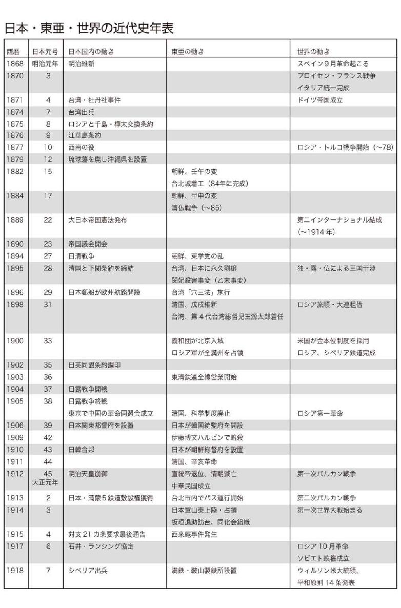
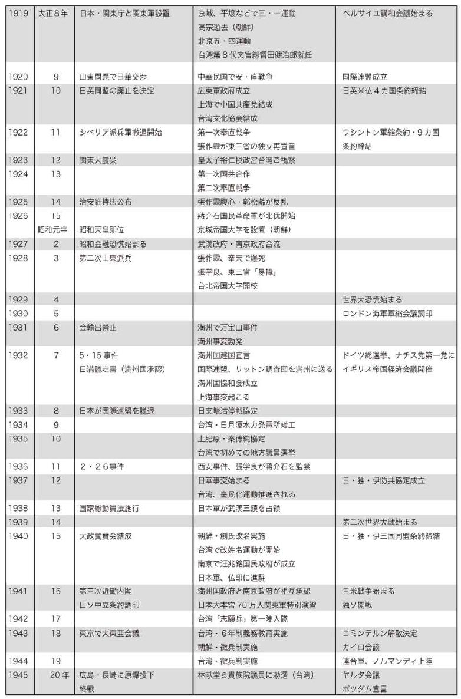
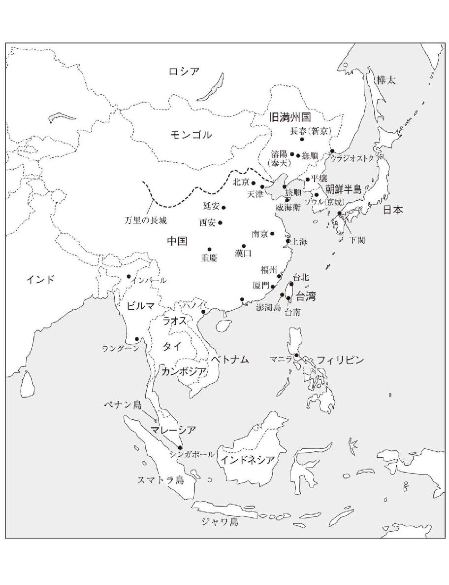

| 黄文雄の近現代史集中講座 日清・日露・大東亜戦争編 | |
| 黄文雄 | |
| (2010) | |
黄文雄の近現代史集中講座
日清・日露・大東亜戦争編
黄 文雄
この作品は縦書きでレイアウトされています。
また、ご覧になる機種により、表示の差異が認められることがあります。
一部の漢字が簡略字で表示されていることがあります。
まえがき
「植民地か、戦争か」という列強の時代
二〇世紀は「戦争の世紀」「戦争と革命の世紀」ともいわれる。たしかに二〇世紀には二度にわたる世界大戦があった。大戦後にも一九九〇年初頭のソ連・東欧の崩壊に至るまで東西冷戦があった。国共内戦をはじめ、朝鮮、ベトナム、カンボジア、アフガンなどの内戦、イラン・イラク戦争、イスラエル・アラブ諸国との間に数度にわたる中東戦争などもあった。スリランカの内戦は二一世紀に入ってやっと終結、今現在なおも内戦がくすぶっている国々もある。
国家と国家との戦争は二一世紀に入ると、たしかに終息に向かいつつある。だが民族や宗教を巡る紛争はいまだに続いている。戦争の形態も対テロ戦争やハッカー攻撃のような情報戦争などへ変わりつつあるが、その一方で、核開発やハイテク兵器の開発など戦力増強や「富国強兵」に狂奔する国々があることも、一つの現実であろう。
「二〇世紀は戦争と革命の世紀」というのは、間違いではない。だが二〇世紀だけでなく、一九世紀も、あるいはそれ以前の世紀も人類は戦争を続けてきた。
大航海時代以降、海を渡っての戦争が増えたが、旧大陸でも新大陸でも戦争が続いていた。ナポレオン戦争やイタリア統一戦争、プロイセン・フランス戦争、露土戦争、アメリカ独立戦争、メキシコ独立戦争、ボーア戦争などが有名だが、東アジアでも一九世紀には、アヘン戦争、清仏戦争などの対外戦争が起こっている。
さらに中国だけでも一八世紀末の白蓮教の乱から、太平天国、回乱、義和団の乱などが一〇〇年以上にもわたり、二〇世紀の一九七〇年代の文革終結に至るまで、内戦内乱争乱が続いていた。
江戸三〇〇年の平和は人類史から見て稀有な例外、それでも天草の乱や幕末の戊辰戦争や函館戦争など、あるいは明治時代の西南戦争もあった。
国家の大小、民族の多少にかかわらず、人類史を見る限り、戦争というものは、人間の意志だけで決められるものではない。国家・民族間の戦争だけではなく、内戦もそうである。
「アジアは一つ」と言われながらも、同じアジアでも、日本では西南戦争を最後に内戦は終わったが、近隣諸国の中国、朝鮮、越南などは逆に戦後から激化している。もちろん二一世紀になっても、なおも内戦が終わっていない国々がある。同一国家や同一民族でさえ、イデオロギー一つの違いだけでも戦争に訴えるしか手がない。
現在、明治維新後に日本が経験した戦争については、「侵略」というひとくくりで語られることが非常に多い。日中戦争や大東亜戦争のみならず、日清、日露戦争でさえも、そういった論調で語られることをよく目にする。また、中国は実際にそう主張している。
「無謀な戦争、侵略戦争に突き進んだ、日本は戦争を避けるべきだったのに誤った」とよく言われるが、一九世紀、二〇世紀のあの時代、本当に戦争を避けることができたのか。
列強の時代に、戦争を避けるということは、それは植民地になるということであった。実際、東亜のほとんどの国が、列強の植民地化していたのは事実だ。それを見ずに「戦争は避けるべきだった」というのは、卑怯な後知恵にすぎない。
歪んでいる現代日本人の戦争観
開国維新後の日本の戦争を「侵略戦争」とすることについて、これを中国人や韓国人が言うならまだ理解できるが、日本の文化人までが「侵略」戦争だと非難譴責するのは、どうしても理解できない。神武東征の神話まで「侵略戦争」だと得々と論述する学者までがいるぐらいだから、じつに驚きだ。
日本は一神教の国ではないから「聖戦」や「義戦」意識が強くないのは分かる。もちろん中国のような「懲罰戦争」意識もそれほど強くない。それでも戦前には「東亜の解放」や「自存自衛」の国民意識があった。にもかかわらず戦後は「日本だけが悪かった侵略戦争」という史観一色に塗りつぶされてしまった。
「日本だけが悪かった」という侵略戦争観以上にもっと驚くべきことは、日本の代表的文化人に見られる戦争観の混沌だ。たとえば戦後代表的な文化人の一人である田畑忍（元同志社大学学長）はレーニンを「戦争によって戦争を否定せんとする」反戦主義のヒューマニストと礼賛し、自分自身でさえ「好戦主義者」だと公言する毛沢東を「レーニンの戦争否定論を発展させた」マルキシズム的な平和論の完成者と持ち上げ、そして毛沢東の「仁」を褒め称えた。それほど滑稽な礼賛論はないだろう。
あるテレビ討論会で、ある国会議員から日中戦争は日本の中国侵略戦争ではないかと糾されたことがある。私は「侵略戦争なんて、とんでもない。中国内戦に対する日本の道義的、人道的介入だ」と反論した。たしかに民族派の言論人でさえ、日米戦争は「帝国主義間の戦争、日中戦争は侵略戦争だ」と公言することさえ少なくない。
「日本だけが悪かった」の侵略戦争観は、戦後一億総懺悔の後に全国民に定着した戦争観かも知れない。だが、日本の常識は必ずしも世界の常識とは限らない。
「日本は反省も謝罪の必要もまったくない。過去でいちばん悪かったのは戦争に負けたことだ」という見方は、台湾生まれの私の同輩や老輩者の中では、むしろ一般的だ。
自分たちが戦後ずっと「侵略戦争観」に呪われてきた姿は、決して正常ではないということに気づいている日本人は、いったい何人いるだろうか。
六大戦争を一連の流れとして見る
「戦争は政治の延長」「血を流さない戦争が政治、血を流す政治が戦争」というのが、よく知られる、クラウゼヴィッツと毛沢東の戦争と政治についての考え方である。
開国維新後の日本の対外戦争については「日本人は武士の国だから好戦的」「侵略の陰謀」などなど、隣国から非難されることも少なくない。
だが、もし開国維新を成し遂げなかったら、鎖国のままでずっと平和を保てただろうか？ かりに内戦は避けられても、あの列強の時代には、戦争も平和も一国だけの意志で決められるものではなかった。それは当時の常識である。
日本に限らず、オスマン・トルコも、ロシア帝国も、清帝国のような世界帝国も、あるいは列強間の第一次、第二次世界大戦も、戦争を回避できなかった。列強の時代には、一国平和主義はありえなかったのだ。
本書は開国維新後の日本の戦争について、日清戦争、北清事変、日露戦争、日中戦争、大東亜戦争、日米戦争の六つを取り上げている。
「大東亜戦争」というと、現在では日中戦争も含めて語られることが多いが、これは本書でも説明しているが、まったく別の戦争である。
また、日米戦争はたしかに大東亜戦争の一環として取り上げるべきだが、なぜ日米戦争までに至ったのかという原因について、より詳しく説明するため、この二つはあえて分けた。
もちろん、開国維新後の日本の海外への出兵は、台湾（牡丹社）事件、江華島事件、ノモンハン、関東軍の満州事変などなどもあった。
この六つの「戦争」を一連の流れとして見て考えることが、なぜ日本が「戦争までに至った」かを知るには、絶対に欠かせない。
司馬遼太郎氏は「明治までの日本軍は立派だったが、昭和に入って堕落した」と述べたが、それは間違いである。歴史を一連の流れで見れば、すべてが必然である。
私がずっと不思議に思っているのは、なぜ日本の戦争だけが「侵略」なのか、ということに加えて、なぜ日本はつねに「超大国」を相手に戦争せざるをえなかったのか、ということである。その「近因」「遠因」の究明が本書執筆の目的の一つである。
本書は二〇〇九年一月～三月にかけて私が拓殖大学で行った、近現代史の「六時間集中講座」の内容に基づいて整理加筆したものである。前著の『黄文雄の近現代史集中講座 台湾・朝鮮・満州編』と併せて一読をお勧めしたい。
二〇一〇年二月吉日
黄文雄
黄文雄の近現代史集中講座◎目次
第一部 日清戦争
第一章 日清戦争は清国による日本懲罰戦争だった
第二章 日清戦争はなぜ起こったのか
第三章 日清戦争をめぐる戦力分析
第四章 日清戦争開戦
第五章 日清戦争が変えた東洋の進路
第二部 北清事変
第一章 民乱に明け暮れた清国
第二章 義和団の乱
第三章 八カ国連合軍の北京占領
第四章 北清事変における日本軍の意義
第五章 北清事変が変えた近代中国
第三部 日露戦争
第一章 ロシア南下の脅威
第二章 日露開戦前夜
第三章 日露戦争開戦
第四章 日露の戦争と平和
第五章 日露戦争の歴史的な意味
第四部 日中戦争
第一章 内戦が続く中華民国
第二章 日中戦争はなぜ起こったのか
第三章 日中戦争の真実
第四章 中国による歴史の創作
第五章 日中戦争の歴史的な意味
第五部 大東亜戦争
第一章 東亜世界秩序の変化
第二章 東南アジアの植民地化と東亜の解放
第三章 大東亜戦争とは、いかなる戦争だったのか
第四章 大東亜共栄圏とは何か
第五章 大東亜戦争の歴史的な意味
第六部 日米戦争
第一章 日露戦争後に生まれた「黄禍論」
第二章 日米決戦に至る道
第三章 日米開戦
第四章 なぜ日本は超大国に挑み続けたのか
第五章 大日本帝国の歴史的貢献
装幀 上田晃郷
編集協力 仲上真之



第一部
日 清 戦 争
第一章 日清戦争は清国による日本懲罰戦争だった
大清帝国の東亜征服戦争
日清戦争や日露戦争については、その戦史のみを取り出して語られているものが多い。だが、歴史というものは、さまざまな事件の積み上げによってつくられているのである。いくら戦史を検討しても、それだけでは、戦争の本質と因果関係を理解することは極めて難しい。
では、日清戦争とは、いったいどういう戦争だったのかといえば、清国による日本に対する懲罰戦争である。ただし、こう指摘する論は皆無に近く、私の持論を除いて、ほかに見たことがない。では、なぜ懲罰戦争なのか。これを論証するについては、歴史をよりグローバルに見ることが重要だ。私は、よく文明史の視野から歴史を見るのだが、中国ではそれを、文明史というよりも「大歴史」と称することが多い。
そもそも清国を主宰した満州人とは万里の長城の外、いわゆる関外、塞外の民族だった。中国から見れば夷狄である。だが、満州人の中国征服は決して異例なことではない。かつての五胡十六国時代の北方夷狄の華北支配も、契丹の遼、女真の金、モンゴルの元も、中国の北部、あるいは全部を支配した歴史もある。清が遼、金、元のような「征服王朝」だったのかどうかについては、ここでは論じないが、清に至るまでの歴史をざっと見ておきたい。
満州人の祖先だった女真人（金王朝）は、モンゴル人に征服された後、漢人が「大明」を建てた後でも独立の国家をつくれなかった。彼らは一七世紀に至るまでずっと、朝鮮半島北部の長白山脈以北で、建州女真、海西女真、黒龍江流域の野人女真三部に分かれ、北元、大明、朝鮮に臣属していた。
この建州女真のアイシンギョロ・ヌルハチが満州各地の女真人を統一して、後金国を建国したのは一六一六年のことである。その建国宣言の「七大恨」といわれる「仇討ち宣言」とは、明王朝の迫害に対する全民族の復仇戦争にほかならない。
後金国はやがて、モンゴル帝国の後継国家として、モンゴル人の「北元」からモンゴル帝国の国璽（国家の表章としての官印）を譲り受け、「満蒙連合王国」という形で二代目のホンタイジーが帝位に就き、「大清」と号した。そして、満州人の八旗軍とモンゴル人の八旗軍を主力に、朝鮮を征服、臣属させる。朝鮮でいわれる「胡乱」である。さらに漢人八旗軍も加えて強盛になり、新興の塞外帝国として、衰微する大明帝国と関外で攻防を繰り返した。
清帝国三代目皇帝の順治帝（一六三八～六一）のときには、長城東端の山海関から中国に入り、明の北京朝廷を征服して大順王朝をつくったばかりの李自成（明代末期の反乱軍首領）らを北京から追い出し、中国に君臨したのである。
清帝国の東亜征服戦争の限界
長城から入関（関内に入る）した順治帝だが、二十四歳で急逝したため中国の征服戦争は四代目の康熙帝（一六五四～一七二二）に受け継がれた。漢人武将の反乱である「三藩の乱」（一六七三～八一年、雲南、広東、福建の反乱）は、康熙帝の代でほぼ平定され、中国は完全征服される。いわゆる中国統一である。そして、雍正帝（一六七八～一七三五）、乾隆帝（一七一一～九九）の約一三〇余年間に、版図はさらに中央アジアへ広がっていく。
モンゴル系がつくった西方の草原帝国ジュンガルとの争覇はほぼ一世紀近くにもわたった。ジュンガル帝国はチベット、新疆、外モンゴルにまたがる巨大帝国であったが、六代目・乾隆帝の代でほぼ征服。新疆（回部など）とチベットの地までを清帝国の版図にしたのである。ただし、新疆省（一八八二年）と東チベットの西康省の設置（一九〇一年）などは一九世紀末、回乱（イスラム教徒の反乱）後のことだった。ジュンガル征服後も清帝国の征服戦争は続き、乾隆帝の代に西南部の貴州、ビルマ、ベトナムまで服属させた。
中国の真の統一は、秦・漢や隋・唐の代ではなく乾隆帝の代であると唱える中国人学者もいる。だがそれは、あくまでも独りよがりの中国統一史観であって、世界共通の史観ではない。
というのも、清帝国は後金国建国以来六代にわたり、二〇〇余年もかけて征服戦争を続け、その膨張主義の結果、宋・明以来の中国歴代王朝の伝統的領土（内中国）の約三倍以上にも版図を広げてきた。乾隆帝は、一〇回の外征を「十全武功」と誇りにして自らを「十全老人」と呼び、天下一幸福な皇帝であると自慢したが、これは実は、領土拡張の限界の表現にほかならない。
もちろん、大清帝国に限らず、ロシア帝国も、オスマン・トルコ帝国も、大モンゴル帝国さえ、領土拡張には、空間的、時間的限界があった。あるいは、日の没しない海の大英帝国も、パックス・アメリカーナ（アメリカによる世界支配）でさえ、超えることのできない限界がある。
大清帝国が、もはや陸へも海へも拡張できなくなったのは、文明の栄枯盛衰、大国の興亡の歴史の鉄則からくるもので、乾隆帝の時代にはすでに盛世は峠を越え、内部で自壊が始まっていた。社会は乞食と匪賊に溢れ、一八世紀末の白蓮教の反乱から太平天国の乱（一八五一年）など一世紀以上も民乱が続いたという一事だけからも、その弱体化、衰微の一端を見ることができる。
とくに中華帝国の興亡には、有限資源の乱伐と枯渇、砂漠化が大きく関係してきた。中国歴代王朝の滅亡は常にその繰り返しによって起こったものであった。自然の乱伐による水害、干害が飢饉を引き起こし、やがて反乱や大乱を招いて王朝が滅ぶ。清朝もまた、その法則には逆らえなかったわけだ。
一方で、大航海時代以後、世界史は陸の時代から海の時代へと文明の軸が移動し、西洋の優位が確立されつつあった。
中国史や東アジア近代史では、この西洋列強のアジア進出、そしてその結果引き起こされたアヘン戦争（一八四〇～四二年）によって、清国は衰退、没落の一途を辿ったと説明される。
それも確かに一因ではあるが、もっと歴史を遡って複合的に見れば、すでに清朝は一八世紀後半から盛世を過ぎ、資源枯渇を主因とする動乱の時代に入っていたわけである。
もちろん、アヘン戦争以後の一甲子（六〇年）にわたる対外戦争の失敗が、逆に二〇〇余年来征服してきた新領土の放棄、築いてきた天朝朝貢秩序の破綻をもたらしたこともまた、事実である。アヘン戦争とはむしろ、中華帝国の膨張を食い止める最後の一刺しだったのだ。
中華帝国の朝貢秩序
二〇〇年以上にわたる清の中国征服と領土拡張は、伝統的な中華帝国の朝貢秩序を再建した。朝貢秩序や冊封体制（中華の天子が官位を授けること）は、古代の周の時代から形成されたもので、漢、唐の時代に徐々に確立され、清帝国によって完成された、中華世界を中心とする天下秩序である。具体的には、以下のような特色が上げられる。
一、中国は天下の中心であり、原則として「天に二日なく、地に二王なし」。皇帝は、天子として天に代わって万民を統率し、天下に君臨する。
二、天下は華夷（中華と夷狄）によって構成され、夷狄（未開民族）が中華文化によって文明開化されれば、やがて中華の一部となる。それが徳化、王化、華化ということでもある。
三、夷狄は「礼」にしたがって天子に朝貢し、天子の冊封によって朝貢国となる。
四、朝貢国は中華の暦を使用し、「正朔を奉ず（臣民となる）」と称される。
五、朝貢国は定期的に貢使を天朝に送り、回賜（返礼）を頂く。朝貢貿易ともいわれる。
六、清王朝は、中華帝国の本部一八省以外に、以下の朝貢関係をつくりあげた。
①満州は天領とされ、入植禁止。
②藩部には将軍・大臣を置く。従属関係の半自治国で、モンゴル、新疆（回部など）、チベットなどが、これにあたる。
③朝貢国は朝鮮、ベトナム、シャムなど。
④準朝貢国はビルマ、ネパールなど。
⑤朝貢貿易により、朝貢国と見なした西夷はポルトガル、オランダ、イギリス、イタリア（サルディニア）、バチカンなど。
⑥朝貢国ではない、貿易関係をもつ互市国は日本、東南アジアの海港都市など。
そして、中華帝国の天子は、一九世紀の初頭まで唯我独尊の中華思想のもとで、天下唯一の主宰者として諸国を睥睨する（睨んで威勢を示す）としていた。
たとえば、『皇清職責図』（一七六一年）では、イギリスとオランダも清の属国であるとしている。清朝の法規集の一つである『嘉慶法典』（一八一八年）に収録されている朝貢国には、朝鮮、琉球、ベトナム、ラオス、シャム、ビルマだけでなく、オランダ、ポルトガル、イギリス、ローマ法王庁も入っている。つまり、中国との貿易を求める国家はすべて天子の徳を慕い、天子に朝貢する朝貢国と見なされたのである。
これが思い込みも含む中華帝国の伝統的天朝秩序であって、万国に通用しないのは言うまでもない。実際には、中華帝国の朝貢秩序、冊封体制は一八世紀の乾隆時代以後に至って限界に達し、その中華覇権主義は西洋列強の「主権国家」による「万国公法」といわれる国際法秩序体系の完成に阻止され、全地球を包摂する世界国家を完成することなどできなかった。
一九世紀以後の東西文明の衝突は巨視的に見ると、中華帝国の「朝貢秩序」「冊封体制」体系と欧米列強の「近代国際法秩序」体系との衝突である。結果的には、中国覇権主義の独走はできなくなり、中華世界の天朝秩序が近代国際法秩序体系に編入されつつある時代でもあった。
中華帝国が失敗した懲罰戦争
アヘン戦争以後の中国をめぐる戦争は、現在では、「帝国主義の中国侵略戦争」とするのが「歴史認識」の主流となり、「正しい歴史認識」として、中国から繰り返し日本に押し付けられ続けている。だが、それは決して真の「正しい歴史認識」などではありえない。きわめて独善的な「歴史認識」なのである。
アヘン戦争から、ベトナムをめぐる清仏戦争（一八八四～八五年）、日清戦争（一八九四～九五年）、義和団の北清戦争（一九〇〇年）まで、一九世紀中の六〇年にわたる中国の対外戦争とは、西夷と東夷に対する懲罰戦争、それも失敗した懲罰戦争であった。それは一九七九年に中国がベトナムに対して行った懲罰戦争とまったく同じである。
そもそも清帝国が中華世界の征服、さらに東亜大陸への版図拡大によって確立した中華朝貢秩序の関係とは、絶対的な関係としては、上国と下国、宗主国と属国との関係に限るものである。これは、いわゆる列強とそれ以外の諸国との間で締結されている不平等関係と同じく、煩瑣な儀礼によって律される支配国と被支配国の関係である。
原則的には「覇道」を否定して、「徳治」「徳化」が唱えられていたが、いざ朝貢国が「礼」を失すれば、余儀なく「力」に訴え、「懲罰」することも原則の一つとなっていた。古代中国の史書では「伐」や「征」、「討」と記されている。
つまり、「中国は四夷を御し、やって来れば慰撫し、背けば滅ぼす。これこそ不変」の「道」というのが中国の伝統的な夷狄観なのである。アヘン戦争は、中華の「礼」に背く英夷、すなわちイギリスに「懲罰」を与えるというものであり、日清戦争は東夷、すなわち日本に中華帝国の「懲罰」を行うというものにほかならない。
アヘン戦争とは、単にアヘン貿易をめぐる清と英の衝突から始まった戦争ではない。孔子のいう「郁々乎たる文」をもって民を化す文化により、夷狄を徳化しようとする天朝に対する、英夷の反逆、反乱と見なされたがゆえのことだった。
第八代の道光皇帝の、英夷に対する「聖戦」「義戦」の聖旨には、「我が朝が外夷を撫馭（いつくしんで統率すること）するには、ひとえに恩義を以てする。各国が恭順であれば、礼を厚くして待遇し、共に昇平（天下泰平）の平和な世界を楽しもうとするのである」とある。だが、夷狄が恭順しなかった場合、それは「天に逆らい、道理にもとり、その性は犬羊と同じであるから、天地の容れざるところ、また神人ともに憤るところである。かくてただ痛撃を加えて根こそぎ殺し尽くすしかなく......」、だから、「天討」として、「反逆した夷の首を京に送り、徹底的に懲らしめよ」と、殺し尽くすことを命じたのである。
アヘン戦争は、「逆夷」の討滅を「天罰」として天朝が始めたのだが、それは、アロー戦争も清仏戦争も日清戦争もそうだった。
そして、それらはことごとく失敗した。天朝の聖戦思想が、すでに時代として通用しなくなったことを示していた。
台湾出兵と琉球処分
中華帝国の朝貢秩序、冊封体制の終焉を象徴する出来事が、日清戦争の二〇年ほど前に日本が行った台湾出兵であった。一八七一（明治四）年一二月、琉球宮古島の島民六九人が那覇首里朝貢からの帰途の途上で台風にあい、台湾東南海岸の八瑶湾に漂着した。
当時、台湾南部（八瑶湾一帯）は中国大陸から移住してきた漢人と原住民とのあいだで土地などをめぐってしばしば衝突が起きていた。宮古島の島民たちは、顔が漢人に似ているというので、漢人の土地侵入と見なされ、パイワン族の村「牡丹社」の住民の襲撃を受け、五四人が殺害された。これに水死者が三人おり、生存者一二人は漢人部落に逃れて救助され、七二（明治五）年六月、清国官憲によって那覇へ送還された。
明治政府は「日本の臣民」たる宮古島島民が殺害されたとし、その賠償を清国政府に求めた。しかし清国は、台湾の先住民は清国の人民ではなく、彼らの居住地（蕃地）は「政教禁令相およばざる化外の地」（清国政府の統治がなされていない未開の地）であるとして、日本の要求を突っぱねた。交渉にあたった天津駐在公使・柳原前光（大正天皇の生母・柳原愛子の兄）は、「ならば、彼らの凶悪さを懲罰し、文明の征伐を図ることは開化政府の当然の義務である」との捨てゼリフを残して引き揚げた。
牡丹社出兵をめぐっては、明治政府内部で意見が分かれた。木戸孝允、岩倉具視、伊藤博文、大久保利通、井上馨、渋谷栄一などの外遊帰国組は「非戦論」を説き、大隈重信、板垣退助、桐野利秋、副島種臣らは「主戦論」を説いて、征台論で朝野が騒然となった。だが、副島全権大使、柳原公使らの交渉の顚末を聞いた非戦論派の岩倉や大久保らは、態度を翻して討伐支持にまわる。こうして、台湾出兵の大勢が決まった。
一八七四（明治七）年二月、台湾蕃地事務局総裁に大隈が、総指揮官である台湾蕃地事務都督に西郷従道陸軍大輔（次官）が任命された。また、「台湾出兵」は、大久保と大隈が「台湾問題」（征台論）と「朝鮮問題」（征韓論）の問題処理をめぐって、副島はじめ外務省のリゼンドル顧問、鄭永寧、柳原ら「副島部屋」の面々と相談のうえ、立案したものであった。
同年四月、西郷は谷干城陸軍中将・赤松則良海軍少将らをはじめ、軍艦五隻、船舶一三隻、兵員三六〇〇名を率いて台湾へ出征、六月には事件発生地域を制圧、占領した。
台湾討伐を終結させるために日清間で開かれた北京会談で、当時の清国政府は日本の台湾出兵を保民のための「義挙」として正式に讃えた。これは「互換条款」にも明記されている。さらに、西郷軍が台湾から引き揚げた際には、清国海軍は礼砲をもって見送ったほどである。また、北京会談では、従来両属関係にあった琉球の遭難者は「日本国属民」であるとされ、さらに被害にあった琉球民への補償と日本の軍費として、清国は日本政府に「撫恤銀」五〇万両（約七〇万円）の賠償も支払うことになった。
日本政府は、この「条款」の調印を受けて一八七九（明治一二）年四月四日、琉球藩を廃止して沖縄県を設置する。いわゆる「琉球処分」である。これによって琉球藩は消滅し、清との冊封関係もなくなったのである。
日本懲罰戦争論の台頭
遣隋使・遣唐使以来一〇〇〇余年の間、東方海上の倭夷・日本と中華帝国との関係は決して宗属（宗主国と属国）関係ではなかった。
聖徳太子の時代には、日本は「日出る国の天子対日没する国の天子」という対等な関係を表した国書を送り、煬帝の不興を買ったという記録がある。「天に二日なく」という天朝朝貢の秩序関係の下では、いかなる国であろうと天朝と対等の関係を持つことは絶対にありえなかったのだ。
たしかに明の時代には、日本が「北虜南倭」の「南倭」として中華帝国最大の脅威となったこともあったが、原則的には中華帝国が一方的に日本を朝貢国と見なしてきた。そして、清帝国の時代には、日清ともほぼ同じ時期に鎖国の時代に入ったが、日本は、長崎を残してオランダと清国の唐船の来航を許してきた。当然、実際の関係としては「互市の国」と見なされるものだ。だが、清が、「天朝は万国を統御している」という天子の思想を放棄することはなかった。
清国の官僚たちは明治維新後の一八七〇年代になっても、明治新政府を、王朝交替（易姓革命）により権力奪取をしたものと見なしていた。彼らにとって明治新政府は、「西服に改め、洋言を効い、焚書にして法を変えた」ものであり、これに対して「精鋭なる軍万人を選び、ただちに長崎を撃ち、進んで倭都に迫れ」と提言する「征日論」までもあったのである。
中国に言わせれば、明治維新の改革とは、「朝令暮改で児戯の如し」「風俗を改むるに甚だ荒唐無稽、正朔衣冠の祖制亡ぶ」「文明開化を誇るも、これ井の中の蛙」ということになる。そして、中国とは天と祖先を崇拝する国であり、あらゆる社会的政治的変改は、この祖制に背くものであるとして、「万死の大罪」とされているのだ。従来、中華帝国は天下国家として、国家間の戦争でも内乱、反乱、謀反として位置付け、征伐して鎮圧することしか考えていなかったのである。
だから、清朝は日本を屈服させるために、日本征伐について少なからぬ軍事的偵察を繰り返して、懲罰戦争を唱えている。たとえば、江蘇按察使（江蘇省治安長官）の応宝時は、日本の「台湾出兵・琉球処分」後に、江蘇巡撫の張樹声に対して日本懲罰戦争を主張している。また、当時の清国駐日大使館随員・姚文棟の『日本地理兵要』（一八八四年）、『琉球地理志』（一八八二年）などは、日本征服のための軍事関係書にほかならない。
とはいえ清国末期、北清事変や辛亥革命までは、朝廷から地方までの儒教官僚、知識人、文人たちは、たいてい、列強に対抗するために「仁義道徳」や「招撫（敵を呼び寄せて安心させる）」「馭夷の術（夷を制する方法）」「夷を以て夷を制する」などと論議していた。
天子は天命を受け、天下万民を教化するものとして、絶対的な道徳的優位を持つことを確信しているので、「祖制を変える（変法維新）」者、あるいは恭順しない者があれば、英夷であろうと倭夷であろうと、王師（王道の師）を送り、懲罰を行えば、たちまち民衆が決起、王師は迎え入れられると確信して疑わなかったのである。
第二章 日清戦争はなぜ起こったのか
朝鮮半島をめぐる中国と日本の因縁
大陸中国と列島日本との間の戦争は、古から、ほとんどが朝鮮半島をめぐる因縁から起こっている。朝鮮の三国時代の日・唐の白村江の戦いも、豊臣秀吉の「征明」（朝鮮出兵）も、日清戦争もそうだった。元寇（一二七四年、一二八一年）も、朝鮮半島から日本列島に襲来したものだった。
だから、朝鮮半島は「日本列島の横っ腹に突き刺さった剣」ともいわれる。地政学的に半島が、陸から海への経路となることはたしかである。
とはいえ、ただの経路となったのは朝鮮半島ぐらいのもので、バルカン半島先端の古代ギリシャもイタリア半島のローマも、あるいはイベリア半島のポルトガル・スペインも、それぞれに、古代文明、世界帝国、そして大航海時代を切り開いてきた。これは、地政学というよりも歴史幾何学的に考え直す必要がある。そこには、新しいハートランド（中軸地帯、ユーラシア内陸部を指す）やシーランド（海洋覇権地政学）などの理論があるのではないだろうか。
日中韓「東亜三国」は、古代からさまざまな歴史的因縁があった。だが、一九世紀中頃の黒船来航やアヘン戦争に代表される西風東漸、西力東来後に、世は変わった。大航海時代の後に、列強の時代がやってきたからだ。アヘン戦争後、大清帝国は、「五港開市」（港市だけ限定的に開国）をせざるをえなかった。朝鮮半島にはたて続けに「洋擾」（西洋の艦隊）が現れ、日本列島にも北からも南からも列強の洋船が来航して、開国を迫る。もはや、外船を追放する無二念打払令では通用しない時代を迎え、開国、そして維新を決断せざるを得なくなっていた。
一九世紀の中頃、「東亜三国」が「西洋の衝撃」後に直面するのは「西洋の脅威」である。アヘン戦争後、列強の触手は着実に中国大陸へ、東アジアの半島へと伸びつつあった。これに対し、日本は一八六八年の明治維新により、近代化と富国強兵路線へとつき進むことになる。だが、清国の体制は旧態依然で、西洋から学ぶ「洋務運動」などさまざまな改革が提唱されるもののことごとく失敗しており、このままでは列強の勢力は清朝とその属国である朝鮮を吞み込み、やがて日本まで及ぶことは必至の情勢だった。
一九世紀末から二〇世紀初めまでのわずか一〇年の間で、日清、北清、日露戦争があったことは、こうした北東亜情勢の変化、そして文化摩擦、文明衝突の表面化を端的に物語るものである。
列強のシーソーゲームの中に立たされた日本は、なかんずくロシア勢力の南下が、東進から島伝いに南下するに止まらず、シベリアを制圧し、さらには沿海州から朝鮮にまで進出し、やがて玄界灘に現れるのも時間の問題であるという脅威に直面していた。
これは「東亜三国」共通の危機であった。日本ではいつまでも改革が進まない中国・朝鮮など東亜隣国の悪友どもとの交遊を謝絶する「文明開化」の加速や「脱亜入欧」論、「ヤマトイズム」や「大アジア主義」の論調も高くなっていた。つまり、列強のシーソーゲームの中で、朝鮮の存亡をめぐる内政改革に関する日清の対立が日清戦争の発火点となったのだ。
朝鮮内政改革をめぐる日清の対立
一八七五（明治八）年、日本の軍艦が朝鮮側の江華島砲台から砲撃された報復として、砲台を破壊する「江華島事件」が起こった。その結果、翌年に「日朝修好条規」が締結され、朝鮮は開国した。
同条規の第一条には、「朝鮮は自主の邦にして日本国と同等の権を保有せり」とあるが、これは朝鮮が清国の属国でないことを明らかにするもので、朝鮮が独立国であることを承認したのは日本が初めてだった。
しかし、清国はこれに対抗し、李鴻章を派遣して朝鮮の対外開国の指導を行い、米朝条約締結のときには、「朝鮮は清の属邦である」と織り込ませた。英、独との修好条約交渉も、李鴻章の幕僚・馬建忠の指導の下で行われた。清朝は、朝鮮が従来の宗属関係から独立することを絶対に認められなかったのだ。
このように日朝修好条規から日清戦争までのおよそ二〇年間、日本と清国は、朝鮮半島をめぐる勢力争いを行った。
日朝修好条規締結後の朝鮮では、日本の明治維新にならって改革をめざす改革・独立派勢力と結んだ閔氏一族が台頭していた。閔氏は日本から軍事顧問を招いて軍制改革を行い、最上位の身分である両班（貴族階級）の子弟を中心に近代的な新式軍隊をつくった。
そこで一八八二（明治一五）年、朝鮮の首都漢城（現在のソウル）で第一次京城事変（壬午事変）が起こった。閔氏政府への敵対意識と、日本の指導による改革に不満を抱いた大院君派の旧式軍隊の反乱である。当時旧式軍隊は新式軍隊との差別待遇に反発しており、加えて、財政難により軍隊への給与（米）も遅配していた。ようやく支給された米に砂やヌカが混在していたことから、兵士の不満が爆発したのだった。
大院君の扇動もあって、この反乱兵士に一般の貧民も合流し、彼らは閔氏派要人や日本人を殺害し、日本公使館を焼き討ちした。そうして、反乱勢力に擁立された大院君が摂政となり、政権の座についたのである。日本と清国はただちに出兵し、ことに清国軍は大軍を派遣して大院君を捕らえ、自国へ移送して監禁し、閔氏政権を回復させた。
この清国の機敏な対応は、朝鮮に対する清国の潜在的影響力を見せつけるものだった。日朝間では「済物浦（現在の仁川）条約」が結ばれ、朝鮮政府は日本に対する賠償金五〇万円の支払いや日本公使館に守備兵を置くことなどになったが、一方で、閔妃は親清策に転じ、清国は朝鮮を属国として支配することになった。清国の朝鮮への指導権は強化され、日本の勢力は朝鮮から一歩後退した。
一転して清国に依存することになった閔氏を中心とする事大主義的な守旧派は「事大党」と呼ばれ、朝鮮に駐留した清国軍を盾に、改革派の活動を妨害した。これに対して金玉均ら改革派は日本との提携を強化。金は日本の近代化、発展に強い刺激を受け、朝鮮の近代化と明治維新のような国政改革を図ろうとした官僚で、朴泳孝らの同志とともに「独立党」を結成している。そして、若き国王・高宗を啓蒙し、福沢諭吉らを通じて日本政府に接近した。
福沢は朝鮮の近代化と独立にもっとも理解を示した民間支援者の一人で、すでに留学生を慶応義塾に入れるなど、朝鮮の独立派を支援していた。福沢は、官僚腐敗、財政破綻により亡国寸前にあった朝鮮官界で、若き堂戸曹判官（内相）だった金玉均を見出し、朝鮮の復興と近代化の指導を行った。その後、金が派遣した数十名の留学生を自分の別邸に住まわせ、軍事、税務、警察、郵便などの近代諸制度を学ばせている。
清朝の朝鮮支配の強化
一八八四（明治一七）年、清仏戦争が起こった。これはベトナム三国に対する伝統的宗主権を主張する清朝と、ベトナムの植民地化を図るフランスとの戦争であり、アジアに進出する西洋列強と伝統的中華秩序の維持を防衛せんとする清朝との衝突だった。
清朝はこのとき、朝鮮駐留部隊三〇〇〇名の約半数を引き揚げたため、同年一二月、金玉均らは日本の竹添進一郎公使と協力し、郵政局開局の祝賀宴に出席した閔泳翊を殺害して混乱を起こし、王宮に入って高宗を保護し、政権を立てた。
だが、その二日後には、袁世凱率いる清国軍の攻撃を受け、護衛の日本軍一個中隊が撤退。政変は三日で終わった。これを「第二次京城事変（甲申事変）」と呼ぶ。敗れ去った金玉均と朴泳孝は日本に亡命し、福沢邸に潜伏した。
第二次京城事変の失敗に絶望した福沢は、有名な「脱亜論」の一文を書き、自身が創刊した『時事新報』に社説として掲載する。もともと日中韓三国がともに近代化の道を歩み、西欧列強による東亜植民地化を防ぐべきことを説いてきた福沢である。だからこそ、朝鮮の独立派を支援してきたわけだが、頑迷固陋の清国と朝鮮には、この道理が理解できないと見た彼は、この「脱亜論」で「悪友（清朝と朝鮮）を親しむ者は共に悪友を免かる可らず。我は心に於て亜細亜東方の悪友を謝絶するものなり」と宣言したのである。
一方、日本は一八八五（明治一八）年四月、清国との関係改善をめざし、「天津条約」を結ぶ。この条約は、日清両国が朝鮮から撤退すること、日清両国の軍事顧問の派遣を中止すること、将来の出兵時は互いに通知しあうことなどを取り決めたものである。
こうすることで、日本は朝鮮の独立保持を狙ったのだった。この条約はいわば紳士協定で、調印はせず、相手を信頼して結んだもので、この後、日清両国は朝鮮から撤兵した。このようにして両国の衝突は、とりあえず一時回避された。
日清の朝鮮をめぐる争いでは、このように第一、第二ラウンドは清国側の圧勝だったといえる。
清の日本に対する威嚇と日本人の激怒
壬午、甲申と、二度にわたる京城事変で、日本人の清国への敵愾心と日本政府の弱腰姿勢への不満は、日増しに高まりつつあった。
たとえば、当時、自由民権運動家たちの関心が民権から国権へと移行していったが、その理由もここにある。議会開設運動の目的を達した板垣退助ら自由党の闘士の多くは、朝鮮問題へと関心を移し、一部は朝鮮に渡って独立派支援のクーデターを起こし、朝鮮に立憲制をうちたてる計画さえ立てたほどだ。
最初は自由民権運動の一翼を担っていた頭山満らの玄洋社も、第二次京城事変で国権主義に転じている。頭山は日本に亡命した金玉均を援助しており、やはり朝鮮への出兵も計画していた。ことに一八八六（明治一九）年、清国艦隊が長崎に寄港した際に起きた「長崎事件（清国の水兵による暴行事件）」は「国辱」であるとして玄洋社を国権主義の急先鋒に変えた。
その後、このグループは大アジア主義を標榜し、朝鮮、ロシア、中国問題で活躍して隠然たる影響力を行使する。戦後には、超国家主義団体などと誹謗されていることは、周知のことである。
この長崎事件とはどのようなものだったのか。順を追って説明しよう。
一八四〇年のアヘン戦争以後半世紀以上経った日清戦争に至るまで、中華帝国の外夷に対する懲罰戦争によく見られるのは、伝統的な威嚇である。それは、西夷だけではなく、東夷日本に対しても同じである。
しばしば、清はアヘン戦争以後、ひたすら弱体化の道を歩んだかのように論じられているが、実際には強大国化への道をめざしていた。というのも、アヘン戦争、アロー戦争、そして太平天国の乱などで西洋の軍事技術の優越性を知らされた清朝は、日本の明治維新とほぼ同時代に、西洋の軍事技術の導入による富国強兵の洋務（自強）運動を開始していたからだ。
こうした富国強兵政策の結果、誕生したのが東洋一を謳う北洋艦隊である。
一八八六（明治一九）年、その北洋艦隊のうち六隻がウラジオストク訪問の帰途、日本に立ち寄った。ドイツ製の三〇・五センチ連装砲二基四門、三〇・五センチ装甲のバーベット（銃座）を持つ「定遠」「鎮遠」の二隻を含む大艦隊だった。この二隻は西欧列強並みの戦艦で、当時としては世界最大級の最新鋭巨艦で、「無敵の不沈戦艦」と目されていた。
今日の感覚でいえば、日本一国を壊滅できる核ミサイルを目のあたりに見せつけられたようなものである。つまり、名目上は「親善訪問」とされていたものの、実際には第一次、二次京城事変（壬午、甲申事変）で日本に「勝利」したことを踏まえての、日本に対する軍事力誇示のデモンストレーションにほかならなかった。
一方の日本が対外戦争に備えてようやく軍備の拡張を急ぎ始めたのは、この年のことであった。この年、海軍は鎮守府官制を施行し、海防体制を整備している。だが、財政難で軍艦建造ははかどらず、北洋艦隊のような巨砲搭載の装甲艦など、夢のまた夢というのが実際のところだった。また、国内の反乱防止を主任務とする陸軍の鎮台を廃して、戦時に対応する師団に改編したのは一八八八（明治二一）年になってからのことである。
北洋艦隊が品川に入港したとき、日本艦隊がとうてい及ばないその威容に、朝野は愕然とし、清朝の軍事力の強大さに恐れおののいた。水師提督・丁汝昌は日本政府主催の歓迎会に意気揚々と出席し、傍若無人に振る舞った。当時、清朝から見た日本は国土の狭い弱小国で、人口は清国の一省にも及ばず、国民の知能は低劣、軍隊の素質も劣悪で、指揮官は近代戦術を知らず、兵士も持久力がなく、とうてい清朝の一撃に耐えうるものではないものだった。そもそも貧しい日本人は「東洋鬼、喝冷水（水を沸かさずに飲む日本人）」と揶揄され軽蔑されていたのである。
その後艦隊は、軍港である呉にも立ち寄った。修理を名目とした強引な寄港だが、日本側にそれを断ることはできなかった。そして、この艦隊が長崎に寄港したとき、「長崎事件」と呼ばれる事件が起こった。上陸した清国水兵が街で狼藉を働くとともに、警察署を襲撃し、警官一名を殺害したほか、市民と衝突して双方多数の死傷者を出すというものだ。
ところが、北京の李鴻章は、この事件に関して日本との一戦をも辞さないとの強硬な姿勢をとってきた。対する日本政府はこの圧力に屈し、五万二五〇〇円もの巨費を支払い、日本側責任者の処罰まで行ったのである。この事件の屈辱感から、日本人はナショナリズムを暴発させ、清朝に対する敵愾心をかきたてていく。『玄洋社史』（玄洋社社史編纂会）は、このとき日本人の清国に対する敵愾心は頂点に達したと書いている。
かくして日本国内には、朝鮮のため清国と一戦を交えるべしとする世論が起こった。弱きを助け、強きを挫く仁義の軍を起こせ、である。内村鑑三も「文明国として不実の支那に対しては鉄血を以って正義を求める以外にない。永久平和のため戦え」と主張した。
当時、英字新聞を発行していた横浜の「ジャパン・メール」社長でロイター社の通信員も兼務していたブリンクリーは、清朝の、朝鮮に対しての気まぐれな態度──宗主国の権利を存分に行使しながらことごとく義務を回避する──が、日清戦争のおおよその原因だと見ていた。
彼によれば、日本は朝鮮の独立を認め、それを前提に清国と条約を結んだにもかかわらず、清朝は頭から無視して、逆に宗属関係を強化するような動きに出る。それは清朝が、日本人が西洋の文物を取り入れ、東洋の伝統に背いたことに憤慨したというより以上に、自らの優越性という中華思想の絶対的信仰から、条約の遵守の義務を自覚していなかったからだという。
だからブリンクリーは、日清間の戦争を「進歩と停滞の闘い」と呼び、日本と清国の西洋文明に対する態度の違いに、戦争の遠因を求めたのだ。つまり、進んで西洋文明を取り入れた日本は、清朝が西洋文明に向けた軽蔑の目と同じ眼差しで、日本を見下すことが我慢できなかったというのである。
激昂する世論を背景に、日本政府も乏しい財政の中で、軍備拡張を進めていった。明治天皇が宮廷費を節減して建艦費用に充てたことで、官吏は俸給の一〇分の一返納を決め、議会も建艦計画を採択した。
国民の寄付金運動も盛り上がりを見せた。だが、日本には清国戦艦「定遠」などに匹敵する巨艦を発注するほどの資金はなかったため、四〇〇〇トン級のいわゆる三景艦（日本三景の名前がつけられた橋立、松島、厳島）に三二センチ砲を無理やり搭載するという苦肉の策がとられた。このような官民一体の中で、戦争準備は着々と進められ、やがて開戦の日を迎えるのである。
東学党の乱をきっかけとする日清の朝鮮出兵
一八九四（明治二七）年二月、朝鮮の全羅道で東学党の乱が起こった。
東学党は宗教団体で、政府の苛政に耐えかねる農民の間に広がっており、朝鮮政府は一八六四年に創始者・崔済愚を処刑するなど、異端として弾圧してきた。リーダーは、東学党の全琫準だったが、実際の反乱は信者を超えて農民によって担われている。東学党の乱が「甲午農民戦争」とも呼ばれているのは、そのためだ。朝鮮では、すでにその一〇年ほど前から各地で農民の反乱が起きており、反乱はまたたく間に広がった。
全琫準の「倭夷（日本）を駆逐せよ」「権貴（閔氏派）をことごとく滅ぼせ」という呼びかけに、反乱軍は一万を超える勢力となって政府軍を打ち破り、ついに蜂起から約三カ月後の五月末には、全羅道の県庁所在地・全州を占領するまでに至った。
すでに清国は、その前年の段階で軍艦「来遠」「靖遠」を朝鮮に派遣して宗主国の尊厳を示していたが、このときには、朝鮮政府から反乱鎮圧の依頼を受け、陸軍三〇〇〇の兵力を派遣した。日本も済物浦条約を根拠に、居留民保護などを名目に出兵した。第二次京城事変が兵力不足で失敗したことへの反省から、その数は清国軍に倍する七〇〇〇名に及んだ。先遣軍の四七〇名は、清軍が到着する前に、漢城に入城している。
日本軍の出現に慌てた閔氏は反乱軍と和約し、腐敗官吏の処罰や、農民が地方官吏を監視する「執綱所」の設置、奴婢の解放、両班と一般人との差別廃止などを受け入れる。
東学党の乱が収まると、日本は清国に、両国による朝鮮の内政共同改革案を提出するが、拒否される。宗主権を主張する清国が、朝鮮における日本との対等関係を容認するなど、あるはずもないことだった。
一方で日本は単独改革の方針を固めていた。朝鮮の改革がなければいつまでも情勢は改善されないばかりか、ますます混迷の度合いを深めるだけだ。これは日本にとってはこの上なく由々しきことだった。
だが、それを実行するには、頑なに宗主国の立場を固持する清国と戦端を開くしかない。朝鮮問題の政治的解決を一〇年以上にわたって試みてきた日本だったが、いよいよ事ここに至るといったところだった。
ただし、当時の日本の世論には、朝鮮がいかに腐敗しようとも、清朝の属国として、その保護下に入れておけば、朝鮮が列強の草刈場となることもなく、何の問題もなくなるのではないか、との意見もないわけではなかった。たしかに、清朝には日本を攻撃する意図はなく、また、その国力もなかったため、いっさい日本が介入しなければ、当面はすべてが丸く収まったかもしれない。それもまた一つの事実であろう。
だが、逆に言えば、すでに国力もなく、自国の独立すら危機に瀕している清朝が、どうして、列強に対抗して隣国を保護することなどできようか。このような反論を展開したのが、福沢諭吉であった。
実際、清はすでに清仏戦争で属国のベトナムをフランスに奪われていたのである。さらに朝鮮が、ロシアなどの列強に奪われるという最悪の事態となる日は、刻々と迫ってきていたと言っていい。
第三章 日清戦争をめぐる戦力分析
清国圧勝の予想
朝鮮の内政改革・独立をめぐる日清の対立は、東学党の乱をきっかけに風雲急を告げ、日清間に戦雲がたちこめていった。
もし日清戦わば、との予想は、日清双方だけでなく、世界の話題となっていた。すでに壬午、甲申という第一、第二ラウンドの結果があり、ましてや、小日本と大清帝国となれば、小人対巨人の勝負である。一般的予測は、たいてい清朝の圧勝だった。
当の清国の儒教官僚たちも必勝に自信満々だった。
アヘン戦争以来の約半世紀では西夷と戦えば必敗を喫してきたが、それは西夷が「船堅砲利（強力な軍艦と艦載砲）」だからであって、小日本の東夷なら勝てる。なぜなら、日本は「東方海上の粟散の国」、あまりにも小さすぎて話にならない。そのうえ、たとえば李篠圃の『日本紀游』によれば、明治政府は過酷な税を収奪し、人民は怨嗟の声を上げ徳川時代を懐かしんでいるなどと記され、「倭情」（日本情報）から見ても、日本はもうだめだ──。
彼らは、このような中華思想特有の敵情分析をもとに自信、過信に溺れていた。張之洞総督というような冷静沈着な人物でさえ、日本は戦争するまでもなく、公使を召還し、日清貿易を禁止すれば、はなはだ貧小な日本はたちまち困窮するから、日本とは戦うまでもなく、一年も海防を厳重にすれば十分であるという旨で上表したほどだった。
清国軍部内でも、日本と戦えば二カ月で圧勝でき、北洋艦隊は東京湾に入り、九州を属領とすることができるとの予測が立てられていた。これは何も清国の中華思想に基づく自信過剰の妄言というだけではあるまい。国際世論にしても「日清戦えば清国必勝である」とするのが大方の観測だった。当時の国力の対比からすれば、当然の見方である。実際、日本の朝野もかなり超大国の威勢に圧倒されていたのだ。
福沢諭吉もこの頃、清国艦隊が東京湾に侵入し、東京が占領され市民が虐殺される可能性を警告していた。福沢の『兵論』によれば、清国の兵力は一〇八万人だったのに対し、日本はわずか七万八〇〇〇人と一〇分の一にも満たなかった。
開戦直前、清国の海軍は八二隻を擁し、水雷艇を合わせた総トン数八万五〇〇〇トン。対する日本海軍は軍艦二八隻で総トン数も五万九〇〇〇トンにすぎない。しかも、清朝の北洋艦隊には、当時最新鋭の「定遠」と「鎮遠」があり、海軍力においても日本は圧倒的に劣る。だから、陸奥宗光外相など少数を除けば、伊藤博文首相をはじめとした政府首脳の多くは清とは戦争したくなかった。明治天皇もまた、開戦に消極的だった。
清国軍の異常な弱体化
だが、世界の予想に反し、かつて「万を超えれば、天下無敵」を誇っていた清朝軍は極端に弱体化し、戦闘能力を失っていた。たとえばアヘン戦争（一八四〇～四二年）、アロー戦争（一八五七～六〇年）、清仏戦争（一八八四～八五年）の経過を見ると、英仏連合軍が北京城に攻め込んだとき、五〇万の清帝国の軍隊は、たった一〇〇〇名の英仏連合軍に負けるはずがないと信じていた。「船堅砲利」の列強諸国は海上戦は強いが陸戦には弱いから白兵戦をすれば勝てる、猿のように敏捷な四川兵や湖北兵が北京防衛に急行すれば勝てると思っていた。
だが、中国の伝統的なジャンク兵船は西夷の艦隊に歯が立たなかった。陸戦では、黒夷（黒人）一人を斬る者に五〇両、白夷一〇〇両、夷将を生け捕り、あるいは斬る者には五〇〇両、敵艦一隻を捕獲、あるいは破壊するものは五〇〇〇両といった懸賞金を記した勅諭もある。近代の国民戦争を盗賊討伐のように考えていたのだ。
一方、英艦隊は、北上にあたっても沿岸からの薪水補給に不自由しない。銭さえあれば、中国民衆は喜んで労役提供も含めて協力したからだ。陸戦隊が長江河口の舟山列島の首邑である定海を占領した際には、清の守備隊三〇〇〇人は一戦もせずに全員が逃亡した。
反英の民族英雄・林則徐は道光帝に「広東省で大勝、英海軍を全滅させた」と上奏したのに、英艦隊が突如白河河口に現れ、天津から北京の臣民がパニックに陥り、林則徐は免黜（免官）された。珠江河口の砲台攻撃戦では、英艦隊から陸戦隊一五〇〇人が上陸して守備兵と激戦したが、英軍の死者はゼロ、清朝兵は死者五〇〇人、負傷者三〇〇人に上った。本格的陸戦でも勝敗は一方的だった。
当時の清朝兵は、ほとんどが農村から連れられてきて何の訓練も受けていない一〇歳の子どもや五〇歳の老人で、武装といえば、木製の盾と棍棒のみ。銅鑼が鳴ると、一目散に逃げ出すという奇妙な行動が英国の戦記にも見られる。内陸から沿岸に送られてきた勇猛な兵士は、洋夷と戦争をするよりも、豊かな市民の略奪に夢中だったのだ（『失敗の中国近代史』別宮暖朗）。
中国人は伝統文化の影響があまりにも強く、『孫子』や『呉子』兵法の影響やら『易経』の陰陽五行、干支の思想、道教の迷信から、アヘン戦争当時にも、多くのばかばかしい戦争逸話が『咄咄吟』『夷氛聞記』『夷匪犯境見聞録』に記されている。たとえば、英国の大砲の威力を妖術と考え、女性用の糞便器である「馬桶」を並べて対抗した、面で鬼神を装い英国兵を驚かす、出陣や戦闘時刻を占いで決めるなどなど。実に、異次元の戦略戦術論だった。
一八九八年に起きた政治改革運動・戊戌維新の主役の一人である梁啓超の『戊戌政変記』によれば、日清戦争三年後の戊戌維新でも、朝廷の大臣の中にはいわゆる五大州を知らぬ者があり、西学を読める者や外患の危急を上言する者を「奸人」と叱る者さえいた。
一方、日本では『海国図志』（林則徐著、魏源再編集）が一八五二年に伝えられるとわずか三年間で爆発的に読まれ、日本の明治維新の志士たちに大きな刺激を与えた。梁啓超によれば、佐久間象山、吉田松陰、西郷隆盛らは、この『海国図志』の刺激を受けて、間接的に攘夷維新に走ったが、中国では誰もこの本を読まなかった。
中国の文人は夷狄の学術にほとんど興味がなく、科挙には役にも立たないし、儒学者は「仁義道徳」とは何かを論ずる以外に何の興味も持たなかったからだ。いや、中国の知識人は、たいてい自分こそ一番偉大と考え、他説より自説に妄執、同年代の本は絶対読まない。しかも、古を好み、現在や未来については一顧だにしないどころか、創新は「背道」（道からそれる）であることであり、「標新立異」として伝統以外のものにはすべて反対するのだ。
私兵化する中国の軍隊
清の兵制では、国家の正規軍にあたるのは満蒙人の八旗軍であり、この軍が、帝国の維持と征服戦争を担っていた。その数は、一九世紀初頭で約一三万余となっている。
八旗軍のほか、漢人部隊である緑営があり、これは、治安維持の武装警察に相当する。一八世紀末で約六〇万人、一九世紀末には四七万人であったが、四億人という当時の人口から考えれば、決して多いとはいえない。たとえば、フランスとほぼ同じ面積の四川省に配置されていたのが二万八〇〇〇人にすぎないといえば、かなり心もとない状態であることが想像できるだろう。
しかも、アヘン戦争や太平天国の乱（一八五一年に起きたキリスト教徒中心の反乱）が燃え盛った一九世紀半ばには、八旗軍・緑営の戦闘能力は著しく低下しており、農民反乱軍や匪賊集団にさえ勝てないありさまだった。本来なら遊牧民（騎兵）であるはずの八旗軍に乗馬のできない騎兵がいたり、水泳のできない水兵がいるなど、その衰退ぶりははなはだしく、皇城守備の兵士でさえ、三々五々群れをなして鳥籠を下げて散歩したり、賭博に興じたりしていた、との記録がある。
そこで登場したのが「団練」と呼ばれる民兵である。彼らは、太平天国の乱では、主力となって乱を鎮圧した。なかでも有名なのが、一八五四年に曾国藩が結成した湘軍（湘勇）と、一八六二年に李鴻章が編成した淮軍（淮勇）である。これら新型の兵団組織はたしかに勇猛であったが、実質は虐殺・略奪の部隊で、後の近代軍閥の元祖となる。二〇世紀初頭になると、これらに代わり、李鴻章系である袁世凱の新軍（北洋軍）が頭角を現し、以後、この系統が蔣介石の北伐完了（一九二八年）までの主力軍閥となっていった。
一九世紀以降の清の軍隊は、対外戦争よりむしろ反乱民の殺戮にばかりいそしんでいたといえる。湘軍や淮軍などは太平天国の乱のみならず、回族やミャオ族の乱の鎮定にもあたり、もっぱら反乱者や一般住民を虐殺してまわった。後の山東の義和団の反乱（一九〇〇年）では、袁世凱も武衛右軍まで率いて、徹底的な殺戮を加えている。
ではなぜ、近代中国の軍隊は、これほど住民の虐殺を繰り返したのか？
その答えを得るにはまず、私たちが考える軍隊（近代軍）と中国人の考える軍隊の違いを知らなければならないだろう。
そもそも清の軍隊は、国軍というより朝廷（皇帝一家）や実力者の私兵であった。彼らの敵は外国から中国に侵入する勢力ではなく、自国民にほかならない。何よりも自国民衆の武装蜂起を恐れていたのである。この中国軍隊の性格は、一九八九（平成元）年に起きた「六・四天安門事件」でもわかるように、基本的には今も変わらない。
だから、力を蓄えすぎた曾国藩は太平天国の乱後、朝廷から「謀反を起こすのではないか」と疑われるのを避けて、湘軍を解散する。一九〇一（明治三四）年にはもう一方の雄、李鴻章が死去し、北洋軍閥の代表者の座は袁世凱に引き継がれた。袁の新軍は中国最大の軍事勢力となり、湖広総督の張之洞、両江総督の劉坤一などの実力者とともに隠然たる力を貯えていったのだった。
だが、どんなに規模が大きくなろうと、これらの軍隊は「清国」に忠誠を誓うのではなく、袁世凱などの「個人」の軍隊、すなわち私兵だった。ここが中国の軍隊のもう一つの大きな特徴だろう。この伝統に則ってか、現代の中国人民解放軍も「人民共和国」の軍隊ではなく「共産党」の軍隊である。中国人は、こうしたところは頑迷で変わらない。
見すかされていた清朝軍の弱み
日清戦争の結果が、世界各国の期待を裏切って小国日本の勝利だったことは言うまでもないが、その勝因としては、何よりもまず第一に、日本軍の訓練、規律、装備、そして武勇の精神が、清軍に対して圧倒的に優勢だったことが挙げられる。軍の力とは、兵士の数や艦船のトン数だけで測れるものとは限らない。大兵主義は、場合によって少数精兵主義に負ける場合もあるのだ。
一方の清国軍はどうかといえば、日清戦争後、袁世凱が「我が軍の弱さは量より質にある。肉体的強さより訓練の欠如だ。最悪なのは統一的組織もなければ、厳格な規律もないことだ」と言っているように、きわめて劣悪なものであった。賄賂がなければ指揮系統は機能せず、兵士も賞金を出さなければ前進しない。まさに、烏合の衆そのものなのである。
北洋陸軍は、後に淮軍を主体に引き継いだ袁世凱が北洋軍閥を形成したことからもわかるように、そもそもが李鴻章の私兵であり、国家防衛意識は非常に希薄だった。しかも、少年から老人に至る兵員はろくに訓練も施されず、規律は弛緩していた。
だから、どこででも清国軍は無残に敗退した。一例を挙げれば、平壌の攻防戦では、攻める日本軍は一万人で、守る清軍は一万二〇〇〇人だったが、戦死者は日本軍が一八〇人だったのに対し、清国軍は二〇〇〇人を超えていた。
アヘン戦争後、清朝は英軍に敗戦して「艦堅砲利」の強さを知り、富国強兵策として、「巨艦大砲主義」をめざして「洋務（自強）運動」に狂奔した。だが、「中体西用」（ソフトは中華式で、ハードだけが西洋）という方式で設立された近代企業はほとんどが倒産。洋務運動の一環として組織された南洋艦隊も清仏戦争で全滅、役に立たなかったことが実証された。
東洋一を誇る北洋艦隊は、一八八六（明治一九）年に威風堂々と日本列島各港湾に寄港した際、すでに、その弱みは露呈されていたのだ。というのも、このとき海軍大佐だった東郷平八郎の慧眼は、すでに開戦前から清国海軍の真の実力を見抜いていた。
彼は、示威行動のため呉に寄港した「定遠」を見学した折に、「清国海軍は神聖な主砲に綱を掛け渡し、洗濯物をいっぱい吊るしていた」ことに着目し、「この見苦しさを見ると、大したことはない」と考え、日本の朝野がこの巨艦に怯える中、密かに日本側の勝利を確信したという。
東郷は、航海術を修得するためだけに九年もイギリスに留学していた。一方の中国人は何事においても速成を求める。夷人が数十年かけてできるものは、自分なら数年ですぐできるという、中国人が世界一聡明なる民族だと確信して疑わなかったのだ。だが、日本海軍は全員が日本兵士、機関士も日本人だったのに対して、清朝軍艦には多くの西洋人が高給で雇われていた。
イギリス人旅行家、イザベラ・ビショップの『朝鮮紀行』には、彼女が見た奇妙な清朝兵士の姿として、「一〇人ごとに絹地の大きな旗を掲げているが、近代的な武装を装備している兵はごくわずかしかいない。ライフル銃一丁持たない屈強な体つきの連隊すらある」「全員が傘と扇を携えており、同じ傘と扇をわたしはしばらくのうち、血なまぐさい平壌の戦場跡で見た」などと描かれている。
中国は国が大きく人口も多い。大兵を持っていること自体には、たしかにそれなりの強みがあった。だが、その大兵を一斉に戦場にまで結集させるとなると、決して容易なことではなかったのだ。
第四章 日清戦争開戦
開戦の詔勅が語る時代感覚
一八九四（明治二七）年五月に起きた東学党の乱で、駐韓公使・大鳥圭介は、清国軍に先立って上陸した日本の兵力を盾に、朝鮮政府に清朝との宗属関係を廃棄するとともに、清国軍隊を駆逐することを日本政府に要請するよう申し入れ、それらを承諾させた。すでに大鳥は、閔氏を朝鮮政府から追い出して大院君を擁立しており、そして大院君は、清軍の駆逐を日本に依頼した。
これを受け、日本陸軍は漢城南方の成歓・牙山の清国軍への攻撃準備に入った。そこへ、清朝が兵士の増派を行ってくる。これを阻止するために、日本艦隊は同年七月二五日、清国兵士を乗せた高陞号を豊島沖で撃沈した。
もっとも高陞号は英国商船であったため、清国政府は英国が日本に圧力を行使することを期待して喜んだという。いや、そもそも清国は日本からの攻撃を予測して、わざわざ英国船を利用したのだった。実は、日清両国がそれぞれ宣戦布告を行う前に、日清の前哨戦は始まっていたのである。
高陞号撃沈後、日本陸軍は牙山を攻め、清軍を漢城から平壌へと駆逐した。ここまでの日本軍の戦闘は、朝鮮政府の依頼によるものだったといってよい。
そして八月一日、日清両国政府が正式に宣戦布告を行った。
明治天皇の宣戦布告の詔勅には、「日本は朝鮮を独立国に導いたが、清国は朝鮮を属邦とし、終始その独立を妨害し、東洋の平和を乱している」と開戦の理由が述べられている。
一方、清朝側の宣戦詔勅には、「朝鮮は二百余年来の我が藩屛（属国）であるが、倭（日本）が朝鮮を欺き、圧力を掛け、政治改革を強要することは理のないことだ」とあった。そして、「迅速に進剿し、厚く雄師を集め、陸続進発し、以って韓民を塗炭から救え」と命じている。
「進剿」とは討伐の意であり、つまりこれは、清国の属国に侵入した匪賊日本を討伐するという戦争観である。アヘン戦争以来の戦争が、西夷に対しても東夷に対しても、東アジア世界の主宰者たる清国の懲罰戦争以外の何ものでもなかったことは、この光緒帝の詔勅からも読み取れる。
時代に遅れまいとする日本と、時代錯誤の清朝。両者の違いは、この二つの詔勅に象徴的に表れているといっていいだろう。
ところで、「朝鮮の独立」については、明治天皇の宣戦布告詔勅だけでなく、日清戦争後に日本と清国で締結された下関条約第一条にも明記されている。現在では日清戦争の「戦争目的」は「朝鮮侵略」にあり、「朝鮮独立」とは虚言であり、戦争を美化しているだけとの史論が主流になっているが、歴史を語るなら、もっと史実と時代の潮流を知るべきではないだろうか。
高陞号撃沈をめぐる争議
先述の高陞号撃沈は日清戦争の嚆矢ともなった「豊島沖海戦」のなかで起きた事件であった。風雲急を告げるなかで、日本連合艦隊（司令長官・伊東祐亨）司令部は、吉野・秋津洲・浪速の高速艇三隻を第一次遊撃隊（司令官・坪井航三）として編成し、牙山方面へ清軍の増援阻止に向かわせた。そして、日清双方が開戦を布告する直前の一八九四（明治二七）年七月二五日、豊島沖の牙山湾で日本連合艦隊の旗艦・吉野が清の北洋艦隊・済遠号に遭遇、海戦が始まる。ほどなくして、四・七インチ砲弾が済遠の艦橋に命中。これを受けて浪速も砲撃を開始する。形勢不利とみた済遠艦長・方伯謙は白旗と日本軍艦旗をマストに掲げて降伏を装い、逃走した。
この追跡中に現れたのが高陞号だった。清軍は英商船高陞号（船長・ゴールズワージー）をチャーターして、清兵一一〇〇名、大砲一四門、その他の武器を満載して太沽から牙山に向かおうとしていた。
浪速（艦長・東郷平八郎）は空砲二発を撃ち、手旗信号で停船を求め、臨検を開始した。その後、人見善五郎大尉が再度検問して、東郷に「清軍兵士は船長を脅迫して、命令に服従できないようにし、かつ船内には不穏の状ある」と復命した。
東郷は、約二時間半にわたって「艦を見捨てよ」と信号を送った。これは撃沈する前の警告で、清軍兵士が銃や刀槍を持って艦上に走りまわるさまを見て、東郷は撃沈を命じ、水雷発射と同時に発砲した。そして、高陞号が海中に沈んだ後、泳いで浪速に向かってきた船員士官を全員救助した。
この豊島沖海戦と高陞号撃沈の顚末は、日本の内閣をふるわせた。高陞号が英国商船だったことから、英国では、政府が日本に抗議しただけでなく、マスコミからもアジア人による「海賊行為」「復仇」「艦長処罰」の声が高まったのだ。李鴻章はといえば、英商船利用の増援失敗よりも、これで「日英戦争にまで発展する」と期待して、ほくそえんでいた。
だが、戦時国際法では、公海上において交戦国軍艦は、中立国船舶を含むいかなる船籍の商船にも停船を命じ、臨検を受けさせ、交戦国保有の、あるいは交戦国向けの戦時禁制品の没収、船体の抑留、撃沈はもちろん、乗組員の拘束もできるとなっている。問題となったのは、日清両国の宣戦布告は八月一日なのに、七月二五日に起きている豊島沖海戦が「戦争中」かどうかであった。
イギリスの国際法学者・ホルラントはこの点について、「高陞号の沈没は戦争が開始された後のこと」「このとき英国旗を掲げたかどうかは重要ではない」「艦長がいかなる暴力を用いようとも、それは艦長の職権である」、だから、「日本政府が英国に謝罪する義務は生じない」とタイムズ紙に寄稿して論じた。このような高陞号撃沈をめぐる国際法的論議から、戦時国際法的に違法ではないと論証された以上、イギリス世論も鎮静化せざるをえなかった。
何かの巡りあわせだろうか。船長・ゴールズワージーはウースター協会（航海訓練カレッジ）の出身で、奇しくも東郷平八郎と同学であり、二年下の後輩だった。船長自身も撃沈されながらも、「合法」と認めていた。
こうして清軍兵士を満載した高陞号は、清側の事前戦争計画の行為として、天津条約にも違反し、侵略行為としての暴挙を公然と世界に示した事件だったと、世界から見なされたのだった。
予想外の陸戦快進撃
東学党の乱後の風雲急のなかで、ロシアとイギリス両国の調停もむなしく、清朝は日本からの開戦はあるまいと読み、朝鮮派兵に動員した。清軍の作戦計画は牙山と平壌にあった部隊を増強し、ソウルに向けて挟撃するというものであった。
派遣軍の将・葉志超は一八九四年六月一一日、牙山に上陸。その後、六月二九日には仁字軍一〇〇〇を率いてきた聶士成も上陸した。七月一〇日までに清軍は、日本のソウル一個混成旅団に対して、その四倍以上の大軍を動員・集結している。
李鴻章は牙山に増援軍を送って秋季まで持ち越してから、平壌に集中しつつある軍は牽制にとどめ、葉志超軍から日本軍と速戦即決を求めるべきだと決心した。だが、日本軍参謀本部は、朝鮮領内で清軍と戦うことは想定していなかった。
日本軍参謀本部は部隊の動員について混成旅団を編成。旅団長に大島義昌が任命され、六月一五日、仁川に上陸した。七月に入ると、清軍は平壌に一万余が集まり公州に進出するも、牙山に戻る部隊は数千という情報が、日本軍に伝わった。
七月二五日、朝鮮政府から日本軍に牙山の清国軍撃退が要請されると、七月二九日に日本軍は攻撃を開始。これが日清戦争の最初の主要な陸戦、成歓・牙山の戦いである。総勢四〇〇〇の葉志超軍は成歓で敗れた後、全員が制服を脱ぎ、便衣（平服）で平壌へ向かった。このとき日本側の死傷者が八八名であったのに対し、清国側は五〇〇名以上の死傷者だったという。
半島での本格的決戦は平壌で行われた。葉志超提督（中将）が総指揮に任命され、李鴻章と盛京将軍麾下（部下）の各軍合計一万五〇〇〇人が日本軍を迎え撃とうと待ち構えていた。
一方の日本軍は山県有朋が軍司令官に任命され、山県は四方面からの平壌進軍を命じた。四方から迫る日本軍を見た葉は、清軍が重囲に陥るのは必至と観念し、軍議で各将に即急で北方逃走を勧めた。これを知った奉天軍の左宝貴は憤然として親兵をもって葉を監禁し、総指揮官抜きで、各軍が日本軍と戦闘に入った。
九月一五日、日本軍は総攻撃を開始する。激戦の末、日本軍の戦死者は一八〇人、負傷者は五〇六人であったが、一方の清軍は戦死者だけで二〇〇〇人以上に上った。各将軍をはじめ、生き残った敗残兵は北方へ逃走。この一戦で洋務派がつくった北洋陸軍はほぼ全滅した。
北洋艦隊の基地、旅順要塞への進撃については、大山巌を司令官とする第二軍が編成され、一〇月二六日、遼東半島の花園口に上陸した。そして、一一月二一日の払暁に総攻撃を開始する。日本軍一万五〇〇〇人に対して清軍は一万三〇〇〇人弱と、兵力に大差はなかったが、一日にして要塞は陥落した。そして、敗走兵による同志討ちと市民への略奪によって、市内は修羅場となったのだった。
旅順要塞が一日にして、いとも簡単に陥落したのは、そこに配置すべき清国の兵力の質が十分ではなかったからだ。諸将には文官出身者が多く、「四書五経」には精通していても、近代兵学はほとんど知らなかったし、士気もきわめて低かった。だから、敗戦するとすぐに民間人から平服を奪って逃散しただけでなく、略奪の兵匪に変身した。これまた、中国兵の特質である。
制海権を決めた黄海海戦
戦略戦術とは時代とともに変化するもので、淘汰も早い。たしかに、クラウゼヴィッツの『戦争論』と「孫呉兵法」は、戦争哲学として一脈を通じ、たいした変わりはないが、いつまでも「孫呉兵法」で「百戦百勝」やら「戦わずして勝つ」わけにはいかない。兵器はなおさらのこと、日進月歩であり、その淘汰はさらに加速的に早い。
日清戦争のころになると、日本は、それ以前からあった甲鉄戦艦「富士」「八島」に加えて新たに主力艦戦艦四隻（合計六隻）、巡洋艦六隻からなる六六艦隊を構築するための大建艦予算を組み、力を入れるようになっており、その戦力は徐々に向上していた。
一方、東洋一と謳われた清国の北洋艦隊は、すでに老朽化が進み、予算上の制約から新艦建造は不可能となっていた。速度においても砲力においても、日本が圧倒的にまさっており、北洋艦隊の主力巨艦「定遠」「鎮遠」がまとまってかかっても、日本の新造艦に勝てないことはますます自明となっていた。だから、北洋水師司令長官の丁汝昌は日清戦争に反対していたのである。
戦術においても、日本と清国はもはや比較しうるようなものではなくなっていた。日本海軍連合艦隊司令長官・伊東祐亨は、自ら本隊を率いるとともに、司令官・坪井航三が率いる高速艇四隻（吉野、高千穂、秋津洲、浪速）からなる遊撃隊とに分けた。そして、日清戦争で起きた三つの海戦、すなわち「豊島沖」「黄海」「威海衛」のいずれにおいても、日本海軍は艦船に斬り込み隊を乗せ、接近してから敵艦に飛び乗って白兵戦を行うことを想定したのである。
さて、一八九四（明治二七）年九月一七日午後一二時五〇分、黄海海戦は、清国側の定遠が吉野に第一弾を放つことにより、開戦した。
北洋艦隊は定遠・鎮遠を中央に横陣（横一線の陣形）を展開。日本側は、連合艦隊が定遠に接近するや、遊撃艦隊が円陣（円形を描いて一周する）にて、本隊とあわせて十字砲火を浴びせた。これにより、一二隻からなる北洋艦隊のうち、右翼の揚威と超勇の二隻は十字砲火を浴びて沈没。北洋艦隊の陣列は一気に乱れた。
このとき、一九世紀、二〇世紀の海戦史上に類例を見ない珍事が起こった。済遠と広甲の二艦が戦場から遁走して、旅順に戻ってしまったのだ（広甲は大連湾にて座礁。済遠艦長・方伯謙は、翌日すぐに銃殺に処された）。だが、連合艦隊は小艦艇を無視して、定遠・鎮遠に砲火を集中していたのである。
鎮遠も巨砲が轟然と火を噴いたが、弾丸を撃ち尽くし、甲板上部構造が完膚なきまでに破壊された。こうして北洋艦隊はついに力尽き、旅順に逃げていく。連合艦隊の旗艦・松島も、速射砲の大半が破壊されて旗艦機能を失っており、北洋艦隊を追撃できなくなった。
北洋艦隊の基地は、旅順と威海衛にあったが、黄海海戦で北洋艦隊が壊滅し、丁汝昌司令官が自害したことにより、とうとう制海権を失った。最大の海軍基地であった旅順要塞も一一月二一日、一日だけの攻防で陥落した。そこで、勝敗の大勢は決まった。
第五章 日清戦争が変えた東洋の進路
下関条約の締結
日清戦争開戦から半年もしないうちに大連、旅順の要塞は陥落し、北洋艦隊は壊滅した。そして、開戦翌年の一八九五（明治二八）年二月には、日本軍第二軍が山東半島に上陸して威海衛を占領。その港にいた清国艦隊を全滅させた。
すなわち、海戦も陸戦も日本軍の圧勝に終わり、北洋艦隊は全滅、渤海湾の制海権は連合艦隊に移ったのだった。
この時点で、清朝はすでに戦意を失い、北京が戦火にさらされる前に講和を考えていた。一方の日本では、福沢諭吉、徳富蘇峰など言論界の指導者たちは、このまま北京を占領し、清朝に城下の盟を結ばせることを望んでいた。だが、伊藤博文首相は、このような世論を押し切って講和に持ち込んだ。
というのも、北京を陥落させてしまうと、清朝政府は崩壊する。そうなると、各地で反乱が起き、列強は必ず自国民保護を口実に、清国に軍を出してくる。次は、列強諸国による清国分割が始まり、日本も講和の相手を失ってしまう。こう伊藤は読んで、清国の保全を図ったのである。
陸奥宗光の『蹇々録』には、下関条約締結までの交渉の様子が細かく記されている。
清朝はアメリカ公使エドウィン・ダンを通じて講和を斡旋したが、陸奥宗光は高位、名望ある全権委員の派遣を要求した。朝議の結果、全権代表として李鴻章が応ずることが決定した。
李は、三月一五日、大沽からドイツ商船・公義号に乗って日本に向かった。講和会場は下関市の割烹・春帆楼で、清国全権旅館として引接寺が指定された。
三月一九日、李鴻章が門司に到着。翌二〇日午後三時、春帆楼での第一回会商に臨んだ。会議の用語は英語とされ、双方の通訳官がその都度訳すかたちをとった。日本側全権は首相・伊藤博文および外相・陸奥宗光であったが、伊藤だけは通訳を介さず、英語で発言した。
会商中の二四日午後、李が宿舎・引接寺への帰途に暴漢に襲われ重傷を負う一幕もあったが、休戦協定から講和条約案の交渉まで無事に進んだ。
清の朝廷では、翁同龢が強硬に遼東半島の割地（土地割譲）に反対した。だが李は、「遼東半島はすでに日本軍に占領された。今また広島から大兵が派遣されつつあり、占領地を固定化されかねない」と弁明した。
朝廷も大兵の派遣による北京攻撃を恐れ、伊藤の案を受け入れ、「下関条約」が締結された。
そこでは、①清は朝鮮が「完全無欠なる独立自主の国」であることを承認する、②遼東半島及び台湾・澎湖列島の日本への割譲、③賠償金二億両の支払い（のち三国干渉により遼東半島の返還と引き換えに三〇〇〇万両を追加）、④重慶・蘇州・杭州・沙市の開港と開港場での日本人による企業経営権の承認、などの諸条件が取り決められた。
日本初の国民戦争
日清戦争は、「日本の国民軍」対「清国北洋大臣・李鴻章の私兵」との戦争という見方もある。そもそも中国軍は私兵的な性格が強い。それは、一九世紀以後、八旗と緑営に代わって団練（民兵）が軍事力の主役になってからのことである。
日清戦争においても、そもそも両国は戦いに対する士気や覚悟に雲泥の差があった。
日本にとっての日清戦争は、上は天皇から下は庶民に至るまでが団結し、国家の存亡をかけ、全体的戦略と戦術を練り上げて、総力を挙げて戦った近代国民戦争だった。
一方、清国にとっては、挙国一致どころか朝廷内の権力闘争の延長のようなものだった。当時、朝廷内には実権を握る西太后派（守旧派）と、その奪取を狙う光緒帝派（開明派）との熾烈な派閥抗争があり、開戦前においても光緒帝派は主戦派、西太后派は和平派として争っていた。
守旧派が和平を求めたのは、西太后の還暦祝典が予定され、西太后の宮殿として頤和園を造営するのに莫大な費用がかかり、戦争どころではなかったからだ。一方の開明派にしても、戦争を通じて西太后派の勢力を殺ぐために開戦を主張した側面が強い。
実際の戦争で戦ったのは西太后派の重鎮、李鴻章の北洋陸海軍だけだ。李鴻章は北洋大臣と直隷（帝都直属の地域、主に現在の河北省）総督を兼任し、北洋艦隊を統率する大実力者だったため、そうせざるを得なかったのだ。一方の主戦派の実力者たちは軍を動かさなかった。南洋艦隊に至っては、自らの損害を恐れて中立宣言まで出して戦争を傍観した。
このように、清国は国民戦争として戦えなかった。そもそも政府は人民不信のため、国民に武器を持たせる徴兵制度を施行せず、軍隊も国軍・政府軍というよりも、どれも実力者たちの私兵だった。
一方、日本は一八七二（明治五）年から、ナポレオン戦争時代にヨーロッパで誕生した国民兵制度を導入し、七三（明治六）年には徴兵制を布いていた。また、戦時公債を発行して戦費を集め、国民の戦争への関心作りも徹底して行った。溢れる義勇兵志願者に、天皇が「国内で生業を守って富強の源を培うように」との詔勅を出してなだめる事態にもなっていた。だから、日清戦争は日本の国民軍と李鴻章の私兵との戦いだったということができる。
近代国民戦争の時代において、「国民」を持たない清国が敗れたのは当然だったかもしれない。そして、日本の勝利はナショナリズムの勝利であり、近代化政策の勝利であるとして、アジア各地の人々を励ました。それに誘発される形でフィリピンではエミリオ・アギナルドの対米独立運動（一八九九年）が起こり、日本の国旗や連隊旗を模倣した革命軍旗や徽章が用いられたのだった。
清国内でも、日本の明治維新に学ぶ近代国家づくりの運動が起こり、光緒帝を中心に戊戌維新（一八九八年六月一一日～九月二一日）が開始されている。これは立憲君主制の導入をめざすもので、守旧派の反撃により一〇〇日で潰えたものの、中華帝国史上における一大文化大革命の試みだった。それほど、日本の戦勝には東アジア史を揺るがすほどの大きなインパクトがあったのである。
開国維新以後、日本は国民国家へと転生し、日本の国民は士農工商のような身分の別なく「生死存亡はこの一戦にあり」と、一体になって祖国の存亡に命をかけた。いかなる犠牲を払おうと、祖国の独立と繁栄のために尽くす、という情熱を身につけ、日清・日露戦争を勝ち抜いたのである。運命共同体となって、喜びも悲しみも、歴史も誇りも祖国と共有した時代が、日本にはあったのだ。
三国干渉という屈辱のバネ
日清戦争は、その後の日本と中国の歴史的な進路を決定づけた。この戦争を境に日本はアジア唯一の列強の道を突き進み、五大国の一つに上り詰めていく。他方、東アジアの中心であり続けてきた大国中国は、凋落の一途をたどっていくのである。
ただし、日本は、戦勝に酔いしれるのも束の間、三国干渉に平伏するという屈辱をいったんは味わうことになる。下関条約締結から七日目の一八九五（明治二八）年四月二三日、ロシア、ドイツ、フランスが日本に対して、同条約で獲得した遼東半島を清国に返還するよう勧告してきたのである。
ロシア公使の口述覚書には、「日本の遼東半島所有は清国首都を脅かすだけでなく、朝鮮の独立をも有名無実にするものであり、極東平和の障害になる。露国は日本政府に誠実なる友誼を表明するため、領有の放棄を勧告する」とあったが、他の二国の勧告もほぼ同一の内容だった。
もちろん、「平和の障害」云々は単なる口実である。満州を南下し、海への出口として遼東半島を奪いたいロシアが、同じく清国の分割をめざすフランスとドイツを誘って行ったのが、この三国干渉である。
日本には、これら強国を敵に回すだけの国力はなく、勧告をのまざるをえなかった。戦勝で愛国心の高まりが頂点にまで達していた日本国民がこの政府の対応に激昂し、反対したのはいうまでもない。他の国なら、反政府運動や反乱が起きても不思議ではない状況だ。だが、彼らは、明治天皇が「遼東半島還附の詔勅」で「深く時勢の大局に視、微を慎み漸を戒め、邦家の大計を誤ること勿きを期せよ」と命じると、それに納得し、再び団結して他日を期するようになったのだ。もちろん、次なる目標は、新たなる脅威であるロシアへの復仇である。
福沢諭吉の名言「ならぬ堪忍するが堪忍」は、このとき吐かれたもので、全国民の意志を代弁するものだった。また、三宅雪嶺の言った「臥薪嘗胆」は、全国民の合言葉となった。日本の官民は、三国干渉の屈辱をばねにして、勇気と英知を結集したのだった。それから一〇年後、日本がロシアを打ち破り、大国への道を驀進する背景には、こうした経緯があったのだ。
他方、遼東半島を取り戻すことに成功した清国はといえば、それがために混乱と亡国の淵へと転がり落ちていく。そもそもこの国は、戦時中、戦局を有利に運ばせるため、ロシアの介入を期待していた。下関での講和会議のときも、談判の具体的内容を逐一外部に漏らし、列国の干渉を誘発しようとした。三国干渉もまた、清国が誘導したものだったともいえる。
というのも、湖広総督張之洞などは、早くから「英露独に惜しむことなく利益を与え、援助を請うべきだ。英露独とも中国から遠く離れているから、利益を与えても日本による禍よりは良い」と建議していたからだ。
これは、中国伝統の「遠交近攻」「合従連衡」「以夷制夷（夷を以て夷を制する）」の外交策略である。張之洞は日本に対する憎悪のあまり、「三国に援助を請うなら、領土を割譲すべきだ」「ロシアとイギリスが日本を脅して講和条約を廃棄させたら、ロシアには新疆を、英国にはチベットを与えたら良い」とまで、皇帝に上奏している。
だが、清国にとっての最大のミスは、前門の虎に対処するため、後門の狼を引き入れてしまったことであろう。少なくとも列強各国は、中国人が自由に操縦できるような「夷」などではなかった。三国干渉を契機に、各国は清国の分割に乗り出していくのである。
三国干渉が招いた中国蚕食競争
三国干渉後、まずロシアが一八九六（明治二九）年六月に、日本を仮想敵とした攻守同盟を清国に結ばせ（露清条約）、清に利する干渉をした見返りとして東清鉄道の敷設権を獲得した。この鉄道はシベリア鉄道と連結し、満州を斜めに横断して満洲里からウラジオストクに至るもので、ロシアが東アジアを征服するには不可欠のものだった。
だが、清国には、こうした国際情勢を読むだけの力もなければ、冷静さも欠いていた。密約締結当事者の李鴻章は、日本への復仇心からロシアとの同盟に夢中だったし、張之洞も「ロシアは西洋列強のなかでは公明正大だ」として、同盟を主張していた。このような親露感情は清国の官僚の間でも広く持たれ、「聯俄拒日」（ロシアと提携して日本に対抗する）論議が沸騰していた。
一方、ロシアが見返りを受けたのを見たドイツは、同年一一月、山東省で起こったドイツ宣教師の殺害事件を口実に軍艦を派遣し、同省の膠州湾を占領する。すると今度は、ロシアがそれに対抗する形で九八（明治三一）年二月、かねてからの計画通り、艦隊を遼東半島に派遣し、旅順と大連湾を占領したのだ。そして、三月には、ドイツは膠州湾の九九カ年の租借権と山東省の鉄道敷設権と鉱山採掘権を、ロシアは旅順・大連（後に遼東半島全域）の租借権を、それぞれ獲得する。
こうなれば、イギリスも黙ってはいない。このような情勢に便乗して、一八九八年六～七月に九竜半島の界限街以北の九九カ年の租借権と威海衛の租借権を獲得した。フランスもそれにならって、九九年に広州湾九九カ年の租借権を獲得している。さらにイギリスは揚子江（長江）沿岸、フランスは海南島と広西・雲南省の不割譲を清国に約束させ、自らの勢力範囲に収めたのだった。日本も消極的ながら、福建省の不割譲を清国に受諾させている。
一八九八年の米西戦争でフィリピンとグアム島を獲得していたアメリカは、さらに中国への進出を試みたが、すでに各国による勢力範囲の設定は終わっていた。そこで国務長官ジョン・ヘイは九九（明治三二）年、門戸開放と機会均等を訴える「門戸開放宣言」を行い、翌一九〇〇（明治三三）年には、清国の領土保全を列強に通告する。この門戸開放の対象は清国であって、これもまたアメリカの中国蚕食競争への参加宣言にほかならない。
このように、三国干渉による禍を受けたのは、結果的には日本ではなく清国の側だった。
李鴻章も張之洞も洋務運動の旗手であり、開明派の代表的実力者だった。富国強兵を唱えてきた彼らですら、これほどまでの愚を犯したのは、単に国際情勢に暗かったというだけではなく、そもそも中国人には国家という観念が欠如していたからだ。李鴻章に至っては、日清戦争の敗北で低下した自身の個人的な政治的地位回復のために、ロシアとの提携を急いでいたともいわれている。
中国が天下の中心であり続けるという世界観から抜け出すことのできない中国人は、このときも、西力東来後の情勢にまったく対処する術を知らなかった。それに比べて日本は、列強の時代の本質を見抜き、幾多の困難を国民の総力で切り抜け、時代の嵐を見事に乗り越えていったといっていいだろう。
日中の進路を決めた日清戦争
以上見てきたように、日清戦争は、日本と中国の近代化の方向性を決定づけ、それぞれに命運を分けた戦争だった。
この戦争の結果、清国は下関条約に基づき、賠償金二億両を日本に支払うことになった。それまで清国はアヘン戦争では二〇〇〇万両、アロー戦争では八〇〇万両の賠償金を支払ってきたが、それらをはるかに上回る金額である。
これを当時の日本円に換算すると、およそ三億円にあたり、清国側計算の日本側の軍費一億五〇〇〇万円の二倍にあたる（ちなみに、日本側公表の軍費は二億円となっている）。これは戦前の一八九二（明治二五）年の国庫歳入一億余円の約三倍にあたり、日本はこの賠償金を基礎として近代化を加速させることとなった。
たとえば、従来の銀本位制から金本位制へと移行し、経済的な国際競争力や国際的な信用を向上させた。
また、とくに工業の発展のために賠償金を活用し、一九〇二（明治三五）年には会社と工場の数をそれぞれ開戦の年（一八九四年）の六・二倍、二・三倍にまで増加させている。鉄鋼生産の過半を占め、日本の工業の中核となった官営八幡製鉄所も、この賠償金をもとに開設されたものだった。さらに鉄道、電信事業といったインフラ整備にも注ぎ込んだ。日本は、日清戦争をばねに産業革命を成し遂げたのである。
日清戦争から五年後の一九〇〇年には、第一次産業の比率は半分以下となり、工業が飛躍的に発展している。また、輸出入も増え、綿糸では輸出高が輸入高を上回るようになっていく。
軍事力も同様だ。三国干渉での屈辱から、官民一体となって「他日を期す」と決意した日本は、ロシアの脅威に備えた軍備拡張に努めたが、その予算のおよそ六割もこの賠償金で賄われている。
他方、財政難に苦しむ清国にとって、この金額は過酷なもので、自ら調達する能力はなかった。結局、列強に対し、関税や塩税、鉱山、鉄道などを担保に大量借款するしかなかった。このようにして清国は、実質的に賠償金払い機関となり、財政や経済は外国の銀行にコントロールされるに至ったのだ。
また、政治的には、維新も立憲運動も成功せず、日本とはまったく逆に、ますます混乱と亡国の淵へと転がり落ちていく。辛亥革命後に民国政府が成立したものの、逆に多政府、内戦国家としていっそうカオス国家に堕していったのである。
先にも述べたように、日本は開国維新後、国民国家への転生を積極的に進めてきた。「国民」とは民族とも種族とも違い、中国の「城民（城市の民）」や「生民（自然とともに生きる民）」、あるいは人民中国以後の「人民」とも異なる。近代に入ってつくられた、文化的・歴史的概念であるといっていい。
国家が民衆に義務教育を与えることで国民をつくる。そして国民は自国の権利や義務を知り、文化と歴史を創造し発展させていく使命をもって、国家と運命をともにする。
フランス革命後、ヨーロッパ各君主国による軍事干渉は、フランス市民により組織された国民軍にことごとく破られた。フリードリヒ大王のときに精強を誇ったプロシア軍でさえ、情熱に燃えたフランス国民兵に敗れたのだ。
日清戦争における日本の勝利、その後の日清両国の進路を決定づけたのもまた、この「国民」の存在であったのだ。
第二部
北 清 事 変
第一章 民乱に明け暮れた清国
中国民乱の特性
日清戦争に勝利した日本が次に直面したのは、清国国内の動乱であった。その中でもっとも大きいものは義和団の乱であり、その結果、清国は万国（列強諸国または全世界）に宣戦布告し、やがて日本も含めた列強八カ国連合軍がその制圧に乗り出すということになる。それらを称して、「北清事変」と呼ばれている。
その詳細については追って解説していくが、その前にこの章では、一九世紀の清国における動乱の実態について述べよう。
中華帝国二〇〇〇余年史の中で、歴代王朝の交替は「易姓革命」と呼ばれ、動因のほとんどは、天災と戦乱によって起こされた。天災は、主に水害と旱魃である。そして水害の後には疫病が流行り、旱魃の後には蝗害が襲ってきた。さらに、水旱の後には飢饉が起こり、餓死者と疫病者が大発生することとなり、流民、流賊が大量に出現するという悪循環の繰り返しであった。
中国では「三年に一小飢（小規模の飢饉）、九年に一大飢（大飢饉）」という俗諺がある。「一二年に一大飢」とも言われている。実際、中国の「飢饉史」を見ると、水旱は時代が下るとともに周期が短くなり、一九世紀からは水旱は四カ月に一度起こり、災害の規模も時代とともに拡大し、深刻化していった。
一九世紀になると、一〇〇〇万人の餓死者が出る大災害が三回も起こった。数百万人や数十万人規模の餓死者を出した災害は、すでに珍しいことではなかった。流民の大噴出も一〇〇〇万人単位で起こることはよくあった。
水旱、餓死、流民の大発生に伴い、民乱が起こる。それは、自然環境と社会環境の連鎖的悪化によって生まれたものだと考えられる。もちろん、王朝の交代は民乱によるものだけでなく、北方夷狄による侵入もあった。しかし、それも水旱と民乱に連動的で、中華型カタストロフィーから発生した王朝交代といえるだろう。
唐以後の中華帝国史を見る限り、宋（華）、元（夷）、明（華）、清（夷）のように、中華と夷狄が交替で中華帝国を作り、中華世界に君臨してきた。したがって、もし「易姓革命」の名を正さんとするならば、「易族（民族）革命」と称するべきだと思われる。
民乱は中華帝国の歴史名物ともいえる。それは、社会矛盾が表面化し、激化していることの証だ。中華帝国歴代王朝の末期には、必ずといっていいほど農民やカルト集団の反乱が起こり、それをきっかけに易姓革命が起きている。すべての民乱が王朝に滅亡をもたらすとは限らないが、王朝交代はたいてい天下大乱に起因しているのである。
その例としては、秦末の陳勝・呉広の乱、新末の緑林・赤眉の乱、漢末の黄巾の乱、唐末の黄巣の乱、明末の李自成、張献忠の乱などが有名だ。
中華帝国の民乱は、羌乱（チベット人の乱）や苗乱（ミャオ族の乱）のような民族的反乱もあったが、秦末の陳勝・呉広のような農民の反乱と、カルト的色彩の濃い漢末の黄巾の乱が典型例で、その原因の一つとしては農村の崩壊が挙げられる。そして、そのきっかけは天災や疫病の発生である。つまり、自然環境と社会環境の悪化と悪循環から生まれた、歴史的産物なのだ。
白蓮教の乱
清王朝は康熙帝、雍正帝、乾隆帝三代の盛世を過ぎると、自然も社会も政治も崩壊し始めた。清王朝の衰退期に起こった一〇〇年内乱は、白蓮教の乱（一七九六～一八〇五年）から始まり、義和団の乱（一八九九～一九〇〇年）に至るまで連年続いていた。
白蓮教とは、「弥勒仏下生」（弥勒菩薩が下界に現れて人々を救済する）と唱えて、千年王国の建設を目指す仏教系のカルト宗教結社である。その源流は、一二世紀（南宋時代）に遡る。
不殺、不盗、不淫、不妄、不飲酒の五戒を守る禁欲なる教義を持つカルト結社であるが、マニ教（明経社）的な明暗闘争の神義も持っている。元王朝滅亡の起因となった紅巾の乱（一三五一～一三六六年）も、白蓮教の流れを汲んだ人々によるものである。その後、明代になって邪教として禁圧されたのだった。
清代以前には数百回も大小の反乱を起こしているが、清代になると平静になったのはそのためである。しかし、乾隆帝の盛世を過ぎてからは、再び白蓮教徒が反乱を起こし始めた。漢末の緑林、黄巾の乱もそうだが、中華帝国の歴代王朝末期に現れるのはいつもこのような民乱だった。
乾隆帝が在位していた間は、これらカルト集団の反乱は徹底して鎮圧されていた。一七七四年の山東省寿張県の王倫が率いた反乱、一七八二年の震掛教の教主であった王中の党徒に対する大弾圧などがその例だ。
しかし、乾隆帝が在位六〇年を機に、一甲子（宇宙原理が一回りした）として帝位を嘉慶帝に譲った一七九五年から翌九六年にかけて、さっそく北方五省の教徒が蜂起し、一〇年にわたる大反乱が始まったのだった。これが世に言う「嘉慶白蓮教の反乱」である。
河南省襄陽での蜂起以降、四川省に至るまでの中国各地で各教徒が呼応し、結果的には延べ数百万人がこの大乱に参加したといわれている。清軍は教徒衆を鎮圧するために、銀一億二〇〇〇万両を費やしたが、将校四〇〇余人が戦死した上に、この反乱を鎮圧するのに一〇年もかかった。これによって清朝が受けた打撃はじつに大きかったのである。
当時、清国の財政収入は、年間八〇〇〇万両、経常支出は二〇〇〇万両とされていた。これから見ても、反乱鎮圧のための費用はいかに大きかったかがわかるだろう。そして、清国の国庫は空っぽになってしまったのだった。
マルクスは、西欧列強の侵略が清末の内戦を引き起こしたと主張しているが、それは東洋史への無知からくる誤解にすぎない。じつは、アヘン戦争（一八四〇～一八四二年）の半世紀も前に、中華帝国の民乱、内乱はすでに始まっていたのである。
白蓮教の一派である天理教と名乗るカルト集団の一〇〇人ほどが、宦官の手引きによって紫禁城内にまで攻め込み、二日にわたって抵抗を続けた。これがいわゆる「禁門の変」（一八一三年）である。しかし、白蓮教系カルト集団にも、大同団結できなかったという弱味があったため、横の連絡がうまくとれず各個撃破されたのだった。彼らは鎮圧された後、一部の教徒はキリスト教に入信し、教民になったといわれる。
太平天国の乱
太平天国の乱は、キリスト教系カルト集団の反乱であり、人類史上最大の内戦ともいわれている。アヘン戦争後の一八五一年一月から六四年八月にかけての一四年間という長さである。
その主戦場は、長江と珠江の両大河流域で、沿岸から内陸の長沙を越えるまでの広大な地域であった。主要都市上海を除くほとんどが戦乱に見舞われた。
戦乱による死亡者数は推定で五〇〇〇万人、あるいは全人口の五分の一ともいわれている。当時、中国の人口は四億人を超えていた。その五分の一というと、八〇〇〇万人が犠牲になったという計算になる。その数は決して誇張ではない。
太平天国軍は、従来の農民反乱とは違い、中国にとって異色の新興宗教集団による反乱だった。その教義は、キリスト教プロテスタント系と道教的な土俗信仰（上帝、天帝、天公信仰）が習合したもので、「拝上帝会（上帝会）」というカルト集団であった。
教祖の洪秀全は科挙試験に四回落第した読書人（知識人）である。彼は、落第の失意で広東に帰郷し、病中に見た幻覚を「天からの啓示」と受け取って、「拝上帝会」を創った。彼は、自分をキリストの弟と称し、「天父聖旨」「天兄聖旨」を振りかざして、天父天兄二神の意向を伝えるという形で信仰を広げた。
一八五一年、広西（現在の広西チワン族自治区）の金田村で蜂起した洪秀全は、自ら「天王」に即位して、「太平天国」の国造りを目指した。彼らは「天国」を地上に現出させ、「天下一家、ともに太平を享く」という「千年王国」の理想を掲げたのだった。そして、「討胡（満州人を討つ）」「滅満興漢（満州人王朝の清を滅ぼし漢人王朝を興す）」を旗印に、信者たちは「戦死することは昇天することである」と信じて、規律正しい強力な軍団となって北上したのだった。
太平天国の教義は、イスラム原理主義者が唱える「聖戦」と非常に似ている。また、太平天国は偶像崇拝を禁じていた。そして、多神教の道教とは違って「天父天兄」を唯一神として、それ以外の信仰も禁じた。二世紀末に「太平道」というカルト集団が起こした黄巾の乱以来起こった一連のカルト集団による反乱と同じく、彼らも「太平」を旗印にしていた。
彼らは、一八五三年に南京を占領し、「天京」と名を改めて都として、「天国」を樹立した。これはまた、北京の満州人王朝に対抗するための漢人政策（興漢）でもあった。その後、精鋭を集めて北伐を行い、黄河を渡って天津付近まで迫ったが、一八五五年、北伐軍は敗れて壊滅してしまったのだった。
太平天国は、結果的には敗亡した。その原因はさまざまある。軍事的には、曾国藩や李鴻章らの民兵に負けた。また、西洋の支持を得ることができずに、洋夷支援の常勝軍にも負けた。
満州人討伐を掲げながらも、漢人に「滅満興漢」という民族意識を喚起することもできなかった。また、キリスト教系のカルト革命ということから、儒教社会の伝統勢力の支持を得ることも難しかった。中国人にとって、太平平等とはユートピアであっても、それほど魅力あるものではなかったということだろう。
回乱と「洗回運動」
イスラム教徒は、八～九世紀の唐時代、仏教の衰退につれて西亜と中亜から陸路と海路の両方で中華世界に入ってきたものだ。その勢力は、辺境から次第に内陸都市や、沿海都市の泉州や広州に広がり、多くのイスラム教徒が居住していった。
中国各地に住むイスラム教徒は、もともとペルシア系、アラブ系、トルコ系であったため、アラビア文字を用い、コーランを信仰していた。そして、あくまでも「我らの祖国はメッカ」だと考えていた。
漢字を使い、「四書五経」を奉じて、あくまでも中国が世界の中心だと信じる漢族とは、絶対に相容れない間柄だった。中国人（漢人）とイスラム教徒の間には、思想・信条から生活習慣に至るまで多くの深い相違がある。そのため、中華帝国時代から今日に至るまで、文明衝突や文化摩擦が絶えなかったというわけだ。
たとえば、漢人は偶像を崇拝して、世界でもっとも豚肉を好む民族である。しかし、一神教で豚肉をタブー視しているイスラム教徒からすれば、漢人は不浄な民に見える。
満州人は、長城を越えて中国を征服し、その支配下にあるチベット人を手中に収めた。その後、「護漢抑回」（漢人を保護して回教徒を抑える）「以漢制回」（漢人をもって回教徒を制する）といった政策をつくった。
中華世界におけるイスラム教徒の反乱は、一八世紀からすでに起こっており、それは「回乱」と称されている。最初の回乱は、新興のジェフリア派の蘇四十六と田王によって起こされたものだが、いずれも清軍に皆殺しにされてしまった。
イスラム教徒が多いのは、中国西北部とは限らない。西南部の雲南省にも唐代と元代に移住したイスラム教徒が多くいる。一八五六年五月、雲南石羊廠の錫鉱山をめぐり、漢人とイスラム教徒が争った結果、イスラム教徒が大虐殺された。これをきっかけに、イスラム教徒の指導者で大学者の馬徳新の弟子・杜文秀と馬如龍らが、イスラム教徒を率いて漢人に対するジハードを起こした。
一八五六年一〇月、杜文秀は民衆から総統兵馬大元帥に推され、大理に回教王国を樹立した。王樹槐の著書『咸同雲南回民事変』によれば、一八年に及ぶ興亡の末、この回乱での死者は官軍二〇万、回軍二〇万だったという。また、この回乱によって雲南の人口は半減したという。
一八六〇年代には、陝西、甘粛の回教徒が太平軍と捻軍（華北の反乱勢力）の蜂起に呼応して、大反乱を起こした。この反乱は、東トルキスタンの回教徒にも波及したという。一九世紀中葉には、実力者ヤフーブーベクが、イスラムの盟主オスマントルコ帝国からアミール（首長）の称号を受け、この地域に君臨したのだった。
東トルキスタンの回乱平定後は、新疆省を新設したが、その後も回乱は続いた。漢人と回教徒の対立は、元王朝から始まったとされている。それまでの両者は、ほとんど会うことがなかったのだ。一九世紀末、回乱平定後も今日に至るまでイスラム教徒の反乱は続いている。
回乱以後、漢人は幾度となくイスラム教徒の虐殺を繰り返してきた。イスラム教徒を見れば、老若男女問わず皆殺しにした。「回洗」と呼ばれる中国版「民族浄化（エスニック・クレンジング）」である。中国人にとって回教徒とは、ともに天を戴くことのできない天敵なのである。
教匪と会匪の乱
一九世紀の中国は、討伐、裏切り、掠奪に満ちた内乱と虐殺の世紀だったと言える。白蓮教の乱後も民乱は続き、「教乱と会乱（カルト集団と秘密組織による反乱）」の時代であった。白蓮教の乱後も、白蓮教系カルト集団の執拗な抵抗は続いた。八卦教、大乗教、清水教、清茶門教などのほか、そこから分派したカルト結社が次々と出てきたのだ。
宗教結社は、武術集団である梅花拳、義合拳、六趟拳、神拳、紅拳、八卦拳、義和拳、鉄布衫、金鐘罩、虎尾鞭、順刀会、大刀会、紅槍会などと結託して、武術訓練を行うなど、自衛策を講じていた。そして、これら宗教結社、秘密会党、匪賊組織は、各地で蜂起と掠奪を繰り返した。中国全土はこのような民乱によって、「匪賊社会」に急変したのである。
太平天国の乱の際にも、各地の教党、会党、匪団がこれに呼応して蜂起した。その中でも、最大の反乱軍は「捻軍」だった。捻軍は、捻匪とも呼ばれている。
一八四一年、黄河が数度にわたって氾濫したことによって、住民の大半は死亡してしまった。生き残った貧農、失業船員、鉱山労働者、職人、兵士らが集結して生まれたのが、白蓮教系カルト結社であり、こうした集団を「捻党」と呼ぶ。
捻党は、大地主、大商人、両替商、高利貸、富豪などを襲撃して食糧や財物を略奪し、一族一党に分け与えた。やがて彼らは、武装集団として膨れ上がり、捻軍となって安徽省から山東省、河南省、江蘇省の各省に進出し、横行することとなった。
一八五四年、各地の捻党が合流して太平天国軍の北伐に参加した。一八五五年秋、捻党は亳州県内の雉河集に集結して「大漢国」を樹立し、盟主となった張洛行は「大漢永王」を名乗った。そして、六〇年には捻軍七万～八万が山東省に攻め入り、孔子の子孫の墓を焼き、直系の子孫である孔繁灝をも殺してしまった。
さらに、河南省では東西両軍に分かれ、西捻軍はイスラム教軍と合流して十数万の大軍を率いて黄河を渡り、山西省に入ったが、後に清軍に撃退されてしまった。東捻軍は、山東省から南下していったが、一八六六年、清軍と淮軍（李鴻章の軍隊）に滅ぼされてしまった。
天地会の陳開は、十数万の天地会軍を率いて広州城を攻め、貴州と桂林で大軍団を形成したが、後に清軍に破られ残党は太平天国の石達開（翼王）軍と合流した。
その他、太平天国に呼応した一大勢力は雲南と四川で、アヘン生産の密売結社、いわゆる「烟（煙）幇」を組織した。烟幇の李永和と藍朝鼎は、「打富済貧、除暴安民」を掲げて武装蜂起した。そこには、農民、製塩労働者らも加わり、太平天国軍と捻軍に合流したのだった。
李と藍の両軍ともに、最盛期には十数万の衆を率いて陝西まで北上したが、清軍と血戦を繰り返した後、徐々に弱体化していった。この国内におけるアヘン戦争は、清英間のアヘン戦争の規模を上回り、数十万の貧しい群衆が参加し、戦いは甘粛や湖北まで波及した。
清末の民乱における民族対立は、漢人と回民だけでなく、ミャオ族など非漢人移民との対立もあった。そのため、反漢、反官、反地主を旗印にした蜂起が後を絶たなかったのである。
なかでも一八五四年、張秀眉を首領として起こったミャオ族の反漢人地主への蜂起、いわゆる「咸豊同治の大反乱」と言われる反乱は、一八六四年のトン族の蜂起軍と合流して、天柱県城を攻め落とし、貴州の半分と湖南の沅州にまで勢力を伸ばした。蜂起から一八年後の一八七二年になって、ようやく反乱軍は皆殺しにされ、反乱は平定されたのだった。
第二章 義和団の乱
義和団とは何か
一九世紀には、前章で述べたような動乱が各地で起こったが、あたかもその集大成として中国に大混乱を巻き起こしたのが、一九〇〇年に起きた「義和団の乱」であった。
一八六〇年代に入ると、中国では西洋伝教師とその教民が殺害される事件がしばしば発生した。大航海時代以後、西洋のキリスト教は東洋でも伝教活動をはじめた。伝教活動ではさまざまな紆余曲折があったが、アヘン戦争を経てからは、都市でも内陸の農村でも、着実に教徒を獲得し、キリスト教は中国大陸で確実に拡大しつつあった。
アヘン戦争後、中国におけるキリスト教徒は推定三〇万人、日清戦争後はプロテスタント信者が四万人、カソリック信者が五〇万人だったといわれている。
そのころから中国では電信、鉄道、汽船が走るようになり、上海、天津、漢口といった都市は西洋風の都市に変貌していた。そのなかで、西洋人伝教師は「文明開化」に「聖なる情熱（holy zeal）」を掲げていたが、中国の伝統的な読書人や地方の紳士にとってそれは蕃風（夷狄の野蛮な風習）でしかなく、それに対して強い敵意を抱いていた。
特にアヘン戦争以後、次々と列強各国によって開国を迫られ、植民地化、不平等条約締結を余儀なくされると、その傾向はますます強まっていった。
そこには反洋夷という文化背景があり、義和団の「扶清仇教（清国を扶けてキリスト教徒を敵とする）」「扶清滅洋（清国を扶けて西洋人を滅ぼす）」の教義を醸成させる土壌があった。中国にも西欧に劣らない長い歴史文明があり、華夷思想という中華思想があり、人類に冠たる「文化帝国」があるという中国人の誇りは、西洋人にはなかなか理解できなかったのである。
日清戦争後の一八九五年三月下旬、下関で日清間の講和会議が行われ、四月には下関条約を締結する。これとほぼ同時期に、中国山東省のある地方で劉士端の「大刀会」によって小さな運動が起こされつつあった。
それは、儒教、仏教、道教の三教を習合させた千年王国の樹立を目指すカルト集団が、洋鬼子（西洋人）の絶滅を目指す「至福千年の運動」であった。一八九七年、やがて大刀会はカトリック信者と一般民衆との土地争いに介入し、教会の破壊とドイツ人神父の殺害を決行した（曹州教案）。
この事態に対して、ドイツは宣教師保護の名目で山東省に出兵、清朝政府に対して圧力をかけた。これがその後のドイツの山東省租借（膠州湾租借）へとつながるわけだが、こうしたドイツ側の抗議に対して、清朝は大刀会を弾圧した。これにより、大刀会の勢力は一度は沈静化するかに見えたが、一八九九年に同会は山東省の西北方面に勢力を拡大し、「神拳」という別の一派と融合していった。
また山東の別の箇所でも、教会建設に端を発する土地争いの裁判で不利な判決を言い渡された一般民衆が武術集団である梅花拳に助けを求め、教会を襲撃するという事件が発生した（一八八七年）。
この事件以後、反キリスト教勢力を集めるためと、梅花拳全体に累が及ぶのを避けるため、「義和拳」と改名した。そして、反キリスト教運動が広がりを見せる中で、各地のグループが次第に統合していき、やがて「義和団」と呼ばれるようになる。
こうして勢力を急拡大させていった義和団だが、統一的な指導理念を戴く団体ではなく、白蓮教の流れを汲むカルト集団に、少林寺拳法の一流派だと思われる「義和拳」をはじめ、「大刀会」、「紅拳」などの武術集団が加わり、さらに地方の団練（民間武装組織）、匪賊、塩賊（私塩売買集団）、遊匪などの集団が加わった貧しいプロレタリア集団だった。
義和団は、一八世紀末から民乱の主役となった白蓮教、太平天国、捻党、回民などの乱に比べカルト的色彩が強かった。また、朝鮮東学党と比べると、宗教的にも組織的にも一段劣る烏合の衆といえる。
彼らは義和拳の奥義さえ身につければ不死身となり、洋夷（西洋人）の銃弾や砲撃を跳ね返すことができるなどといった多くの迷信を持っていた。そして、洋夷やキリスト教徒は祖先を忘れ、神仏を敬わず、天を犯す許し難い存在であり、男には人倫が少なく女には貞操がない鬼畜である。洋夷の目が青いのは、まさにその証拠だ、などと思い込んでいた。
中国人は当時、西洋人のことを「大毛子」と呼び、キリスト教民を「二毛子」と呼んで蔑視し、キリスト教は「天猪耶蘇叫」（猪と主は同音で、「天の豚である耶蘇が叫んでいる」という意味）といっていた。天候が不順なときや、社会が不穏になると、その原因はすべて洋夷とキリスト教にあるといって恨んでいた。
義和団の教えは、真言を学び、呪文を唱え、祈禱の黄紙を燃やして線香を焚けば、神助が得られて天神が君臨し、仙人が下山して洋夷を滅ぼしてくれるという考えだった。では、どのような神の助けを期待したのかというと、『西遊記』『三国志演義』『水滸伝』『封神演義』などの稗史や小説などに登場する主人公たちの活躍を期待していたのである。
呪文で孫悟空、猪八戒、関羽などに神助を求めれば、刀や銃弾から身を守れると本気で信じていたのである。さらに、西洋文化である鉄道や電線は中国の風水を破壊するもので、それによって天災や飢饉が絶えないのだと信じていた。そのため、看板に「洋」の字を掲げる商店すら許さず、襲撃するという無知蒙昧な集団だったのである。
清朝の義和団支援と北京入り
山東省では、一八九九年に袁世凱が山東巡撫に就任すると、義和団を弾圧した。そのため山東の地を追われた義和団は、大運河、京鎮鉄道沿線一帯の近代輸送機関の発達で失業者となった漕運労働者や農民と合流し、教会や鉄道を破壊して暴徒と化したという。
一九〇〇年五月二六日、義和団員二万三〇〇〇人は、盧保線の馬家堡から高碑店に至る鉄道を破壊しはじめた。その翌日には、北京郊外の瑠璃河駅と涿州鉄橋を焼き払い、盧保線までの鉄路を不通とさせた。さらに駅を焼き払い、洋人を殺し、正規軍の進軍を阻止したのである。
同日、義和団員約三万人が、何の反撃にあうことなく涿河城を占領した。翌二八日、義和団はさらに瑠璃河から盧溝橋に至る鉄道を破壊し、電柱を倒して、長辛店駅、盧溝橋駅を焼き払った。
この年の四月末、北京西城に義和団の「掲帖」が貼り出された。「掲帖」とは、白蓮教の乱以来、白蓮教徒がよく貼り出していた壁新聞（大字報）であり、文革に至るまで中国で流行ったミニコミ紙である。その「掲帖」にはこう書いてあった。
「玉皇大帝は化身してこの世に下ってきた。やがて天下大乱となるだろう。これはすべて洋鬼子（西洋人）が招いたものだ。洋鬼子は邪教を伝え、電柱を立て、鉄道を造り、聖人の教えを信じず天神を冒瀆し、玉皇廟を破壊した。その罪は数え切れない。そのため、大いに雷を発し、天兵、天将、天神、天仙をこの世に下し、義和団を助けんとす。義和拳を習得し、妖魔絶滅のとき、洋鬼子消滅の日に義行すれば善き報いがあり、風雨すら穏やかになるだろう」
一八五〇年代以後、黄河の治水事業は財政的に崩壊していた。それ以後は黄河の氾濫が続き、北方の社会崩壊をもたらし、民乱の土壌をつくっていったのだった。そして、捻党だけでなく、多くの教匪（カルト集団）や会匪（秘密組織）の乱を生み、ついには義和団の乱を生んだのである。
「一九〇〇年二月、雨はまだ降っていなかった。五月になっても雨は降らない。それはすべて洋鬼子のせいである。彼らを掃平すれば雨は降り、災厄はなくなるだろう」
このような流言飛語が飛び交った。洋鬼子がすべて殺され尽くせば、天下泰平となると考えたのだ。中国人のすべての不幸は西洋人とキリスト教徒のせいだという考えは、文革当時も同様であった。
北京朝廷内では、義和団による鉄道や電線破壊、教会焼き討ち、教民殺害をめぐって意見が対立していた。この暴挙を「民乱」と見なすか「扶清滅洋」の「義民」と見なすかについて、朝廷で意見が分かれた。そのため、これを鎮圧すべきか、それとも「以民制夷」として利用するかについても、意見が分かれた。
そして、洋夷に対して「開戦」すべきか「不戦」すべきかをめぐって、保守派の西太后派と開明派の光緒帝派が、御前会議で議論を続けた。
最終的に開戦論が大勢となったのは、西太后が示した、いわゆる西洋人からの「照会」にあった。そこに書かれていたのは、事件処理のための「四条件」だった。
一、皇帝をほかの地に移す
二、各省の銭糧を代収する
三、天下の兵権を代掌する
四、西太后の隠退
しかし、この西洋人からの「照会」とは、じつは江蘇糧道羅嘉傑が西太后の側近であった北洋大臣・直隷総督の栄禄に届けた偽文書であった。このような「亡国受諾」条件の要求を、清国側が受け入れるわけがない。
「一戦を交えても滅びる、戦わずしても滅びる」ならば、死力を尽くして一戦を交えたほうが活路を見出すことができるというものだ。群臣はみな、「開戦論」に傾いた。その上、列国軍隊との緒戦である天津大沽進攻は、連戦連勝という吉報が北京に届いたのだった。
義和団の「扶清滅洋」による攘夷運動は、西太后によって「義挙」「民心」だとされた。そして六月一六日午後、諸王、重臣、六部九卿の計七一人が儀鸞殿東室に集められた。そこで西太后は、こう言って義和団を正当化した。
「現在の清は惰弱に陥っているが、さらに人心を失ってもよいものだろうか。等しく滅びるなら一戦して滅びよう」
そして、「挙民」に洋夷懲罰の義戦を一任することにし、六月二一日、ついに開戦詔書を議定し、万国に宣戦布告したのである。
北清事変から三年後の一九〇三年、徳齢が記録していた西太后の回顧録『西太后に侍して』（太田七郎、田中克己訳）によれば、イギリスのヴィクトリア女王は政治に一切関与しないのに比べ、西太后は「四億の民がみな自分の判断に頼っている」ことを誇りにしていたという。西太后の全人生は純粋の玉のように澄んでいたが、唯一の誤りは義和団のことだけだった、とある。
地方政府は義和団を弾圧
こうした清朝政府の義和団支援は異例であった。義和団は、太平天国軍のように有力なリーダーを持たず、各地の攘夷運動も計画性がなかった。そんな彼らができることといえば、恣意的な教会焼き討ちや教民殺害、そして西洋文物の破壊のみである。その背後に有力者がいたとするならば、強いて挙げれば西太后である。西太后は、文革時代の毛沢東に匹敵する最大権力者であった。
すでに述べたように、朝廷内は帝派と后派に分かれ、義和団の評価も二分していた。そのため、義和団を「義民」と見なすか「乱民」と見なすかについての意見が対立していた。各地方政府は、朝廷の意向に配慮しなければならず、乱を鎮圧、討伐するか、黙認、利用するかについての定見がなく困惑するばかりだった。
北清事変が山東省、天津、北京など華北地帯だけに限られていたのは、地方によって利害関係が異なったからである。もちろんそれは、北清事変に限らず、日清戦争もそうだった。日清戦争は、北洋大臣だった李鴻章の私兵と日本国民軍との戦争であり、東南の実力者はむしろ中立を宣言していたのである。
義和団の乱による華北の戦乱から逃れるために、上海の有力経済官僚であった盛宣懐と、南通の有力者で状元出身であった実業家の張謇ら（盛、張の二人とも李鴻章の側近）は、共に画策して列強と「東南互保」同盟を結んだのだった。
また、湖広（湖北、湖南）総督の張之洞と、両江（江蘇、安徽、江西）総督の劉坤一を中心とする洋務派官僚たちも、英米諸国と「東南互保」の同盟を結び、外国人、教会、教民を保護したのだった。そして、清朝が「万国に宣戦布告」をした後にも、この「反帝愛国」運動には同調しなかった。
そして張之洞と劉坤一は、上海道台（道の長官）余聯沅に対して次のような告示をした。各国駐上海領事館と協議し、上海租界をはじめ長江、蘇州、杭州、など内地の各督撫が中外商民と宣教師の生命と財産を守ること、そして流言を禁止し匪賊を逮捕すること。
義和団運動については、朝廷内の帝派と后派の意見がまったく対立していただけでなく、北方と南方官民の対応もまったく異なっていた。今日こそ、これらの実力者たちは「官僚買弁」「売国奴」「帝国主義の手先」などと言われて非難されているが、当時は同胞殺しの集団に対して理性的な判断をしたといえるだろう。
さらに張と劉の行動に、両広総督の李鴻章、山東巡撫の袁世凱が呼応したほか、東南互保同盟は両江、湖広からさらに広東、浙江、福建まで及び、四川、河南、陝西にまで広がっていった。「二毛子」「大毛子」に対する虐殺が北清のみにとどまったのは、そのためである。
当時の制海権は、すべて列強の手に握られていた。東南の実力者たちは、もし列強と手を結ばず北京朝廷を支援していたら、次に攻撃されるのは自分たちだと知っていたのである。
第三章 八カ国連合軍の北京占領
列国の北京公使館防衛
こうして義和団の勢力はまたたく間に膨張し、一九〇〇年には天津と北京にまで迫ってきた。北京に入った義和団員は、二〇万人にものぼったという。
そして、北京に入った義和団は、外国公使館区域を包囲した。この間、義和団によって殺害されたのは西洋宣教師二〇〇人以上、その子供約五〇人、中国人キリスト教徒約二万人である。
ダライ・ラマが言う「文化的虐殺」が、一〇〇余年前の北京城でキリスト教徒に対して行われていたということだ。
こうした事態を受け、一九〇〇年五月、北京に駐在する一一カ国の公使は清国政府に義和団の鎮圧を再三要求したが、清国側は何もしなかった。
前述のように、政府内では義和団に同調し、これを利用して列強勢力を駆逐したいと考える西太后らの保守派と、鎮圧を主張する光緒帝側の開明派が対立していたからである。その上、保守派の皇族のなかには、義和団の神術を信じる者も多かったのだった。
そこで、北京の各国公使は、自衛策を講じなければならなかった。義和団による宣教師や教民の虐殺、北京接近、騒乱などに対して、英、米、独、仏、伊の外交団に加え、日、露、西、ベルギー、オーストリア、オランダの計一一カ国の外交団が、清国政府に居留民の保護を要請した。その一方で各国は、列強公使保護の護衛兵を、六月一日と二日の二日間にわたって特別列車で派遣した。各国の保護兵四三九名が北京に到着したのである。天津郊外の塘沽港沖合の軍艦から、清国承認の上で各国部隊が降り立ち、公使館と居留民保護のため北京へと向かった。
一九〇〇年六月一日、北京救護のため、英軍のシーモア中将が指揮する日英米仏独露伊墺の八カ国連合軍（水兵二〇五五人を含む）が大沽から上陸した。一〇日になって、連合軍は天津と北京へと救護に向かったものの、途中で優勢だった義和団に阻止され、天津で退却を余儀なくされてしまった。
これに自信をもった西太后は、清国軍に義和団と歩調を合わせるよう要請し、列国勢力を国内から一掃する決意を固めていった。
六月一三日になると、官給のモーゼル小銃を持った拳民が、公使館区域の攻撃を開始した。このときから、義和団員は「欽定義和団」とも呼ばれるようになったのだった。六月一一日、日本公使館書記生の杉山彬が、イスラム教徒軍を率いる董福祥の甘粛兵に殺され、二〇日にはドイツ公使ケットレルが清国の官兵に殺害された。制服を着た官軍兵が外交施設を攻撃するというのは、近代史では異例である。
そして二一日、清国政府は開戦の上諭を発布。この指令を受け、一万八〇〇〇人の清国軍が水雷敷設という敵対行動に出た。
この清国の万国に対する宣戦布告は、すなわち北京にいる各国公使や外国人、キリスト教徒の孤立を意味した。ここに、北京の公使館区域で各国人が援軍を待ちながら籠城するという、有名な「北京の五五日」が始まった。
八カ国連合軍の北京への出兵
義和団が北京を中心とする北清で跳梁していた頃、北京における列国の兵力（将校／下士官以下）は次のようなものだった。
日本（一／二四）、イギリス（三／七九）、フランス（三／七五）、ロシア（二／四九）、ドイツ（一／五〇）、オーストリア（三／三〇）、イタリア（二／三九）、アメリカ（三／三三）。
この数字から見ても分かるように、列国の兵力はきわめて微弱なものであった。イギリス、オーストリア、イタリア、アメリカは、機関砲を一門ずつ持っていた。居留民のうち、一五〇人は兵力の不足を補うために義勇隊を結成していた。日本人の義勇兵は三一人で、武器は猟銃が数挺あったのみで、あとは仕込杖、日本刀、急造した槍などで武装したのだった。
これに対して、清国包囲軍の総数は、正確な記録はないが、七〇〇〇人から一万五〇〇〇人だったという推計がある。当時の北京には、各地の中国人キリスト教徒が逃げてきており、そのうちの三〇〇〇人は公使館区に匿われていた。列国は、自分たち自身が窮地に追い込まれているにもかかわらず、これらの人々を保護したのである。
ことに、日本人はキリスト教徒ではなかったが、逃げ込んできた中国人たちを懸命に守ったのだった。一方、歴史上、破仏や洗回などで、罪なき仏教徒、イスラム教徒、キリスト教徒の同胞を皆殺し、いわゆる「文化的虐殺」を行ってきた中国にとって、こうした蛮行は伝統行事といっていいだろう。
大勢を変えた日本救援軍の登場
清国の宣戦布告に先立つ同月一八日、大沽砲台にて連合軍の八五〇人が露英独日の順に進撃した。日本軍が最後尾だったのは、兵力が少なかったからという理由だけではない。当時、アジアの新興国家であった日本は、西洋列国から二等国家と目され、軽んじられていたためである。
ところが、各国が攻め込む中、日本軍が一気に最前列へと駆け込み、敵の四砲台を相次いで占領し列国を驚かせた。
清国軍は、これを機に義和団と合流し、二万五〇〇〇人が天津の外国人居留地を攻撃し始めた。これに対して、天津の連合軍は各国の水兵とロシアの陸兵をあわせて三〇〇〇人、それと英独露の陸兵二二〇〇の増援軍が合流して応戦したのである。
六月下旬になって、福島安正少将率いる臨時派遣隊（三五〇〇人）が天津に到着した。福島少将は、一万四〇〇〇キロにわたるシベリア単騎横断で世界に知られた人物である。
日本軍は七月八日、まず天津競馬場付近の敵を破った。そして一三日、連合軍は天津総攻撃を行った。日本軍を主力とする一軍は、正面から突進し、一四日未明、決死隊が南門を爆破して城内になだれ込んだ。日本軍の優秀さに舌を巻いた各国軍は、天津城占領後に日章旗を仰ぎながら「君が代」を唱和したのだった。
この激戦で日本（兵数二七〇〇）、イギリス（兵数七〇〇）、アメリカ（兵数九〇〇）、フランス（兵数八〇〇）の各軍は、七人に一人の割合で死傷者を出したが、ロシア（兵数二〇〇〇）、ドイツ（兵数二五〇）軍は戦闘に消極的だったために、死傷者はほとんど出さなかった。
各国政府は、六月下旬から七月にかけて、北京総攻撃に備えてアジアの各植民地から増援部隊を派遣させた。こうした中、各国が期待していたのは、やはり信頼できる日本軍の増派であった。イギリスのソールズベリー首相は、「日本は公使館救出の成功を期待できる唯一の国。英国は現地兵力と財政的補助の提供を惜しまない」として、日本政府に増派を要請した。
かくして、日清戦争で威海衛を攻略した猛将の山口素臣中将率いる第五師団は、七月中旬から続々と天津に到着した。日本軍は先遣隊とあわせて約一万三〇〇〇人の兵力となったのである。一方、ほかの国の兵力はイギリス五八〇〇人、アメリカ四〇〇〇人、ロシア八〇〇〇人、フランス二〇〇〇人、ドイツ四五〇人、イタリア一〇〇人、オーストリア一五〇人という規模で、総勢約三万三五〇〇の連合軍が編成された。
連合軍司令官にはロシア軍司令官のリネウィッチ中将が就任したが、実際の作戦は日本軍が主導権を握った。そして連合軍は八月一三日、北京へ総攻撃を開始した。終日の戦闘を経て、イギリス軍は守備のない広渠門から入城した。
日本軍はもっとも堅固だった朝陽、東道の両門の攻撃を受け持ち、これらを破った後、城内に進軍した。日本軍の一番乗りを信じていた日本人籠城者たちは、かなり失望したようだったが、日本軍は終始、名よりも実を取りつつ功績は他国軍に譲りながら使命を貫いたのである。
山口中将は、第五師団の出陣式にあたり、「世界のどの軍隊よりも日本軍が武勇、軍紀、ほかあらゆる点において優れていることを示せ。列強環視のなかで武士道精神を発揮し、堂々たる態度を示すことが国に報いる道であり、三国干渉の無念を晴らす道である」と、訓示していた。これこそ、当時の日本軍将兵に徹底された理念を言い表したものであり、事実、日本軍はそれに忠実に行動したのであった。
翌一四日、連合軍は北京城を占領することに成功した。こうして、五五日間にわたって孤立無援だった籠城者はついに解放された。この戦闘で、日本軍の死者は戦死者二四四人、戦傷者八六人、戦病者六七五人で、計一〇〇五人の死傷者を出した。この数は、連合軍のなかで最多である。
当時、小倉の第一二師団の軍医部長だった森鷗外は、戦地から還った軍医の話を母親宛の書簡に書いていた。そこには、「外国兵の傷はほとんど背部にあり、逃げながら撃たれたものだったが、日本兵の傷はみな前から撃たれたものだった」とあった。ちなみに、森鷗外はこの話について当の軍医に、「新聞などに出ては外国が気の毒だから、人々に言わないほうがいい」と言って、「武士の情け」を示したという。
北京籠城での日本軍の活躍
北京公使館区での籠城戦では、日本軍の活躍が際立った。その日本軍を指揮したのは、公使館付武官の柴五郎中佐（後に大将）である。日本軍が受け持った防衛陣地は、粛親王府（皇族粛親王の邸宅）で、日英の公使館に隣接する広大な建物だった。
邸宅の使用許可を求めるために、わざわざ弾雨をくぐって粛親王を尋ねてきた中佐に対して、開明的な粛親王は快諾したという。戦闘が始まると、その粛親王府が最大の激戦区となった。日本軍の指揮下にあったイタリア兵の死傷者が、ことのほか多いのはそのためである。
柴中佐は、自ら抜刀して敵陣に切り込むなど、その勇猛さや、優れた指揮官ぶりは外国人の称賛の的となった。それだけではない。彼は、全籠城者三千数百名の食糧の分配や病傷者の看病などにも、細かな配慮を怠らなかった。籠城戦に参加したロンドン・タイムスの特派員モリソンは、事変後に柴中佐以下、日本人の大活躍を大々的に報じた。これが功を奏して、イギリスの対日感情は好転したのだった。
そして、「コロネル・シバ」の名は世界に知れ渡り、多くの国の元首と謁見する機会とさまざまな勲章を得ることとなった。それでありながらも柴中佐は、当時の回顧録によると、自らの功績は極力伏せ、あるいは功績を他者に譲るなどしたのだった。まさに、明治の軍人の代表的な人物である。
粛親王府には、キリスト教徒や市民など二〇〇〇人もの中国人避難民が収容され、日本人から手厚い保護を受けた。そのため、中国人たちは陣地構築などで、日本人に献身的に協力したのだった。後の中国哲学の大家で、当時は留学生として籠城戦に参加した服部宇之吉は、「北清事変は主に欧米諸国やその宗教が原因で発生したもので、日本人は側杖を食ったということだ。しかし籠城中、中国人のキリスト教徒の大多数はわが国の保護を受け、また私たちのために協力したというのは奇縁というべきだろう」と、回想している。
日本軍の派兵目的は、外国の公使、居留民の救出と義和団の暴乱鎮圧だけに限られていた。そもそも日本は、ほかの列強の清国侵入には警戒心さえ持っており、軍隊の不拡大を望んでいた。日本政府も派遣軍も、同じアジアの国である清国には同情的だったのだ。
そのため、連合軍が北京の宮城（紫禁城）に迫ると、各地の清国側総督は日本軍による事態の収拾に期待した。ロシア軍は残虐すぎる。信頼できるのは日本軍だけだとまで言っていたという。
実際、北京攻略当時、日本軍だけが紫禁城の攻撃に反対した。ところが、ドイツ軍は皇帝から北京を焼き払うように命じられているという理由で、紫禁城の北側にある景山に砲台を据え、砲撃の態勢に入ったのだった。
そこで日本軍は、ドイツ軍と交渉し、砲撃までの時間の猶予をもらい、その間に城内の清国軍を説得して開城させたのである。そして、城の守備を担当し、他国軍の侵入を禁止した。このようにして紫禁城は、日本軍のおかげで略奪どころか弾痕一つ受けることなく、守られたのである。もしこれがなかったら、城内の宝物は今ごろ世界中に散逸していたことだろう。
八カ国連合軍を熱烈歓迎した北京市民
中国人が義和団事件（北清事変）を「反帝愛国」運動だと評価するようになったのは、中華人民共和国樹立後の一九五〇年代に入ってからである。著者が学生だった時代は、むしろ「拳匪」による乱として教えられていた。
それまでの中国人は、「扶清滅洋（清を助けて西洋人を滅ぼす）」というスローガンを掲げる義和団の排外的な愚行を、「中華民族の恥」と見なしてきた。しかし、マルクス・レーニン主義や毛沢東思想などの革命史観によって、「反帝」と位置づけられるようになったのだった。
当の義和団はというと、帝国主義や社会主義革命のイデオロギーなどは知らず、「愛国」の観念さえなかった。当時の中国人には、中国を天下の中心とする「天下意識」があっても、「国家」という意識は希薄だった。
日本が日露戦争で勝利した一九〇五年、日本にいた清国留学生は「国家」「国民」意識に刺激され、東京で「中国」革命同盟会をつくったが、彼らでさえそのスローガンには依然として旧態依然の中華思想が残っていた。それは、「韃虜（満州人）を駆除して中華を回復する」という、「天下」の世界観を反映したものだった。
知識分子である留学生までがこの通りだ。ましてや「弥勒仏の下生」という幻想に取り憑かれていた義和団などに、反帝愛国の意識などあるわけがなかった。同じ清国時代でも、白蓮教の乱や太平天国の乱に比べると、義和団の乱はじつに乱雑な烏合の衆の暴乱だった。義和団の「滅洋」のスローガンは、中国民衆の原初的なナショナリズムだと指摘する学者は多い。しかしそれは、ナショナリズムに対する誤解でしかない。
「滅洋」が民衆の原初的なナショナリズムなら、むしろその半世紀前に起こった太平天国が掲げた「討胡」「滅満興漢」のほうが、より原初的なナショナリズムではないだろうか。「滅洋」は、李朝朝鮮末期の「衛正斥邪」や「斥洋」「斥和」と同じく、ただの排外、反西洋主義にすぎない。
義和団が殺害したのは、「帝国主義の手先」とされる伝道師などの洋夷よりも、「二毛子」であるキリスト教民や、「三毛子」と呼ばれた近代産業に携わる南人（南方の中国人）だ。つまり、「買弁（外国資本に奉仕して私利をはかる者）」と呼ばれる者たちのほうが圧倒的に多かったのである。
北清事変当時、清朝の一般官僚や紳士たちは、八カ国連合軍が北京を攻め落とすと、さっさと白旗を挙げ礼服を着込んで大通りの両側にひれ伏し熱烈歓迎の意を表していた。市民も連合軍に「万民傘」「徳政匾」（功徳を讃える額）を贈って、救いの神として迎え入れたのだった（今日ではこれも「連合軍の功徳を讃えた」と非難されている）。
当時の最大権力者であった西太后も、一時は外国人を襲撃する義和団を過大評価し、その動乱に乗じて諸外国に宣戦布告したものの、連合軍が北京に押し寄せてくると、大慌てで朝廷内の和平派を処刑し、自らは西安へと逃亡したのだった。その後、李鴻章らに和議を指令して、清国軍は連合軍と共に義和団を弾圧したのである。
一度は「義民」となった義和団の残党は、景廷賓をボスに仕立て上げ、「扶清」「興清」「保清」だった方針を「掃清滅洋」に転じ、惨めな抵抗を行ったが、当時の中国人からすればまさに国辱以外の何ものでもなかった。
国辱だった義和団を、今の中国人はなぜ「反帝闘争」や「五〇年後の中国人民革命勝利への礎石の一つ」などと絶賛するのだろうか。
義和団の愚行だけを語っても、あるいは義和団の乱を「愛国反帝」闘争だと賛美しても、それに同調できるのは中国の愛国主義者の中のごく少数にすぎない。現在の中国人も、あの義和団運動が迷信に彩られた盲目的な攘夷運動であったことは分かっている。それは、義和団の天神信仰や「刀槍不入」（鉄砲玉にあたっても死なない）という信仰を見れば理解できる。
義和団の乱は、宗教戦争ではない。しかし、宗教対世俗（反教）の戦争であったことは確かだ。「洗回」運動もそうである。中国人の悲劇は、往々にしてこの「反教」からくるものが多かった。なぜなら、宗教心を持たない暴民はたいてい迷信に支配されていたからだ。鬼神さえ恐れなければ、いかなる残虐なことをやってもよいと思えるのが人間なのである。
第四章 北清事変における日本軍の意義
なぜ日本が北清に出兵したのか
義和団の排外運動の目的は「扶清仇教」「扶清滅洋」で、攻撃対象はキリスト教の西夷、東夷、倭夷であり、仏教国家の日本ではなかった。ところが、西洋列強の義和団討伐連合軍に日本軍が加わった。今日の中国人が堂々と日本非難を繰り返す理由は、ここにある。
「中国大陸の分割競争に加わる機会を虎視眈々と狙っていた日本の支配階級が、好機到来とばかりに西洋帝国主義の尻馬に乗った。日本は公使館書記を一名殺害されただけなのに、連合軍兵力の半数は日本軍であった。戦闘のなか、もっとも奮戦したのも日本軍であった。もしも日本軍がいなければ、清国軍は戦いに敗れなかったかもしれない」と主張する中国の学者は多い。
北清事変で清軍が負けたのは、八カ国連合軍ではなく日本軍であったのは確かだ。当時の日本は同じ東洋人としての中国への同情心もあり、連合軍への参加に対して当初は消極的だった。
だが、義和団の跋扈で各国居留民が危機に陥っているなか、英国から再三の救援軍出動要請を受けた。英国は日本に対し、「もし日本政府の決断が遅延すれば、重大なる責任を負わざるをえない」とまで言い、日本を動かそうとした。日本も、そこまで言われたら、国際的責任において、また武士道の国の道義心において参戦せざるをえなかったのである。また、そうしなければ国際社会で生きていけない状況であった。
義和団の乱は、東亜の安定を願う日本にとっても脅威である。山県有朋や桂太郎なども、最初は大規模出兵に反対だったが、結局はこうした理由で参戦を決意したのだった。また、当時の清国朝廷は、幽閉中の光緒帝の名で明治天皇に書簡を送り、黄色人種同士が手を携え白人に対抗しようと呼びかけていた。
しかし、日本の「アジアの悪友との交遊を謝絶する」という選択は間違っていなかった。当時の時代背景は、明治維新から約三〇年以上経っており、世界は列強の時代であった。日本は、日清戦争に勝っており、清国は戊戌の政変に失敗し挫折していた。そのような時代背景のなか、日本の朝野は義和団の暴乱に対してどう出るか思案していた。「脱亜入欧」という大きな潮流のなかで、大アジア主義への配慮や、白人対黄色人の危機意識もあった。
そして最終的に、日本が北清出兵を決断したのは、まさに賢明な選択だったと言える。それは、武士道の国としての国際的責任であり、国際的道義でもあったからだ。良識ある知識人なら、日本の出兵をも「義戦」と認めるべきである。
当時、北京の朝廷は各地の実力者からすでに見放されており、家臣以外に頼るものはなかった。そのため、幽閉中の光緒帝の名を借りてまで、明治天皇に書簡を送り、日本に救援を求めたのである。
日本の北清出兵については、日清戦争後の仏独露三国干渉もあってなかなか決断には至らなかった。一方で、清の深刻な弱体化は明らかであり、列強は日本の強大化を恐れていた。特に、独露は日本の出兵に反対したのだった。
しかし、現状は緊急事態であり、緊急措置が必要であった。そのため、英国は日本への財政援助という好条件を出してまで日本の出兵を強く要請したのである。英国には、日本の出兵によってロシアの影響力増大を抑えたいとの意図もあった。ただ、日本だけに大兵を依存してロシアを退けるのは、黄色人種の台頭、黄禍の脅威につながるという、人種的な観点から異議を唱える論調も確実にあった。
北京の守り神となった柴五郎
柴五郎は、一八五九年会津藩藩士の五男として生まれた。兄弟は多く、兄が四人、姉妹が六人あったが、幕末の会津落城の際、兄二人が戦死した。その戦乱の中、母と幼い妹たち、また嫁に行った姉は城内で自殺した。
このとき五郎はまだ一一歳だったが、心に深い傷を負いつつ、朝敵藩士の子供として苦労を重ねた。長兄の秀治と四兄の四朗は、戊辰戦争に参加したが生きながらえた。四朗は後に東海散士を号して小説『佳人之奇遇』を著したことでも有名である。
また、四朗は谷干城が農商務大臣の時代に書記官を務めた。さらに、三浦梧楼中将が駐韓公使のときも秘書官となったのだった。暗殺された韓国独立開化派の志士、金玉均とは一〇年来の友好を温め、第一回国会では会津から選出され初代の国会議員にもなっている。
柴五郎は、一八七二（明治五）年に開設された陸軍士官学校の三期生となった。三期生には、明治の軍人を代表する英才、異才が多かったことで有名だ。上原勇作、秋山好古、落合豊三郎、藤井茂太、楠瀬幸彦などがそうである。一期生と二期生は、西南戦争に参加し、その三割が戦死したという。
その後、柴五郎は一八八四（明治一七）年に中尉となり、同期の青木宣純が広東に派遣されるのと同時に、福建省駐在となった。帰国後は、近衛砲兵大隊に勤務し、明治天皇の側近として仕えた後、大尉として参謀本部第二局支那課に移った。日清戦争のときは、広島大本営で作戦に参画し、下関での和議には末席についている。その後は、樺山資紀初代台湾総督の随員として台湾にも渡った。
一八九六（明治二九）年、少佐に昇進しイギリス公使館付武官としてイギリスに赴任。アメリカ・スペイン戦争の際には、観戦のためキューバへ行った。帰国後の一九〇〇（明治三三）年、清国公使館付武官として北京に駐在していた青木宣純が、袁世凱の顧問として迎えられたため、その後任として北京に駐在することとなった。
義和団の乱が起こったのは、まさにその時であった。義和団の乱での活躍が世界で認められ、柴中佐の名はコロネル・シバとして世界が知るところとなったのである。柴はまた、北京で警察教育を行っており、警務訓練所を作って中国の近代警察の基礎を築いたのだった。
北京駐在二年の後に帰国した柴は、宮中に参内して明治天皇に北京籠城のいきさつを報告した。彼の功績が世界に知れ渡ったことにより、柴はイギリスのエドワード七世、イタリアのエマヌエル皇帝、ペルーの大統領、スペインの皇帝、ロシアのニコライ二世などにも謁見したのである。
柴五郎は、大佐として日露戦争にも出陣し、最後は会津の近臣としてはじめて大将の地位に立ったのだった。しかし、第二次世界大戦の敗戦が決まると、切腹を試みるが未遂に終わる。高齢のため、切腹する力も残っていなかったのだ。一死をもって国に報いることができず、どれほど苦しい思いをしたことだろうか。一九四五（昭和二〇）年一二月、切腹の傷が原因となったのかどうかは定かでないが、敗戦後の日本も復興する日本も見ることなく、八七歳で永眠した。
紫禁城を守り中国に近代警察を築いた川島浪速
柴五郎とともに、義和団事変でその名を知られた日本人がもう一人いる。大陸浪人、あるいは満蒙独立運動で知られる人物だ。彼はまた、北清事変中に日本軍が北京に軍事警務衙門を設置した際の顧問として、柴五郎中佐の下で任務にあたり、治安の維持に努め、市民の尊敬を集めていた。川島浪速だ。
川島は、副島種臣や榎本武揚が一八八〇（明治一三）年に組織した「興亜会」に入会した。その後、アジアの復興と西洋侵略勢力の駆逐という志を立て、同郷の福島安正少将の紹介で中国に渡り、活動をした。
日清戦争のときは陸軍通訳官となり、乃木希典率いる第二師団の台湾転戦に従い（一八九五年）、豪胆な交渉で強力な六堆義軍を帰順させるなどの勲功を立てている。後に台湾総督になった乃木の下で、阿片令（日本領となった台湾でのアヘン政策）施行官となったが、北清事変の勃発で福島安正少将から直属の通訳官に抜擢されたのだった。
当初、北京の紫禁城内にはまだ二〇〇〇名の官女、一〇〇〇名の宦官、そして皇城守備の清国兵がなおも立て籠もっていた。これに対し、各国軍は攻撃を主張したが、日本軍だけはそれに反対した。なぜならば、日本軍司令部は同じアジア人として清国に同情的で、また華麗な紫禁城を破壊と掠奪から守りたいとの一念があったからである。
ウォルシュ中佐率いるドイツ軍は、皇帝から紫禁城を焼き払うよう命じられており、紫禁城の北に隣接する景山に山砲を据え、同城に対して攻撃の態勢をとっていた。そのウォルシュを説得して攻撃を猶予させ、清国軍を説き伏せて無事開城させたのが日本軍であり、その役目を買って出た日本人が、川島浪速であった。
当時、彼は景山のドイツ軍陣地を駆け上り、「明朝六時までに清国兵を全員降伏させる。それができなかったら砲撃していい」と言って、ウォルシュ中佐を説得するとともに、単身で城内に乗り込み、清軍に逃げ道はないことを伝えた。そして、紫禁城の長い歴史を説きながら、それが人類共有の宝であり、戦禍で破壊してはならないことを訴えたのだった。
これによって清軍は、ようやく降伏した。かくして紫禁城は日本軍により、連合軍からの掠奪どころか、城壁に弾痕一つ受けることなく、中国人が世界に誇る「故宮の至宝」も守られたのである。
福島少将は、川島に日本軍と清国兵二〇〇人を与えて、紫禁城を中心とする北京市内の警備を任せた。そして軍事警務衙門が発足すると、その顧問となったのである。
清朝時代、兵力として当初は八旗軍と緑営があり、その後新興の郷勇や新軍も創設されたが、近代警察に相当する治安、公安組織はなかった。
川島は、今後中国国内の混乱を国際紛争に発展させないようにするため、中国人自身の手による警察制度の確立を発案した。ちょうど中国の朝野も日本の警察制度を称賛しており、時期としてもよかったのだった。山口素臣軍司令官と福島安正少将の同意を取りつけ、一九〇一（明治三四）年四月、清軍の旧兵舎を利用して北京警務学堂（当初は警察教育所）という警察学校を設立した。
川島は総監督に就任し、日本の文武官の中から中国語ができる警察官や法律に詳しい人材を選んで講師にした。清国の歩軍（陸軍）統領に三〇〇余人を選抜させ、軍事警務衙門勤務として講習を受けさせた。これが中国における近代警察の嚆矢である。
ところが開校二カ月目で、日本軍が占領地区の民政権を返還し、同時に警察権もなくなってしまった。そこで警務学堂は警察の意味を解さない清国官吏に移管されてしまった。それを惜しんだのが慶親王（後の清朝初代内閣総理大臣）と李鴻章である。
二人は山口司令官に対し、川島の留任を申し出た。このとき二人は、「警務衙門事務長川島浪速は、公正と誠意を以て官民を保護した功労者である。彼をお借りして制度を遺憾なく運用したい」と言ったそうだ。
川島が清国に対して持っていた熱意が、どれほどこの国の開明派を動かしていたかがわかる。川島に与えられた権限は、「客卿二品の待遇を以て、賞罰経費など一切の全権を委任し、清国官吏の指揮監督に当たる」というもので、「お雇い外国人」としては破格のものだった。
川島は、警務学堂の制度の拡充を図り、二年目からは次のような課程を設定した。
本科では、まず初等科（四カ月）で巡補（巡査補）を養成し、そこから優秀な学生を中等科（一カ月）に進ませて巡補長に任命し、さらにその中から選抜して高等科（三カ月）で学ばせて警巡（警部）とするという形をとった。そのほか、研究科、消防科、監獄科も設けた。
前半の五年間の卒業生は三〇〇〇名近くに及び、入学希望者も逐年増加し、一九〇六（明治三九）年には六〇〇〇名を超えた。当時、中国全土には新式学校である学堂がさまざまな分野にわたって開設されていたが、北京ではこの警務学堂が服部宇之吉の京師大学堂師範館、民法の権威、巌谷孫蔵の京師法制学堂と並んで有名だった。
教員は当初、軍事警務衙門から任用したが、その後日本の警視庁や陸軍から招聘した。ハルビンにいた作家の二葉亭四迷（本名・長谷川辰之助）もここで教員を務めている。彼は学堂の事務長として半年間、川島の片腕となって働いた。
一九〇六年、川島の総監督の任期が切れたのを機に（川島は再任した）、警務学堂は内務部の管轄となり、北京高等巡務学堂と改名され、約一〇名いた日本人教員の大半が解雇された。代わって、日本留学経験者がその後を継ぐこととなったのだった。こうした措置は中国人による教育権回収の動きを受けてのものだった。
北京籠城逸話
柴五郎の回顧録『北京籠城』には、次のような天津市民の言葉が記録されている。
「天津の外国軍を見ると、ほとんどわが国を滅ぼそうとしているにもかかわらず、日本軍だけは正々堂々たる王者の軍で、乱を平定し、民を救おうとしている。わが国が存続するためには日本に頼らなければならない」
日本軍は、任務達成後の一〇月中旬、第五師団の兵力の半数を帰国させた。速やかな撤退を見せることで、列国の清国侵略の野望を封じようとしたのである。そして翌年六月には、残りの部隊を撤退した。
山口素臣中将が北京、天津を離れるにあたり、各国軍はそれぞれ盛大な見送りを行った。第五師団は各国軍から、軍人の規範と称賛されたが、これはすなわち日本が「文明国」の一員だと認識されたことを意味していた。
なお、日本人はこの事変で明治維新以来の西洋＝文明という先入観から解放され始めたという。日本軍が列国の軍隊と肩を並べて戦った結果、西洋人は別段日本人より優れているわけではないと気づいたのだ。
北京籠城五五日の間、清国の官兵、拳民ともに攻撃を中止した。これは、七月一四日に天津が連合軍に全面占領されたという情勢変化の知らせを受けたからである。この日から、清国の官兵は宵闇にまぎれて食糧を法外な高値で各国の公使館区に売りつけたり、小銃や弾薬を売りにきたりした。七月二〇日、西太后名義で西瓜などの野菜類も配られたのだった。
列強に瞠目された日本軍の時代精神
北清事変をめぐる日本軍の美談は実に多い。たとえば、連合軍が占領した紫禁城とその国宝の防衛、北京の治安回復、柴五郎中佐の住民保護など枚挙に遑がない。これは、ロシア軍の軍紀とはじつに対照的だった。
ロシア軍は、怒濤のように満州へと流れ込むと、街を焼き、掠奪し、虐殺し、市民生活を脅かした。それにより清国北方の治安は大きく乱れた。しかし、ロシア兵よりも恐かったのは、清国の敗残兵だった。兵士が市民から掠奪するのは中国伝統の戦争文化とも呼ぶべき習慣で、兵隊が市民に乱暴狼藉を働くのは常識であった。
だが、北京に入城した日本軍がその認識を破ったのである。軍紀は厳しく、末端の兵士に至るまで非行をすることがなかった。北京市民にとって有史以来初めて目にする光景だった。
このことは噂となって、たちまちすべての北京市民に知られ、市民は紙や布に「大日本順民」と書いては日本軍を歓迎したのである。柴五郎は二カ月に及ぶ北京公使館区における籠城中、攻防戦の指揮官として各国からの信用を得て、北京落城後は軍事衙門長官（駐留軍司令官）として治安維持を担当し、厳しく取り締まった。掠奪や暴行を働いた連合軍兵士は、現行犯で捕らえると、それぞれの軍司令部へと突き出した。
日本軍全体は、もっとも規律が正しいことで評価を得て、その占領地の北城はすぐに治安を回復し、商店も営業を再開できたという。
ところが、他国軍の警備地域はこれとは異なり、市民は不安で外出もできない状態が続いていた。ことに、ロシア軍の地域では、司令官のリネウィッチ中将を含むロシア将兵が掠奪を行い、婦女暴行も後を絶たず、連日自殺者が出ていた。
ドイツ軍の地域も同様だった。そもそも、この軍隊には「殺し尽くし、奪い尽くし、焼き尽くせ」との皇帝命令が下っていたのだ。清国の海関総税務司だったハートは、「ドイツ軍の占領地区は地獄だった」と後述している。
その他の国の軍隊も、狼藉の限りを尽くしていた。ジョージ・リンチは著書『文明の戦争』の中で、「米英地区は露仏地区より良かったが、日本地区には遠く及ばなかった」と書いている。
参謀本部編の『明治三十三年清国事変史』にも、「他国の軍の占領区域は荒涼、寂寞たるにかかわらず、ひとりわが占領区内は人心を安堵させ、ところどころに市場を開設し、売買日に盛んに至れり」という記録がある。
それに比べてロシア軍に占領された地域は悲劇であった。その地の住人たちは、続々と日本占領区に逃げ込み、保護を求めた。当時の北京市長はたまりかねて、マクドナルド英公使に苦情を訴え、ロシア軍管区と日本軍管区を交換して欲しいと懇願したほどだった。
北京市民の駆け込み寺と化した日本軍占領区で、軍全体を指揮していた柴五郎は、市民にとっての守護神だった。柴に帰国命令が出されたという噂が流れると、街は大騒ぎとなり、老若男女こぞって別れを惜しみ涙したという。
第五章 北清事変が変えた近代中国
戦後処理の北京議定書
一九〇一（明治三四）年九月、連合国と清国は北清事変の戦後処理に関する条約、北京議定書に調印した。これにより清国は、事件責任者の処罰、賠償金四億五〇〇〇万両（約六億三〇〇〇万円）の支払い、排外暴動鎮圧の義務化、大沽砲台の撤去、そして公使館区域および北京から山海関の鉄道要所における列国の駐兵権を求めた。
この駐兵権とは、あくまで外国人居留民の生命と安全を守るためである。今日でいえば、一種のＰＫＯだろう。日本軍は、この規定に基づき、一九〇一年四月に清国駐屯軍を発足させ、天津に司令部を置いた（中華民国成立後は支那駐屯軍に改称）。
支那事変の発端となった一九三七（昭和一二）年の盧溝橋事件は、日本の駐屯軍の演習時に発生したが、この駐屯も演習も、この条約に基づいてのものだったのだ。
賠償金は各国軍の戦費とし、居留民の直接被害額に限定するとの原則が立てられたが、西太后は清国の存続を守るためなら金に糸目をつけないという姿勢であったため、その算出はもっぱら各国代表に委ねられた。そのため、講和会議の席上で各国が賠償金額をめぐり貪欲の限りを尽くしたという一幕もあった。
このときの各国の要求額を大きい順に見てみると、ロシア（一億八〇〇〇万円、日本円で換算。以下同）、ドイツ（一億三〇〇〇万円）、フランス（一億円）、イギリス（七〇〇〇万円）、日本（五〇〇〇万円）、アメリカ（四五〇〇万円）、イタリア（三八〇〇万円）、ベルギー（一二〇〇万円）。このほか、オーストリア、オランダ、スペイン、スイス、ポルトガルなどは合計で一〇〇〇万円弱であった。
この中で、日本だけが良心的態度で臨んだといえる。日本の兵数は他国をはるかに上回り、しかも戦死者も最多だったが、あくまでも公正な調査資料に基づき、五〇〇〇万円という額を割り出したのである。
これに対して、最多額を要求したロシアは日本に次ぐ大兵力を動員したものの、連合軍でも一貫して共同作戦の歩調を乱し、しかも満州占領の口実欲しさに、籠城者の全滅を密かに望んでいたと思われる。なぜなら、公使館救出には四割の兵力しか割いていないからだ。
二番目に多額のドイツも、北京での救出に一兵も出していない。三番目のフランスだが、この国は日本の五分の一の兵力しか出していない。占領担当地区の治安ワースト３がこれら露、独、仏だった（村上兵衛『守城の人』）。
ロシアはまた、清国に対して満州の権益を狙って単独講和を要求していた。義和団の騒擾をきっかけに満州に侵入していたロシアは、当時、満州の永久占領を狙っていたのだった。これに憤った日本の世論を背景に、日本政府は清国政府に対してロシアとの単独講和を拒否するよう勧告し、あわせてロシアにも抗議を行った。
これに励まされる形で、清国内では講和反対の声が高まり、ついに清国政府も日本からの勧告を受け入れたのだった。これについて清国政府は後日、日本政府に感謝の意を伝えている。
列国との講和がロシアの妨害でなかなか進捗しなかった中、清国政府を激励した日本の民間団体もあった。それは、近衛篤麿ら有力者が中心となって結成した全国組織「国民同盟会」である。
清国政府は、「列国の要求は過酷で忍び難いだろうが、和議を急げ。さもなければ、ロシアが満州を奪取し、列国もそれに習うだろう」とする国民同盟会からの意見具申を受け、北京議定書の調印に踏み切ったのであった。日本は、この事変において、外国人居留民の生命だけでなく、清国をも救ったのだった。
日露戦争の遠因にもなった北清事変
義和団の跋扈と北上は、当時すでにロシアの勢力範囲になりつつあった満州にも大きな脅威を与えた。ロシアは八カ国連合軍に参加する一方で、単独に満州へ出兵したのである。なぜなら、建設中の中東鉄道を義和団の暴挙から守らなければならなかったからだ。それが、ロシアの満州出兵の大義名分であった。
一九〇〇年七月、ロシアは歩兵と騎兵一七万七〇〇〇人を招集し、六方面にわたって一斉に満州を攻撃した。第一方面軍は、外バイカルからホロンバイルを経て、西興安嶺を越えて南下。第二方面軍は、ブラゴベシチェンスクから黒竜江を渡って璦琿を攻撃し、メルケンを経てチチハルに着いた。
第三方面軍は、ハバロフスク付近から松花江を遡り、三姓（現在の依蘭）を経てハルビンに着いた。第四方面軍は、ニコリスクから綏芬河を攻撃し、次いで第三方面軍とハルビンで合流した。第五方面軍は、ウラジオストク付近からニコリスク、寧古塔（現在の寧安）を攻撃して吉林に迫った。第六方面軍は、旅順から営口を攻撃し、遼陽を経て、奉天（現在の瀋陽）に着いた。
この清国発祥の地には、盛京将軍、吉林将軍など国防軍もいたが、ほとんど抵抗できなかった。もちろん、烏合の衆である義和団も抗戦したものの、義民だけではロシアの正規軍に歯がたたず、蹴散らされてしまった。こうして、たちまちのうちに全満州がロシアに占領されることとなったのである。
ロシアのアムール軍区と関東軍区は、黒竜江、吉林、奉天の三省に対する管理権を手に入れ、中国軍の駐留兵権をも認めなかった。それだけでなく、ロシアはさらに清国の鉄道施設権と鉱山採掘権を要求したのだった。
しかし、ロシアの清国に対する領土と権益の強要は、列強の反対と牽制にあい失敗に終わった。この出来事は、後の日英同盟締結の背景になり、日露戦争の遠因ともなった。さらに、中国のナショナリズムを刺激し、知識人を中心とする「拒俄（ロシア排斥）運動」と辛亥革命の歴史的背景にもなったのだった。
しかし、ロシアの満州占領はそのまま既成事実となってしまった。ロシア勢力の南下を食い止め、さらに満州から追放したのは、日本が「二〇万の生霊と一〇億の国帑（国財）」を費やしたとされる日露戦争である。
日英同盟締結のきっかけとなる
森鷗外は、「北清事変の一面の観察」という講演で、「一時代の数種の民族がいっせいに軍を起こして、一個の目的を当て邁進した」「この事変と同じようなことは、世界史においては十字軍のみだ」と語っている。そして、世界が注視する中で起こった戦争において、日本の名声はにわかに高まったのだった。
イギリスも、日本にアジアのパートナーとしての価値を見出し、やがて日英同盟が結ばれた。二〇世紀に入り、日本の外交の支柱となったのは一九〇二（明治三五）年に締結された日英同盟である。これは今日における日米同盟のように、日本にとっては極めて重要なものだった。そこで、日清戦争に続く日露戦争の経緯と意義を述べる前に、日英同盟の発端から終息までをまとめて見ておこう。
一九世紀の国際秩序は、「世界の工場」ことイギリスの経済力を中心に維持されていたということができる。ところが、一八七〇年代以降、その大英帝国に挑戦したのが急速に発展したドイツだ。産業、軍事両面におけるドイツの台頭はイギリスの世界貿易に大きな影響をもたらし始めた。アフリカ、オセアニアでは英独の植民地争奪戦が熾烈さを増す中、一八九七年にいよいよドイツが中国から膠州湾を租借し、あるいはドイツ資本がロシアの満州への南下を支えるという局面を迎えると、イギリスはフランスやアメリカに歩み寄り、ドイツ包囲網を強化していった。
もともとイギリスはロシアの南下を防ぐため、ドイツに秋波を送っていたのだが、ここに至っては、伝統の「名誉ある孤立」を捨て、アメリカに対して、その太平洋での戦略の自由を承認してまで提携を強化した。そしてアメリカ以外に、極東におけるパートナーとして選んだのが日本である。中国におけるロシア、ドイツの動きで、日英の利害は一致するようになったのだった。
一九〇〇年の北清事変における日本軍の勇気と厳正な軍規は、イギリス国民の絶賛するところとなり、日本はこの国から信頼に足る同盟相手として見られるようになっていた。この頃、アフリカにおける第二次ボーア戦争に膨大な兵力と軍事費を投入していたイギリスは、極東での攻略において日本による協力が必要となっていた。
一方、日本では北清事変後も満州から撤兵しないロシアから多大な脅威を受ける中、伊藤博文や井上馨に代表されるロシアとの妥協を主張する日露協商派と、桂太郎や小村寿太郎外相などのような、ロシアとの開戦は不可避とする日英同盟派の対立があったことは、よく知られている。
結局、日露の協商交渉は失敗し、日本とイギリスは一九〇二年一月、ロンドンで日英同盟に調印することとなった。イギリスが「名誉ある孤立」を捨て、極東の小国である日本と攻守同盟を結んだことは世界を驚かせた。
これにより日英は、清国、韓国の独立を承認し、イギリスは清国で、日本は清韓両国で有する政治・経済上の利益が第三国の侵略などで逼迫したとき、必要な措置を取ることとした。また、一方が第三国と戦うときには他の一方は厳正中立を守り、他国が参戦するのを防ぐこととした。さらに、他国が同盟国との交戦に加わるときは、他の同盟国は援助を行うということにした。
この同盟が、一九〇四（明治三七）年に始まった日露戦争で大きな力を発揮したことは、いうまでもないだろう。イギリスは中立を装いつつ、当時ロシアの同盟国であったフランスを監視してロシア側に参戦することを防いだし、日本に向かうバルチック艦隊の航行にもさまざまな妨害を行っており、そうしたことが日本に非常に有利に働いたのだった。
フランスは、バルチック艦隊に援助を与えたが、これに対して日本は、イギリスに援助を要求しえたにもかかわらず、イギリスに累を及ぼさないようそれを行わなかった。このことはイギリス側を感動させた。日英両国民には約束厳守の精神があったため、この同盟について当時外務省の電信課長だった石井菊次郎（後に外相、駐米大使）は、「もっとも理想に近い好き同盟の一つ」だと述べた。
一九一四（大正三）年、第一次世界大戦が勃発し、日本は日英同盟を口実に対独戦に参戦し、アジアで勢力を伸ばしたといわれているが、実際には日本は必ずしも積極的だったわけではない。イギリスは宣戦した当日、ドイツから香港や威海衛（イギリスの租借地）が攻撃された場合における援助を日本に求めてきた。ところが日本は日英同盟が危機に瀕する事態となったときには援助を行うとしつつも、厳正中立を声明したのである。
しかし間もなくイギリスから、中国海域のイギリス船を攻撃するドイツ艦隊への攻撃を要請されたため、日本はドイツに対して日本・中国海域におけるドイツ艦隊の武装解除か即刻撤退、膠州湾の租借地を中国に返還する目的で日本に交付することを勧告した。ところがドイツは、それを無視したため、日本は宣戦布告を行い膠州湾や青島を攻略し、さらにはドイツ領の南洋諸島を占領した。
その後、日本はイギリスをはじめとする連合軍側から、再三にわたって欧州派兵を要請され、とくにイギリスからは出兵費用の負担の申し出までをも受けたが、陸海軍とも国防向きの軍隊であり、外征には適しないとの理由で拒否している。
だが、一九一七（大正六）年に入り、ついにイギリスの強い要請を受け、ドイツが無制限潜水艦作戦（敵国に関係する船舶を無警告で攻撃するという作戦）を行っていた地中海に、巡洋艦一、駆逐艦八からなる第二特殊艦隊を派遣した（第一特務艦隊はシンガポールに、第三特務艦隊はオセアニアに派遣）。第二特務艦隊の任務は連合軍の輸送船護衛で、出動回数は約三五〇回におよび、七百数十隻の船舶を護衛し、約七五万人もの人員を護送した。その勇気ある奮戦ぶりで、同艦隊は「地中海の守り神」とまで讃えられた。
ところが、この大戦中、中国問題に手が回らないイギリスは、中国進出に拍車をかける日本の動きに不快感を持ち始めた。また、当時の日本国内には親独勢力が多く、寺内首相もその一人であり、反英的な言葉も少なくなかった。さらに民間では、イギリスの植民地、インドの独立運動を支援する動きも活発で、こうしたこともイギリスを大きく刺激した。駐日大使のグリーンは、日本の同盟離脱とドイツへの加担を懸念していたほどだった。
グリーンは日本よりはむしろアメリカ、あるいはオーストラリア、ニュージーランド、カナダなど白人諸国と提携するべきではないかとの意見を示していた。このようにしてイギリスでは、日本を仮想敵国とする見方が強まり、日本からアメリカ重視へと傾いていったのだった。
一九一八（大正七）年、第一次世界大戦が終結し、ロシアの崩壊とドイツの敗戦によって、日英にとっての脅威が消滅し、さらには一九二〇（大正九年）国際連盟も発足したため、日英同盟の意義は低下した。アメリカへの接近を試みるイギリスに対し、アメリカは独立戦争以来、イギリスへの不信感が根強かった。
また、アメリカは国際連盟発足当初、加盟を見送ったように、モンロー主義の伝統があり、孤立を誇りにしていた面があった。しかし、大戦を通じて国際社会で影響力を行使する重要性に気づき、またイギリスとの相互理解も進んだため、米英が協調しながら世界を指導していくべきだとする世論が高まりを見せた。
一九二一（大正一〇）年、日英同盟更新の問題が浮上した。イギリス連邦首脳会議では、アメリカの嫌う日英同盟に反対意見も出され、対日問題よりは対米問題が優先事項であることが確認されたのだった。日本もまた、米英接近の情勢のなかで外交的に孤立することを恐れ、イギリスよりアメリカに配慮するようになっていた。
そして、海軍軍縮や太平洋、極東の問題を話し合うワシントン会議（一九二一年一一月～二二年二月）が始まると、日英同盟更新は二義的な課題となり、また、日本にとって不利な海軍軍縮条件を突きつけられたことで反米反英で沸騰した日本の世論は、盛んに日英同盟破棄を求めたのだった。
太平洋での優位確立を目指すアメリカは、日英同盟の更新を許さない構えだった。アメリカは中国進出をめぐって日本との対立を深めていたが、日本の勢力拡張の背後にこの同盟があると見ていたのだ。そこで、イギリスは日米英三国協約を結んで日英同盟に代えようと考えた。イギリスとしてはアメリカとだけ提携して、日本を敵に回すことを恐れたのである。また、大戦中にイギリスへの支援に尽力した日本信義論も強く持たれていた。
アメリカは、そのようなイギリスの三国協約案を受けようとしなかったが、ワシントン会議の全権・幣原喜重郎が提案した日英米仏の四カ国条約案は受け入れた。かくして、一九二一年に四カ国条約の調印とともに、日英同盟は解消されたのである。
これに先立ち、イギリスのエリオット駐日大使は、「アメリカ国民は日英同盟が消滅することに満足している。アメリカは従来、日英同盟の目的と内容を正しく理解していなかったため、なおさら同盟の葬送に拍手している」と報告していた。
北清事変の影響
アヘン戦争以後の六〇年、清国の対外戦争は、アロー戦争、清仏戦争、日清戦争であり、これらすべては国家間の戦いであった。つまり列強対老大国の戦いであった。しかし、一九〇〇年の北清事変だけは、清国では「義民」とされる「義和団」との戦いであった。
北清事変終結後の一九〇〇年一二月、事変後の講和交渉に際し、五月から八月に至るまでの義和団の暴乱について、「人類史上前例なき罪悪、国際の法則に反し、人道に反し、かつ文明に反する罪悪、特に憎むべき事情下に犯されたり」として、その戦争責任の追及がなされた。
連合軍が北京に入城した後、西太后は反対派（帝派）の大臣を全員処刑し、二カ月以上をかけて西安まで「西幸」した。それから一年四カ月後、戦後処理も一段落ついた頃に再び西安を出て保定から鉄道で帰京した。
中華人民共和国の時代になってからは、国内政治イデオロギーに合わせて義和団事件は「反帝愛国」運動だと主張されるようになったが、それは後付けの大義名分である。ただ、この事件をきっかけにして中国における官民の力関係が変化したことは確かである。
少なくとも、「民力」は「以民制夷」の力として政治利用されただけでなく、列強も中国に台頭しつつある「民力」を再評価せざるをえなかった。そのため、清国の対外戦争は北清事変が最後となり、列強の中国出兵もなくなったのだった。
その立役者となったのはほかでもない日本であり、清国の民衆からも列国の民衆からも、日本軍の活躍は刮目されていた。批判といえば、一部将校が銀を自分の懐に入れ私腹を肥やしたとして、政界内紛に発展した「馬蹄銀事件」くらいがせいぜいだった。
歴史を巨視的にとらえるなら、日本軍がこの事件を機に中国への進出を加速したことで、西洋列強による中国分割は阻止され、一八世紀以来続いていた中国の内戦、内訌も終息へと向かったのだった。もっといえば、日本軍の存在は中国の安定装置となったのである。もっとも、その安定装置の機能は中国の未熟なナショナリズムによって、脆くも停止させられたのであったが。
さらに、中国では一八世紀から白蓮教から義和団に至るまでの教匪と会匪といったカルト的反体制運動が続いていたが、北清事変をきっかけにそれらは阻止された。
一方で、それ以後の中国では、さまざまな近代化運動が起こったが、それらすべては挫折と失敗に終わっている。たとえば、中華民国建国運動は軍閥内戦、国民党内戦、国共内戦といった多政府間の大混乱を招いた。中華人民共和国樹立後も、三反五反運動、反右派闘争、大躍進、文化大革命といった混乱が後を絶たなかった。
このような騒乱を生む中国人の精神的風土を踏まえながら、義和団事件を考えるべきであろう。しかし当の現代中国が、政治的イデオロギーだけで義和団の解析を行っている。ここにも、中国という天下国家におけるナショナリズムの限界を見ることができる。
中華と西夷の文明衝突という側面
北清事変（義和団事件）は、一〇〇余年来その性格について多くの研究がなされ、さまざまな主張を通して議論されてきたが、その本質は中華と西夷の文明衝突、文化摩擦であった。事変は、日清戦争と日露戦争の間に勃発したものである。この時代背景を考えても、事変が日清戦争からの影響を受け、日露戦争へ影響を及ぼすだろうことは、時間軸から見ても当然のことだった。
マルコ・ポーロの『東方見聞録』時代、西洋が東洋を見る目は、物産豊富で「文化大国」だというものだったが、近代以降はまったく逆だ。モンテスキューは、『法の精神』のなかで中国は「専制国で、その原理は恐怖である」と言った。フランス革命の闘士コンドルセは、『人間精神進歩の歴史』で、「恥ずべき停滞」と言った。ヘーゲルは、『歴史哲学』のなかで「中国は皇帝ただ一人だけが自由である」と言い、「歴史の幼年期」だと位置づけた。中国通の米駐華公使Ｃ・デンビーまでもが、中国は「未開」「半文明」の国だと言った。
西洋の優位が確立され、それが徐々に不動になりつつあった時代に、中華思想対西洋文明という文明の衝突と文化摩擦が起こったのである。その象徴的な事件が、まさに義和団事件なのだ。
中国では、政府路線が左右に揺れるたびに、義和団への評価が左右されてきた。文革時代は、「偉大なる反帝闘争」として天上まで持ち上げられ、政治的、民族的イデオロギーによって神話化されたが、改革開放路線を採った一九八〇年代は、後進的な側面も盛んに指摘されるようになった。なかには、「乱雑で無知識、無秩序」「封建迷信にとらわれていた」「階級的認識が弱い」などといった評価も見られる。
中山大学の袁偉時教授は、約一カ月の間に子供を含む外国人二三一人を殺害した義和団の乱は、反文明、反人類の野蛮行為だとして、義和団を批判した論文を雑誌『氷点週刊』（二〇〇六年一月一一日付）に掲載した。その結果、この雑誌は中国共産党から停刊処分を受けた。
この例からも分かるが、義和団の評価は中国の対外政策と連動する排外運動を測るためのバロメーターだといっていいだろう。たとえば、中国で発行された事件六〇周年記念論集には、米帝非難ばかりが掲載されていた。しかし、一〇〇周年記念論集では、愛国反日運動の影響により、内容が反米から反日に変わっている。
だが、中華人民共和国の建国後、いかに階級闘争、反帝闘争、反封建反帝革命が称賛され、美辞麗句で飾ってそれを正当化しようとも、結局やったことといえば自国民の虐殺だけであった。
懲罰戦争観に終止符を打った北清事変
いわゆる「正しい歴史認識」やら、帝国主義の「侵略史観」が定着したのは戦後からである。それを定着させたコミンテルン史観は、戦前はそれほど主流ではなかったからだ。清国では、アヘン戦争から北清事変に至るまでの約一甲子（六〇年間）、対外戦争に対する戦争観はイスラムのジハードと同じく聖戦、義戦、懲罰戦争論が支配的だった。
そのため、アヘン戦争も日清戦争も天朝である清の朝廷が「撫馭」に恭順しない英夷や倭夷に懲罰を与える戦争だと考えられていた。しかし、義和団が起こした北清事変は、そんな中国の戦争観を徹底的に打ち砕いた。「撫馭」の思想を知るには、まず中国の天下国家観、中華思想としての天下中心、華夷思想、文化的絶対主義などを知らなければならない。
清国は、アヘン戦争以来六〇年間、西夷や東夷に対してほとんど歯がたたず、戦えば必敗していた。その理由は、ただ西夷の軍隊が「船堅砲利」だったからではない。古来、「文化帝国」だったという矜恃は、なかなか放棄できるものではないのだ。
義和団が騒乱を起こす前の一八九〇年初頭、中国では「仇教」の意識が広まりつつあった。海に面する山東だけでなく、内陸の湖南にも排外攘夷の掲帖（壁新聞）が貼り出されていた。その内容は、「衆人よ、天猪耶蘇叫（カソリック）の教堂と教徒を破滅させることによって、天災地禍のない太平の世を招来させよう。彼らの肉を喰らい、彼らの皮を剝げ！」というものだった。
中国人は、たいてい自分だけが無謬だと考え、すべての過ちは他人がもたらしたものだと考える。現在の諸悪はすべて洋夷からきたもので、洋夷を殺し尽くせば天下泰平になる。洋夷だけでなく「二毛子」と言われる教民を殺し尽くせばさらに天下泰平となると考えたのだった。イスラム教徒皆殺しの「洗回」運動も、この論理からきたものである。
そのため、洋夷や教民を殺すことは、義和団の「義民」たちにとっては懲罰戦争であった。儒教的尊王攘夷論からくるこの義和団による、儒・仏・道の挙国一致の「千年王国」運動は、神助による武術で身を鍛え、「金鐘罩」「鉄布衫」のカンフーを身に付ければ西夷の鉄砲にも勝てると確信して、皆殺しの全民運動となったのである。彼らの掲帖には、「洋鬼子をすべて殺し尽くせば清国は統一され国土は平安になる」ということも書かれていた。
実際、中国は「地大物博（物が豊富）」「人口衆多」で、天朝が天下を撫馭する「千年の文化帝国」だったことは、天下あまねく知られていることだった。文化帝国に恭順しない夷狄に対する懲罰戦争観は、連戦連敗してもずっと放棄しなかった。
中国からすれば、戦争とは反侵略運動ではなく夷狄懲罰の「聖戦義戦」だったのである。教会焼き討ちや教民殺しは、徳化、王化の遅れた夷狄に対する懲罰だった。だが、北清事変後の北京議定書により、外夷による中華の地への駐兵がなければ中華の太平を守ることはできなくなってしまった。
そこで清国は、戊戌の政変の挫折もあり、立憲運動に方向転換することとなる。それ以後、清末の改革開放運動により、いわゆる「黄金の一〇年」という近代化への道を猪突猛進することとなったのである。
第三部
日 露 戦 争
第一章 ロシア南下の脅威
ロシア帝国の拡張
東ローマ帝国滅亡後、モスクワ大公国のイワン三世は第一一代ビザンチン皇帝の姪を皇后としており、双頭の鷲の紋章というローマ帝国の伝統を受け継ぎ、ギリシャ正教の保護者として第三ローマ帝国を自称していた。ヨーロッパの東北辺境に生まれたモスクワ大公国は、一五世紀末にモンゴルの支配から逃れる。いわゆる「タタール（モンゴル人）の軛（束縛）」からの解放だ。
一六世紀の中葉、イワン四世の時代、帝（ツァーリ）を称し、一五五二年にフン系ボルガール人のカザン汗国、一五五六年にアストラハン汗国を滅ぼして全ボルガ水系を支配した。それ以後も拡張主義政策をとりながらカスピ海を越え、ペルシャ・インド方面へと進出。さらにウラルを越えてシベリア征服の基礎を確保した。
やがて「シベリアの征服者」といわれる豪商ストロガノフの資金で、コサックの騎兵隊長エルマークの指揮する傭兵隊を先頭に、一五八一年にはシベリア汗国（キプチャク汗国の分裂後に生まれた国）を征服した。広大な凍土とタイガ（針葉樹林）のシベリアに向かって川から川へと東進を続けて、一六三二年には東シベリアの拠点ヤクーツクを建設し、四年後にはオホーツク海に到達した。やがて数百万人のロシア農奴が、自由と新天地を求めて荒野を開発し続けた。
ロシア帝国成立後は、東洋的な天下意識による「天下統一」ではなく、未知なる世界の征服のため七つの海を目指した。西では北方の雄・スウェーデンと争い、バルト海に進出。南ではオスマン帝国と戦って黒海を支配し、バルカン半島にも勢力を伸ばした。中央アジア方面ではカスピ海・アラル海を越え、ペルシャ・インドへと進出を試みた。
東ではオホーツクからカムチャツカ、アリューシャン、アラスカ、北太平洋に出て、さらにアムール川流域から日本海に至っている。
こうして絶えず拡張を続けたロシア帝国は、七つの海にまたがる地上最大の帝国になっただけでなく、有史以来続いてきた大文明すべてと接触し、諸文明圏と交流しながら、一大世界国家として成長してきたのである。
フレデリック・シューマンの『ソ連の内政と外交』によれば、一六一三年のロマノフ王朝成立から一九一三年までの三〇〇年間で、一日平均六〇平方マイルの割合で領土を拡張していたという。もちろん清帝国以上の拡張であり、アメリカ、中国、インドを併せ持ったほどの規模だ。
ロシア人のシベリアへの東進と南下には、アメリカの西部開拓時代におけるフロンティア精神以上のものがある。数人から数十人、多くて数百人が、極寒の大地に毛皮や砂金を求めてあっという間にシベリアからアラスカへと渡っていった。そして千島列島から島伝いに南下するなど、その冒険精神と忍耐力は、ロシア（スラブ）民族以外がとうてい持ちうるものではない。
だから当時のロシアは、清国・日本にとってのみならず、イギリスやフランス、アメリカにとっても脅威であった。
日本に開国を迫るロシア
はやくも一七九二年、ロシアのラクスマン使節が国書を持って北海道の根室を訪れている。一八〇四年にも外交官ニコライ・レザノフが長崎に来たが、二度とも幕府に拒まれた。
続いて、一八五三年六月のペリーの浦賀来航に遅れること一カ月半、七月に海軍提督プチャーチンが四隻の軍艦を率いて長崎に到来、幕府側に国書を渡した。
吉田松陰はこのとき、ロシア艦隊に密航して海外に出ることを望んだが、艦隊が一〇月に一時的に引き上げてしまったために実現しなかった。そこでペリー再来航の際に再び密航を試みるが、やはりかなわず、入牢することになる。
一二月に再び長崎に戻ったプチャーチンは幕府側と会談したが交渉はまとまらず、一八五四年一月に長崎を去る。それとほとんど同時期にペリーが再来航、三月には日米和親条約が結ばれる。プチャーチンはこれにならって日露和親条約を結ぼうと一八五四年一〇月に再度来日、交渉を重ねたが、一二月に軍艦ディアナ号が大津波で大破、沈没する。
それでもプチャーチンは伊豆半島の戸田村で新船を建造しながら、一八五五年二月条約締結にこぎ着けた。これはまさしく日本の鎖国主義と、ロシアの拡張主義の衝突であった。
日米、日露和親条約締結後、一八五八（安政五）年七月には日米修好通商条約を締結、イギリス、オランダ、ロシア、フランスとも同様の条約を結んだが、関税の自主権の不在、治外法権など、日本にとって不利な内容だった。この不平等条約が解消されるのは日露戦争後のことである。
ロシアは海への出口を求めて極東に進出していた。そして一九世紀半ば、当時満州の一部であったウラジオストク（「東方征服」という意味）を確保。この港と中央を連結させるためにつくられたのが、東清鉄道と北満州を横切るシベリア鉄道である。
ロシア軍は一九〇〇年にはすでに満州を完全に占有した。翌年にはシベリア鉄道も一通り完成し、さらなる軍隊動員が可能になる。
日清露間で交渉が繰り返されたが、実質的な完全撤退はなかった。そのまま満州を永久占領することが狙いだったのだ。ロシア陸相のクロポトキン大将は一九〇三年に来日、寺内陸相と会談した際「ロシアには三〇〇万の予備兵があり、日本が敢然と挑戦すれば自ら大軍を率いて東京を攻める」と脅している。
ロシアと清国の関係
一六八九年、ロシアは清の康熙帝との間にネルチンスク条約を結び、国境を策定した。しかし清国がロシア勢力の南下を阻止することは難しかった。人口過密の中国を統治するため、満州人は祖先の地を捨て長城を越えて南下しており、満州は無人に近い荒野になっていたのだ。
しかもジュンガル帝国征服後、清は多くの回教徒（イスラム教徒）を抱え込んでいた。一九世紀末には回教徒の反乱に悩まされ、それが帝国衰亡の一因ともなったのである。
清国の隆盛期（康熙帝、雍正帝、乾隆帝）からアヘン戦争までの約二〇〇年間は、ロシアの南下をほとんど阻止することができた。清露はユーラシア大陸の世界帝国として、天下の秩序を守り続けていたのだ。
だがアヘン戦争以後、清帝国の急速な衰退につれてロシアの南下が加速される。一八五八年、アロー戦争（第二次アヘン戦争）に敗れた清国はイギリス・フランス・アメリカ・ロシア四カ国による天津条約を締結させられた。これを機に東シベリア総督ムラヴィヨフは黒竜江将軍奕山と璦琿条約を結んで、黒竜江左岸の土地を獲得した。アロー戦争調停につけ込んだ報酬である。さらに二年後、一八六〇年の北京条約では、烏蘇江以東黒竜江以南の土地がロシア領に編入された。
乾隆帝時代に清朝が得た領土は、中央アジアをめぐる勢力争いでだんだん失われていく。特に一九〇〇年の義和団事件（北清事変）をきっかけに、長城以北の満州はすべてロシア軍に占領された。もし日本が日露戦争に負けていたら、満州やモンゴルだけでなく朝鮮半島もすべてロシア領となり、万里の長城で中国がロシアと接するようになるはずであった。
ロシア軍に全満州を占領されて後、中国のナショナリズムはがぜん高揚する。だが、ロシア侵入を拒む「拒俄運動」が知識人を先頭に台頭しつつあったものの、世界最大の陸軍国、世界二位の海軍国であるロシアには無力だった。
ロシア帝国の中国侵略史に関する蔣介石の『蘇俄侵華史』（台湾高校歴史補助教材）では、「ロシアの中国侵略で、中央アジアからシベリアに至る広大な伝統領土が奪われた」とされている。
朝鮮半島をめぐる日清露勢力の消長
ロシア勢力の南下に対する最大の抵抗勢力は、陸の清朝と海の日本であった。それでロシア政府は、比較的弱小だった朝鮮に着眼したのだ。
朝鮮半島を自国領か勢力圏内に組み入れれば、対馬海峡を保持できると考えたのである。たとえウラジオストクを手に入れても、千島・北海道から対馬に至る日本列島によって出口が押さえられている以上、朝鮮半島を絶対に手に入れなければならなかった。
朝鮮では日清戦争中、親日的な開化派が日本の影響で実権を握り、改革を断行した。これは王室事務と国政の分離、財政改革、身分制度の廃止、教育改革といった画期的なものである。
一方、親清派の閔妃（高宗皇帝の妃）一派は迫害を受けたが、戦後の三国干渉で日本がロシアの言いなりになると、ロシアの力を内政に引き入れた。その結果日本の影響力は大きく後退し、開化派が退けられて改革も挫折する。
親露派は親日派の一掃を行い、訓練隊の武器を押収した。訓練隊とは、日本人教官に訓練された二個大隊の近代的部隊である。
これに危機感を抱いた三浦梧楼公使は大院君（高宗の父）と図り、一八九五（明治二八）年一〇月に日本軍の守備隊と朝鮮軍の訓練隊、そして武装した日本人壮士を宮中に入れさせて、ロシアとの結託の元凶である閔妃を惨殺した。復権した大院君はそれを受けて親露派を排除し、親日内閣を組織して改革政策を復活させる。乙未事変である。
ところが断髪令に対して、風俗の変更を嫌う両班が猛反発。「尊中華攘夷狄」を唱えて民衆を指揮し、反乱を起こした。その隙を突いて親露派官僚がロシアと組んでクーデターを起こす。国王である高宗は王宮を捨ててロシア公使館に移り（露館播遷）、そこを宮廷代わりとした。
内閣も公使館内の一棟に設けられ、そこからすべての政令を発した。財政と軍事はロシア顧問に委ねられ、朝鮮は実質上ロシアの保護国となったのである。親日政権は打倒され、閣僚らは暴徒に惨殺されて親露内閣が誕生した。
強大国ロシアの後ろ盾を得た親露内閣は一八九七（明治三〇）年、日清両国への対抗意識から国号を「大韓帝国」と改め、国王も「皇帝」と改称した。日本によって清国からの独立を果たしたにもかかわらず、今度はロシアへの「事大」（大国に仕える）を行ったわけである。つまり日清戦争前の清国の地位をロシアに捧げたようなものだ。
その後日露両国は衝突を避けるため、勢力均衡を目的に交渉した。それでもロシアのスペール駐韓公使は「韓国政府は過激な手段を行使しなければ救えない。韓国の独立は不可能だ」として高圧的な対韓外交を行った。一八九八（明治三一）年、韓国政府は日本の助言に従ってロシア人顧問を引き上げさせている。
ところがロシアは間髪を入れず、清国から旅順と大連を租借した。遼東半島の旅順・大連は、いうまでもなく三国干渉で日本に還付させた軍事的要衝である。ロシアは韓国から撤退する見返りという形でこれを日本に黙認させた。
一度は南下の矛先を満州に変えたロシアだが、実際は東清鉄道の完成を急ぎつつ再び韓国侵略の機会をうかがっていた。そして一九〇三（明治三六）年、満州と韓国の国境線である竜岩浦を森林保護の名目で占領し、武力を背景に竜岩浦の租借条約を韓国に結ばせた。日本の抗議を受けた韓国は条約の無効を宣言したが、ロシアはこれを無視して竜岩浦で要塞構築を開始する。
後年、当時のロシア蔵相ウィッテは「我々が日本との協約を正直にして陰謀を働かなかったら、日本は我々に対して断然たる決心をとらなかっただろう」「日本人が極度に我々に反抗するようになったのは自然の成り行きだ」と書き記している。ロシアの韓国への野心が日本に対露戦争を決意させたと、ウィッテは主張しているのだ。
「黄禍」は魘夢、「白禍」は事実
西洋人には、いまだ有色人種に対する根強い偏見がある。この時代の人種差別、ことに黄色人種に対する偏見を表す象徴的な言葉が「黄禍」であろう。
この言葉を世に広めたのは、ドイツ皇帝ヴィルヘルム二世である。日清戦争の末期にあたる一八九五（明治二八）年、彼は自ら下絵を描いた「ヨーロッパの諸国民よ、汝らの振興と祖国の防衛に加われ！」という絵を、従兄弟であるロシアのニコライ二世に送った。
これは大天使ミカエルと武装した女神たち、そして遠くに龍と仏陀を描いた絵で、「黄禍の図」として有名だ。女神たちはキリスト教圏のヨーロッパ諸国を、龍と仏陀はアジアの脅威を示している。ヴィルヘルムは黄色人種への警戒を呼びかけると共に、ロシアの極東進出を促したのである。
だが一方「白禍」、つまり白人種の脅威という不安もある。江戸時代の尊王攘夷論も一つの白禍論といえるであろう。政治家の小寺謙吉は「黄禍は魘夢にして白禍は事実なり」との言葉を残しており、作家の森鷗外や東洋史家の桑原隲蔵なども同様の指摘をしている。
アッティラに率いられた遊牧民フン族の侵入、またモンゴル帝国やオスマン・トルコ帝国など、ヨーロッパにとってアジアの脅威が歴史的に存在していたのは確かだ。
しかし大航海時代以降、侵略され植民地にされた側から見れば、それは脅威などという生易しいものではない。まさに現実の大量殺戮・収奪という「白禍」にほかならなかった。やはり政治家の永井柳太郎の言葉を借りれば「もし侵略人種と称すべきものあらば、彼ら白人はその最たるものにあらずや」というべき現状を、誰も否定しないだろう。
ドイツ皇帝が「黄禍の図」でヨーロッパの連帯を促したように、アジアでは黄色人種の連帯を訴える風潮が起こった。樽井藤吉が一八九三（明治二六）年に書いた『大東合邦論』は日本と朝鮮の国家統合を呼びかけ、孫文も一九二四（大正一三）年に神戸で演説、「大アジア主義」を訴えた。日本が後に唱えた「大東亜共栄圏」構想も、黄禍対白禍という論調に端を発していると考えられる。
やがて巻き起こった日米戦争は、まさに黄白色人種の衝突ともいえるだろう。石原莞爾は一九四二（昭和一七）年に「日本を中心とする東洋とアメリカを中心とする西洋の最終決戦」という「最終戦争論」を唱えた。
日米戦争に先立つ日露戦争は、黄禍の恐怖を欧米にまざまざと見せつけるものだった。極東の小国が世界一の大国を破ったことは、白人社会には大きな衝撃だったのである。
その意味において日露戦争は、単なる日本とロシアの二国間の問題ではなく、白色人種の黄色人種観を一気に改めさせる結果となったのだ。これは後にアメリカやオーストラリアで起こった排日・排華、移民法制定などにもつながっていく。
第二章 日露開戦前夜
大津事件で緊迫する日露関係
当時はテロが頻繁に起こり、多くの要人が凶弾や凶刃に倒れた。ハルビン駅で襲われた伊藤博文、下関で日清講和会談中だった李鴻章、そして大津事件もその一つだ。
これはロシア皇太子ニコライ（後のニコライ二世）が、訪日中に滋賀県大津で警備巡査・津田三蔵に傷つけられた事件（湖南事件ともいう）である。
一八九一（明治二四）年四月二七日、ニコライ皇太子は軍艦七隻を率いて長崎港に到着した。五月六日に鹿児島、九日に神戸、一五日横浜、二七日仙台、三一日青森という日本縦断で、軍事的デモンストレーションを兼ねていたともみられる。
日露間に暗雲の立ちこめる中、友好強化のための皇室外交がきわめて大事な時期であった。天皇も訪問する予定だったが、最大の公務は六月初めにウラジオストクで行われるシベリア鉄道の東方起工式典への参加である。
大津事件の前年、第一回帝国議会の開会式に臨席した明治天皇の馬車を、ロシア大使夫人や使用人らが高台から見下ろしていた。これを「不敬」と憤慨した学生が大使館に投石、大使館側も瓦を割って投げ返すという騒動が起こった。学生たちは軽い罰金刑を科されたが、ニコライ皇太子の招待はこうした関係悪化を憂慮した上での皇室外交だったのだ。
ロシアのシェーヴィッチ公使はニコライ皇太子滞日中の安全を懸念し、青木周蔵外相も「万が一の場合は日本の皇室に準じて処分する」と約束した。そんな中起こった大津事件は、日露のみならず国際的にも衝撃だったのはいうまでもない。
津田の処罰をめぐって、ロシアの対日感情悪化を恐れた政府は強く死刑を求刑した。これに対し、大審院長であった児島惟謙は謀殺未遂罪として無期徒刑の判決を下させている。児島は政治判断を優先させず、司法権の独立を守ったのだ。法治国家として罪刑法定主義の原理を貫徹させなければ、国際的な強権によって干渉される恐れがいつまでも残る。司法の独立と国家の独立は不可分なのだ。
事件後、明治天皇や有栖川宮熾仁親王、伊藤博文、黒田清隆らの元勲がニコライ皇太子の旅宿を見舞った。事件直後は滋賀県知事や警部長らが懲戒免官となり、判決後に青木外相や西郷従道内相、山田顕義法相らが辞職していることからも、日露国交の悪化やロシアの極東進出などへの憂慮をうかがい知ることができる。
津田が死刑になれば、それはロシアの圧力によるものとして、逆に反露・恐露感情を高めただろう。日露開戦前の微妙な状況を象徴する事件といえる。
シベリア鉄道建設に潜むロシアの野望
一九世紀末から二〇世紀初頭にかけて、世界は鉄道の時代を迎えていた。近代国民国家のインフラとして鉄道や道路の整備は不可欠であり、アメリカの大陸横断鉄道、そしてシベリア鉄道もそのシンボルといえる。
ロシアはすでに一八八八年にカスピ鉄道を完成させ、さらにフランスの資本を得てシベリア鉄道敷設を計画している。鉄道建設はロシアの商工業の中心地や東アジアの豊かな国々、また対中・対日貿易拡大にも貢献すると期待された。パックス・ブリタニカ（大英帝国による世界支配）に対しても、経済的・軍事的脅威となるに違いなかった。
一八〇五年のトラファルガー海戦以来、大英帝国は大西洋・地中海・インド洋の制海権を押さえ、「日の沈まない」通商大国となっていた。しかしカスピ鉄道だけでなくシベリア鉄道まで完成すれば、大英帝国の経済的権益のみならずパックス・ブリタニカが没落する可能性もあったからだ。清国や朝鮮、そして新たな東亜の盟主となっていた日本にとっても、これは大きな脅威である。
軍事面で考えるなら、シベリア鉄道の完成によってアジアへの連絡が容易になり、巨大な陸軍も派遣できるようになる。そのため早くからシベリア鉄道構想を警戒し、「露国が朝鮮に向かいて侵略を始むるの日」「露国に因り、駿速大兵を派遣し兵略上緊要の各地を占有」と憂慮していた。
もちろん鉄道はきわめて多目的な人流・物流のためのインフラであるが、非常時には軍事面が重視されるのは当然である。
軍港ウラジオストクをモスクワと連結させる全長八三一四キロのシベリア鉄道は、ヨーロッパからアジアへの海路を避けて陸路でユーラシア大陸を横断でき、イギリスの干渉を受けずにすむ。陸軍を短期間で動員することもできるし、イギリス海軍の抑止力は後退する。通商の権益や外交の優位も徐々に失ってしまうということになる。
ロシアは黒竜江に沿って工事を進めた。黒竜江は一八五八年の璦琿条約以来の清国との国境線だが、川が大きく湾曲しており、距離短縮のために川より南の北満州を横切る必要があった。そこで建設されたのが、一八九六（明治二九）年に三国干渉の代償として清朝から敷設権を獲得した東清鉄道だった。これによって一九〇三（明治三六）年、日露戦争の半年前にシベリア鉄道と連絡した。
また一八九六年には満州西端の満洲里と綏芬河間の幹線、一八九八（明治三一）年にはハルビンと大連、旅順を結ぶ支線の敷設権をそれぞれ獲得した。南満州の遼東半島にある旅順は、黄海の海港である。
ユーラシア大陸を走破した福島安正の活躍
大陸を横切るシベリア鉄道のなかった時代、単独で大陸横断を果たした日本人が福島安正少佐である。
福島は一八五二年に生まれた。後に東大となる開成学校南校で英語やフランス語などを学んで、一八七六（明治九）年には西郷従道の通訳として渡米に随行。山県有朋の直属補佐官となって西南戦争にも参加している。
一八七八（明治一一）年には参謀本部長伝令使として陸軍中尉、翌年には情報将校となる。五カ月間、苦力（人夫）や薬屋に変装して北支や蒙古を探索し、『隣邦兵備略』を山県に提出した。その後大尉として北京の公使館付武官として各地を視察、『清国兵制類集』を著した。また一八八六（明治一九）年にはインドに派遣され、セイロンやボンベイ、ビルマ、香港、シンガポールを視察して『印度形勢摘要』『印度紀行』を書く。翌年にはドイツの公使館付武官としてベルリンにも駐在した。
そして一八九一（明治二四）年、帰国の決まった福島は「単騎欧亜大陸横断計画」を上申する。時は日清戦争の三年前、ロシア情勢や蒙古・満州における清の兵備などを調べることが目的だった。
一八九二（明治二五）年二月一一日、馬に乗った福島はベルリンを出立。ワルシャワやモスクワを経由してウラル山脈、アルタイ山脈を越え、モンゴル、満州を通って翌年六月一二日、ウラジオストクに到着する。
シベリアで落馬して重傷を負い、五〇〇キロに及ぶコレラ流行地帯を通過、また満州で馬賊と戦うなど、困難が度重なった。馬も何度か取り替え、一六カ月かかって一万四〇〇〇キロを走破したのである。
日本に戻った彼は国をあげての大歓迎を受けたが、二年後には再び大陸縦断に挑み、トルコ、ポーランド、アラビア、中央アジア、コーカサス、インドを回っている。今度の目的は日露戦争に備えての探索だった。
日本の台湾領有が決まったときは台湾探索を行っているし、北清事変では少将として臨時派遣軍司令官となり、北京に攻め込んでいる。一九一九（大正八）年に六七歳で死去するまで、軍人として活躍し続けた。
福島の行動は、単なる冒険のための冒険ではない。まだ交通も報道も充分でなかった当時、自分の足で当地を回り情報を収集することは、計り知れない価値を持っていただろう。不屈の精神と強靭さがなければ、とても成しえることではない。
露清秘密同盟条約が示す「中国犠牲論」の噓
日露戦争における陸の主戦地は、旅順をはじめ満州に集中している。そのため「戦場となった中国は日露の犠牲にされた」と批判されることも多い。だが、これは果たして正しい見方だろうか。
一八九五（明治二八）年に日清戦争で敗れた清は、日本に対抗するためロシアと接近した。翌年、ロシアと清国の間で「露清秘密同盟条約」が結ばれた。これは満州でのロシアの権益を大幅に認めるもので、第三条において「軍事行動中清国ノ総テノ港湾ハ必要ニ応ジ之ヲ露国軍艦ノタメニ開放スベシ」とされている。清国はロシアの同盟国として、日本と敵対する立場にあったのだ。
そして一八九八（明治三一）年、ロシアは朝鮮半島の北西にある遼東半島を租借、一九〇〇（明治三三）年の北清事変を機に事実上満州を占領、勢力下に置く。清国や英米もロシアに抗議したものの、何の手も打たなかった。このままではロシアは朝鮮半島、ひいては日本にまで影響を及ぼすことが危惧された。しかも日本の同盟国イギリスはアジアから勢力を後退させつつあり、相対的にロシアやフランス、ドイツの影響力が高まってくる。
自国を守るためにも日本はロシアと戦わざるをえなかった。しかも中立であるべき清国は、秘密条約でロシアと手を結んでいる。明治維新から四〇年も経っていない新興国日本が、世界に冠たる軍事大国ロシアを相手に戦うのだ。負ければ日本の主権も危うくなる、まさに背水の陣であった。
日露戦争後、清国に戦場を「借りた」代金として、日本は一五〇万円、ロシアは二〇〇万ルーブルをそれぞれ支払っている。国際法から見ても正しい戦後処理がなされており、清国の主権が侵害されたというわけではない。
そもそも日露戦争がなければ、満州はシベリア同様ロシアの一部になっていたはずだった。日本の勝利によって清国はロシアから国土を奪い返すことができたといえるのだ。中国政府が、自国領を取り戻すために何の努力もせず、後になって「日露の帝国主義の犠牲になった」というのは、あまりにも偏った見方である。
ロシアの極東進出
一八七七（明治一〇）年の露土戦争（ロシア帝国とオスマン帝国の戦争）で起きた国際紛争解決のため、一八七八年にベルリン会議が開かれた。この会議の結果、中東地域への進出を西欧列強に阻止されたロシアは、その触手を極東方面に向けざるをえなくなった。当時ロシアはアヘン戦争による清国の弱体化に乗じてシベリアから中国、朝鮮まで触手を伸ばしつつあった。
だがそれには、ロシアからシベリアへの輸送手段が必要である。経済的な物資だけでなく、大軍をウラル山脈以東に迅速に送らなければならない。そのためシベリア鉄道の建設が急務となっていた。
一八八〇年代から朝鮮半島への進出を進めていたロシアにとって、一九〇〇（明治三三）年の北清事変はチャンスだった。満州の治安を口実に大軍を集中させ、既成事実を盾に完全武力支配のための外交を展開していく。この後、極東情勢はロシアを中心に動きはじめる。当時は力がものをいう列強の時代であった。
パックス・ブリタニカの時代、挑戦者ロシアがこれほど大胆に振る舞えたのは、ボーア戦争に忙殺されるイギリスが地域紛争に対し世界的規模のプレゼンスを行えなかったからである。しかも三国干渉以後、ロシアは独仏と蜜月関係にあり、共同歩調をとることも多かった。だからイギリスは日本に接近し、日英同盟を組まざるをえなくなったのだ。
一方、ロシア政府内部にも極東進出に対する二つの政策があった。蔵相ウィッテは四億六〇〇〇万の人口を持つ日鮮支三国との交易関係を重視、支那の官憲と手を結び、満州の治安を維持しながら北京朝廷に満州支配権（鉄道・鉱山経営などの権益取得）の譲渡を交渉するなど、平和政策に重点を置いた。
だが陸相クロポトキンは最強の陸軍国であることを盾に、一八九七（明治三〇）年から翌年にかけて旅順・大連から全満州を占有するという強硬手段で既成事実をつくり、ウィッテの政策を葬った。ウィッテは「ロシアが旅順・大連から遼東半島までを占有することは、やがて日露戦争を誘発するだろう」と予見していた。
ロシアは海軍の軍拡に全力を注いでいたが、一八九九（明治三二）年には経済恐慌に見舞われ、社会不安も高まる一方だった。
北清事変以後のロシアの極東政策は、国内の経済的・社会的不安を抱えながら、さらなる強硬路線へと傾斜していく。一九〇三（明治三六）年に極東総督を設けるなどの政策が、日露開戦への導火線となったのだ。
親露派の伊藤博文による、いわゆる「満韓交換主義」という妥協案もあったが、開戦は避けられなくなっていった。
第三章 日露戦争開戦
無謀と見なされた小国日本の挑戦
当時のロシアの面積は世界の陸地面積の六分の一を占め、日本の六七倍だった。また人口は二・二倍、陸軍兵力は一〇倍である。しかも陸軍力は世界最強で、海軍兵力もイギリスに次いで第二位であった。
後の大東亜戦争直前、イギリスのチャーチル首相は松岡洋右外相に書簡を送り「鉄鋼生産高で英米は日本の一二倍であり、ドイツが敗北すれば日本は単独で戦えない」と警告しているが、実際日露戦争当時のロシアの鉄鋼生産高は、日本の三〇倍だった。
しかし日本は、少なくともシベリア鉄道が全線開通するまでロシアは思うように派兵できないと知っていた。鉄道が開通すれば兵力は瞬く間に増強され、勝ち目はまったくない。日本はただそこだけに勝機を見いだして、国家の独立保全のため一か八かの賭けに出たのだ。
超大国に小国である日本が戦いを挑んだのは、世界から見れば狂気の沙汰でしかなかった。身の程知らずの小人・日本が巨人・ロシアに戦いを挑むのだ。日本が勝つと考える人はごくわずかだった。欧米人ではドイツ参謀・メッケルがその一人である。ドイツ語を知らないのに彼の講義を真剣に聴いていた男、児玉源太郎が総参謀長になると知って、日本の勝利を確信したという。
清国の立憲派、張謇もその一人である。これは立憲国家と専制君主国家の争いで、専制君主国家であるロシアに勝ち目はない、と考えていたのだ。
日本では伊藤博文自身が本土決戦を覚悟していたというが、それぞれの観点から日本の勝利を予見した二人の直感は正しかった。
祖国防衛戦争
日本の「支那経綸」「大陸政策」は、中国侵略としてとらえられることが多い。しかし実際、日本の満州進出は、ロシア南下の脅威に対抗するためのものだった。
維新以後、日本がイギリスやドイツ、イタリアと同盟を結ぶことはあったが、日露・日ソ同盟だけはなかった。戦前のみならず今日でも考えられないことだ。また日本の大陸政策に「支那保全」「支那覚醒」はあっても、「支那合邦」だけはなかった。確かに支那との共存共栄には手こずっていたが、目的はロシアの膨張主義への対抗だったのである。
戦後の講和条約にもあるように、この戦争の目的は「満韓に関する重大なる問題」の解決だった。朝鮮半島でロシアを譲歩に追い込み、日本の優位を確実にする。また満州では、北清事変以来居座り続けているロシア軍を撤退させるのが狙いであった。
列強時代における国際政治の力学や国家意識、価値観は、冷戦時代とはおのずと異なる。戦争も時代や国家によって、あるときは「義戦」、ある国では「聖戦」と呼ばれたりする。これはそれぞれの歴史や時代におけるものの見方の限界ではなかろうか。
戦後の歴史学者が、自国の歴史についてまるで裁判官のように批判したり、善悪の判断を下したりするのは間違っている。それはあくまで後知恵に過ぎず、当時の価値観の限界やその時代の精神をまったく考慮に入れていない。
日露戦争は日本にとって、大東亜戦争以上に存亡をかけた一戦だった。開戦直前の北亜・北東亜の力関係を見ると、ロシアは全満州を占領していたばかりでなく、外モンゴルも勢力下に入れ、内モンゴルに迫る勢いだった。また中央アジアでは西トルキスタンから東トルキスタンへ勢力を伸ばそうとし、チベットを影響下においてイギリスと勢力範囲を画定させつつあった。
一八九八（明治三一）年にはシベリア鉄道全線も開通し、ヨーロッパ・ロシアからの最初の列車がイルクーツクに到着している。シベリア鉄道、そしてそれに連結する東清鉄道の進展は、日本にとってこの上ない脅威となった。
北清事変に乗じて満州を占領したロシアは、そのまま撤退せず永久占領をもくろんだ。また清国に対しては満州保護領化の密約を強要しようとしたが、日英などの抗議で失敗した。一九〇二（明治三五）年一月に成立した日英同盟は、ロシアに圧力を与え清朝を勇気づけるものだった。
同年四月、ロシアは清朝との間に満州還付条約を締結し、ロシア軍が三期に分けて撤退するとしている。だが、第一期の撤兵は実行されたが、第二期は撤兵どころか韓国との国境方面で兵力増強を行っている。第三期の一〇月になっても、シベリア鉄道によって陸軍兵士を続々と輸送し、海軍も東アジアに集中させようとした。このような事態が、日本を超大国ロシアとの戦いに追いやったのである。
「清国とロシアが、満州とモンゴルを保護領にする交渉を開始した」という情報を得た日本は、ロシアと断交して戦争開始に踏み切った。
日露開戦の決定
朝鮮・満州をめぐる日露の対決は、北清事変後ますます不可避となっていく。日本国内では反戦論や非戦論、厭戦論があったが、必戦論は次第に大勢を占めていく。慎重派だった伊藤博文も、主戦派の桂太郎や小村寿太郎に押されていく。
そして一九〇三（明治三六）年一二月三〇日、衆議院が開戦の方針を決めた。しかし明治天皇は、日清・北清戦争と同様、開戦には消極的であった。
翌一九〇四年二月四日、日露は開戦する。六日にロシアとの国交断絶を通告、八日に陸軍先遣隊が仁川から韓国に上陸し、連合艦隊による旅順港外のロシアに対する夜襲作戦がとられた。これを受けてロシアは九日、日本は一〇日に宣戦布告した。
日本陸軍は一九〇三年一二月から開戦準備に着手、四軍を編制する。第一軍（司令官・黒木為楨）の先遣隊は仁川に上陸し、そのまま朝鮮半島を北上して、一九〇四年五月には鴨緑江、七月には摩天嶺でロシア軍を破り、遼陽を目指す。
第二軍（司令官・奥保鞏）は五月に遼東半島に上陸し、五月二六日ロシア軍一万七〇〇〇が守備する南山要塞を占領した。七月の大石橋で勝利。第二軍は、第一軍と新編の第四軍（司令官・野津道貫）とともに遼陽へ進んだ。
五月に編制された第三軍（司令官・乃木希典）は、海軍の要請でバルチック艦隊到着前に旅順要塞を攻略、港内にいるロシア艦隊の壊滅を目指した。六月に設置された満州軍総司令部では、大山巌元帥が総司令官、児玉源太郎大将が総参謀長に任命され、南満州に三二万の兵力を送り込んだ。
日露両軍の総力戦は八月末からの遼陽に始まる。中でも有名なのが、司馬遼太郎の『坂の上の雲』や映画で描かれた二〇三高地の攻防だろう。
旅順港内のロシア太平洋艦隊は陸上の砲台に守られ健在だった。バルチック艦隊が極東に向かうという情報もあって、日本は早急にここを攻略する必要に迫られる。乃木中将率いる第三軍は八月から旅順要塞の攻撃を開始したが、ロシアのステッセル司令官が守る堅塞はなかなか崩せなかった。八月と一〇月の二度にわたる総攻撃でも、膨大な死傷者を出して中止せざるをえなかったのである。
そのため大本営は予備兵力をすべて投入、一一月からは児玉総参謀長が直接指揮して、第三回総攻撃に入る。そして一二月五日、旅順港を見下ろす二〇三高地を占領した。
乃木中将は二〇三高地を「爾霊山」と呼んだ。高地に据えられた「二十八糎砲」が火を噴き、旅順港内のロシア太平洋艦隊を砲撃、壊滅させたのだった。連合艦隊は第三軍に助けられて、北海道から東来するバルチック艦隊に備えることができたのである。
ステッセル司令官は翌年一月一日、降伏を申し出る軍使を送った。二日には水師営で降伏文書の調印が行われる。旅順攻防戦には日本軍の後方部隊を含めて約一三万人が参加、うち五万九〇〇〇人が死傷した。ロシア側の死傷者数は不明（三万余ともいわれる）、戦史上でも代表的な消耗戦であった。
大会戦の勝利
最大の戦いだったのが、一九〇四（明治三七）年八月二八日から九月四日に至る遼陽の会戦だ。
旅順攻略を指揮する乃木中将の第三軍以外の全軍が到着したのは開戦半年後のことである。この一戦で日本軍一三万余、ロシア軍二二万余（日本軍一七万、ロシア軍一九万四〇〇〇ともいわれる）が激突し、死傷者は日本軍二万二五〇〇人、ロシア軍二万という大消耗戦となった。九月三日にロシア軍は総退却、日本軍は翌四日に遼陽を占領した。
敗走するロシア軍を追撃できなかったのは、補給に手間取ったからである。クロポトキン総司令官は雪辱を果たすために再び南下、遼陽北方に陣を広げた。日本軍は太子河まで退陣し、太子河に注ぐ小河である沙河で会戦となった。
一〇月九日夜に日本軍が総攻撃し、一〇日から本格的な会戦が始まる。一一日から翌日にかけてまでの間に優勢を確保できなかったロシア軍東部軍は後方に撤退、日本軍は全体として優勢に立った。日本軍の死傷者は二万四九七人、ロシア側は死傷者・行方不明者あわせて四万七六九人と、守勢の日本軍がロシア軍の攻勢を食い止める結果となった。
だが兵員と弾薬の不足した日本軍には、敵を追いつめる能力がなかった。戦場で勝っても、戦争が続く以上は次の戦闘に備えざるをえない。
一方ロシア軍側にも混乱があった。アレクセーエフ極東太守とクロポトキン満州司令官の間で意見が対立したのみならず、敗戦続きで革命派や被支配諸民族が反抗し、国内が不穏だった。さらに深刻なのは財政難である。それでもロシアは二五万を超える規模まで兵力を再結集し、各地で消耗戦が続いた。
旅順陥落の時点から、日露講和の可能性が各地で議論されるようになった。ドイツ皇帝ヴィルヘルム二世も仲介役を買って出て、日本の領土要求のない形での講和をアメリカのルーズベルト大統領に訴えかけた。
「日露戦争における関ヶ原」と呼ばれるのが、一九〇五（明治三八）年三月一日から一〇日にかけて行われた奉天の会戦で、ロシア軍二九万二二〇〇人、砲一三八六門、東西一五五キロに展開。日本軍の総兵力は二五万人、砲九九二門であった。この会戦で日本軍の死傷者は七万二八人、ロシア側は約九万人に及んだ。ロシア兵の捕虜は二万一七九二人を数える。旅順開城と合わせれば、ロシア軍捕虜の人数は七万九〇〇〇人を数える。
日露戦争において、陸戦はほぼこの奉天会戦で終わった。
日露戦争の英雄、明石元二郎
明石元二郎は一八六四年に生まれた。陸軍士官学校、陸軍大学を経て、参謀本部に出仕。ドイツへの留学経験もある。日清戦争では近衛師団参謀を務め、フランスやロシアの公使館付武官としてヨーロッパで情報活動を行った。日露戦争の二年前に当たる一九〇二（明治三五）年、大佐となる。
ロシア公使館付武官だった彼は、開戦と同時にヨーロッパを回り、帝政ロシア打倒を目指す運動家らと接触する。反帝国主義を唱える一〇以上の政党と連携して、当時の金で一〇〇万円という多額の金を工作資金としてばらまき、ロシアを背後から揺さぶる役割を果たした。
彼の活躍は、日露戦争で日本を勝利に導いたばかりでなく、ヨーロッパの社会主義運動を裏から支えたといえるだろう。
ロシア革命の立役者・レーニンを明石が説得した、という有名な話がある。明石が社会主義革命運動への資金援助を申し出たところ、レーニンは「祖国を裏切ることになる」と拒否した。それに対し明石は次のように説得したという。
「社会主義革命とは帝政ロシアの打倒、世界革命、人類の解放であって、祖国うんぬんというのはそれとまったく矛盾する。おまけにタタール人である君の祖先はロシアに支配され続けていた。ロシア帝国に支配されている少数民族の解放こそ、社会主義革命の道だ」
もっとも、明石とレーニンの会見が実際に行われたかどうかについては、最近疑問も提出されている。しかし、ドイツのヴィルヘルム二世が「明石一人で、大山巌が率いる日本軍二〇万人に匹敵する戦果を上げた」と称賛したとされるように、その情報戦が少なからぬ成果を収めたことは間違いないだろう。
日露戦争後、明石は韓国軍参謀長や朝鮮軍司令官などを歴任し、一九一八（大正七）年には第七代台湾総督に就任したが、翌年に死亡している。五五歳であった。
在任中に倒れた明石総督は、「余は死して護国の鬼となり、台民の鎮護たらざるべからず」という遺志に基づき、人柱となって台湾の土となった。
陳水扁台北市長の時代、台湾の旧日本人墓地の上にバラック小屋を建てた中国大陸から流れてきた不法居住者の強制立ち退きを行った際、明石の墓跡が発見された。その後、明石総督の墓は、彼を敬慕する台湾人の募金によって、台北県三芝郷の山上に新しく造られた。歴代一九人の台湾総督の中で、台湾に眠っているのは明石総督ただ一人である。
第四章 日露の戦争と平和
バルチック艦隊の東来
日露戦争開戦当初、日本は連戦連勝だった。海軍は旅順港でロシア艦隊の攻撃に成功し、ウラジオストクの艦隊も撃沈して、一九〇四（明治三七）年八月の段階で制海権をおさえている。
四月には戦艦ペトロパヴロフスク号が撃沈され、マカロフ太平洋艦隊司令官が戦死している。
八月七日、連合艦隊は旅順脱出を図るロシア艦隊を黄海海戦で阻止し、一四日にはウラジオストク艦隊を蔚山沖海戦で撃破した。
一方、日本の戦艦・初瀬と八島も、五月にロシア側の機雷によって沈没している。ロシア側は、マカロフが戦死した四月の時点で、バルチック艦隊の中から第二太平洋艦隊を送る決定をしていた。
そして八月二三日、ニコライ二世は御前会議でヨーロッパからの第二艦隊の派遣を決定。その司令官がロジェストヴェンスキー海軍少将であった。
ニコライ二世はレーウェリで第二艦隊を観閲、将兵を激励した。一〇月一五日の出航から三日後、ロジェストヴェンスキーを中将に昇進させている。翌年二月一五日には戦艦・ニコライ一世号を中心とする第三太平洋艦隊を加え、リバウから出港した。第二太平洋艦隊こそ、いわゆるバルチック艦隊の基幹船団である。戦艦三八隻、乗員一万人に及ぶ大船団は、途中一つの基地もないまま約三万キロ、地球の半周以上を遠征した。
一万三〇〇〇トン級のスウォーロフ号をはじめとする主力艦船は喫水が深く、当時のスエズ運河を通ることができなかった。そのため二隊に分かれ、本隊はアフリカ西岸から喜望峰を回らざるをえなかった。第二太平洋艦隊の分隊がスエズ運河を通過してから、全艦隊が最初の目的地であるマダガスカル島北西岸のノシベ島沖で本隊と合流する予定だった。長い航海の後、五月に仏領インドシナで合流、日本海に向かう。
パックス・ブリタニカ時代の当時、主要な軍港はたいてい日本の同盟国イギリスにおさえられていたので、寄港や石炭の補給もままならない。長い航海では艦船の修理もうまくいかず、船底に大量のフジツボが付着すれば速力も落ちる。
また洋上の石炭船への補給は非常に困難であった。たとえば中立国である仏領インドシナのバン・フォンに寄港した際は、すぐに日本に抗議され出港する羽目になる。同盟国だったフランスやドイツは、ロシアに好意的であっても、イギリスほどの力を発揮できなかった。
バルチック艦隊は総トン数約一九万一〇〇〇トン、迎え撃つ連合艦隊は二三万三〇〇〇トンだった。しかも日本側の戦艦は時速一八ノット以上、一等巡洋艦では二〇ノット以上だった。ロシア側は最高速力一八ノットで、石炭を満載すればもっと下がる。
歴史に刻まれるべき日本の決断
負ければ制海権をロシア艦隊に奪われ、満州派遣軍への補給ができなくなり、日本の敗戦は決定的となる。まさしく「皇国の興廃この一戦にあり」であった。
連合艦隊の総司令官は東郷平八郎。薩英戦争から日清・日露の黄海海戦に至るまで、四〇年の戦歴を積んだ歴戦の名将である。
日露戦争が始まってから、連合艦隊の主力はいわゆる六六艦隊、つまり戦艦と巡洋艦各六隻によって編制されている。日清戦争から活躍している一万二〇〇〇トン級の富士・八島、新建造で一万五〇〇〇トン級の敷島・朝日・初瀬、そして一九〇二（明治三五）年に完成した旗艦・三笠と一万トン級の一等巡洋艦である浅間・常磐・八雲・吾妻・出雲・磐手が出撃した。
一九〇四（明治三七）年二月一〇日の開戦に先立ち、日本は同月八日に仁川沖でロシア艦隊を奇襲攻撃している。ロシアはこれを背信行為として非難したが、欧米各国はむしろ日本の決断を称賛した。後の真珠湾攻撃とは逆である。
たとえば、イギリスの海兵学校で国際法の教官だったローレンスは「過去二世紀間に起こったすべての戦争は、宣戦布告なしで始まった」としている。戦争行為に先立ち宣戦布告をする義務があるかどうかは国際法においても根拠があやふやである。そして、交戦状態に入る前は必ず交渉期間があったのだし、ロシアも最悪の事態を想定するべきであった。また日本はすでに警告を発しており、国際法上も充分規定を満たしていた、という。
一九〇五（明治三八）年五月の日本海海戦の際も、日本の大胆な決断が世界を驚かせた。五月二七日に日本海に現れたバルチック艦隊を迎え撃つ日本の連合艦隊は、丁字戦法という作戦を取った。一直線に進んでくるロシア艦隊を一列で迎え、敵の前方間近で急に一六〇度ターンし、ロシア艦隊の頭を抑えるというものである。
敵に近接して横腹をさらすという、一歩間違えば自殺行為にも等しい作戦だった。だがこの敵前大回頭は、東郷による絶妙な采配で見事成功。「東郷ターン」の名でも呼ばれる。
二七日から二八日までの二日間で、三八隻あったロシア艦隊は沈没二一隻、拿捕・抑留六隻、約一万五〇〇〇人の将兵のうち約六四〇〇名が捕虜となり、戦死者約六〇〇〇名という大損害を出した。対して日本側の損害は水雷艇三隻沈没、死者一一六名と、はるかに軽微だった。
無敵のバルチック艦隊をわずか二日で打ち破ったこの海戦は、世界を驚愕させた。ルーズベルト大統領も「トラファルガーの海戦以上に完璧だった」と絶賛している。「皇国の興廃この一戦にあり」の大一番で、日本は見事に勝利を収めた。東郷は「東洋のネルソン（トラファルガー海戦でフランス・スペイン連合艦隊を破った英国海軍提督）」と称えられ、その名は世界中に轟いた。
バルチック艦隊の壊滅で日本は制海権を握り、満州も掌握していた。だが日露双方とも、戦力も国力も枯渇していた。両国、そして国際社会も、講和交渉の潮時を考えるようになった。
日露戦争の戦費調達に苦労した日本
戦争には金がかかる。近代戦争はなおさらである。中国の例を見ても、軍閥の内戦はさらに金を食う。軍事費が政府歳出の八〇パーセント以上を占めることも珍しくない。
日露戦争後に日本の満州経営が直面した困難について、よく「二〇万の生霊と一〇億の国帑」を費やして権益を得た、という主張が出る。それは当然で、戦費については日露双方とも調達に四苦八苦していた。
日清戦争で軍事総額の約三分の一が海外に流出した例をもとに試算すると、所要費用の総額とされる四億五〇〇〇万円の三分の一にあたる一億五〇〇〇万円を海外に支払う必要があることになる。しかし日本銀行の正貨余力は約五〇〇〇万円で、一億円は外債に頼らざるをえなかった。
外債の募集には担保が必要だが、関税の収入を抵当に充てることで裁可を得ている。とはいえこれはロシア軍を朝鮮半島から一掃するのに必要な戦費であり、もし戦争が鴨緑江を越えて続くなら、さらに追加しなければならない。
戦費調達に際し、日本銀行副総裁である高橋是清は政府の命を受け、一九〇四年二月から翌年一二月まで、前後五回にわたって外債募集を担当した。
日清戦争や北清事変で日本が見せた勇戦・善戦は西欧から高く評価されていたが、今回の相手は世界最強のロシア軍である。戦前のロンドン市場における公債の評価はロシアのほうが上で、日本軍が陸戦・海戦で優勢であっても変わらなかった。したがって公債の募集は困難を極める。
高橋によれば、アメリカでは「陸戦は日本、海戦ではロシアが勝つ」という予想が出されたが、イギリスでは逆に「海戦は日本、陸戦はロシアが勝つ」という声が多かったという。そのためか、ロンドンの金融業者は日本の公債募集にも消極的だった。
もちろん理由はそれだけではない。日露戦争はいまだに黄色人対白人の戦争と見なされていたし、ロシア皇室はイギリス王室とも近しい関係にあった。日英同盟こそあっても、イギリス政府は戦債公募には態度をはっきりさせようとしない。必勝の確信がない以上、戦費はなかなか調達できなかった。ロシアにはフランスというスポンサーがついているので、日本ほどは困らない。
助け船を寄こしたのは、ニューヨークの大財閥クーン・ローブ商会の首席代表者シフであった。シフの意向で、パース銀行頭取シャンドが公債の残額五〇〇万ポンドを引き受けた。シフの一言で、なぜ一〇〇〇万ポンドの戦債募集が成功したのか。ロシア政府のユダヤ人迫害から、ユダヤ人資本が日本の力を借りてロシア打倒を目指したなど、さまざまな推測はされていてもいまだに謎であるが、日本にとっては天佑だった。
第一回の戦時公債発行が成功してからの連戦連勝で、後の戦費調達も好調になっていく。一方のロシアはフランスという後ろ盾はあったものの、敗戦続きの上、国内で革命まで起こった。国内不安に加え、フランスから離れドイツに接近したことで苦境に立たされる。短期の国庫証券を発行しても、財政上はますます危機に追い込まれ、戦争継続不可にまで追い込まれた。
日本は全戦費一四億六四二〇万円のうち、約半分の六億九四〇〇万円を英米独の資本でまかなった。戦費合計一七億円のうち、八〇パーセントにあたる一四億円を公債、そのうち五四パーセントの八億円が外債だったという計算もある。
ロシアは一五億二四〇〇万ルーブルの戦費のうち六億八一五〇万を仏独の資本に頼ったが、戦勝国日本への賠償金はゼロだった。
バルチック艦隊潰滅と日露の講和外交
オックスフォード大学のマイケル・ハワード名誉教授は『ヨーロッパから見た日露戦争』の中でこう述べている。
「ヨーロッパ各国の陸軍は、勝利を確保する際同様に重要である軍事的技能を獲得することをせずに、日本軍兵士を奮起させる自己犠牲の精神のみを見習おうと試みた。まさにこの一点こそ第一次世界大戦の、ヨーロッパ各国陸軍の悲劇であった」
日露戦争前からロシア国内では、労働者や農民・下級兵士などにもさまざまな問題があった。政府内部にも不安要素が多く、皇帝は対日戦争を利用して「黄禍」をあおって祖国愛を盛り上げようとした。だが、敗戦が続いた上、戦争のもたらす負担が民衆の生活を圧迫したことで、レーニンら社会主義革命派にソビエト政権を樹立するチャンスを与えてしまった。
日本も、遼陽や奉天でロシア軍の主力を壊滅させることができなかった。シベリア鉄道で一時後退しては、また兵力を増強してくる。消耗戦になると、日本とロシアの底力の差が出るようになった。日本の動員能力、武器調達能力が徐々に枯渇し、戦費調達も苦しくなる。
山県参謀長が提出した鉄嶺・ウラジオストク・樺太島占領などの作戦は事実上難しくなった。モスクワからペテルスブルクまで攻め込まなければ、ロシアを屈服させるのは困難だろう。戦局は終始有利だったが、長期戦に耐える力はなかったため、日本側は講和の機会をうかがっていた。
一九〇五（明治三八）年初頭の旅順陥落を機に、アメリカのルーズベルト大統領はフランスを通じてロシアに講和を求めた。しかしバルチック艦隊や、奉天におけるクロポトキンの大兵力に期待するロシアはこれを拒否。
三月の奉天会戦の後、日本はルーズベルトに講和の斡旋を依頼したが、バルチック艦隊に最後の望みをかけるロシアにやはり拒否された。
五月の日本海海戦におけるバルチック艦隊壊滅は、一つの大きな契機となった。国内で帝政打倒を目指す蜂起「血の日曜日」事件が勃発したこともあり、ついにアメリカの講和勧告に応じる。ルーズベルトを仲介役として、ロシア皇帝がドイツ皇帝ヴィルヘルム二世の勧告を受け入れる形で平和交渉が始まった。
ロシア側が戦争続行と和平交渉の間で揺れている間、日本は七月に樺太を占領。八月一〇日に米国東海岸の軍港ポーツマスで日露の講和会議が開かれ、九月一日に休戦協定を結ぶ。そして九月五日、講和条約が締結される。
日本側全権大使は小村寿太郎外相と高平小五郎駐米大使、ロシア側全権委員はウィッテ元蔵相、ローゼン駐米大使（前駐日大使）だった。
講和条約締結で「満州は日本の生命線」に
ポーツマス条約の内容は以下の通りである。
一、韓国における日本の政治、軍事上、経済上の優位権の承認。かつ必要な場合の指導、保護、監理を行う権利の承認
二、遼東半島（関東州）租借権の日本への譲渡。ただし清朝政府の承認を要する（同年一二月、承認される）
三、北緯五〇度以南の樺太を日本に譲渡
四、沿海州における日本の漁業権許与の約諾
ロシアとの死闘を戦い抜いたことで、韓国と満州はロシアの支配から解放され、日本の独立と安全は守られた。韓国に対する優位権は七月の桂・タフト協定、八月の第二次日英同盟ですでに承認されていた。このように国際的な支持のもと、日本は韓国の保護国化に乗り出し、一九一〇（明治四三）年の日韓合邦に至る。
そして遼東半島の租借権と東清鉄道の長春～旅順間の鉄道（後の南満州鉄道）に関する権利の譲渡を受けた日本は、南満州を中心に全満州へその勢力を拡大する。鉄道、鉱山経営、課税、商権、居住権、商工業などの「満蒙の特殊権益」である。
日露戦争から一二年後の一九一七（大正六）年締結された石井・ランシング協定でも、アメリカは「支那の独立を毀損せざる範囲において、日本の特殊権益を容認」するとされている。
南満州の権益を日本に譲ったロシアだが、北満州はなおもその支配下にあった。一九三一（昭和六）年の満州事変に至る約四半世紀の間、「北満はロシア領、南満は日本領あるいは勢力圏」という状態に変化はなかったのだ。
日本とロシアは日露戦後も、朝鮮半島・満州・モンゴルの勢力分割をめぐって四回にわたり会議を開き、条約を締結している。第一回は一九〇七（明治四〇）年で、ポーツマス条約の相互尊重や清国の独立、領土保全、同国における列国商工業の機会均等などが承認された。
その後も一九一六（大正五）年までの間に、第二回から第四回の日露協約が結ばれた。だがロシア革命後のソ連政府は、一九一九（大正八）年七月に外相カラハンの宣言により、中国にあるすべての権益を放棄すると表明。帝政ロシアが中国と結んだ不平等条約をすべて撤廃するとしたのだ。
日本は一九〇五（明治三八）年に清朝と「満州善後条約」を結び、遼東半島の租借権と南満州鉄道の権利委譲を承認させた。だが六年後の辛亥革命で中華民国が出現し、内戦に突入して各地に政府が乱立、日本の権益を一切否認する行動が続出した。
「満蒙の特殊権益」を守ろうとする日本と、それを阻止しようとする中華民国の衝突が激化し、やがて「満州は日本の生命線」と呼ばれるようになる。満州国建国、日中戦争、そして日米戦争へと至ったのであった。
第五章 日露戦争の歴史的な意味
アジア植民地への衝撃
「日露戦争は朝鮮半島と満州支配を目指す日露双方の帝国主義戦争であった」という説がある。しかしその世界史的な意義を「帝国主義戦争」の次元だけで理解するのは不十分だろう。
日露戦争におけるロシアの敗退が社会主義革命の一因にもなったことはよく知られている。レーニンは「若々しい東アジアの資本主義国が議会主義を掲げて登場し、古い議会さえ持たないロシアの絶対主義ロマノフ王朝に勝利したのだ」と論じた。また「ロシアの自由、ロシアのみならず全世界のプロレタリアートの社会主義を目指す闘争は、専制政府の事変敗北によって運命が定められた」「専制を壊滅させた日本のブルジョワジーが果たしている革命的任務」と評価している。
列強の時代に地球は分割され、非西洋文明圏の植民地化はほぼ完了している。京大の高山岩男教授は『世界史の哲学』において、日露戦争を「（欧米列強による）支那分割の危険を未然に防遏（防止）したもの」という見方をしているが、私はこれに完全には同意しないものの、彼の次のような分析は鋭いと思っている。
「日露戦争は、アジアの島国日本がヨーロッパの強国を破った戦争として、維新以来行われてきた日本のヨーロッパに対する抵抗力の強化を如実に示すものであった。アジアにおけるヨーロッパの反抗勢力として、日本の地位には犯すべからざるものがあることが実証せられ、従来強い抵抗を受くることのなかった世界のヨーロッパ化は、ここに極めて大きな否定力に遭遇したものである。次に日露戦争は、東における安定勢力として日本がもつ指導的地位を確実に現した事件であるということができる」
戦後は日清・日露戦争を「朝鮮半島、中国大陸に対する侵略」と見る侵略史観が主流になっているが、だからこそなおさら冷静に「歴史」を再考する必要がある。
新渡戸稲造は、数億人のアジア民族を代表する日本がヨーロッパの強国ロシアに勝ったことはアジアの人が「奴隷に非ざる」「自主の人」であると世界にアピールした好機会であるとし、アジアは日本に学ぶ、と主張した。
日露戦争は当時のアジア諸民族の自覚をうながし、民族解放運動の起点となった。「日本に学ぶ」は新渡戸の主張にとどまらず、一つの歴史的事実である。当時はそれほど大きな衝撃だった。
日本が大清帝国に、さらにロシアにも勝利したことは、政治的・軍事的面のみならず、文明の衝撃であったというべきだろう。同時期のロシア革命の成功もあって、植民地解放運動は一気に高揚する。
たとえばインドでは「もっとも遠隔の村落の住民でさえ、夕方仲間と同席すると日本の勝利の話をした」という（ハンス・コーン著『アジア民族運動』）。インドは日本の同盟国であるイギリスの植民地だったが、日本の勝利と同時期に反英運動、イギリス製品の不買運動など、独立運動が一気に盛んになっていく。
影響はアジアだけではない。当時ロシアの支配下にあったポーランド、フィンランド、バルカン半島諸国も日本の勝利に沸いた。敗戦の結果、ロシアの国内策として圧制が解かれ自由がもたらされたのだ。抵抗運動にも弾みがつき、一九一七（大正六）年の一〇月革命で、帝政ロシアはついに打倒される。
世界が称賛した日本軍と日本人の愛国心
日本に勝利をもたらしたのが将兵たちの旺盛な愛国心であったことは、世界各国が認めていた。
同盟国イギリスの『デイリー・エキスプレス』（一九一二年七月三〇日）には次のような一文がある。
「日清戦争開戦当初、イギリスの一流新聞はどれも清国の勝利を予言していた。また日露の海戦に至っても、我々はこの若い強国に同情を抱きながらも、果たして何人が陸海軍がともに勝利を得るなどと信じていただろう。半世紀前の日本は世界からまったく閑却されていたのだが、現在の日本は世界の列強の一つであり、大英帝国の同盟国でもあり、世界史上超絶する愛国心に満ち溢れる陸海軍を有し、アジア大陸においては本国よりさらに広大な領土を獲得し、高い理想の下で激励された勤勉な人民を有している。我々イギリス人も、日本からは多くの点において刺激を受け、ともに競争することを誇りにするようになるだろう」
この「超絶する」愛国心に関し、新渡戸稲造は著書『武士道』で次のように述べている。
「精神がなければ最新式の兵器も役に立たない。進んだ教育があっても臆病者を英雄に仕立てられない。勇敢な父祖の精神が日本人を導いて心を奮い立たせ、朝鮮、満州での戦闘で勝利を収めさせた」
イギリスの海軍大臣セルボーンは議会で「日本の軍人は個々の資質が高く、海軍でいえば艦船よりも乗り組む将兵のほうが大切な存在になっていることは、イギリスにとっても教訓になる」と論じた。
また日本近代科学技術教育の父といわれるヘンリー・ダイアーは日露戦争中に執筆した『大日本』において、日本海軍の有名な旅順港閉塞作戦で、決死隊に志願した者が二〇〇〇人に及んだこと、ここで戦死し軍神として崇められた広瀬武夫中佐、そしてその壮烈さに感動した日本人の間で愛国心が最高の高まりを見せたことに言及しつつ、次のように語る。
「こうした愛国の熱気こそ、平時と戦時とを問わず日本が成功を納めるに至った主因である。こうした日本の体験は、国というものはみずからかくあらんと決意すれば、その信ずるとおりの国になるものであるということを立証している」
「（日本人の）そうした確信の実際的な結果は、日本人が身分の上下を問わずためらいなしに従うルールとして具体的に示されている。そのルールとはつまり、『公の善のために個人の利害を度外視することは、一人の臣民として不可欠の義務である。利己主義は協力の妨げとなり、協力なくしてはいかなる偉業も達成することはできない』というものである」
フランスのネブリエ将軍は「日本兵士の精神的な力、つまり克服しがたい自力本願、献身的な愛国心、そして騎士道的な、死をも恐れぬ心」を称賛した。
ロシア陸軍兵士はまったく対照的だった。みずからの意図に反して召集された者が多く、従軍を嫌っていた。『大日本』によるとこうだ。
「ロシア人はその大多数が愛国心も強く、信仰するロシア正教も信者たちに愛国心を説いている。それはしかし、日本人の燃えるような愛国の情熱には及ぶべくもない」
「ロシア軍の兵士は、危険な立場に立たされたときは確かに勇敢である。しかし、それはたいていの場合、単なる蛮勇であって、近代戦のもっとも重要な要素である知的行動と科学的知識を欠いている」
当時ロシアでは、国民の四分の三が非識字者だった。近代化を目指しながら、教育普及の重要性には日本ほどの関心を持たなかった。ダイアーはロシアの発展を妨げる最大要因としてロシア正教の存在をあげ、これが「国民の知的な力と道徳の力をともに弱らせ、麻痺させてきた」と指摘している。
みずからの犠牲をも恐れぬ日本陸軍の攻撃が、近代兵器を駆使したロシア側の強力な防御陣地を次から次へと打ち破っていったのだ。
変わりゆく列強の勢力地図
日本にとって、一八九四（明治二七）年の日清戦争は列強時代へのデビュー戦だった。一九〇〇（明治三三）年の北清事変は八カ国連合軍の中、敢闘賞、殊勲賞で絶賛を得た。そして一九〇五（明治三八）年には日露戦争で勝利し、最強の宿敵を倒して列強入りを果たしたのである。
列強の時代とは、決して近現代に特有の現象ではない。東亜の世界、正確にいえば紀元前に遡って中原や中華の世界でも約二〇〇年にわたる戦国七雄の時代があり、それに先立つ春秋五覇の時代もあった。
日本は開国維新以来、近代国民国家づくりに必死だった。東方海上の島国でありながら列強入りを果たしたものの、第二次大戦後の冷戦の時代やパックス・アメリカーナの中では脇役にしかなれなかった。これも歴史の宿命といえるだろうか。
それでも日本が世界史の中で、相応に主役として歴史的貢献を果たしてきたことが見逃されている。ことに日露戦争の結果として、列強の清国（中国）分割が阻止されたのは決して逆説ではない。もっと歴史（時代）の流れを冷静に見なければ、独善的な「正しい歴史観」から絶対抜け出せないことをはっきり指摘したい。
清国がインドのように一国の植民地に転落せず、列強から分割されなかったのも、日露戦争における日本の勝利の結果であることは断言してもよいだろう。
清国はアヘン戦争をはじめ、アロー戦争、清仏戦争でも西夷に負け、日清戦争では東夷にまで敗れて、天下国家としての生存の力を失っていたことを白日の下にさらした。北清事変は、老大帝国の最後の悪あがきにすぎなかった。もちろん再興の意志を完全に失ったわけではないが、自強運動や戊戌維新に挫折し、自壊を逃れられない運命に陥ってしまったのだ。
パックス・ブリタニカの時代であっても、イギリスがインドのように中華世界を完全に独占することはできなかった。挑戦者ロシアが南下し、シベリアから朝鮮半島、満州、蒙古、西域など万里の長城の北まで勢力を伸ばしていた。
かつてはスペイン、ポルトガル、オランダ、イギリスなどと一国だけが世界の覇権を握った時代もあったが、列強の時代はそうはいかない。ドイツ、イタリア、アメリカ、ロシア、そして日本といった国々が相次いで植民地競争に参加するようになると、列強が離合集散しながら、清国分割における勢力範囲を決めざるをえなくなる。長城以北がロシア、揚子江以南がイギリス、その中間がドイツという中国分割計画が進行していたのだ。
だが日露戦争の結果、それにともなう日本の大陸進出が、列強による清国分割に水を差す結果となった。日清戦争では東アジア諸民族を清の支配から解放し、日露戦争では西欧諸国の勢力をアジアから追い出すことに成功した。そして日本の大陸進出は、長く続いた中国の内戦を終結させ、近代的な民族主義を高めることにつながっていったのである。
まだまだ「黄禍」対「白禍」という危機意識が強い時代、かりに「軍部の暴走」といわれようが、日本には西欧列強と違って、支那保全・支那覚醒を期待する大アジア主義の勢力が健在だった。明治天皇でさえ、アジアの王室保全という意図から日清戦争・北清事変にも消極的だったのだ。
日清・日露戦争がなければ、いや、さかのぼって明治維新が成功しなければ、アジアはどうなっていただろう。朝鮮や日本、台湾などはみなロシアやアメリカに分割され、中国は残ったとしても、見る影もない小国に転落していたのではないか。
日本という強国がアジアに登場したことで、西欧一極支配だった世界が大きく塗り替えられたことは、紛れもない事実なのだ。
中華の文化・文明に与えた影響
日清戦争の敗戦に刺激を受け、一八九八（明治三一）年には中国で、明治維新をモデルにした戊戌維新が起こった。だが一〇〇日維新ともいわれるとおり、短期間で挫折する。二年後、攘夷運動としての北清事変を経て「眠れる獅子」も身構えはじめた。そして決定打となったのが、日露戦争での日本の勝利である。
政治的には立憲運動と革命運動が抗争しながら、日本に学ぶ動きが始まる。これは中国の文化・文明史上かつてなかったことである。「五〇〇〇年にわたる光輝燦然の歴史文化」を誇る中国としては、「師夷（夷狄に学ぶ）」「師倭（倭人に学ぶ）」は絶対考えられないことだった。
二〇世紀初頭の一〇年間、中国は政治のあり方をはじめ、軍事、法律、警察、教育、文化から殖産興業まで、多くの分野を日本から学んだ。ことに近代科学技術に関する和製漢語を大量に輸入している。
譚汝謙の統計によれば、戊戌維新後の一八九九（明治三二）年から一九一〇（明治四三）年までの間、日本遊記は一四〇種、日本の政治や法律、教育、農工鉱業、軍事、警察などに関する翻訳は六〇〇種以上を数えた。
日露戦争後の清国留学生の数は、一九〇六（明治三九）年で約一万人、あるいはそれ以上と推定される。一九〇四（明治三七）年からは毎年多くの留学生が日本の軍事を学び、また中国各地の学堂では日本からの教習員は、最盛期で六〇〇人前後いた。
日露戦争が日本の勝利に終わると「立憲制が専制政治に勝つことの証明」と騒がれた。清国政府もやっと重い腰を上げて立憲政治採用の動きを見せ、明治初期の岩倉使節団のように載沢ら五大臣を日本や欧米に派遣することとなった。八カ月の視察を終えて一九〇六年八月頃に帰国、基本的に日本の立憲政治にならって一〇年後に「立憲政治」を施行、という意見が出された。一九〇八（明治四一）年八月二七日には「大日本帝国憲法」を手本に「欽定憲法大綱」が公布される。
一方日本の陸軍士官学校は、一九〇〇（明治三三）年から二年間で合計六三〇人の清国人を卒業させている。辛亥革命後の中華民国新政府では軍人将校の一〇人中九人が日本陸士出身、その三分の二が大将か中将であった。
李鴻章の死後に中国軍最高実力者となった袁世凱をはじめ、各地の軍事実力者の顧問は日本陸士出身が圧倒的に多かった。そこにはもちろん、日本軍人の精神的な影響も特筆すべきだろう。
留学生たちは日本人の愛国心に学んで「軍国民主義」を唱えた。後に軍事指導者となる蔡鍔は論文「軍国民篇」で、日本の教科書がどれも尊皇愛国を教え、日清・日露戦争についても詳しく記載していることに触れ、「国魂」の重要性を説いた。
この「国魂」という語が留学生の間で流行した。蔡鍔の師である梁啓超はこれを「日本で言う武士道に当たる」と説明している。
現代の中国人は何かにつけ日本の軍国主義を攻撃するが、当時の留学生たちはむしろ日本の愛国心や武士道を積極的に学び、その思想を祖国の革命に大いに生かしたのである。
列強から警戒・敵視され始めた日本
日露戦争の勝利はアジアやロシアの被支配民族に喜びと希望を与えた。しかし列強側にとって、それは警戒と敵視の対象となる。バルチック艦隊壊滅のニュースは全ヨーロッパを嘆かせ、日本の同盟国であるイギリスすら「日本の勝利は白人の幸福ではない」と考えていた、と当時ヨーロッパにいた孫文は証言している。
地政学的に見て、満州はアジアの要衝に位置する。ここを制すれば北東アジア、ひいては東アジアを制することもできる。モンゴル帝国や清も満州を押さえて帝国を築いたし、後の国共内戦でも、共産軍は満州で兵力を強化した上で南方を席巻している。満州からロシアが撤退し、日本が進出すれば、そのうち中国も支配するかもしれない、という危惧が生まれたのだ。
真っ先に警戒をあらわにしたのがアメリカだった。バルチック艦隊が撃破された際は大喝采し、ルーズベルト大統領も絶賛したのだが、次第に日本の「黄禍」を警戒しはじめ、移民への差別・迫害が始まる。
またポーツマス条約後、アメリカは日本に対し南満州鉄道の共同経営を申し入れたが、破談にされてしまった。戦時公債五〇〇万ドルを引き受けたアメリカの鉄道王ハリマンも同鉄道の共同管理案を提示し、予備協定まで結ばれたが、やはり破棄されてしまう。
近現代史研究家である中村粲氏は、この時期こそ日米抗争の起点であり、「満州に於ける鉄道争覇戦の中に『大陸政策をめぐる日米抗争』という大東亜戦争の原型を認めうる」と唱える。アメリカは日本の態度を、門戸開放に基づいた極東政策に対する挑戦と受け止めた。後に満州事変が勃発した際、アメリカは日本排斥に動く。
日米開戦直前に当たる一九四一（昭和一六）年一一月、アメリカが提示した交渉文書ハル・ノートは中国からの即時撤退、大陸におけるすべての権利の放棄などを日本に求めてきた。これは日露戦争やその後の協定で日本が得た遼東半島の租借権や南満州鉄道など、すべてを手放せというに等しい。日本としては絶対に容認することはできなかった。こうして日本は大戦への道を歩むことになる。
日本が大国入りを果たす原因となった日露戦争が、後の日本の孤立と敗北を招く遠因になったというのは、何とも皮肉な話である。
第四部
日 中 戦 争
第一章 内戦が続く中華民国
革命戦争
中国近現代史は、一八世紀末から二〇世紀の一九七〇年代に至る約一世紀半以上にわたって内戦・内乱・内訌（うちわもめ）で埋め尽くされてきた。
すでに述べたように、一九〇〇年の北清事変以後、中国の匪賊社会は定着化し、一部の知識人は立憲・革命運動へ向かい、清帝国倒壊後は、地域的な「匪乱」「匪襲」以外の国家的規模の内戦は、辛亥革命も含めて第二革命、第三革命といわれる「革命戦争」に変わっていく。
そもそも一九一一年一〇月一〇日の「武昌起義」「辛亥革命」と称されるものは、きわめて滑稽な事件であった。革命派と対立する反孫文派の共進会と、一般兵士中心の文学社のグループが武漢のロシア租界で爆薬密造中に暴発が起き、これにより官憲の手入れを受けた武昌の新軍内部の革命派が慌てて決起したところ、砲声一発で官憲が逃げ出した。そこで、武昌から逃げ遅れた旅団長の黎元洪（後の中華民国大総統）を捕らえると、その地位を利用するために強引に湖北革命軍政府の都督に担ぎあげ、その名において全国に決起を呼びかけたものである。要するに革命派を弾圧していた側の人間をいきなりリーダーに担いだということだ。
辛亥革命には、多くの日本人志士の参加があった。「武昌起義」の新軍の背後にいた湖広総督・張之洞の招聘で加わった漢口・武儒学堂の新軍訓練担当教習・大原武慶陸軍中佐、現地で革命軍を指揮した湖北陸軍顧問・寺西秀武中佐をはじめ、革命軍の戦闘に日本から駆けつけた北一輝、頭山満など、数え上げればきりがない。一方、興中会、光復会、華興会三派連が東京で結成した革命同盟会はすでに内紛から空中分解しており、「革命の父」とされる孫文はアメリカに隠居中で、三日後の新聞で革命が起こったことを知る。
武昌の勝報はまたたく間に一八省のうち一四省の独立を誘発した。だが、独立した省の都督府を掌握した多くは革命派ではなく、立憲派や新軍だった。つまり、革命を推進したのは民間の革命運動家より、むしろ官側で、そのため各省では熾烈な権力争いが繰り広げられ、内戦を深めていった。
武昌起義から始まった辛亥革命により一九一二年に中華民国が成立、南京に臨時政府を置いたが、南京臨時政府は内部対立や財政難、列強などの革命政権承認問題を抱え、各省の革命政権は北方軍の逆襲を受けて有名無実となった。孫文臨時大総統はやむをえず、北方の最高実力者袁世凱を「中華民国のワシントン」と礼賛し、政権を袁に売り渡した。国会は袁世凱を初代中華民国の大総統に選出、首都を北京に移した。そして孫文は自ら鉄道大臣となった。
だが、革命派の新リーダーで、国会と多数党の国民党の指導者だった宋教仁の暗殺をきっかけに、いわゆる「反袁運動」の第二革命戦争が起こり、革命派が敗れ、孫文、黄興らは日本へ亡命。袁は帝制を復活し（アンシャンレジーム）、年号を洪憲と改め、皇帝になったものの、今度は袁派の新軍が帝制に反対決起した。いわゆる「雲南起義」である。袁の帝制が失敗した後、民国は南北各地の軍閥内戦の時代へと入っていく。
南北軍閥の内戦
中国歴代王朝の易姓革命が天下大乱、混戦・乱戦の下でカオス状態になるのは、歴史の鉄則といえる。そもそも中国の国家原理は、「馬上天下を取る」である。民国の時代になっても、毛沢東が言うように「銃口から政権が生まれる」のであり、二一世紀の今日もなお、その原理が生きている。力で押さえなければ国家・社会が安定できない。だから、現代にあっても一人の国家指導者が党・政・軍の全権を牛耳らない限り、国家も社会も安定しないのである。
民兵である「団練」は清末に始まったことではなく、古来からあった。というのは、中国は古代から一貫して「匪賊社会」であり、どの地方にも自衛組織の民団が必要だったからだ。
太平天国の乱で曾国藩の「湘勇」と李鴻章の「淮勇」が乱を平定してから私兵の「団勇」が強くなり、中国近代軍閥の元祖となった。そして、袁世凱が「新軍」の祖として、李の後継者として北洋軍閥の最高実力者となった。
中華民国の父・袁世凱が帝制復活に失敗して亡くなると、今度は、北京政権をめぐり北洋軍閥が安徽派（段祺瑞）、直隷派（馮国璋、曹錕、呉佩孚）、奉天派（張作霖）に分裂して内戦化、安徽派対直隷派の「安直戦争」（一九二〇年）、それに続く奉天軍閥・張作霖と直隷軍との二回にわたる「奉直戦争」（二二年、二四年）が戦われた。一回目の奉直戦で敗れた張作霖は満州に退いて独立を宣言したが、二回目の奉直戦争では、直隷派の馮玉祥が北京でクーデターを起こしてボスの曹錕を幽閉し、呉佩孚が下野。結局、張作霖の天下となった。
一方、南京の革命政権は、有名無実化し、二次革命、三次革命が起こり、さらに袁世凱の死後には北京政府に不満を抱く革命浪人・孫文が、各地の反北京勢力の軍閥や匪賊を糾合して、三回にもわたって広東軍政府を樹立して、北京政府と張り合った。
そして南北の政府が武力統一を目指して何伐、北伐を繰り返した。一方、各地の軍閥と匪賊は広州で張り合い、略奪を繰り返す。孫文一派支配下の広東は人類史上最悪の酷税ともいわれ、さらに広州大虐殺も行われるなど、混乱と抗争が続く。また、孫文は手持ちの軍隊をつくるためにコミンテルンの工作員の進言を受けて黄埔軍官学校を開設し、コミンテルン指導下で南方の戦乱を繰り広げ、地獄へ落ちていったのである。それでも孫文は「革命功ならず」と遺言を残して亡くなった。
中華民国が建国してから一〇〇年を迎えようとしている今、「民国の父」袁世凱と「革命の父」孫文の二人を冷静に見る限り、むしろ、孫文のほうが近代中国争乱の元凶といえる。
袁の帝制復活が挫折してから、民国の内戦はますますカオス状態に堕していく。それは南人対北人、省対省、県対県、村対村の文革型内戦にまで発展していく。
数字を見るだけでも、たとえば四川省内の軍閥内戦だけでも五〇〇回、改革開放後の一九九〇年代でさえ、村対村の利害対立による「械闘」は、江西省だけを例にとっても年三〇〇回以上にも達している。隣村同士から県省に至るまでの地頭の「覇権（山頭）主義」が強いことから、「合従連衡」「遠交近攻」の戦略が生まれたのであろう。
連邦派対統一派戦争
清王朝が滅んで民国になっても騒乱は絶えないだけでなく、ますます激化していく。その原因は、中華の風土にあわない共和制にあると考えられる。だから袁世凱の帝制（王政復古）や、退位した宣統皇帝を擁立する張勲の「復辟」のクーデターが起きた。
一方で、騒乱の原因は中央集権的帝制の専制政治にあるとして、アメリカ合衆国をモデルに華中、華南を中心とした「連省自治」を主張する連省自治派（連邦派）が台頭しはじめた。
一九二〇年代に入ると「連邦」派として一大勢力となり、武力統一（南征と北伐）に反対し、それ以前に各省の選挙による自治独立、もしくは自治省の連合体の実現を目指した。中央集権に反対する彼らは、北方の呉佩孚、南方の孫文らの「統一」派の思惑とは真っ向から反対するもので、民国内戦は三国時代の魏・呉・蜀のように勢力鼎立の局面を迎える。
すでに辛亥革命直後には、革命軍の総司令に祭り上げられた黎元洪などが、各省に打電して省連合による連邦共和国の樹立を訴えている。その声が消えたのは、清朝滅亡後で各勢力が新たな統一的支配者になろうと混戦を深めるなかでは、当然のことであった。だが、巨大な武装勢力以外の平和派は、たいてい武力による中国再統一よりも自治を唱えていた。
清末戊戌維新の主役で思想界の代表的人物・梁啓超もその一人だ。欧州視察で地方自治制度を見てきた彼は、軍閥の横行から中国を救うには、その制度を導入するしかないと考え、連省自治派の湖南軍総司令・趙恒愓の招きに応じて、「湖南憲法」の起草に参加している。
有名な「開明専制論」で知られた梁は、民国以後の内戦の激化を見て地方自治派に転向。「国家組織の基礎は地方にある。中央の権力を制限し、各省、各県で自主的基本法を制定すべきだ。もし、地方で民主主義が行われなければ中国に再生の道はない。地方分権は中央集権的統一のための重要プロセスだ」として、あくまでも過渡的措置としての地方自治を論じたのである。
革命派の有力な思想的リーダーの一人だった章炳麟も、当初は連邦制に反対だったが、「軍閥混戦の原因は北京政府と広東政府がそれぞれ頑なに武力を主張しているからだ。この局面を打開するには連省自治しかない」「古来中国が一治一乱を繰り返しているのは、土地が広大で一つの政府では治めきれないからだ。ことに現代の人間は徳も能力もない。彼らは権力を弄んでいるにすぎない」と主張。そして、「連省自治虚置政府議」という意見書で「中央の権限が高すぎるため、軍閥が総統と総理の座を争う」と、中央政府の形骸化を唱えた。
章は北洋軍閥のボスを非難しながら、孫文の中央集権スローガン「約法、国会、総統」も「政治三悪」として、湖南省の憲法制定・独立宣言に参加、続いて安徽派の盧永祥も「浙江憲法」を制定して、自治を宣言した。
「五・四」新文化運動期のリーダーの一人、胡適は共産党初代の指導者・陳独秀の中央集権国家論を批判して、いくら独立しても必ず崩れる中華帝国史を見る限り広大な中国に集権はなじまない、無理に進めれば混乱の原因となる、やはり連省自治が素晴らしいと唱えた。
一九二二年、湖南省の住民投票による「湖南憲法」制定後、浙江、四川、貴州、福建、湖北、江蘇、広東諸省でも自治宣言や省憲法を制定。湖南・湖北戦争、雲南・広西軍対広東軍など統一派と自治派の戦争ともなった。だが、連省自治派が勝利したのは、満州国の建国のみだった。
国民党内戦
北方軍閥の内戦は安直、奉直戦争を通じて、段祺瑞、呉佩孚から張作霖大元帥へとボスが代わり、北人対南人の対決形勢となっていく。
一方、南方の広東政府では、三度にわたる南方軍閥のシーソーゲームの後に孫文が没した後、党内の後継者をめぐる争いが表面化していた。一九二六年には、軍艦「中山」が突如黄埔軍官学校の沖合に現れたことを、蔣介石が、同校の校長である自分をソ連に拉致しようとする共産党の陰謀事件と断じた「中山艦事件」が起こり、これをきっかけに蔣は党と軍の実権を握っていく。ただし、「中山艦事件」の真相は、今も謎のままである。
いずれにしても、この前後、蔣の力が増大していくなか、党内の最高実力者で容共派の廖仲愷が暗殺され、軍隊を持たない革命同盟会以来の国民党の長老・汪兆銘はフランスへ亡命、同じく長老の胡漢民がソ連亡命、軍最高実力者の広東軍総司令の許崇智も軍権を奪われた。また、非孫文直系の党内反抗勢力で、勝手に党中央執行委員会全体会議を開いた西山会議派を党から追放し孤立に追い込んだ。そして蔣はさらに、東南、西南各地の軍閥との戦争で勝ち抜き、国民革命軍の総司令官として北伐へと向かっていく。
一九二六年、広州を発した国民革命軍は呉佩孚や孫伝芳などの北京政府軍を次々破った。一方、蔣介石に亡命先から呼び戻された汪兆銘もこの北伐に参加していたが、共産党やソ連工作員と組んでわずか三カ月で要衝である武漢を占領した後、武漢政府を樹立。これにたいして蔣介石は一九二七年三月に南京、四月に上海を占領し、南京政府をつくって、汪兆銘の武漢政府と蔣介石の南京政府の抗争が続いた。
これに対して、それまで混戦模様の北方軍閥は六月に一致団結して安国軍を編成し、奉天軍の張作霖を総司令に、山東の張宗昌、華中の孫伝芳が副司令にそれぞれ就任し、本格的反撃に出た。
国民革命軍の北伐戦争は、北京政府や広州政府をめぐる政権争奪戦争とは違って、中華民国成立以来の本格的南北戦争であった。だから、蔣介石が各地の軍閥に競り勝ち、六月に北京、天津を占領し、中国統一を宣言したとき、革命同盟会以来の孫文の政敵・章炳麟は「中華民国」の滅亡を宣言したのである。北伐成功後の民国は、名目的には「統一」されたものの、実質的には全国統一した国民党内の各派各系軍閥の党内戦が激化した。
北京占領後の蔣介石軍はすぐ党内の非直系各軍団勢力の取り潰しにかかった。
最初のターゲットは李宗仁と白崇禧などの広西軍（桂系軍閥）で、一九二九年三月、蔣桂戦争が起こった。蔣介石はこれに勝利すると、今度は五月に西北軍の馮玉祥との間で蔣馮戦争を戦い、馮玉祥から党籍を永久に剝奪した。ついで一二月に蔣介石は唐生智を湖南から追放。そして、次に矛先を向けたのが陸海軍副総司令の山西軍閻錫山である。
一九三〇年、汪兆銘が閻錫山、馮玉祥、李宗仁、白崇禧らを糾合して、七〇万人を動員し、蔣介石の六〇万人と中原で戦闘に入った。それが中華民国史上最大の中原大戦で、両軍の動向を観望していた張学良の奉天軍二〇万人が蔣介石軍についたことで、大勢が決まり、一一月に蔣介石軍の勝利で終わった。
この戦争で双方が動員した総兵力は一五〇万人、戦死者は蔣側九万五〇〇〇人、反蔣側二九万五〇〇〇人とされている。もちろん、民間人の犠牲者はその中には入っていない。林語堂によれば、国民党内戦の七年間だけで死傷者は三〇〇〇万人を超えたという。
国共内戦
一九二一年に中国共産党が結成されて、日・米・欧の国民党への資金援助を期待できなくなった孫文は、広州軍政府を成立させた後の一九二四年、ロシア革命後のレーニンに支援を求め、コミンテルンの指導下で連ソ容共の政策をとる。「第一次国共合作」である。
だが、先の「中山艦事件」後、共産党員は徹底的に弾圧され、北伐中に成立した左翼系の武漢政府（汪兆銘首班）と南京占領後に成立した蔣介石系の南京政府が対立する。いわゆる「寧（南京の別称）漢分裂」である。その後、両政府が合流すると、共産党ばかりか左派系党員までが一掃された。
国民党内から追われた共産党は、紅軍の建軍を目標に、農民や労働者を集めて勢力を拡大。一九二七年八月、共産党員が南昌暴動を引き起こした。また、広東コミューンなど各地にソビエト区（解放区）の建設を行った毛沢東は同年一〇月、江西・湖南省境の井崗山を紅軍の根拠地とした。翌二八年の第六回全国代表大会では、蔣介石政府の打倒など武力暴動の方針を採択する。
一九三〇年には中原大戦で生じた軍事・政治的隙間をついて、共産党は一五のソビエト区をつくっている。紅軍も六万人へと膨張したが、当時の紅軍の多くは浮浪者（ごろつき）によって占められ、略奪（清算闘争）をほしいままにしていた。その悪虐非道ぶりは匪賊に等しいので「共匪」と呼ばれ、地主、役人、商人だけでなく民衆にも恐れられていた。
共産党は一九三一年一一月、江西省の瑞金で中華ソビエト第一次全国代表者大会を開き、毛沢東を主席に選出、中華ソビエト共和国臨時政府の成立を宣言した。
共産党の公式見解では、先の南昌暴動から盧溝橋事件までの一〇年間を「第二次国内革命戦争時期」としているが、要するにこの時期の戦争が「第一次国共内戦」である。
一方の蔣介石は一九三〇年末、つまり中原大戦で党内の内戦を終結させてから第一次掃共戦（共産党包囲討伐作戦）を実施し、その後、満州事変中の一時期の中断を経て、一九三三年の第五次掃共戦で共産党を風前の灯にまで追い詰めた。だが、一九三六年の西安事件で張学良に第二次国共合作を誓わされたことで、共産党討伐戦は沙汰止みとなる。
五度にわたる共産党包囲討伐戦、ことに第五回の包囲討伐戦に、蔣介石は一〇〇万の大軍を動員した。壊滅的な打撃を受けた共産党軍は、一九三四年一〇月には、ついに瑞金の中央ソビエト区を放棄せざるをえなくなった。こうして始まったのが、有名な「長征」である。国民党からは「大流竄」（大逃亡）と呼ばれた。
一〇万と号する紅軍は、瑞金ソビエト区を脱出してからも、国民党軍の空爆、途中の地方軍による狙撃、後からの中央軍の追撃により、一九三五年に貴州で行った遵義会議のときにはすでに三万まで減り、四川西部で張国燾の第四方面軍と合流するときは、毛沢東の敗残兵はすでに一万にも満たなかった。
こうして陝西省の延安まで逃げ延びた大逃避行を、共産党は一万二〇〇〇里の「長征」と自称したのだ。
国共内戦は戦争性格としては従来の内戦、あるいは清仏戦争や日中戦争のような武力集団や国家・民族間の「横の戦争」とはまったく違って、上下の階級による「縦の戦争」である。国民党内戦と同様共産党の内部の内部抗争も党成立以来、間断なく続いていた。一九七三年の党大会では、周恩来が政治報告として「一〇回にわたる党内の重大路線闘争」とも語っている。つまり、革命路線をめぐる繰り返しの清算闘争、殺し合いだったのである。
日中戦争を語るうえで、こうした当時の中国情勢を知っておくことは必要不可欠である。
第二章 日中戦争はなぜ起こったのか
日本に学ぶ「黄金の一〇年」
なぜ、日中は戦争せざるをえなかったのか。後述するが、「田中上奏文」のような偽文書で中国侵略、世界侵略計画という「日本の陰謀」を信じ、それをもって語る者も少なくない。だが、我々は史実に基づき、その遠因・近因をさまざまな角度から理論的かつ冷静に解析する必要がある。
遣隋使以来、断続的に中国大陸との交流を続けていた日本は、明の時代の一時期に限って、「北虜南倭」とされる「恐日」の時代もあったが、千数百年来、むしろ東夷、倭夷、あるいは「小日本」「東洋鬼、喝冷水」とされる「蔑日」の時代が長かった。
あるいは、日清戦争から北清事変までのわずか五年、日露戦争までの一〇年の間に日本は大陸へ出兵をしたが、このような国家間の戦争があっても反日感情はあまり見られなかった。清国人は日本人を「恨」とするどころか、日本に親しみ学ぶ一大ブームを起こした。
清末の「黄金の一〇年」といわれる時代には、自然科学や立憲君主制、法律、社会、経済諸制度に止まらず、文化まで日本から学んでいた。続々と日本にやってきた留学生や大臣・官僚を含む視察者たちは、日本の文明開化期に翻訳された『社会契約論』『種の起原』などの西洋近代思想だけでなく、近代小説も音楽も、幸徳秋水や河上肇などの社会主義、無政府主義までも学んだ。
中国が一九〇五年に科挙制度を廃止した後には、近代教育用の教科書までが日本からの直訳だった。さらに中国で散逸した多くの古典が日本で発見され、中国の学界は競って一大快事と讃えた。また、伝統文化を墨守し続けてきた中国は経典の註釈に終始するのみで、漢字・漢語への造語力をすっかり失っていた。だから、近代中国の自然科学、社会科学などの近代用語やマスメディアで伝える用語の多くも、日本から逆輸入した和製漢語だった。
それだけではない。日本政府は北清事変後の賠償金まで放棄して、対支文化事業を支援した。日本は、「黄金の一〇年」といわれる近代中国の再生と発展に貢献したのだった。
辛亥革命後にも多くの日本人が新生中国の国造りに献身している。たとえば、南京政府樹立と同時に、犬養毅が政治顧問に、寺尾亨（帝大教授）と副島義一が法律顧問に、阪谷芳郎と原口要が財政顧問に招聘された。犬養は断ったが、副島は「臨時約法」の制定に参加。陸軍大学校、早稲田大学教授の有賀長雄は法律顧問として「臨時約法」を廃し、「新約法」をつくり上げた。
以後、日中戦争に至るまでの中国近代軍隊の育成に惜しみなく日本は尽力した。近代中国軍の創設者といわれる袁世凱の軍事顧問、坂西利八郎中将（袁の死去まで軍事顧問から大総統顧問を務めた）、張作霖の顧問・町野武馬、北洋陸軍を日本式に鍛え上げた寺西秀武をはじめ、民国各派各系の軍界の多くは、日本人軍事顧問を頼りにしていた。反日・抗日の民族英雄とされる宋哲元（第二九軍司令官、盧溝橋事件の主役）でさえ、十数名の日本軍事顧問を手放さなかった。また、著名なイスラム教徒の白崇禧将軍は六十数名もの日本人顧問を抱えていた。
「師日」から反日・抗日へ
北清事変以後の一〇年にわたって、日清は軍事衝突があっても、清国人が日本学びに熱中し、各界に多くの教師や顧問を雇い入れるなど、信頼関係は強かった。また、日清戦争後には、日本に学んだ戊戌維新もあった。その「師日」がなぜ、中華民国成立以後から徐々に反日・抗日感情が昂揚していったのだろうか。
確かに、「脱亜入欧」に熱中し、列強の仲間入りを達成した日本には、「中国侵略」をもくろむ有力者も絶無ではなかった。だが、朝野とも「支那保全」「支那覚醒」は決して諦めず、大アジア主義は列強時代のアジア人、ことに東アジアでは一つの大きな潮流となっていた。
一方、中国人の伝統的華夷思想は頑なであり一九一九（大正八）年の「五・四」新文化運動後でさえ、それを乗り越えられるのはごく少数の近代知識人だけであった。今日も、社会主義イデオロギーに代わり「中華民族主義、愛国主義、中華振興」の三点セットを高く掲げて鼓吹している。そもそも中国人は天下思想が強く、一〇〇年以上ナショナリズムを鼓吹し続けてきても定着していない。
このような中国で、一九一五（大正四）年の「二十一カ条要求」、一九三一（昭和六）年の「満州事変」（中国では「九・一八国辱記念日」）、さらに国共内戦中に日増しに高揚した反日・抗日、仇日感情とは、実は、民国内戦という「内憂」のなかで捏造された「外患」に対する国民感情であった。
最初に反日・抗日感情が利用されたのは一九一五年、中国国内各勢力の激突中に袁世凱総統に出された対中国「二十一カ条要求」である。以後、これは日本の中国侵略の代名詞となった。だが実は、反日・抗日団体が対外対内宣伝に利用している「二十一カ条」は、ほとんどが、中国人が伝統的手口とする改竄とでっち上げである。たとえば「中国の学校では必ず日本語を教授すべし」「中国に内乱あるときは、日本に武力援助を求め、日本または中国の秩序維持に当たるべし」「中国全部を開放し、日本人に自由に営業させる」「中国陸海軍は必ず日本人を教官とすべし」「南満州の警察と行政権を日本に譲渡する」などなどだ。
日本が袁総統に出した本物の「二十一カ条要求」にはそんな内容は一つもない。「要求」とみられるものが十四カ条、「希望条項」は二カ条である。しかもこれは、日露戦争後の満州権益の日本の継承、関東州の租借期限延長など、袁が共和制から帝制に変更するのにともない必要となった従来の条約・既存権益の延長、改新、再確認である。決して理不尽な「要求」ではなく、むしろ、袁の政敵・孫文が日本外務省に出したのと類似する内容だ。つまり、一般に流布する「二十一カ条」とは、反袁勢力が「反日」を利用して、袁の打倒を狙ったものなのだ。
では、満州事変はどうかというと、これを「国辱」として反日・抗日に利用したのは、国民党内戦の国内問題を外敵に仕向けようとする、中国の伝統的な大衆動員の伝統手段である。国共内戦中に、蔣介石の「先安内・後攘外（先に国内を安定、後で外国人を追い出す）」という共産党軍討伐政策で延安まで追い詰められ、風前の灯火となった紅軍が、起死回生の生き残り作戦として行った策が「逼蒋抗日（蔣介石に抗日を迫る）」であり、これにより抗日で国共合作が成ったのである。
もちろん、日中戦争までに至る道は決して単一ではない。だが、それは日本の「侵略」「陰謀」にあるよりも、むしろ中国の内因にもあることを見逃してはならない。
「暴支膺懲」の国民感情
アヘン戦争から北清事変に至るまでの清国対外戦争は、列強の中国「侵略」と一言にくくることはできない。戦争のきっかけ、動機は、天子に謀反する西夷と東夷に対する「懲罰戦争」であり、失敗した攘夷戦争だった。こういうと、日中戦争直前に日本で起きた「暴支膺懲」（暴虐な支那人を懲罰すべし）の世論は、日本による対支「懲罰」論ではないのか、それが日本の対中「侵略戦争」の口実になったのではないかという人もいるかもしれない。
清国時代の攘夷戦争と異なり、「暴支膺懲」は日本居留民に対する中国人による迫害と虐殺からくる嫌中の国民感情であった。開国維新後の日本人は、新生近代国民国家の国民意識が高揚し、誇りも高く、同胞意識も強かった。人間不信と自国民の殺し合いに明け暮れた民国内戦時代の中国人との時代精神の相違は大きい。
中国政府によるいわゆる「革命外交」などの条約違反やら西原借款（一九一八年の北京政府への資金援助）の踏み倒し、約束無視など数えきれない食言、無責任や国民の無法、横暴、あるいは内戦に夢中の諸政府、諸勢力により次から次へと仕掛けられる反日宣伝、排日デモ、反日教育、日貨排斥、そして日本居留民に対する略奪、脅迫、暴行、殺害、大量虐殺、さらには武力攻撃という挑発に、日本側が危機感を持ち、日本国民感情として「暴支膺懲」の世論が高揚するのも理の当然だった。
中国の各政府は、口では全中国公民を代表する正統なる政府といいながら、政府としての責任を負う気もなければ、その力もなかったのだ。だから、民国内戦でも日中戦争でも、最大の被害者は日本であったとさえいえる。民衆に対する略奪や虐殺は中国軍の伝統的な特質で、ことに敗残兵は恐ろしい。それは、軍閥に限らず、国民党軍も共産党軍も変わりはない。
たとえば、国民革命軍が北伐途中に日本居留民に対して行った略奪、虐殺事件でよく知られるものに「南京事件」（一九二七年）、「漢口事件」（一九二七年）、「済南事件」（一九二八年）がある。そこでは、皮を剝ぎとり、目玉をえぐりだし、鼻を切り、内臓をえぐりだし、性器を切り落とすなどの悪逆非道の限りが尽くされた。
「済南事件」については一九二八（昭和三）年五月、田中外相宛の西田領事報告が、虐殺された日本居留民の状況について、「腹部の内臓を全部露出せるもの、女の陰部に割木を挿し込みたるもの、顔面上部を切り落としたもの、右耳切り落とされ、左頰より右後頭部に貫通突傷あり、全身腐乱し居るもの各一、陰茎を切り落としたもの二」とまとめている。
日本人から見れば猟奇的としかいいようがないが、実は、決して奇風異習ではなく、中国の伝統的風習、文化である。武士道の国の国民としては、とても耐えるものではなく、「暴支膺懲」はきわめて自然的感情であった。ましてや、中国には近代的な法体系がなかったので、戦犯の裁判や刑の執行も慣習も違う。市中引き回しや大衆の投石があるかと思えば、身代金次第で無罪となったりする。軍隊、匪賊、民衆からの略奪など、とても筆墨に書き尽くせるものではない。
もちろん、それは日本人に対してだけではない。あらゆる外国居留民に対する略奪が愛国行為として称賛され、条約違反などの独善的、ご都合主義的な行動や無法は「革命外交」として国是とされる。これらの行動が英雄的な愛国闘争とされる中国人の好戦的挑発に対して、日本はただ「受けて立つのみ」を選ばざるをえなかったのだ。
中国内戦のブラックホール
中国史には、中華民国の時代に類似する歴史がある。唐末から宋に至るまでの約半世紀前後に五つの王朝が替わった、いわゆる「五代十国」の時代である。六朝時代やその後の「五胡十六国」も同じく争乱の時代で、五胡は北方騎馬民族だった。国際環境から見ても、北方から契丹人の遼王朝が燕雲十六州を支配下に納めていた五代は、ロシアや日本の勢力下にあった満州と似ている。女真人の金やモンゴル人の元がまだ興起していなかったので、五代の脅威といえば北方の雄邦・遼だけであったことを除けば、民国時代の列強時代と若干異なるだけだ。
ただし、民国の時代は五代以上に戦乱が熾烈で、天下人も走馬灯のように代わっていく。民国時代とは中国史上最大にして最凶の天下大乱の時代であった。このような歴史社会背景から見ない限り、日中戦争の歴史像が歪められてしまうのは必定である。
その民国時代の歴史的特色は、第一に、天下人が、袁世凱、段祺瑞、呉佩孚、張作霖、蔣介石と走馬灯のように代わったことである。毛沢東が社会主義革命でプロレタリア独裁の権力を確立するまで、誰も独占的権力と権威を完全に手中にできなかった。
第二に、政府がやたらと多い。孫文の南京政府から北京の袁世凱政府、そして第三革命後に広州で三回再建された広州軍政府以後は、各党有力者、各武装勢力も勝手に政府をつくり、政府の対立、鼎立、乱立が続く。広州政府対北京政府のような南北対立だけでなく、同じ国民党内でも武漢政府対南京政府、南京政府対北京政府、南京政府対広州政府と、一党多政府の対立が続く。
国民党に限らず、共産党も各地にソビエト政府が乱立し、中央のソビエト政府でさえ、清算闘争が絶えなかった。列強の認知や万国の承認は別として、どの政府も「全中国人民を代表する」と主張しながら、対外的にはいかなる国家・政府としての責任を負わない、負えない。一言でいえば、国家の体をなしていない。日中戦争初期に日本側の和平交渉に応じない蔣介石に対し、近衛内閣が「国民政府（蔣介石）を対手とせず」と声明したのも、対手がいくらでもあったからだ。
汪兆銘の南京政府、蔣介石の重慶政府、毛沢東の延安政府の三大メジャーが日本、英米、ソ連の代理戦争として三つ巴の内戦に変わっていくのは、日中戦争に突入した後、やっと各地の政府を統廃合した一九四〇年代に入ってからのことだ。
しかも、どの武装勢力も徹底的に敵対勢力を消滅させられない。いくら戦争に負けても山林に逃げ込めば、また再起が可能だからだ。中国の地理的、社会的構造からくるもので、戦乱が絶えなかったのもそこに原因がある。
勝てば官軍、負ければ賊軍の中華式掟にしたがって、官と賊との間で往来する将軍も少なくない。だから、李宗仁や馮玉祥、閻錫山に限らず、紅軍も、延安まで追い詰められても、日中戦争を機に戦後に再起し、国共内戦を勝ち抜くことができたのだ。
中国の民衆は日本軍を見ても、どこからかやってきた軍閥に過ぎず、海の彼方に日本の存在さえ知らなかった。そもそも中国とは、国家ではなく一つの天下だからである。
日本は西洋列強と異なり、「支那の覚醒」に期待しすぎて中国内戦のブラックホールに吸い込まれたのである。ひょっとしたら逃げ遅れではなく、逃げることを知らなかったのだろうか。
日本はずっと平和交渉を続けていた
一九三七（昭和一二）年七月七日、盧溝橋事件で日中戦争が始まった。日本軍部や政府内にはさまざまな意見があったとしても、日本が日中開戦に対して消極的だったことは史実である。これは、開戦後、戦争が上海にまで飛び火した一一月二〇日、つまり四カ月余り経った後に、やっと日本が大本営を設置したという経過からも知ることができる。日本軍第一〇軍は一一月五日、杭州湾に上陸し、上海派遣軍と合わせて中支那方面軍を編成した。中支那方面軍は敗走する中国軍を追い、首都南京にまで攻め込み、一二月一三日、ここを占領したのだった。
中国側はといえば、すでに一一月の段階で首都を守る意志がなく、奥地の重慶に首都を移すことを決めており、日本軍が南京に迫った時点では、蔣介石はすでに脱出していた。南京防衛司令官の唐生智も、総司令官があれほど早くから逃げ去ったなら自分もという気持ちだったのか、南京陥落前後、閉ざされた城壁内部に部下を棄てて脱走していた。
日本軍は勢いに駆られる形で南京を落としたが、もともとはそこまで事態を進める意思はなく、そのようになる前に中国と和平を結ぼうとしていた。事実、広田外相は一一月二日、ドイツ政府に和平交渉を依頼している。だが、日本の和平案は列国の援助を期待する蔣介石に拒絶された。
広田外相は、南京陥落後の一二月二六日にも、ドイツ政府を通じて再度和平を呼びかけたが、蔣政権が平和交渉の意志がないのを見て、日本は、一九三八（昭和一三）年一月一六日に「国民政府を対手とせず」との近衛（政府）声明を発表する。
この近衛声明について、戦後の日本人学者には、「蔣介石の国民党政府を否認したため、平和交渉の可能性を遠のかせた」「日本の驕り、稚拙外交」といった批判をする者が多い。だがこれは、当時の中国が一国多政府の時代であったという、もっとも基本的な歴史認識がまったくできていないがゆえの誤りであるといわざるをえない。
そもそもソ連の支援を受ける延安政府は、「人類解放、世界革命」をめざし、日蔣の死闘による「漁夫の利」を狙っていたから、もちろん、和平交渉の対手ではありえない。まだしも蔣介石政権は英米の支援を期待し、他力本願で代理戦争をしているので、戦況によっては可能性も残っていたとはいえる。だが、それも前述のように、いとも簡単に首都を手放しながらも、建前としては「徹底抗戦」であった。
ただし、国民党系以外の諸勢力はむしろすすんで日本と平和提携している。たとえば、「冀東防共自治政府」「察南自治政府」「晋北自治政府」「蒙古聯盟自治政府」など、国民党の悪政と分離して和平を求めた自治政府は少なくない。また、国民党内部も再び分裂し、汪兆銘派は日中提携と「東亜新秩序」の再建をめざして、各自治政府を統合して南京政府を樹立した。
だが、その後の中国は日中戦争というよりも南京政府、重慶政府、延安政府と、三政府の三つ巴の新三国志演義として歴史が変わっていく。
一方で、日本と重慶政府との平和交渉はなおも続いた。繆斌が重慶政府の命で訪日して小磯内閣と全面和平の交渉をしたとされる、いわゆる「繆斌工作」が有名だが、これは今でも多くの部分が謎に包まれている。というのも終戦後の一九四六（昭和二一）年、繆斌は「漢奸第一号」として蔣介石に処刑され、その口を封じられてしまったからである。
第三章 日中戦争の真実
今でも謎の盧溝橋事件
歴史教科書では、盧溝橋事件は日中戦争の発端とされている。だがそれは、昭和史最大の謎の一つで、真相は解明されていない。私が小・中学生の頃に学んだ歴史教科書では、日本の本格的中国侵略戦争で、中国がもう我慢できなくなって抗戦したとされていた。
争点は二つある。一つは誰が第一発目を放ったか。
一九三七（昭和一二）年七月七日夜、支那駐屯歩兵第一連隊（一木連隊第三大隊所属）の第八部隊が、北京郊外の盧溝橋付近で夜間演習を行った。第一連隊の戦闘詳報には「八日午前三時二五分、龍王廟付近において中国軍による三発の銃声を聞いた」とある。これが、日本側の主張である。一方の国民政府や中華人民共和国の主張は大同小異で、日本軍が失踪兵士一名の捜索のため、宛平県への進入を要求し、攻撃してきたというものだ。
共産党の劉少奇が仕掛けたという俗説もある。当時、北京大学図書館に潜り込んでいた中国共産党北方局第一書記の劉少奇が党の優秀な幹部を第二九軍に送りこみ、その工作員が日本軍と第二九軍に発砲して双方を挑発したというものだ。中国共産党がしばしば事後に創作する自慢話との見方が大勢だが、ただ、当時の日本の特務機関が劉麾下の抗日学生救国隊を検挙しており、彼らが爆竹や土砲で破裂音を立てて両軍を挑発しようとしたことが判明している。
中国共産党以外にも西北軍の馮玉祥が反蔣のため仕掛けたという説、蔣介石の特務機関・藍衣社が日本軍と二九軍の衝突を狙って仕掛けたという説、永定河堤防にいた第二一九連隊大隊長・金振中が射撃を指示したとの説もある。日本側の「犯行」の可能性としては、支那駐屯軍や特務機関、大陸浪人などの個人による陰謀説が論じられている。
もう一つの争点は、この砲声だけで、なぜ日中全面戦争にまで発展したのか。
盧溝橋事件以前にも戦争に発展しても不思議はない事件は続発していた。満州事変はいうまでもなく、蔣介石の北伐期に起こった南京事件や済南事件などの日本人虐殺事件もあった。だが、当時の蔣は日本と全面戦争をしたら勝ち目はほとんどなく、日常生活の面だけでも中国はすでに日本人に負けていると考え、日本人に学ぶ「新生活運動」を積極的に推し進めていた。そこで、まずは共産党を討滅して実力をつけてから日本と対決することを持論としていたのだった。
ところが、その中国共産党はすでに延安まで追い詰められ滅亡寸前。再度の国共合作による共同抗日以外に起死回生の道はない。非蔣介石系の各地の軍閥も、蔣が「統一」という口実で北方に勢力拡大するのを何よりも恐れ、これまた共同抗日を唱和するしかなかった。
そこで、中国共産党は翌七月八日、日中両軍ですら事態を把握しきれないでいた段階で、早くも全国に打電して、「日本軍の攻撃開始」と伝えたのだ。そして、中国の現地に、さらに中央政府に、陸海空軍の動員と国共合作による日本軍駆逐を呼びかけたのだった。
不拡大方針から全面戦争へ
一九三六年（昭和一一）年一二月、張学良が西安で蔣介石を監禁、国共内戦の停止と一致抗日を要求し、これにより第二次国共合作が成立する。この西安事件後、張学良の東北軍と華北の宋哲元軍（第二九軍）など四一万の兵力が、五〇〇〇人の日本軍を包囲する形となり、さらに徐州方面でも中央政府軍三五万が北上の機会をうかがうなど、日中両軍の緊張が高まっていた。
それでも日本は事態不拡大の方針を堅持していた。だから、北京郊外の盧溝橋で突如中国側から数発の銃弾が撃ち込まれ、翌八日の払暁以降も再三にわたって不審な発砲を受けてから隠忍自重すること七時間、ついに日本側は反撃を開始、これを撃滅した。
この事件をめぐって、日本の外務省と陸軍中央はただちに事態の「不拡大、現地解決」の方針を固めた。だが、陸軍内部では、「拡大派」と「不拡大派」の対立が起き始めていた。
とはいえ、「拡大派」の主張はどういうものかといえば、もし逆襲しなければ中国の反日・侮日の気運をますます助長することになる、「暴支膺懲」を求める国内世論も黙ってはいない、来たる日ソ戦では中国がソ連に加担する可能性も高くなるだろう、ここで中国に一撃を加え、暴走を食い止める方が得策だという「一撃論」であって、全面戦争への拡大論ではなかった。
最終的に日本政府が不拡大方針をとった理由は、ソ連の南下をなによりも恐れていたからである。すなわち、もし日本が出兵したら泥沼にはまり、長期戦に陥る可能性がある、それは列強に漁夫の利を与えかねない、それよりも満州経営に専念し、対ソ戦に備えるべきである。石原莞爾らが、その主張の中心人物だった。
一方の蔣介石は共産党軍を殲滅し、全国を統一して国力をつけない限り、日本とは戦争できないと考えていた。実際、中国は、ソ連や英米からの経済的・軍事的支援がない限り、対日全面戦争ができないばかりでなく、長期戦であろうと持久戦であろうと、日本以上に不利であった。
だが、盧溝橋事件直後、コミンテルンは幹部会議で中国共産党に「局地解決を避け、日中全面戦争に導け」と指令した。日中全面対決が長期化すれば、日本のソ連への攻撃は不可能となる、日中両軍を徹底的に消耗させて共産党政権を樹立し、仮に日本が敗北したら、日本革命を達成するという戦略である。日露戦争によって阻止されたロシアの南下を、日中戦争によって一気に完遂せんとするコミンテルンの世界戦略だ。こうしたコミンテルンの対支工作については、『大東亜戦争とスターリンの謀略』（三田村武夫）と『同生共死の実態』（金雄白）に詳しい。
満州事変以後の日中両軍の衝突は、たいてい停戦協定で拡大を止めてきた。たとえば満州国境線をめぐる衝突では、関東軍参謀副長・岡村寧次少将と中国軍事委員会北平（北京）分会総参謀・熊斌中将との間で塘沽協定が結ばれたのも、その一例だ。
さて、盧溝橋事件二日後の七月九日、現地では日中停戦協定が結ばれたものの、中国軍の攻撃は続いた。戦火はやがて天津、北京へ拡大した。蔣介石は中央軍を上海に増派、八月一一日から一二日にかけて日本軍に攻撃を繰り返し、上海を空爆した。八月一二日、蔣は大本営を設置し、陸海空三軍の総司令に就任して全面戦争に臨んだ。
応戦ばかりの日本軍第一〇軍は、やっと一一月五日杭州湾に上陸したが、それ以上戦火の拡大を止めるのが難しく、二〇日に大本営を設置して全面戦争を決意したのである。
徐州へ日本軍の人馬は進む
日中戦争は、七月七日の盧溝橋事件から始まったというよりも、八月からの二度にわたる上海での日本軍への総攻撃と空爆によって、いよいよ全面戦争へと拡大した。
一一月五日からの杭州湾上陸後、中国軍は予想外に敗走が続く。中支派遣軍は敗走する中国軍を追って、一二月に一気に首都南京を落とした。蔣介石は、対日戦争を決意した時点ですでに首都の放棄を考えていた。そして、はじめは武漢へ、それでも不安だからと、山奥の重慶へと遷都することを決めたのだった。
開戦の翌年、一九三八（昭和一三）年、日中戦争の大会戦、徐州会戦が展開される。「徐州、徐州と人馬は進む」で始まる軍歌『麦と兵隊』は、同名映画の主題曲として知られているが、まさに、この徐州作戦から、日本の「人馬」は戦線の拡大に向けて進軍を開始したのである。
徐州は江蘇省に属し、済南の南三五〇キロ、南京の北西三〇〇キロの地点にある二〇〇〇年の歴史を持つ古都だ。山東、河南、安徽の省境に位置し、津浦線と隴海線が交差する交通の要衝で、古来から兵家必争の地だった。にもかかわらず、日本軍が真っ先にここを攻撃しなかったのは、「不拡大」方針によるものだった。
一九三八（昭和一三）年三月末、徐州作戦の序章として行われたのが、徐州北東三〇キロの小さな県城・台児荘での戦いである。「中国軍が勝った」とされている、この「台児荘会戦大捷（勝）」はいつでも中国人の自慢話の一つであり、戦後も学校教育で必ず教えられている。
戦闘開始直後には、すでに中国軍の「勝利」と宣伝されており、「敵、板垣師団（第五師団）、磯谷師団（第一〇師団）の主力はすでに中国軍に殲滅された」とも伝えられた。この「意外なニュース」は全国挙げての騒ぎとなり、総指揮官・李宗仁はまたたく間に民族の英雄となった。このニュースは海外をも駆け巡り、世界的な注目を浴びた。
もちろん、それは国民党得意の誇大宣伝、虚報である。ここでの戦闘は一カ月も続き、両師団の死傷者も多かった。とはいえ日本軍にとっては、予想外に優勢な敵に包囲されたということで、当時としてはきわめて異例なことであったという、ただそれだけの話である。
本番は徐州会戦である。
日本軍は四月から五月上旬にかけ、北支那方面軍（司令官・寺内寿一大将）、中支那派遣軍（司令官・畑俊六大将）の大部分を動員し、南北二方面から徐州に向かい、五月一五日には包囲態勢を完成させた。関東軍も二個師団を送って増援した。
一方、中国側は李宗仁軍四〇万に、蔣介石直系の湯恩伯軍を加えた六〇万を動員した。しかし、意外にも中国軍は第一三師団が徐州に入城して占領した時点で、その姿を消してしまったのだ。
徐州会戦というのは、実は、緒戦の台児荘の激戦だけで終わってしまっていた。一〇〇万の中国軍は、日本軍の数十キロに及ぶ大包囲網をかいくぐって、すでに五方面に分かれて逃走していたのだった。敵兵力の五分の一しかない日本軍は、逃散した大軍を捕捉・追撃しきれなかった。
日中戦争は武漢三鎮の陥落で終わった
一九三七（昭和一二）年七月七日の盧溝橋事件で始まった日中戦争は、一六カ月目の三八（昭和一三）年一〇月二七日に武漢三鎮（武昌、漢口、漢陽）陥落で、実質的に終わっていたともいえる。
もちろん、それは「大勢」が決まったということだけで、日中間に平和が成立したわけではない。南京政府と重慶政府、延安政府のメジャー三政府が抗争しながら、重慶・延安二政府は日本に対する抵抗運動を続け、そして、南京政府を始めとする各地方政府は、すでに日本の支援を受けながらの平和建設に入っていた。
日本軍は逃走する中国軍（国民党軍）を追撃する形で、五月二四日には蘭州を、六月六日には開封を攻略した。中国軍は、武漢三鎮に迫ろうとする日本軍の進路を断つため、六月七日、黄河の堤防を爆破して大洪水を引き起こしたが、失敗した。その四カ月後の一〇月二一日、日本軍は広東を落とし、二七日に武漢（漢口）を攻略して占領した。
日中の全面戦争が武漢三鎮の陥落でほぼ終わったといえるのは、大本営が「新たな戦争指導方針」として、それまでの「攻略的進攻」に代わって、「新支那建設」を目指し、東亜新秩序の構築、日満支三国の提携、共同防共を進めることに力点を置き換えたからである。
この一六カ月の間、中国軍の遺棄死体は八二万三二九六体、その他の戦死者戦傷者を加えると、約二〇〇万人もの損害を出している。一方の日本軍は、ほぼ同時期の統計で、戦死者数四三万七一三二人との数値が公表されている。
日本軍が占領したのは、察哈爾、綏遠、河北、山東、山西、江蘇、安徽各省の全域、および河南、湖北、江西、広東各省の一部である。それは、伝統中国土地面積のほぼ半分で、住民数では全人口の四～五割を占める。日本軍は、主要都市のほとんどを支配下に置き、近代的工場の労働者数は九〇パーセントとなり、生産額九四パーセントに達した。
これに対して重慶政府支配下の工業生産額はわずか六パーセントにすぎなかった。しかも、臨時首都には約一〇〇〇万人の難民が流入している。英米列強の軍事的、経済的支援がなければ、政権の存続はほとんど不可能な状態にあった。
こうした状況のなか、一九三八（昭和一三）年一一月三日、日本は第二次近衛声明で「東亜新秩序の建設」を打ち出し、「日本の戦争目的は東亜の永久の平和にある」とした。さらに同年一二月三日には、「善隣友好、共同防共、経済提携」という、いわゆる「近衛三原則」を提示、新秩序の再建と新中国の建設を呼びかけたのである。
日中戦争の最初の一年三カ月で、中国は六大都市、北京、天津、南京、上海、杭州、漢口が失われ、ほとんどの港湾も押さえられてしまった。蔣介石政権が生き残れたのは、中国が農村社会で、古来から自給自足であったこと、また、米英ソによる四つの援蔣ルート、インドシナ、ビルマ、華南、外蒙古の陸上ルートがあったからである。
南京、重慶、延安三政府抗争
一九三六（昭和一一）年に張学良が蔣介石を監禁した西安事件後、国共両党は第二次国共合作の名の下に「共同抗日」のスローガンを掲げてはいたが、日中戦争中も軍事的抗争を繰り返していた。四〇年代に入り国民党は分裂し、汪兆銘が各地の自治政府を統合して南京政府を樹立。本格的な日本─南京、アメリカ─重慶、ソ連─延安三政府の代理戦争が始まった。
国共合作後の毛沢東は、表面的には「抗日をすべてに優先」「蔣委員長の徹底抗日を擁護」とのスローガンを掲げながら、党員には「日中戦争はわが党にとって最高の機会である。わが党が決めた政策は七分が自己発展、二分が国民政府との妥協、一分が抗日だ」と指示している。また、「情況不利なれば戦わず」「地形不利ならば戦わず」「必ず十二分の勝算がなければ戦わず」という「不戦の三原則」を堅持し続けていた。
当時の国民党政治部長・陳誠は、「共産党の八路軍は周遊するだけで攻撃しない。延安に負傷兵が一人もいないことがその根拠である」と指摘している。
国民党・何応欽将軍の記録では、「八年抗戦」での日本軍との会戦は二二回、戦闘は一一一七回、小戦闘三万八九三一回、戦死者および行方不明の官兵は一三九万九五一七人に達している。だが、国民党側の指摘によれば、「平型関の戦い」と、いわゆる「百団戦役」の二つ以外、共産軍の「抗日戦争」なるものは「一分」もなく、ほとんど机上の兵談のみだ。
一方、国共の決闘、いわゆる「摩擦」は一九三八年一二月から翌三九年一〇月までの一年未満だけでも一五〇余回、そのうち二八回が軍事攻撃だ。国民党側の資料によれば、一九四〇年までの一年間だけで共産党から三九五回も襲撃を受けている。
一九四一（昭和一六）年に共産軍の八路軍と新四軍が国民党軍に完全消滅された「晥南事件」や、一九四三（昭和一八）年四月に延安政府の本拠地が国民党・胡宗南の六〇万大軍に攻め込まれたのも有名な事件だ。もちろん、蔣介石軍が共産軍に背後から襲われ全滅したのも数多くある。
要するに、共産党は国共合作で共同抗日をうたいながら、自らは戦わずに国民党軍の消耗を狙っていたわけだ。こうして延安時代に三万（全国合わせて六万）の兵力だった共産軍は日中戦争を通じて一〇〇万人まで膨れ上がり、戦後国共内戦の武装勢力として急成長する。
一方、汪兆銘の南京政府には、大東亜戦争開戦以後の日本軍の快進撃に、各地の蔣介石軍が競って帰順した。葉剣英の『中共抗戦一般状況紹介』によれば、将領は六七人に達し、将兵総数は八〇万人にも上った。南京軍の九割は共産党と拮抗し、残りの一割が重慶軍を牽制していたという。
一九四四（昭和一九）年六月から四五（昭和二〇）年五月までの一年間に共産軍に殺された南京軍は一〇万人以上、捕虜一三万二〇〇〇人となっている。
さらに終戦後の四五年八月から一〇月まで、撃滅、あるいは捕虜にされた数は累計で一〇〇万人を超えている。終戦後の一九四五年八、九月だけで共産軍によって消滅した南京軍は二〇万人以上を数えた。終戦後の南京軍は約二二万八〇〇〇人が国民党の正規軍に再編入され、二九万九〇〇〇人が地方の保安隊に改編された。
一方、非蔣介石直系の各武装勢力も競って自治政府をつくり、日本軍と蔣介石軍の戦争を最大限に利用した。蔣介石最大のライバルの一人である閻錫山は、蔣が抗日戦争を口実に山西にまで触手を伸ばすのを恐れ、三勢力と合従連衡しながら、中立を保持した。事務所には常に日本の天皇、蔣介石、毛沢東の写真を用意し、交渉相手に応じてそれぞれ使い分けたという。
第四章 中国による歴史の創作
三光作戦
前章で見てきたように、日中戦争とは、中国国内の内戦に日本が巻き込まれ、利用されたものだった。そして現在もなお、日本は利用され続けている。その一つが歴史の捏造である。日本の近現代史を捏造し貶めることで反日感情を醸成し、中国国内の矛盾や諸問題から国民の目を逸らすわけだ。一九八九年の天安門事件以後、国内をまとめるために反日教育が盛んに行われたことはよく知られている。
一九六〇年代から八〇年代にかけて書かれた近現代史には、南京大虐殺をはじめ三光作戦、万人坑、七三一部隊といった日本軍による非道な行いについての記述が多いことに驚かされる。だが、いずれもきわめて中国風、つまり、中国史でよく見かける手口で、日本と現代史を知る者には違和感が強く、私はしばしば首を傾げずにいられない。
とくに、「南京大虐殺」「万人坑」と必ずセットで語られるのが、日本軍の「三光作戦」だ。「三光」とは「搶光」（奪いつくす）「焼光」（焼き尽くす）「殺光」（殺し尽くす）のことで、当時の日本軍の「政策」だったとされ、「三光政策」とも呼ばれる。
しかし、普通の日本人ならこれに違和感を持たないほうが不思議である。そもそも「三光」と聞くだけでは、意味自体が分からない。というのも、この「光」は、「空っぽ」を意味する中国語だからだ。日本語の「光」に「空っぽ」の意味がないのは、言うまでもない。
実際、日本軍の戦記にも「三光」のような記録はほとんど見当たらず、あるのはせいぜい中国側や一部の日本人将兵の疑わしい証言だけだ。だいたいなぜ日本軍がそのような「三光」をする必要があったというのか。
日本の進歩的歴史学者が好んでする説明は、ドイツ人軍事顧問ゼークトが指導する国民党軍の瑞金討伐作戦を観戦した岡村寧次（後の支那派遣軍総司令官）が、そこで「三光作戦」を学び、華北の抗日根拠地攻撃で実施することを主張したというものだ。これを一般に広めたのが、一九五七（昭和三二）年に刊行された『三光』（神吉晴夫編、カッパブックス）である。
だが、事実はまったく逆だった。岡村は一九四一（昭和一六）年一一月三日の明治節に行った司令部高官への訓示で、「焼くな、犯すな、殺すな」と、むしろ「反三光」を強調し、翌年四月にも全将兵に同様の訓示をしている。要するに、中国軍の「三光作戦」を真似するな、だったのである。
「三光」という言葉は、もともと中国人がプロパガンダで常用してきたもので、敵の残虐性や恐ろしさなどを強調する用語である。そして、「三光作戦」とは中国古来からの伝統文化で、それが国共両党に引き継がれた。
事実、戦後の中華民国政府発行の『中共述語彙集』には、共産党軍による地主への「清算闘争」用スローガンとして「分光」（分けつくす）「吃光」（食べつくす）「用光」（使いつくす）という言葉が載っている。私も学生時代にそう教えられた。
他方、中華人民共和国の『中国人民述語辞典』は、「三光」（搶光、焼光、殺光）は蔣介石の国民党が人民を殺害するスローガンだったとしている。今でも中国は、台湾に対する「外交三光作戦」や「経済三光作戦」など、文攻武嚇用語として愛用し続けている。日中戦争当時に国共両党が愛用したこのスローガンが、いつしか自虐的反日日本人の愛用語になってしまったのだ。
「七三一部隊」の真相
戦後、猟奇的なマゾ的日本人を魅了した歴史創作に、「南京大虐殺」「三光」「従軍慰安婦」があるが、「七三一部隊」（石井部隊）もその一つに数えられるだろう。
日本では、よく全国巡回の「七三一部隊」に関する写真展が、地方の図書館などで開催される。私もたまに覗きに行くが、閑散とした会場にいるのは、厚化粧の有閑日本人お婆さんを除けば、ほとんどが中国人という場合がある。ひょっとしたら彼らは歴史の証人を装っているのか。それとも臨時解説員なのだろうか。
石井部隊を有名にしたのは『悪魔の飽食』（森村誠一著、カッパ・ノベルス、一九八一）だ。だが、実際の活動は何だったのか。はたして細菌兵器などの研究に特化された部隊だったというのは、本当なのか。
石井部隊のルーツは、日露戦争直後に日本陸軍が設立した、伝染病の防御・統制を行う「野戦防疫部」である。その後、「防疫給水部」に再編されて、関東軍、北支軍、中支軍、南方軍などに置かれるが、このうちの関東軍防疫給水部（ハルビン）を指揮したのが、石井四郎軍医中将率いる第七三一部隊だった。
日本軍が中国戦線でもっとも悩まされたのは、中国軍の攻撃よりも不衛生きわまりない環境であり、風土病・伝染病だった。ペスト、マラリア、赤痢、コレラ、腸チフス、梅毒と感染症ならなんでもあり、日本軍の戦傷病死者は戦死者を上回っていた。防疫に力を注ぐことは何よりの重要課題だった。いわば防御用であり、攻撃用ではありえなかった。
生物・細菌兵器や化学兵器の使用はむしろ、中国人が元祖といえる。中国史には、皇帝・皇太子その他の政敵が毒殺される史例は数えきれない。日中戦争中も中国軍によるＢＣ（生物・化学）兵器攻撃には、コレラ菌、炭疽菌、赤痢菌、腸チフス菌、パラチフス菌などの細菌、砒素、昇汞、昇汞青酸、亜砒酸、アトロピン、硝酸ストリキニーネなどの毒物が使用された。
よく取られた方法としては、メリケン粉に砒素を混入したり、綿に浸した上で町中に撒布する、昇汞や昇汞青酸を井戸に投げ入れる、亜砒酸を酒保（軍隊の売店）販売菓子に混入する、あるいは、コレラ菌を西瓜や真桑瓜に注入したり、砒素を湯沸釜に入れるなど、実にさまざまである。
一九三七（昭和一二）年七月から一九四〇（昭和一五）年一一月までの華北の日本軍による疫病発生統計によると、赤痢、腸チフス、パラチフス、発疹チフスの感染者が年々急増しており、すでに細菌テロの可能性が指摘されていた。
中国軍のＢＣ兵器攻撃に悩まされた日本軍も、対抗処置として開発に意欲的だったが、「防御用だったこと、開発に公式指令がなかったこと、資材不足だったこと、軍上層部に理解がなかったこと、報復を恐れたこと」という理由で、開発製造の段階には至っていなかった。
終戦直後、アメリカ軍が石井軍医中将はじめ同部隊幹部に対して行った聞き取り調査の報告は、機密文書「フェル・レポート」と「トムソン・レポート」に詳しく記録されている。
同文書は一五カ所にのぼるソ連の細菌兵器開発所の存在を明らかにしてはいても、巷間の伝聞である日本軍による「生体解剖」「凍傷実験」「中国人の大量虐殺」も、また、「航空機による細菌撒布実験」も、これを裏付ける記述は一切ない。
戦後最大のヒット作「南京大虐殺」の読み方
「屠城（城市ごと皆殺し）」という「大虐殺」は中国有史以来の攻城戦によく見るありふれた伝統儀式であり、中国固有の伝統文化の一つともいえる。歴代王朝の交替期には欠かせないといっていいほど多く見られる。それは西安、洛陽、開封、南京、揚州、広州などの屠城史に多く記録されている。
さて、「南京大虐殺」の舞台とされる古都・南京城の歴史は古い。すでに春秋末期の紀元前四九六年から呉越の争いで知られる呉王・夫差の代に歴史が始まる。ただし、南京を都にした歴代王朝はたいてい短命に終わっている。そして、東晋の「王敦の乱」（三二二年）以来、「六朝の都」として王朝が変わるごとに、大虐殺が記録されている。最大の大虐殺は梁武帝の代の侯景大虐殺で、約一〇〇万あった人口が六万しか残っていないという記録がある。
近代では、太平天国滅亡時の天京（南京）大虐殺が有名だ。趙烈文の『能静居士日記』は湘軍の「南京大虐殺」について、「城内から財宝を搬出する車隊は一カ月以上も続いて」と、その惨状を詳しく記述している。もっと近くでは、辛亥革命後の張勲による南京大虐殺、蔣介石の国民革命軍が南京入城後の日本居留民に対する虐殺が挙げられる。中国の伝統では、入城にあたって虐殺を兵士に許さないと、なかなか名将にはなれない。だから、屠城は日常茶飯事だった。
こうした歴史をヒントに、中国が創作した話題作が日本軍による「南京大虐殺」である。
数ある中国の歴史創作の中でも、最大のヒット作といっていい。実際、一九九六年の『中国青年報』が行った中国人の対日イメージ調査では、日本で連想するのは「南京大虐殺」がトップで、八三・九パーセントを占めるに至っている。日本人＝「南京大虐殺」が定式化され、日本の歴史教科書までが「南京大虐殺」を「史実」として記述している。ここ数年だけで一〇本前後も映画化されていることからも、その話題性は分かろうというものだ。
猟奇的な趣味を持つ日本人学者には、日本軍と虐殺の話になると、条件反射的に飛びつく者が多い。その結果、一時期「虐殺」された中国人の数について一〇〇万人説まで、「白髪三千丈」式に膨れ上がったこともあったが、今では、いくらなんでも当時の人口二〇万人に対して一〇〇万人はあまりに荒唐無稽だということで、「党決定」の数字では三〇万人とされている。
近年になって、「日本『南京』学会」会長・東中野修道教授を中心に多くの真摯な研究論文が発表され、「あったか、なかったか」の「存否」論争における「存在」説は、完全破綻したといえる。「虐殺」は史実として無理があるだけでなく、物理的にも不可能なことだったのだ。残るのは「南京大虐殺記念館」をユネスコの世界遺産に登録する構想やら、日本政府に対する無理矢理の「正しい歴史認識」の押し付けだけだろう。
もう一つ、常に「南京大虐殺」とセットで取り上げられるのが「万人坑」である。中国のどこかで人骨らしいものが出土するたびに、日本の新聞は、条件反射的に「日本軍による大虐殺」と報道するが、もっと中国史を勉強する必要がある。
歴史の長い中国は、どこかを掘れば、たいてい「万人塚」らしいものが出る。それは、古代からよく見られる戦勝の将軍が戦功を誇るために、敵兵の死骸で作った「京観」というもので、万単位、一〇万単位の京観は決して珍しくない。各地でざくざく出たのを全部日本軍のせいにしていては、「正しい歴史認識」など、とてもできない。
陰謀史観から生まれた「田中上奏文」
中国は歴史の長い国で、中国人はそれを誇るだけでなく、歴史をつくるのも好きな民族である。とくに、「正史」を語るよりも「歴史小説」を語るのが大好きだ。
正史の『三国志』以上に大河小説『三国志演義』の人気がはるかに上で、毛沢東は何回も読んでいる。小説の人物を歴史人物以上に語るのを好むのも、その一例だ。『三国志演義』の人気が高いのは、その権謀術数ゆえであり、中国人の陰謀史観好みにもつながっている。
この好みにぴったりはまったのが、「田中上奏文」（「田中奏摺」「田中メモランダム」とも称される）である。一九二七（昭和二）年六月から七月、当時の田中義一首相が参謀本部、関東軍首脳および外務省幹部を招集して、対中国政策を決定した東方会議後に昭和天皇に奏聞したとされるもので、二年後の一九二九（昭和四）年から中国で流布されるようになった。英・露・独語にも翻訳され、漢文訳だけでも十数種類あるとされている。
だが、実際は、中国人によって捏造された反日文書で、これが偽書であることは戦前から有名であり、日本をはじめ世界の歴史学界ではすでに完膚なきまでに論破されている。それでも中国の知識人たちは今でも毎年八月一五日前後になると、「天皇による中国侵略と世界征服の陰謀の証拠だ」として、再三取り上げている。
「田中上奏文」の存在が初めて日本に伝えられたのは、浜口雄幸内閣に代わった一九二九（昭和四）年九月、北京の堀内代理公使電によってである。それは、同年一〇月から京都で開かれる予定の第三回太平洋問題調査会会議で、中国代表がその漢訳を朗読し、世界に向けて日本の侵略の陰謀を暴くことを計画しているというものだった。実際には、中国側もその真偽の確認には至らず、会議でも一部出席者に非公式に配布されるだけに終わった。
しかし、同年一二月、南京の月刊誌『時事月報』（第二期第一巻）が「特件」欄に漢訳を掲載、ついで英文版パンフレットが世界に配布された。内容は各版本によって多少異なるが、約四万字の本文に田中首相から一木喜徳郎宮内大臣に宛てた「一九二七年七月二五日付」の「書簡」なるものを添付した形をとっている。
もっとも有名なくだりは、「支那を征服せんと欲すれば、必ず先ず満蒙を征服せざるべからず。世界を征服せんと欲すれば、必ず先ず支那を征服せざるべからず」とする「明治大帝の遺策」なるものだろう。しかし、この「上奏文」といわれる「怪文書」は、当時、すでに外務省アジア局長・有田八郎が偽物であると断言している。内容が誤りだらけというだけでなく、天皇に捧げ奉る文書としても、また、日本人の語感、筆調からしても奇妙な表現に満ちた駄文であった。
一九三〇（昭和五）年二月には外務省が偽物と断定し、中国政府に抗議している。戦後の東京裁判でも、証人として立った秦徳純が日本の中国侵略の「共同謀議」の証拠として提出したものの、あまりにも非現実的な内容のため、さすがに検察側も取り上げるのをやめている。
いまだにこれを「本物」と決めつけ、反日の愚民教育を続けるのは中国だけである。陰謀が大好きな民族だから、日中戦争にしても「陰謀史観」で綴られるのが主流で、「日本軍の侵略」ときたら、すぐ「天皇の陰謀」を連想するようになっているのである。
常識ある日本人が読めば、すぐ噓とわかる小説まがいの荒唐無稽な内容だが、こうした代物ですら、中国では疑いのない証拠として無批判に公認されるのだ。
失敗した黄河決壊と焦土戦術
中国の歴史創作の中には、「南京大虐殺」のような話題と論争を呼ぶヒット作もあれば、「黄河決壊」や「長沙焚城」のような噓の見え透いた失敗作もある。
「黄河決壊」とは、一九三八（昭和一三）年六月七日、黄河の河南省中牟付近にある堤防が爆破され、河南、安徽、江蘇三省の平原が水没した事件である。水死者一〇〇万人、被害者六〇〇万人といわれている。
再び決壊した六月一一日午前、国民党の通信社・中央社電が「日本の空爆で黄河決壊」という偽情報を報じた。翌々一三日には各国メディアが日本軍の暴挙を喧伝、これを受け、各国の世論も日本を非難した。だが、この噓はベテラン外国人記者に見破られ、一七日には、フランス急進社会党の機関紙「共和報」が「国民党による自作自演の愚挙」と報じた。
戦後、何応欽が蔣介石の校閲を受けて出した『八年抗戦之経過』には「日本軍の空爆によって炸裂された」とあり、一方、『中華民国史画』（一九四八年、国民党党史会）には「大雨で堤防が自壊した」となっている。結局、国民党側の説でさえ統一されていなかった。
後に、当時の工兵参謀・魏汝霖が「蔣介石の命令で爆破した」と名乗り出たことで、やっと真相が明らかになった。それは徐州会戦後の日本軍の西進に対する、国民党側の水攻め作戦であった。実際、呉相湘の『第二次中日戦争史』をはじめ『蔣総統伝』『蔣介石秘録』『石覚先生訪問録』などの国民党関係者の著書には、「黄河決壊は日本軍の進撃を阻止した」と書かれている。
ただし、事実は、日本軍の西進を阻止できなかった。自国民は一〇〇万人以上溺死しても、日本軍の人的被害は皆無だった。蔣介石の次男、蔣緯国は、民衆を「すすんで国に命を捧げた愛国者」と嘯いているが、まったく無意味な犠牲者だったというしかない。
このような黄河・長江などの決壊作戦は民国時代になってからも繰り返されてきた。華春富の『抗戦江河堀口秘史』（明文書局）によれば、日中戦争だけでも、失敗例も含めて一二回の決壊作戦が記録されている。民衆の生命財産をまったく無視した愚かな作戦だ。
もう一つの「長沙焚城」とは、一九三八（昭和一三）年一月一二日深夜、湖南省・長沙城が放火された事件だ。こちらは、日本軍はまだ数百キロ先の地点にいたのに、抗日のための焦土作戦として「焚城の計」という愚挙に出たのだった。中国軍の放火により三昼夜延焼したため千古の名城は廃墟と化し、二〇万人以上の死者が出た。
実はこれは、蔣介石が湖南省主席・張治中に「もし長沙が陥落したら、必ず全城を焼き払え」と指示したものだった。というのも、長沙焚城の前日に武漢が陥落し、日本軍は南下して岳陽を攻略していた。次の目標は長沙だと予想した蔣介石は、中国の伝統的な「焚城の計」の戦史にしたがって、焦土作戦に出たのだった。
その後、蔣は責任転嫁のため長沙警備司令官、警備団長、省警察局長三人を銃殺した。長沙警備司令部参謀長で長沙焚城の執行責任者だった許権は中華人民共和国成立後逮捕され、労働改造に送られ、改革開放後に釈放されている。その回顧録にあたる『造魂』（克寧出版社）で、焚城の目的は国民党首脳部の指令により、当時長沙に滞在中の周恩来を焼き殺すのが目的だったとも語っている。
ちなみに、日中戦争中の中国軍による焚城戦は、杭州城をはじめ、江西省の南昌戦がある。そして、武漢焚城は爆破目標三八カ所、放火目標六七カ所だった（良雄の『戴笠伝』）が、二日間の大火だけで全城は焼失しなかった。
第五章 日中戦争の歴史的な意味
民国内戦を終結させた
中国をはじめて統一したのは秦の始皇帝であると、たいていの歴史は書いている。六国を征服して天下を一つにしたのは史実だが、たとえば中国史学の大家・宮崎市定は実質的な統一はその一〇〇年近く後の漢の武帝からだと指摘している。
六国はそれぞれ数百年、もっと遡れば数千年の歴史文化を持っていた。秦に統一されたのは、力に屈しただけのことで、心服したのではない。実際、政治的にも経済的にも、統一の利を得られないどころか、「暴秦」の「暴政」（法治）と「苛斂誅求」を強いられた。
だから、秦の力が弱くなり、陳勝・呉広のような民乱が起こると、六国の遺民は競って滅ぼされた王侯貴族の後裔を擁立して群雄決起した。歴代王朝の易姓革命期に群雄割拠が見られるのも、中国に限っての歴史鉄則といえる。
秦末の楚漢の争いも、漢初の呉楚七国の乱も、実質的には南北の対立で、長江文明対黄河文明の争いといえる。だから、漢初は政治制度的には中央集権と封建制度という一国両制度をとらざるをえなかった。このような南北の争い、南人対北人の争いは、中華民国内戦、日中戦争の時代に至るまで数千年来にわたって延々と続いている。もちろん、南人対北人どころか二〇〇〇余年前の呉越の争いの怨念は、今日の上海対広東の対立まで続いているのだ。
だから、日中戦争の原因、結果、さらにその性格について、ただ「侵略」という一言で、あるいはそれこそが「正しい歴史認識」だと決めつけるのはきわめて独善的で、ほとんど歴史をわかっていないといわざるをえない。
そもそも歴史というものはさまざまな事件、事実の積み重ねである。ただ「過去の一時期」だけを取り上げて語って「反省」や「謝罪」をするのは、いわゆる「断章取義」、歴史のつまみ食いで、「正しい歴史認識」にはならない。
日中戦争の歴史舞台は延々と続く民国内戦の延長戦上にある。もっと遡れば、清末の「百年内戦」の延長線上で、日清戦争も北清事変も日露戦争も単独の事件ではなく、歴史の積み重ねという因縁からきているのだ。
列強の時代は、冷戦の時代ともパックス・アメリカーナの時代とも異なり、それなりの時代精神、価値意識、国際力学、そして、時代の限界もある。プロシアの鉄血宰相・ビスマルクが、国際政治を決めるのは万国公法だけでなく、力、つまり国際力学だと、訪れた日本志士に戒めるようにいった一言は、あの時代の真実を語るのにぴったりだった。日本が「小日本主義」ではなくて「大日本主義」を国是としたのもまた、その時代精神に沿ったものだ。
日中戦争は、結果的に数十年にわたる民国内戦を終結させた。その歴史貢献は、終戦後から国共内戦が再燃し、文革後まで騒乱が続いたという史実から見ても、自明ではないか。私は日中戦争を「侵略」とも「帝国主義戦争」とも見ない。むしろ、中国内戦への列強としての人道的、道義的介入と考える。それは、そのような歴史の因縁と戦争の本質から見るからだ。
日本によるインフラ建設
日中戦争といえば日本の「侵略」戦争を連想するのは、決して中国人だけではない。日本人の大多数も同様で、実にユニークで日本的であると同時に中華思想的な見方であるといえる。
中国史を見る限り、数千年にわたる中原（黄河の中下流域）という中土、中国から、今日に至るまでに獲得してきた広大な領土は、あくまで「固有な領土」とされている。中国におけるいつの時代のいかなる方法による領土拡大でも、「討」「伐」「征」と書き記され、領土拡大の帝王や名将を「開疆闢土」の民族英雄として礼賛するが、これを「侵略」と呼ぶことは決してない。
ということは、いわゆる日本の中国「侵略」とは、日本限定の史観、史説、史評にほかならない。中華思想・史観という中華中心の視点から日中戦争の真実を冷静に見るとき、仮に「侵」といえるものはあったとしても、戦争全史において「略」といえるものはない。
日本人が「侵略」と見てしまうのは、「南京大虐殺」や「三光作戦」をはじめとする歴史創作ばかりを「正しい歴史認識」と押し付けられているからだ。そうして、意図的に「建設的」な歴史の真実が抹殺され、歴史の「全体像」が歪められていく。
日中戦争の最中、仮に数度の大会戦があったとしても、いかなる会戦でも攻城戦でも、それは一部の地方に限定されていた。「全面戦争」といっても全国的規模の戦争ではなかった。しかも、いかに激戦であっても、中国各派各系の軍隊が敗走すれば、日本軍の支援ですぐにその地の自治政府がつくられ、新中国の建設に取りかかっているのが、歴史の真実だ。
日中戦争を「八年抗戦」や「一五年戦争」、さらに日清戦争から含めて「七〇年」や「八〇年」、あるいは「一〇〇年戦争」と誇大化するおかしな学者もいるが、実質的には、武漢陥落までの一年余だけで終わっている。日中戦争の死傷者数はといえば、終戦当時から今日までに一〇倍以上と、中国発表の数字は気球のように膨れている。だが実際は、民国内戦やら人民中国以後の清算闘争やら大躍進、「一〇年の動乱」といわれる文化大革命ほどの犠牲者数ではなかった。
一方、社会主義の新中国建設においては、革命政権はごく短期間につくり上げられた「満州国」という近代産業国家の遺産を食いつぶしながら生き延びてきた。また、満州国と同じように、「傀儡政権」だの「漢奸」だのと貶められている親日の「冀東防共自治政府」は、西洋人から「東洋のデンマーク」とまで称賛され憧れられていたというのが真実だ。
実際、日中戦争中に日本は、中国でさまざまなインフラを建設した。たとえば鉄道なら、華北「占領」後の一九三九（昭和一四）年、資本金三億円で華北交通株式会社を設立した。中華民国維新政府も華中鉄道会社を設立している。営業線は五七八〇キロで、終戦までに一〇〇〇キロの新線を増設した。
戦争である以上、鉄道輸送の利を図るのは当然だが、戦闘が終われば、軍事的利用というよりも、経済的利用に供される。もちろん日本は、鉄道に限らず、水運、港湾施設に巨額資金を投入した。また、自動車輸送網、電気、電信網も華北全域に廻らせている。ことに近代産業建設は驚異的なペースで推し進められていた。
義和団を見てもわかるように、近代建設を破壊、略奪するのは、むしろ、国共双方のゲリラである。日系事業の経営者や技術者には、資源を利用しつつ、旧来の前近代的な事業経営を近代化し、中国を先進的な近代産業国家に押し上げようという夢とプライドがあった。彼らは大規模経営、機械化、厳正な経理会計などを、惜しみなく中国人に教えたのだった。
このように、政治、軍事だけでなく、経済、社会文化の面からトータルに日中戦争を見なければ、歴史像はどんどん歪められていく。
安定秩序の再建
そもそも中国社会は匪賊社会である。春秋時代の有名な盗賊で、孔子の友人の弟である盗跖は、数万の衆を率いて天下を横行し、その力は諸侯に匹敵すると、『荘子』にある。
もちろん、中国史上、ことに正史の「列伝」に記述されている「賊」や「匪」「寇」は必ずしも盗賊ではなく、黄巣や李自成のように衆を集めて天下をうかがう、いわゆる「乱賊」もいる。彼らは、中華人民共和国の時代になって「農民革命」の英雄として歴史記念館に祭られたが、そもそも「易姓革命」自体が国盗りや天下取りを正当化する強盗の論理である。
匪賊社会・中国では、都市と農村社会とは別に「第三の社会」がある。アウトローとして匪賊活躍の舞台となるいわゆる「江湖の社会」で、『水滸伝』の「梁山泊」が代表的である。そして、一八世紀の「白蓮教の乱」以来、教匪と会匪は社会の第三勢力として力を持ち、中華民国の内戦時代にも一大社会勢力として健在であった。彼らは国民革命の志士だけではなく、社会主義革命の紅軍兵士としてもプロレタリア革命に貢献していた。
民国になっても匪賊は、江湖社会の主役として「賊のいない山はなく、匪のいない湖はない」といわれるほどに跳梁していた。比較的有名な人物に、七万の衆を率いて、自称「公民討伐軍」として北方を荒らしまわった白狼匪がいる。この時代、匪賊の数は推定二〇〇〇万人で、正規軍の約一〇倍にも上り、「匪乱のない年はなく、匪乱に襲われなかった地方はない」といわれたほどだ。
とはいえ、兵と匪にさほど大きな区別があるわけではなく、兵は「兵匪」とも呼ばれたし、また、戦争に敗れれば匪になり、帰順すれば兵となる。兵と匪の間を往復する者も決して珍しくなかった。たとえば、張作霖が馬賊出身なのは、よく知られるところだ。民国で各武装集団の興亡盛衰があっても争乱が続くのも匪賊社会の構造からくるもので、「匪賊共和国」と呼ばれる理由である。「一治一乱」を繰り返してきた歴史の掟もそこにあろう。
だが、社会が安定しない限り、近代経済の確立は不可能である。逆にいえば、近代経済の建設がなければ、社会は安定できない。匪賊の跳梁もなくならない。そして、結果としてではあれ、社会の安定と近代経済を中国にもたらしたのが日中戦争であった。この史実を直視しない限り、真の意味で歴史を正しくとらえることはできない。
実際、「敵区」や「淪陥区」といわれた日本軍の占領区には、国共双方のゲリラによる鉄道や橋梁などの破壊や襲撃はあったにしても、自治政府が成立し、匪賊が消え、新中国の建設に向けた活気が溢れていた。
つまり、台湾、朝鮮、満州に見られた近代化建設の「文明開化、殖産興業」の波が大陸の「敵区」にも押し寄せたのだ。（詳細は徳間書店刊、拙著『黄文雄の近現代史集中講座─台湾・朝鮮・満州編』参照）。それは資本と技術移転の原理からくるもので、別に政治的な解釈をするまでの必要はない。条件さえそろえば、ごく自然に働く経済原理である。そして経済が発展し、社会が安定してくると、匪賊が消えてしまうのもまた、自然の掟である。
やがて一九四〇年代に入ると、南京、重慶、延安における「敵区」と、蔣介石政府と毛沢東政府統治下の三地域の間で、徐々に天国と地獄の格差がはっきりしてくる。それは、日常生活のもっとも基本的な数字を比べてみるだけでも一目瞭然である。
たとえば、南京政府の「敵区」では、米一石が一一〇～一三〇元前後だったが、南京政府の崩壊後、蔣介石政府の時代になると、たちまちインフレが昂進し、わずか八カ月後には五万元と、五〇〇倍近く急騰したのである。こうしたなかで再燃したのが、国共内戦であった。
農業近代化への貢献
「日本の大陸侵略」という言葉を耳にするたびに思う。いったい何を中国から掠奪したのかと。民国内戦から日中戦争までの中国社会の真実を見ていれば、当然の疑問だろう。
中国社会の真実とは、毛沢東にいわせれば「一窮二白」である。民衆はスカンピンにして無知である。決して小学校の教科書が教えるような「地大物博（土地が広大で豊か）」ではなかった。それは、小学生の国自慢を育てるための単なる教育の噓だ。
二〇世紀だけの話ではない。鄧雲拓の『中国救荒史』によれば、そもそも中国は、すでに一八世紀末から自然環境と社会環境が連鎖的に崩壊し、飢饉のたびに餓死者が一〇〇〇万人を超えることも珍しくなくなっていた。流民の噴出も、一〇〇万人から一〇〇〇万人を超えることもあった。それが「白蓮教の乱」以来の一九世紀の百年内戦と民乱の社会背景でもある。そして、二〇世紀に入ってますます深刻化し、民国内戦の原因となったのだ。
一方、支配者や富裕層は、苛斂誅求で農民から搾りとりながらも、その果実は軍閥にたかられゆすられ、戦費として消えていく。この悪循環で社会はますます貧窮化を深めていく。
実際、中国は、二〇世紀に入ってからも伝統的なままの農業国家であり続けた。農業人口は九〇パーセント前後と絶対多数を占めており、自作農四五パーセント、半自作農二三パーセント、小作農三二パーセントという割合である。そして、農民の五五パーセントが収穫物の半分ないし七～八割という地主への高率の地代に喘ぎ、また、平時においても主食食糧の生産高が低いため、農村は絶えず食糧不足に喘いでいた。労働人口は過剰だったが、生産技術が原始的なまま停滞していたため、もはや農耕面積の拡大は望めない状況だったのだ（大田英一『支那経済の構造』、東亜研究所編『中国占領地経済資料』）。
だが、農民にとって苛斂誅求より以上の最大の敵は、水旱という自然災害の頻発だった。これによって各地の農業はしばしば潰滅し、一家離散し、さらには餓死者が続出していた。一九二七年から三四年の八年間の自然災害による被害者は、全人口の約四分の三にも上っている。一九三〇年からの西北大飢饉だけでも、餓死者は一〇〇〇万人を数えた。ここに、続いてやってきたのが兵乱である。国民党最大の内戦・中原大戦もこの時期のことだった。
いくら社会革命をやり、三面紅旗・大躍進、さらに人民公社など、あの手この手で農民問題を克服せんとしても、二一世紀の現在でさえ、一つの「生態学的問題」として、いわゆる「三農問題（農民、農村、農業）」が依然として横たわっている。
日本が中国を「侵略」したというとき、我々は、まずはこの中国社会の真実を見つめる必要がある。いったい日本が何を「奪い尽くした」というのだろうか？
史実は、まったく逆である。一九三七（昭和一二）年に始まった日中戦争後、主に中国軍によって、灌漑施設が大きく破壊され、耕地が荒らされ、さらに、労働力も家畜までもが徴用されたため、農村は激しい打撃を受け、匪賊の跋扈も深刻化を増したのだ。そこに歯止めをかけたのが日本である。
日本軍は華北を占領した後に増産計画を立て、治安維持を行い、農業技術の近代化を進めた。一九四〇（昭和一五）年に戦前のレベルにまで回復したのは、この結果にほかならない。
日本が「淪陥区」で力を入れたのは、産業近代化のためのインフラ建設だけではなかった。農業を近代化して食糧自給するための農業技術、農村組織、多角経営、そして、植林などの治山治水という一〇〇年の大計にあたる農林事業に取り組んだのだった。
今、人民共和国時代になって以後の大地の急速な砂漠化現象と比べてみるだけでも、日中戦争が真にもたらしたものは何かを、我々ははっきりと見ることができるはずだ。
日本の医療建設
戦争も一つの文化である。民族が違えば、戦略思考も戦争様式も異なる。
日中戦争における中国軍の行動を見ると、国民党軍も共産党軍も、それ以外の各派各系の軍隊も、敵に有利に利用されるものはすべて破壊することが、戦略の一つとして取りこまれている。河川堤防を決壊させ、城を焼き、鉄道や橋梁などなどを次から次へと襲撃・爆破していく焦土作戦に出る。それは、文革一〇年の、あの異常な破壊騒動を連想するに足る。
日本軍はまったく逆である。もちろん、インフラや産業建設は経済の復興や振興には必要だが、農業や植林など治山治水事業などになると、話は違う。ここにまで熱心に精魂を注ぎ込むのは、日本人独特の他人への思いやりでお節介の文化といえる。
そればかりでなく、学校・文化事業や医療衛生に至るまでの建設事業を行っている。これら、日中戦争中に日本人が行った事業は、本来は中国人自身がしなければならないことだった。
近代中国は徴兵制度がなく、「拉夫（強制連行されて兵士にされる男子）」による兵士が多い。だから、いざ戦争になると常に中国兵対日本兵が一〇対一で対戦していても、脱走する兵士が後を絶たない。蔣介石が、日本人と戦争するには「日本精神」を学ぶ必要があるとして大々的に「新生活運動」を推進したのも、そのためだ。戦後、私の中学生時代まで学校でも行われていた。
蔣介石の指摘によれば、中国の大患は「貧」「愚」「私」「弱」で、民族的弱点は「汚穢」「浪漫（散漫、規律がない）」、「懶惰（なまけ怠ること）」、「頹唐（精神萎靡、体格脆弱、不良嗜好、腐敗臭気）」の四点である。だから、まず衣食住から改めなくては日本人とは戦えない。中国人はすでに日常生活の中で日本人に負けているのだから、日本精神に学ぶべきだ、というわけである。
古来中国は、不潔きわまりない国として有名である。戦前に「東亜の病夫」などと呼ばれたのは、単に「病弱な国」という意味からだけではない。街中でも多くの人間は家畜と一つの屋根の下で共棲していたし、町であれ、村であれ、人の住むところは至るところにゴミの山だった。
北京や上海でさえ、裏路地には糞尿が河のように流れ、あるいは沼のごとく溜まり、行き倒れ死体が放置されているのも珍しい光景ではなかった。疫病が常に流行し、元王朝も明王朝も疫病の大流行で王朝が倒れたのだった（孟昭華『中国災荒史記』、Ｗ・Ｈ・マクルーニ『疫病と世界史』など）。それは今でさえ大して改善されず、むしろ改革開放によってドブに沈みつつある。
それが、日中戦争で異常現象が現れた。日本軍が現れた地で、疫病が急に消えていったのだ。支那事変以降、日本の軍医が防疫活動に乗り出したことによる奇跡だった。
日本が中国の医療にもっとも貢献したのは、一九〇二（明治三五）年に北里柴三郎らの主導で設立された同仁会だろう。日中戦争以降は各地に施療防疫班を設置するなど、防疫事業に大々的に取り組んでいる。防疫班は一九三八（昭和一三）年度だけでも青島、済南、太原、石家荘、北京、天津、芝罘、上海、杭州、南京など一二カ所に設けられている。
また、辛亥革命後に日本に医学を学んだ清国留学生は帰国後、日本の医事制度にならった医学校を次々と設立した。支那事変開始の時点で設立されていた北京大学医学院、中山大学医学院、河北、江西、南通、東南などの諸医学院は、いずれも日本留学生系の学校だった。
日中戦争は、「八年抗戦」であろうと「一五年戦争」であろうと、歴史の「一時期」というよりも「一瞬」であった。それでも日本の「文明開化、殖産興業」の波は、日露戦争後、満州から蒙疆、日中戦争になると長城から南下し、華北からさらに華中へと押し寄せた。
その日中戦争の歴史的意義は、日本列島から台湾へ、さらに朝鮮半島へ、中国大陸へと近代化をもたらしていく一つの文明の波動として、再考されるべきだろう。
第五部
大 東 亜 戦 争
第一章 東亜世界秩序の変化
東亜新秩序の建設を目指した日本
大東亜戦争は、日清・日露・日中と約半世紀にわたる日本の対外戦争の最後を飾るもので、おそらく日唐時代の白村江以来の敗戦といえる。戦争相手は米英、そしてオランダを含む「連合国」だったが、最後にして最大の山場は、太平洋における日米戦争だった。
「大東亜戦争」は日本による呼称で、イギリスは「極東戦争」、アメリカは「太平洋戦争」としている。戦後はＧＨＱの指令で「太平洋戦争」ということになって、「大東亜戦争」は政界や学界、メディア、出版界でもタブーとなり、死語化している。
当初の戦争目的は東亜の解放と日本の自存自衛、大東亜新秩序建設にあった。だから、欧米による命名をそのまま使用するのは正しくない。しかし敗戦した日本には欧米に迎合する学者が多く、「太平洋戦争」の呼称が用いられるようになる。
では、大東亜戦争とはいかなる戦争だったのか。東亜から、数百年にわたる欧米植民地だった南洋・インド洋・太平洋まで拡大したこの戦争を「帝国主義国間の戦争」「日本軍国主義の侵略戦争」とする学者がいる。確かに日本対欧米列強の戦争に違いはないが、敵は欧米ではなく、大航海時代からずっと東南アジアを支配してきた植民地帝国そのものだったのだ。
「大東亜戦争は、満州事変から続いた日中八年戦争の延長」という解釈も多いが、これは二〇世紀前半の国際事情をよく知らないゆえの誤解であろう。
満州事変後、満州国は近代産業社会へと急変貌し、内外の環境もきわめて安定していた。一九四〇年代に入ってから、日中戦争は南京・重慶・延安の三政府によるシーソーゲームとなっている。大東亜戦争は延長戦などではなく、まったく別の戦争なのだ。
資源の乏しい日本にとって、ＡＢＣＤ包囲網に追いつめられ資源を絶たれるのは死活問題である。だから一九三七（昭和一二）年、近衛文麿首相が「世界の不安定は持てる国と持たざる国の対立に基づく」として米英本位の世界秩序に反対を表明したのにもそれなりの道理がある。戦争に至るまでにも、やはり相応の時代背景があったのだ。
そして日本は東亜に新たな秩序を建設すべく、行動に出る。日中の戦局を打開するため、日本は四〇（昭和一五）年九月に北部仏印に進駐、米英仏ソの援蔣ルートの切断を図った。
日本軍は太平洋でアメリカと人類史上最大の海戦を繰り広げながら、疾風怒濤の勢いで三カ月にして全南洋を占領した。これにより、数百年にわたる植民地帝国がこの一戦で追い出されたことこそ、大東亜戦争の最大の核心であろう。
つまり大東亜戦争を語る際には、植民地解放と東亜の新秩序建設という観点が不可欠なのだ。
陸の時代から海の時代へ
では、なぜ日本が東亜の新秩序を建設しなくてはならなかったのか、それを理解するには、東亜秩序の歴史を知る必要がある。
そこで重要なのは、一五世紀中頃からの大航海時代を境として、陸の時代から海の時代へと変わったということである。
一四八八年にはポルトガル人バルトロメオ・ディアスがアフリカ南端の喜望峰に到達。同じくポルトガル人バスコ・ダ・ガマは一四九八年、喜望峰経由でのインド入りに成功した。
ポルトガルはその後、武装船団によってインド洋の港や商船を襲う手段をとっていた。しかし一六～一七世紀には、オランダの独立戦争と宗教戦争の激化で大砲の需要が増え、武装船団が維持できなくなって、ポルトガルはアジアから撤退する。
またイタリア出身のコロンブスは、一四九二年にスペインの援助でインド航海に乗り出した。当時まだ定着していなかった地球球体説にのっとり、東でなく西を目指すことでアジアに到達できると考えたのだ。その結果到達したのが、インドではなく新大陸だった。後に新大陸を探検したアメリゴ・ヴェスプッチの名を取って、新大陸はアメリカと名付けられる。
西回り航路で世界一周を試みたのが、ポルトガル人マゼランである。やはりスペインの援助を得て一五一九年に出航したが、船内の反乱や異民族との戦闘などに苦しめられ、マゼラン自身もフィリピンで島民に殺される。
こうしてスペイン、ポルトガルの手で、新航路と新天地は次々に開拓されていった。スペインの支配から独立したオランダ、そしてイギリスやフランスもそれに続く。
大航海時代は世界秩序を一変させた。新航路の発見によって海のネットワークが構築され、物産についても香料だけにとどまらず、中国の絹織物や陶磁器、茶、日本の銀、マレー半島の錫や宝石、東アフリカの金、象牙、東インド諸島やブラジルの砂糖などの特産物で種類も量も急増した。また新大陸や日本が産出する金・銀は世界で流通し、経済事情を根本的に変えることになった。
大航海時代を経てポルトガル人が築いた海の通商路は、アフリカからインド洋、南シナ海、極東の日本まで至った。一方西方でも、大西洋を越えてアメリカに至る、広域な海のネットワークができたのだ。
スペインはポルトガルに続いて海に出た。スペインの支配から独立しようとしたオランダもその後を追い、ポルトガルの通商拠点を奪いながら海への進出競争に参戦した。イギリス、フランスもこれに続いた。
スペインが南北アメリカで独占開発した金銀は欧州の羨望を集め、カリブ海や大西洋で海賊に待ち伏せされるほどだった。世界の通商圏は飛躍的に拡大し、物流や人流も盛んになる。こうして海をまたぐ世界市場が拡大していった。
そして産業革命と市民革命が起こり、国民国家が生まれた。それと同時に海外での植民地争奪戦も激化し、一九世紀の列強時代を迎えることとなる。大航海時代は日本にとって西風東漸の時代で、それはやがて西力東来へと変化していく。鉄砲伝来などの「南蛮の時代」から、「列強の時代」に入ったのだった。
日本にとっては知的な転換の時代でもあった。地球儀と世界地図の伝来によって、地球が球形であることや地動説の存在を学ぶ。そして従来の本朝（日本）、唐（中国）、天竺（インド）の三元的世界観は、南蛮を通じて修正されていった。
日本の使命となった東亜世界秩序の再建
中華世界の天下観は中華帝国の膨張にとって拡大と縮小を繰り返し、時代とともに広がっていった。中原から始まり、清帝国の時代には長城を越えて漠北、中亜の西域、チベット、雲貴高原に至った。天下は中華世界から「東亜世界」、さらに海のアジアまで飲み込んで「大東亜世界」へと拡大していく。
中華思想から見れば、それは「華夷対立」の世界でもあった。いわゆる「西戎・南蛮・北狄・東夷」あるいは「四夷八蛮」といわれた異民族は、中華にとって華化の対象であるとともに、脅威でもあった。すでに孔孟の時代から「尊王攘夷」「華夷の別」「徏戎論（夷狄を移住させる論議）」などが唱えられていたが、「四夷八蛮」の脅威はたいてい北の陸から来るものであり、南や海から来るのはせいぜい明代の「北虜南倭（北方の胡虜＝タタール人と南の倭寇）」くらいであった。
東亜世界の歴史を見ると、天下大乱によって中華世界の秩序が崩壊したときはよく北方の遊牧民族が侵入して天下の秩序を再建している。ゆえに中華帝国の王朝交代はただの易姓革命にとどまらない。異民族（夷狄）が中華世界を征服・君臨した「易族革命」でもあったのだ。
だが大航海時代から徐々に西洋の優位が確立し、非西洋文明圏は次々に西洋の植民地へ転落していく。産業革命・市民革命後は近現代型の国民国家が生まれ、一九世紀に入って西洋列強が地球的規模で植民地を拡大した。やがてドイツ、イタリア、アメリカ、ロシア、日本も参入して列強の時代となっていく。
列強時代の世界秩序を規定したのが万国公法であった。一九世紀には清の国力が衰退・破綻したことで、東亜世界の天朝朝貢秩序は維持できなくなり、アヘン戦争や清仏戦争、日清戦争の敗戦によってますます崩壊していく。
東亜世界のカオス状態の中、清帝国の正統なる遺産相続人と名乗る中華民国の諸政府が乱立する。北洋軍閥内乱、国民党内戦、国共内戦が激化し、唐崩壊後の「五代十国（華北を統治した五つの王朝と、華中・華南・華北の一部を支配した諸地方政権）」以上の天下大乱となった。
新興国・日本にとって「支那の覚醒」が期待できない以上、東亜秩序の再建と欧米植民地支配からの東南亜の解放が道義的・人道的な使命となったのである。
「八年抗戦」といわれる日中戦争（一九三七～一九四五）は、本質的には日本が東亜新秩序再建のため中国各政府の内戦に道義的に介入したものだったのだ。
なぜ英米や独仏ソでなく、新興国・大日本帝国がその主役を果たさなければならなかったのか。それは、中華・東亜世界の秩序回復のみならず、「世界革命・人類解放」をし、また植民地体制を永続的に守ろうとする英米本位の世界秩序をも変えていかなければならなかったからだ。
第二章 東南アジアの植民地化と東亜の解放
広がる欧米のアジア植民地支配
大航海時代以後、生まれたのが近代西洋の植民地である。二〇世紀初頭に至るまでの約四〇〇年間で、少なくともラテンアメリカ、アフリカ、アジアの近代西洋植民地体制はほぼ確立されていた。日本や中国は植民地に転落こそしなかったが、植民地体制は世界規模で推し進められていたのだ。
ポルトガル人ヴァスコ・ダ・ガマは一四九八年にインド西南のカリカットに到達した。一五一〇年にインドのゴアを拠点として、翌年にはマラッカ（マレーシア南部）を占領、セレベスとニューギニアの間に点在するモルッカ諸島を支配下に置いた。
ポルトガルは中国との交易を求め、一五五七年にはマカオに居留地を置き、一八八七年にここを領有している。もっとも力を注いだのがインドの植民地経営である。ゴアのポルトガル総督は、インド洋で平和的貿易を行っていたアラビア商船を攻撃してインド航路を独占、それとともにセイロン、マラッカを奪っている。
スペインはメキシコから太平洋を渡ってフィリピンの征服に着手し、一五七一年にマニラを占領。そこを根拠地として、メキシコの産出する白銀を明へ輸出した。莫大な利益を生むこの太平洋航路は、中南米を植民地とするスペインの生命線ともなった。しかし、一五八八年にはスペインの無敵艦隊によるイギリス征服戦争に失敗、没落の一途をたどることになる。
一七世紀初頭には一時台湾北部を占領、南部を占拠するオランダと台湾領有を争ったが、敗退。一八九八年からの米西戦争にも負け、約三五〇年にわたって支配してきたフィリピンをアメリカに奪われた。
ポルトガルは一六世紀初めからおよそ一世紀半にわたって、アジア、アフリカ、アメリカにまたがる海洋帝国を築いたが、一六四〇年にスペインから独立し、急速に没落する。一六六〇年代までにはマラッカ、セイロン、インドなど、そしてインドネシアの大部分を奪われ、わずかにゴアやマカオ、東ティモールなどを残すのみとなった。
スペインに代わって台頭したのがオランダ、イギリス、フランスである。オランダは一五八一年にスペインから独立、イギリスは八八年に無敵艦隊を破って制海権を握った。
オランダは一六〇二年の東インド会社設立とともにインド洋への進出を開始した。イギリスやフランス、弱小ながらイタリアやデンマークなどの新興列強も、東インド会社を設立している。
ポルトガル人に代わってバタビア（現在のジャカルタ）を拠点にしたオランダ人は、マラッカをも奪う。インドネシアを支配して東洋貿易を行い、一時は台湾とセイロンも経営していた。
一六世紀末、オランダと共にインド洋に姿を現したのがイギリスである。一六〇〇年に東インド会社を創立、一六一二年にインド西岸のスラットで商館を設けてインド進出をはじめた。そして一九世紀末までにマドラス、ボンベイ、カルカッタに拠点を築いている。一方、一七世紀後半からフランスのインド進出も本格化し、イギリスに対抗した。
一七五七年にイギリス軍と、フランスの支援を受けたベンガル太守軍が衝突したプラッシーの戦いで、勝利を収めたイギリスはフランスのインド進出を完全に封じる。イギリス東インド会社は数度の軍事行動を通じて土侯諸国を征伐、ムガール帝国まで滅ぼしてインドの支配権をほぼ全域で確立した。
東南アジアについてはオランダとイギリスが支配権を争い、争奪戦の結果、一八二四年の英蘭協定によってオランダがインドネシア世界、イギリスがマレー世界の支配権を獲得した。
さらにシンガポール、ペナン、マラッカを海峡植民地に加え、一八八六年にはビルマ全域が英領となり、太平洋に進出してパックス・ブリタニカの覇権を確固たるものにした。
フランスはインドから敗退後、アフリカで植民地獲得を強化する一方、インドシナに進出して、清仏戦争で仏印三国の支配権を打ち立てたのである。
アジアで植民地化を逃れたのは三国のみ
漢族が打ち立てた中華文明は黄河流域の中原で栄えたものの、北方の騎馬民族によって南へと追われていった。それによって長江文明の主役だった百越系諸族も南方に追いつめられ、ベトナムやタイ、ビルマ諸族も南下を余儀なくされる。こうしてマレー・インドネシア系諸族が大陸から南下、そして南の島々へと移住し、現在のマレー、インドネシア、フィリピン人の祖となった。
現在の東南アジアには、インドネシア、カンボジア、シンガポール、タイ、フィリピン、ブルネイ、ベトナム、マレーシア、ミャンマー、ラオス、東ティモールが属しており、インドシナ半島、マレー半島といった大陸部、そしてインドネシア諸島、フィリピン諸島などの島嶼部に分けられる。
一九世紀、ヨーロッパの影響が押し寄せてきた。一八六二年にはベトナムのコーチシナがフランスの植民地になり、アンナン、トンキンは保護国化された。隣国カンボジアは一八六三年に、ラオスは一八九五年に保護国化している。
一八八四年から翌年にかけての清仏戦争で、清帝国が敗北。ベトナム・ラオス・カンボジアはフランス領インドシナ（仏印）とされ、大戦で日本が進駐するまでフランスの支配下に置かれることになる。
半島中央部に位置するタイはかつて、アンコール・ワットの遺跡で有名なクメール王朝に支配されていた。一三五一年にアユタヤ王朝として独立、通商国家として栄えた。アユタヤには日本人町もあり、当時シャムと呼ばれたタイで活躍した山田長政は有名である。
一七六七年にビルマ（ミャンマー）のコンバウン王朝により滅亡。トンブリー王朝、チャクリー王朝と体制を変えながらタイは継続してきた。
ヨーロッパによるアジア侵略後も、タイは独立を守り抜いた。オランダがインドネシア（蘭印）、フランスがインドシナ（仏印）、イギリスがインド、ビルマ、マレー半島、スペインに代わりアメリカがフィリピンをそれぞれ植民地化した後も、タイが同じ運命を免れたのは、英仏勢力の緩衝地としての役割を果たしたからだ。当時アジアで植民地化されなかったのは日本、中国、タイだけである。
諸民族の独立運動を誘引した日本の功績
大東亜戦争の目的の一つは「東亜の解放」だった。それが建前であったとしても、結果的には戦争に負けた国だけでなく、勝った国でさえ植民地主義体制が崩壊した。
大航海時代以降、西洋の優位は徐々に確立しつつあった。同時に白人不敗の神話も生まれ、植民地からの解放や独立はほとんど不可能に近いと思われていた。だからこそ有色人種が白色人種を破った日露戦争は、有色人種に大きな刺激と自信を与え、清国やベトナム、ビルマなど多くの東南アジアの先賢が独立運動に走った。もちろん民族主義運動だけでなくコミンテルン影響下の社会主義運動も早くから行われたが、全民運動にまでは広げられなかった。
有名な文明論者であるアーノルド・トインビーは、大東亜戦争で日本が歴史に残した意義を次のように指摘している。
「アジアとアフリカを支配してきた西洋人が、過去二〇〇年の間信じられてきたような不敗の神でないことを、西洋人以外の人種に明らかにした」
数百年にわたる西洋植民地体制は、日本軍の一撃でもろくも崩壊した。アジア諸民族からすれば神にも近い位置に君臨していた白人が、ついに敗北したのである。
よく「東亜の解放や大東亜共栄圏とは国家膨張のイデオロギー」「資源略奪を行う口実」「侵略のための粉飾」などといわれるが、良心と良識ある学者は欧米の植民地主義の非難をオウム返しにするべきではない。
東南アジアの諸民族にはそれぞれの興亡史がある。二〇世紀に入ってからは、近代国民主義・ナショナリズムの影響下で、独立運動家による闘争が繰り広げられた。いずれも無力だったが、大東亜戦争により日本軍から多くの物質的・精神的な協力や支援を受けた。
たとえばビルマには、独立支援のために、日本軍参謀本部直属で鈴木敬司大佐を機関長とする南機関があった。さらにビルマ独立義勇軍（ＢＩＡ）を訓練・編成。インドでも藤原岩市少佐によるＦ機関とインド国民軍（ＩＮＡ）、インドネシアでは郷土防衛義勇軍（ＰＥＴＡ）、マレーの青年教育にシンガポールの昭南興亜訓練所、後にマラヤ興亜訓練所に引き継がれ、若い人材を南方特別留学生として日本に派遣している。フィリピンや越南三国の独立も、大東亜戦争によって実現したのである。
東亜の解放における日本の役割を否定する言論や、「アジアの侵略」と無理に決めつける史論も多い。しかしその功績を全面的に否定することはできないだろう。
アメリカのＪ・Ｃ・レブラ教授は『東南アジアの解放と日本遺産』において、東南アジア全域の独立運動で日本軍占領期間中に身につけた自信、軍事訓練、政治能力は西洋植民地支配に対抗する決定力となり、「日本による占領下で、民族主義・独立要求はもはや引き戻せないということを、イギリス、オランダは戦後になって思い知ることになる」と評価している。
第三章 大東亜戦争とは、いかなる戦争だったのか
日本軍の仏印・タイ進駐
フランス領インドシナ＝仏印とされたベトナムだが、反抗運動は根強く残っていた。一九世紀後半から、かつての王朝の再建を目指す抗仏勤王義軍運動が起こっていたが、二〇世紀には「東遊運動」と呼ばれる近代的ナショナリズム色の強い独立運動が始まる。その起爆剤となったのはやはり日露戦争における日本の勝利であった。そして一九四〇年からの日本軍による仏印進駐が、最終的な独立を可能とした。
一九三七年に始まった日中戦争は、南京、重慶、延安による『三国志演義』的な様相を呈し、汪・蔣・毛の内戦に変貌している。蔣介石政権への物資援助ルートが仏印であり、日本はそこを切断する必要に迫られたのだ。
折しも一九四〇年六月、ドイツ軍に占領されたフランスは、ペタン元帥率いるヴィシー政府と、ドゴール准将に従う亡命政府・自由フランスが対立していた。微妙な立場に置かれた仏印の植民地総督は、日本に譲歩せざるをえなくなる。そして一九四〇年九月と四一（昭和一六）年七月に日仏間に協定が結ばれ、日本軍は北部・南部仏印に進駐した。
これを危惧した米英蘭は、日本への経済制裁として、屑鉄や鉄鋼、石油の輸出を全面禁止した。そして日本は日米戦争に追い込まれることとなったのである。戦争が激化する中、仏印政府と日本軍の二重支配下に置かれた仏印では、日本軍とフランス軍も対立の度合いを増していた。
そして日本軍がタイに進駐したのが日米開戦直前であったが、またたく間に東南アジア全域を占領した。
一九四一年、緩衝国であるタイに進駐した日本は日泰攻守同盟条約を結んだ。タイのピブーンソンクラーム首相は中国の蔣介石政権、インド、ビルマに対しても祖国独立を呼びかけ、タイのバンコクに自由インド独立連盟・ビルマ独立軍が編成される。
一九四四（昭和一九）年にはヴィシー政府が解体されたこともあり、フランスへの警戒を強めた日本は、「明号作戦」と称する仏印処理計画を練り、一九四五（昭和二〇）年三月九日に断行。武装解除・排除されたフランス軍の一部は中国領に逃れた。フランス軍が撃破されたことは、植民地ベトナムの独立運動にも大きな影響を与えている。
仏印武力処理によって、フランス勢力は植民地から撤退し、ベトナム、カンボジア、ラオス三国の国王が復権した。
ビルマ・インパール作戦
インドシナ半島に位置するビルマは有史以来、パガン王朝、タウングー王朝、ニヤウンヤン王朝、コンバウン王朝といった王朝交代を経てきた。そして一八二四～八六年の間、三回にわたって行われた英緬戦争でイギリスに敗れ、国土の半分を失い、英植民統治下にあったインドに併合される。
ビルマの反英独立運動は、日露戦争後の二〇世紀初頭から始まっていた。一九三七（昭和一二）年にはインドから分離し、イギリスの自治領とされる。
だがビルマを支配していたのはイギリスだけではない。バー・モウ元首相の『ビルマの夜明け』には、「外国人による搾取は上層から下層まで、あらゆる方面で暴虐さをもって行われた。巨大イギリス企業は上等の部分をほとんど手に入れてしまっている」とある。
一九世紀から盛んに進出していたのが中国系移民「華僑」とインド系移民「印僑」である。だいたいにおいてビルマを境として、東南アジアが華僑、西のインド洋からアフリカまでが印僑という勢力範囲になっていた。したがって、反英独立運動は排華、排印運動にもつながっていく。
一九四一（昭和一六）年、日米戦争が始まる。日本は開戦と同時に、第三三師団と第五五師団を基幹とする日本軍第一五軍をタイに進駐させ、ビルマ進攻作戦に着手した。その目的は、援蔣ルートの一つだったビルマルートの遮断である。
日本の特務機関として同年二月に南機関が発足し、三〇人のビルマ青年を独立戦争要員として訓練した。そして戦争開始と共に日本軍の第一五軍がバンコクに進駐し、一二月にビルマ独立義勇軍（ＢＩＡ）が誕生する。後の独立運動の英雄アウン・サンやバー・モウもその一員だった。中心となったビルマ青年たちは「三〇人の志士」と呼ばれた。
英印軍は、日本軍の急襲を受けて退却。日本軍は快進撃を続け、翌四二（昭和一七）年三月には首都ラングーンを占領した。
アメリカ政府はスティルウェル陸軍中将を中国に派遣し、蔣介石はビルマルートを守るために遠征軍を送ったが、すべて撃退される。五月には日本軍がビルマ全域を制圧した。インパール作戦で日本軍の最終的敗北に至るまで、日本軍がビルマを占領していた。
中国国民党は中国の青年軍の奮戦をはなばなしく吹聴したが、スティルウェルの日記によると「中国兵は銃声を聞くとすぐパニック状態になる」「銃の乱射と飯にしか興味がない」「米軍の食料や医薬品を奪う」などという状態だったらしい。
しかし連合軍の巻き返しが始まった。一九四四（昭和一九）年のインドのインパール作戦で日本が大敗し、白骨街道と呼ばれる死の退却が続いた。四五（昭和二〇）年にはラングーンも奪回され、敗色が濃厚となった。竹山道雄の『ビルマの竪琴』は、そうした戦争末期のビルマを描いた作品である。
マレー快進撃
かつて山本五十六と並び称される国民的英雄だったのが、「マレーの虎」として知られる山下奉文陸軍大将である。
一九四一（昭和一六）年一二月八日、山下が率いる第二五軍第三飛行集団、南遣艦隊（小沢治三郎司令官）のマレー作戦は疾風怒濤という一言につきる。マレー半島の中部東岸に上陸し、年が明けて一月三一日には早くも半島南端に至っている。二月八日にはシンガポールに上陸して、一週間後にはマレーのイギリス軍を無条件降伏に追い込んだ。
停戦会談の際、山下がイギリス側のパーシバル中将に「イエスかノーか」と迫ったという有名な話がある。当時日本はわずか三個師団で、弾薬も不足していた。しかしイギリス側が日本軍の規模を五個師団と誤認していたので、山下は劣勢を悟られないうちに無条件降伏を引き出したのだ。緒戦を飾る華々しい勝利だった。
日本軍のマレー占領と共に、この地を経済的に支配していた華僑を追放し、マレー人に歓呼の声で迎えられた。またイギリス側の捕虜は九万五〇〇〇人に達したが、山下は彼らと握手し、温かい態度で接したという。
一方、第二五軍の軍政部長である渡辺渡大佐らは昭南興亜訓練所を設立（昭南＝シンガポール）。翌年にはマレー興亜訓練所となり、一〇〇〇人以上の卒業生を送り出した。卒業生たちの多くはマレー義勇軍の将校として独立運動で戦い、独立後は指導者として各分野で活躍した。
戦後、山下はフィリピンで戦犯として起訴されたが、動揺することなくメモに「至誠通天」としたためていた。
一九四六（昭和二一）年二月二三日にマニラ郊外で処刑。いつもどおりぐっすり眠った後で平然として死に赴いたという。享年六一歳だった。
「満ちて欠け晴れと曇りと変われども 永久に冴え澄む大空の月」という辞世の歌が残されている。山下の号は「巨杉」であった。
オランダ軍の劇的な全面降伏
一九四二（昭和一七）年、今村均中将率いる第一六軍などの日本軍・総兵力五万五〇〇〇人によって、インドネシア全域が制圧された。日本軍は三月一日にジャワに上陸し、オランダ軍が三月九日に停戦命令を発するという超短期決戦であった。
ジャワ島に上陸した柳川宗茂中尉は単身バンドン入りし、現地の住民に変装してオランダ軍司令部に乗り込んだ。そしてオランダ人司令官テルボールデン中将に「日本軍はすでにバンドンを三方から包囲している」とはったりをかけ、まんまと降伏させた。一説には堂々と乗用車で軍司令部に乗りつけ、降伏を勧告したともいう。
この途上で出会った老人が「ジョ・ヨボヨのトビメラが現れた」と彼を拝んだという話がある。これは黄色い肌をした英雄（トビメラ）が北方から現れ、白人どもを追い払うという「ジョ・ヨボヨ伝説」によるものだ。
日本の勝利によって、オランダ側に逮捕されていた政治犯が釈放された。その中にいたのが、後にインドネシア初代大統領となるスカルノ、そして副大統領のハッタである。
しかし石油やゴムなどの資源を確保したい日本軍は当初、インドネシア独立を認めず、マレーと同じく帝国領土として編入した。スカルノは日本の敗戦の二日後に独立を宣言。ハーグ協定で独立が承認されたのは、一九四九（昭和二四）年一二月のことである。
第一六軍を率いた今村均大将はオーストラリアによって戦争裁判にかけられ、一〇年の禁錮刑を宣告された。一九四八年五月に身柄をバタビアのオランダ政府に移される。オランダ側は今村の死刑を求めた。
大恩人である今村が死刑にされると考えたスカルノは密かに使いを送り、身柄奪還計画があることを伝えた。しかし今村は「部下が無実の罪で死刑になっている。指揮官であった自分が逃げるわけにいかない」と断っている。
オランダ側の裁判で告発された罪状はすべて事実無根として無罪となり、オーストラリア側の判決に従い東京の巣鴨拘置所に送られた。しかし今村は、「豪州裁判で有罪となった部下たちが服役しているマヌス島で自分も刑に服したい」と訴え、「日本に来てからはじめて真の武士道に触れた思いであった」と感心したマッカーサーはただちに許可した。釈放された今村は帰国し、八二歳で生涯を閉じている。
第四章 大東亜共栄圏とは何か
日本が打ち出した東亜新秩序の目標
大東亜共栄圏という思想と構想は、当時の日本人のロマンとエネルギーを代表するものであり、大アジア主義の思想の流れを国策化したものといえる。開戦前の一九四〇（昭和一五）年六月にはすでに有田八郎がこう述べている。
「東亜の諸国と南洋諸地は地理的にも歴史的にも、はたまた経済的にも極めて密接な関係にありまして、互いに有無相通じて共存共栄の実を挙げ、以て平和と繁栄を増進すべき自然の運命を有するのであります」
日露戦争以来、日本の戦勝に触発された各国の革命の志士たちは、アジアの解放・復興・独立を共通の志としていた。「東亜の解放」「興亜」が当時の「聖戦」意識を高め、使命感となっていたのだ。そしてそのためには米英帝国主義からの解放が「避けがたき運命」（大川周明）だったのである。
一九四〇年七月二六日に発表された『基本国策要綱』の中で、政府は「皇国外交の指針」の指導原理という重層構造を掲げた。ここでは中核となる日本本土を第一層、内地の延長とされた台湾・朝鮮を第二層としている。
この年から、朝鮮では国民精神総動員朝鮮連盟が国民総力朝鮮連盟に改組され、行政機関と一体化して皇民化運動を推し進めた。台湾でも一九四一（昭和一六）年に台湾皇民奉公会が発足している。
第三層とされたのが満蒙支圏である。日満は一体となり、東亜新秩序の実現を目標として善隣友好、共同防共、経済提携を目指すこととなった。ここでは東アジア文化の融合もうたわれた。旧中華帝国文化圏を継承した新秩序を目的とするものだったのだ。
また第四層は、白人植民地帝国から解放された後の東南アジア資源圏である。その延長としてインド、オーストラリア、ニュージーランドに至る資源補給圏の設定までも構想に組み込まれていた。これは「対米経済依存の是正」、つまり東アジア経済圏の創出を目的とするものだった。
日中戦争中の一九四〇年七月に第二次近衛内閣が発足すると「南進」が打ち出され、新秩序体制の目標範囲も「東亜」から「大東亜」に拡大された。内閣発足時の記者会見で、松岡洋右外相は「日満支をその一環とする大東亜共栄圏の確立」という外交方針を語っている。この言葉が公で使われたのはこれが最初だ。
八月になると、松岡は「皇国外交の方針」なる談話で、日満支以外に南洋を含めた大東亜共栄圏の確立を主張。そして九月の四相会議では、オーストラリア、ニュージーランド、インドを加えた地域開発の構想が打ち出される。それは英米支配経済からアジアの自給経済へと変える共生の構想であった。
アジア解放の盟主は日本以外なかった
大東亜共栄圏構想の思想的背景の一つが、大アジア主義である。西風東漸・西力東来後の西洋の優位、そして非西洋文明圏が地球規模で植民地化される危機の中で、いつまで経っても国家意識・民族意識に目覚めない中国や朝鮮といった「悪友」とのつきあいを謝絶すべし、というのが、日本の「脱亜入欧」論だった。自立自尊のできない国とつきあっても、アジアの安全と安定は望めないということだ。
ところがその一方で、西洋対東洋、白人対黄色人、白禍対黄禍という対立構造が現れる。西洋一辺倒の思潮に拮抗するかたちで、大アジア主義の思想が広まったのである。
これは日本を盟主にすえた上でアジアの団結を主張するものだった。列強の時代において、小国主義では生存は難しい。そこで生まれたのが国家主義を超越した超国家主義としての大アジア主義だったのだ。
これは日露戦争の勝利、また大東亜戦争緒戦の勝利を通じて、アジア諸民族の共鳴を獲得していき、やがてアジア独立の起爆剤となる。
戦後になると「日本を盟主とする大アジア主義は日本の驕りである」「解放の理念は、アジア支配の野望を美化する隠れ蓑だった」などと批判されるようになる。しかし日本以外、どの国がアジア解放の盟主になるべきだったというのだろうか。
富国強兵の近代化路線を突き進んだ日本を除いて、中国は内戦で殺し合いに明け暮れ、他のほとんどの地域は西洋の勢力圏下かその植民地に転落し、自立自尊の精神を抱く民族など存在しなかったのだ。
もっとも大アジア主義は維新後に生まれたものではない。江戸時代の本多利明による『西域物語』（一七九八）からすでに見られ、幕末開国期の東亜政略論の展開にも結びついて、白人対黄色人、西洋対東洋という形で、文化論・文明論に至るまでさまざまな論議がなされてきた。それがアジアの解放思想、独立運動の原動力ともなったのだ。
勝海舟も日本・朝鮮・清国の合従連衡策を提案しており、このようなアジア防衛構想を多くの識者が抱いていた。孫文をはじめアジア各民族の革命、改革、独立運動家も然りだったのだ。彼らもまた、日本を中心とするアジアの復興を構想していた。
内田良平をはじめとする民間人や軍人も、朝鮮の改革運動、支那革命、アジアの植民地解放、独立運動に献身していたのだ。
徳富蘇峰は大アジア主義を「アジアのモンロー主義（アジアのことはアジア人で処理すること）」と呼び、岡倉天心は「アジアは一つ」と唱えている。もちろんアジアにはインダス文明や中華文明、イスラム文明など多様な文明が存在し、決して一つではない。だが「アジアは一つ」とは、アイデンティティを求める思想である。
政治学者ハンチントンは儒教・イスラム文明対西洋文明の衝突を予測したが、大アジア主義は儒教やヒンズー教、イスラム教を統合した東洋文明対西洋文明を目標としていた。また石原莞爾の『世界最終戦争論』でも東洋対西洋の戦争が予言されているが、それを経て最終的には平和に至る道が求められるとの信念が大アジア主義にはあったのだ。
大東亜会議の理念と影響
アメリカ・イギリス・中国・オランダのＡＢＣＤ包囲網に追いつめられつつあった日本は、突破口を求めてやむを得ず大東亜戦争に突入した。疾風怒濤の勢いで、わずか八四日間で東南アジア全域を占領、白人の植民地支配勢力を一掃する。
開戦二年目には、戦局にはすでに陰りが生じていたものの、帝国の威信はなおも高かった。緒戦で圧勝した日本に対する米英の逆襲が高まる「世界情勢の変転」を日本政府も予想し、アジア諸国・諸民族との共同防衛を固める必要があると考えたのだ。それが大東亜会議である。
この年、東条首相は精力的にアジア諸国を訪問した。三月に南京と満州、五月にフィリピンを訪れ、独立について打ち合わせている。七月にはタイ、シンガポール、インドネシアを歴訪し、その後八月にビルマ、一〇月にフィリピンが独立。自由インド仮政府もシンガポールで成立している。
大東亜会議は一九四三（昭和一八）年一〇月三日、東条英機首相の招待による茶会で始まった。翌四日には宮城を訪問、天皇に挨拶して会が催され、五日に東京の国会議事堂で会議が開催されている。
東条首相が議長に選ばれ、各国代表の会議が行われ、二日目に当たる一〇月六日、大東亜共同宣言を満場一致で採択した。
一、大東亜各国は協同して大東亜の安定を確保し道義に基く共存共栄の秩序を建設す
一、大東亜各国は相互に自主独立を尊重し互助敦睦の実を挙げ大東亜の親和を確立す
一、大東亜各国は相互に其の伝統を尊重し各民族の創造性を伸暢し大東亜の文化を昂揚す
一、大東亜各国は互恵の下緊密に提携し其の経済発展を図り大東亜の繁栄を増進す
一、大東亜各国は万邦との交誼を篤うし人種的差別を撤廃し普く文化を交流し進んで資源を開放し以て世界の進運に貢献す
会議終了後は新宿御苑を散策し、東京会館で日本政府主催の晩餐会が開かれた。
陪席（オブザーバー）のインド代表も含めた各国の代表は次の通りである。
・日本国......内閣総理大臣 東条英機
・中華民国（南京）国民政府......行政院長 汪兆銘
・満州国......国務総理大臣 張景恵
・タイ国......ワンワイタヤーコーン王子（ピブーンソンクラーム首相の代理出席）
・フィリピン共和国......大統領 ホセ・ラウレル
・ビルマ国......内閣総理大臣 バー・モウ
・陪席......自由インド仮政府首班 チャンドラ・ボース
大東亜会議の参加国である満州国政府、中華民国南京政府、また英仏緩衝国で代理出席者を出したタイ、フィリピン、ビルマ、また参加しなかった蘭印や英領マレーシアにもそれぞれ事情と思惑があった。しかし白人植民地支配から解放され、大東亜共栄圏の夢を模索するという点において共通していたのである。
衆生の思想が支えたアジア共生構想
大東亜共栄圏構想に見られる日本人の共栄思想の背景には、仏教の衆生思想・神道の共生思想がある。大東亜共栄圏のスローガンであった「八紘一宇」はまさに神道の思想だった。
『日本書紀』が伝える神武天皇の詔勅には「八紘掩いて宇と為さん（天下をくまなく治め、一つの家のようにする）」とある。日本建国の理念であるこの「八紘為宇」「八紘一宇」こそ、日本民族が古来思い描いてきた平和世界像であり、今日でも「世界が家族のように睦まじくする」という理想を抱かない日本人はいないだろう。
このような平和観は、日本人以外の民族の描けるものではない。万世一系の天皇と共に生まれたものであって、つくられたものではないのだ。
だがこれはいつしか「日本の世界侵略思想」と決めつけられ、東京裁判でも『世界征服』『侵略』の証拠とされた。当時平沼騏一郎が推薦した井上孚麿が証人となって説明し、八紘一宇や皇道が道徳上の問題であることがようやく認められたのだ。判決書でも「究極的には全世界に普及する運命をもった人道の普遍的な原理以上の何ものでもなかった」ことが明らかにされるに至っている。自虐的文化人の決めつけとは真逆の判断がされたのだ。
一九四三年四月に外相に就任した重光葵は、「日本の戦争目的は東亜の解放、アジアの復興であって、東亜民族が植民地的地位を脱して各国平等の地位に立つことが世界平和の基礎であり、その実現がすなわち戦争目的であり、この目的を達成することをもって日本は完全に独立する」（『昭和の動乱』）と、大東亜戦争を解放戦争として位置づけている。
民族自決論や民族解放論を超えた日本の「東亜解放」は、衆生・共生の思想に支えられた平和主義であり、欧米にも中国にもないものであった。
そもそも中国人にとっては、日本も欧米も同じ夷狄である。「以夷制夷」という戦略で米英と日本を戦わせ、その間に内戦での優勢を追求していたのが蔣介石ら国民党だった。自分たちの利害にかかわらない限り、東洋の大義など興味はない。日本に限らず他人の善意を信じることもなかったのだ。
中国はアジア各地の植民地に対してもまったく関心を持たなかった。自国内の殺し合いに夢中で、それ以外のアジアなど一顧だにしなかったのである。せいぜい中国の天朝朝貢秩序に回帰すべき存在として認識する程度だった。
たまりかねた自由インド仮政府の首班チャンドラ・ボースは、一九四三年にラジオ放送を通じて「重慶の諸君は誰と戦っているのか、敵と手を組み味方と戦っているのではないか」と、日本の和平工作を拒否し続ける蔣介石に呼びかけた。
アメリカのウィルソン大統領は、第一次大戦後のパリ講和会議で「民族は他の民族から支配されず、独立して自分の国を持つべきだ」と民族自決を主張したが、その対象は敗戦国オーストリアの支配下にあった諸民族だけであって、同じく敗戦国であるドイツの植民地やトルコの領土、また英仏の植民地、アジア、アフリカに適用されることはなかった。
「大西洋憲章」にしてもイギリスの首相チャーチルは「イギリスの植民地に民族自決は適用されない」という独善的な立場だった。
ソ連も民族解放を主張したが、社会主義思想＝植民地解放と考えるのは大きな誤解である。ソ連は民族解放を錦の御旗としても、諸民族を事実上再征服し、「諸民族の牢屋」となった植民地を再拡大した。中国も同じく「農奴解放」を口実に、チベットやウイグル、内モンゴルを社会主義の植民地としたのだ。
大東亜共栄圏の挫折と再生
大東亜共栄圏構想は日本の敗戦とともに消えた。軍事的支援ができなくなったためばかりでなく、構想自体がやはり早熟だった。そもそも当初のままでは実現不可能といわれるほど未熟だったのだ。
しかし東亜地域全体が、戦後六〇年以上経った今も未熟である。ヨーロッパではＥＵができたが、東亜の共同経済圏はいまだ実現されていないし、実際不可能だ。
それまで東亜、東南亜における国際関係秩序はせいぜい天朝朝貢秩序という中国中心の支配関係くらいしかなかった。その根底には「天に二日なく、地に二王なし」という中華思想があったのである。
そんな中、アジアで最初に生まれた水平関係の共存共栄構想が大東亜共栄圏だった。それはアジアにアジアを取り戻させる解放の思想であり、諸民族の共存共栄を目指すものである。
ＥＵを生んだヨーロッパは、ローマ帝国時代には一つの国だった。だが東南アジアにそのような歴史はない。文化・文明は多様で、戦前は近代社会としても未成熟・未発達だった。このような状態のアジアで、日本が共栄圏の創出に着手したこと自体、破天荒だったのである。
ＥＵの構想が生まれたのは一九六七（昭和四二）年だった。ローマ帝国の復活を念頭に、冷戦という時代背景のもとで西欧各国が一つになって共存圏を確立するというものだった。それが徐々に成熟して、できあがったのがＥＵである。
旧ローマ帝国の版図にして文化共同体であるヨーロッパさえ、長い時間がかかっている。一方アジアでは、共栄圏がようやく建設の緒についた段階で、外力によってつぶされてしまったのだった。
マレーシアのマハティール首相が「ルック・イースト」政策を推進し、一九九〇（平成二）年に打ち出されたＥＡＥＣ（東アジア経済協議体）の構想は、ＡＳＥＡＮ（東南アジア諸国連合）、日本、韓国など独自の経済圏を確立しようというものであり、これまた大東亜共栄圏の焼き直しであろう。
大東亜共栄圏が単なる日本の幻想であり、実現不可能だったということは簡単だ。しかしＡＰＥＣ（アジア太平洋経済協力会議）にしても、もともとは日本の通産省が描いた青写真が現実になったものである。大東亜共栄圏も幻想などではなかった。この国策があったからこそ、戦後アジア・太平洋の共存共栄体制は実現したのだ。
かつて二〇世紀の民族主義高揚期には、汎ゲルマン・汎スラブ・汎トルコ主義の時代があったが、大モンゴル帝国の時代やソ連邦の時代も、諸民族の共存共栄圏は実現していない。パックス・ブリタニカの時代でも、イギリスは日本という同盟国を求めざるをえなかった。パックス・アメリカーナといわれる今日も「アメリカ共栄圏」は実現していないし、「二一世紀は中国人の時代」と喧伝されていても大中華を中心とする大中華共栄圏さえない。
そのような事実から考えれば、民族を超えることを前提としない限り経済的共栄は不可能というしかない。その困難な超民族・超国家の共栄圏を、日本民族の「共生の思想」に基づいて実現しようと試みたのが大東亜共栄圏の建設構想だった。現在に至っても、その理念や理想は世界諸民族に受け継がれ、成長しつづけているのではないだろうか。
第五章 大東亜戦争の歴史的な意味
もし大東亜戦争がなかったら
もし大東亜戦争がなかったら、東亜、大東亜、そして世界はどうなっていただろうか。まず考えなければならないのが、いわゆる日中八年戦争である。
一九四〇年代はすでに日中の戦争ではなく、日本が支援する南京政府、アメリカが支援する蔣介石の重慶政府、ソ連が支援する毛沢東の延安政府が争い合うカオス状態に突入していた。米の援蔣・ソの援毛がなければ戦争能力も持てず、思想的な支えもせいぜい「抗日」「反侵略」くらいのもので、そのままでは自壊は目に見えていた。
アメリカもソ連も、一九三八（昭和一三）年一〇月二七日の武漢陥落の時点で、中国の抵抗を半年から一年と見ていた。重慶駐在の米陸軍武官Ｊ・スティルウェル大佐やジョンソン米大使も、中国政府の抵抗能力やゲリラ戦力に疑問を呈していた。中国自身、兵器や弾薬の生産能力がなかったのだ。
だから中国が日本の敗戦まで命脈を保ち得たのは、米ソの軍事的・経済的支援があってこそである。決して長期戦や持久戦の戦略で勝利したわけではない。重慶・延安の国共両政府には、自力で軍事・経済を維持する能力がなかったため、自滅は秒読みに入っていた。
南京政府が成立した当初、旧維新政府の弱小部隊しかなかった。だが、大東亜戦争開戦後に日本軍が疾風怒濤の勢いで東南アジア全域を占領したのを見て、各省の蔣介石軍兵士は競って南京政府に帰順した。蔣介石軍の将領は六七人、将兵の総数は八〇万人にも上った。延安政府が一九四三（昭和一八）年三月八日に交付した資料では、南京政府に寝返った重慶政府の将兵は六二万人にも上ったという。
もし大東亜戦争がなかったら、あるいは延びていたら、いずれにしても重慶も延安も自滅して、南京政府が日本と条約を結んで、「日満支一体」も可能となっただろう。
戦後の国共内戦から文革に至るまでの、内紛を見る限り、一八世紀末から延々と続いてきた天下大乱が、五胡十六国から南北朝までの歴史を繰り返す可能性もあっただろう。
大東亜戦争がなかったら、欧米植民地体制もそのまま続いただろう。いくらナショナリズムが台頭しつつあったとはいえ、二〇世紀に入ってもそこからの解放は至難だったはずだ。
インドからドイツに亡命した独立運動のリーダー、チャンドラ・ボースは反英独立のためヒトラーに独立支援を要請し「もしドイツがモスクワまで攻め込むなら、ついでにインドにも来てほしい」と頼んだが、ヒトラーは「インドが独立政府を持つ状況に達するには、少なくとも一五〇年かかる」と拒んだという。
日本にやってきたボースは東条首相と会見して、独立援助とインド仮政府樹立の約束を取り付けた。そして日本の支援でインド国民軍（ＩＮＡ）を組織して戦う。大東亜会議にもオブザーバーとして参加している。
インド独立の父であるボースは、ガンジー、ネールと並ぶインド建国の三大英雄の一人である。国内では「ネタージ（総統）」と呼ばれ、知らない者はいない。
ヒトラーに限らず「インドの独立は半永久的に無理」というのが当時の常識だった。だが大東亜戦争は、その常識を見事に覆したのだ。イギリスの歴史学者Ｈ・ウェルズは終戦直後に次のように語っている。
「大東亜戦争は大植民地主義に終止符を打ち、白人と有色人種の平等をもたらし、世界連邦の基礎を築いた」
今なお賞賛されるマレー独立への貢献
一九九一（平成三）年一二月、マレーシアのケランタン州政府は、日本軍の上陸五〇周年を記念して州都コタバルで特別式典を開催し、さらに戦争博物館を設立した。
「ここコタバルは日本軍最初の上陸地です。私は戦争博物館の館長として記念行事を担当しましたが、多くの人にこの貴重な出来事を長く記憶にとどめていただきたいと願っています」
と、ロザリー・イソハック州副知事は語った。
また、次は外相も務めたラジャー・ダト・ノンチック元上院議員の言葉である。
「私たちはマレー半島を進撃してゆく日本人に歓呼の声を上げました。敗れて逃げていく英軍を見たときに、今まで感じたことのない興奮を覚えました。しかもマレーシアを占領した日本軍は、日本の植民地とはしないで、将来のそれぞれの国の独立と発展のために、それぞれの民族の国語を普及させ、青少年の教育を行ってくれたのです」
「新国家マラヤ連邦の建国の基本策と具体策は、当時のマレー人青年の日本グループによって進められたといっても過言ではありません。あの当時の国家計画庁本部は、昭南、マラヤの両興亜訓練所や日本に留学した南方特別留学生の同窓会の雰囲気でした」
なぜ、マレーでは日本の功績がこんなにも評価されているのだろうか。
海峡植民地、連邦マレー州、非連邦マレー州の三地域に分かれていたマレーシアは、ナショナリズムの目覚めが比較的遅かった。そこに日本が現れ、分断構造を解体したことで、大マレーとしての民族主義が芽生えたのだ。
さらに別項でも述べたように、日本はマレーの青年育成に熱心だった。昭南興亜訓練所では各州からマレー人やインド人、華僑の優秀な官吏を選抜して、農業技術や軍事などを教育した。さらに若者を南方特別留学生として日本に派遣した。ノンチックがいうように、そこから巣立った若者がマレーの近代化を担っていったのである。
軍による占領＝搾取・差別というのは、西欧植民地のステレオタイプに染まりすぎた考え方である。少なくとも当のマレーの人々が「搾取や虐殺などなかった」と断言し、日本軍の上陸を記念して式典を開いているのだ。根も葉もないところから大虐殺を捏造する国とはまったく違うのである。
インドネシア独立のために戦った日本人
インドネシア独立戦争の主力が、郷土防衛義勇軍（ＰＥＴＡ）である。
日本軍はインドネシア占領とともに、一九四二（昭和一七）年一二月から大東亜戦争一周年を記念してプートラ運動を開始している。これは民間の総力を結集させて防御にあたらせるというもので、全国に四〇〇〇の支部を作り、五六万の青年を団員とする大組織となった。
青年団員は訓練を終えると地方防衛の警防団の団員となる。その数は一三〇万人にも上った。そして警防団の軍事訓練を受けた者によってＰＥＴＡが編成された。
さらにインドネシア特殊要員養成隊、青年道場と呼ばれる訓練所なども開設される。ＰＥＴＡでは号令は日本語、教育も日本の歩兵操典に基づくスパルタ式だった。そこで後の独立軍幹部となる若者が育てられたのだ。
スハルト大統領が一九六八（昭和四三）年に来日した際、ＰＥＴＡの中隊長だった土屋競の手を握って「貧しい百姓の子として生まれた私が仮にも大統領の職に選ばれるようになったのは、すべてあなたの教育のおかげです」と述べたという（村上兵衛『アジアに播かれた種子』）。
またＰＥＴＡの育ての親である柳川宗成大尉が一九八五（昭和六〇）年にジャカルタで死んだとき、教え子であったスハルト大統領や副大統領から献花があった。
また日本の敗戦からインドネシアの正式な独立までは四年半を要したが、このときも日本人の協力があった。英印軍司令官からはインドネシアの治安維持と独立運動の鎮圧を命じられていたが、日本軍はこれに反して、武器弾薬二個師団分、装甲車、自動車二〇〇〇台をインドネシア側に渡している。
そしてスマトラで約五〇〇人、ジャワで約二七〇人にのぼる青年将校や退役軍人の義士が、インドネシアに残留して独立運動に参加。「共に生き、共に死す（共生同死）」を誓って独立運動に身を捧げた。
「アジアの希望は植民地体制の粉砕だった。大東亜戦争は私たちアジア人の戦争を日本が代表して敢行したものだ」
モハメッド・ナチール元首相はこう語っている。またハワイ出身の日本軍政研究家であるジョージ・カナヘレは著書『日本軍政とインドネシア独立』で次のように記す。
「日本はインドネシア語の公用化を徹底して推進し、インドネシア国民としての連帯感を人々に植え付け、広域の大衆をインドネシアという国家の国民として組織した。特に若者に民族意識を植え付け、革命の戦闘的情緒と雰囲気を盛り上げた。またＰＥＴＡの革命における意義は大きく、これなくしてインドネシア革命はありえなかった」
日本の残した教育が、ここでも大きな実を結んでいる。
ビルマの解放者として尊敬されている大日本帝国
独立義勇軍を率いてビルマに攻め込むとき、南機関の長であった鈴木敬司大佐は「ロンジー」と呼ばれる純白の民族服をまとった。アラウンパヤー王朝最後の王子がいつか「雷帝（ボモージョ）」となり、白馬にまたがってイギリスからビルマを解放するという伝説にのっとったものだ。
民衆はこれを歓喜の声で迎えた。ビルマ独立義勇軍（ＢＩＡ）には若者が競って参加、ラングーン陥落の際は四万人を数えたという。
しかし早期のビルマ独立を求めて参謀本部と対立したため、鈴木は北海道に転属となり、南機関も解散した。共に戦ったＢＩＡは鈴木に肖像画と軍刀を贈り、「ビルマ独立軍の父、ビルマ軍の庇護者、ビルマ独立軍の恩人」への感謝を示した。鈴木は戦後Ｂ級戦犯として裁判にかけられたが、ＢＩＡの元将兵らの抗議で無罪となった。
そして一九四三（昭和一八）年、ビルマ独立宣言が出された際、ウー・ヌー外相は次のような演説を行っている。
「歴史はまさに高い理想主義と目的の高潔さに動かされたある国が、抑圧された民衆の解放と福祉のためにのみ、生命と財産を犠牲にした例を一つくらい見るべきだ。そして日本は人類の歴史上初めて、この役割を果たすべく運命づけられているかに見える」
ビルマのバー・モウ元首相は『ビルマの夜明け』（横堀洋一訳）で大東亜戦争を、以下のように評価していた。
「歴史的に見るならば、日本ほどアジアを白人支配から離脱させることに貢献した国はない。しかしまた、その解放を助け、また多くの事柄に対して範を示した諸国民そのものから、日本ほど誤解を受けている国もない」。氏はその著書の序文で真のビルマの解放者は「東条大将と大日本帝国政府であった」と記しているのだ。
インパール作戦の大失敗によって日本が敗退すると、ビルマは再びイギリスと手を組み、その植民地となった。日本軍によって育成されたアウン・サンらの独立運動はさらに続き、一九四八（昭和二三）年にビルマ連邦共和国として、ついに独立を実現した。
インド独立への崇高な犠牲
日本では戦前からすでに、インド独立工作を行うＦ機関が存在しており、マレー作戦で投降したイギリス軍のインド兵を編成していた。五万五〇〇〇人中から一万三〇〇〇人が選抜され、インド国民軍（ＩＮＡ）として組織される。さらなる規模拡大の任務は、陸軍大佐を機関長とする岩畔豪雄機関に引き継がれた。
そこへ一九四三（昭和一八）年、インドの独立運動のリーダー、チャンドラ・ボースが、独立運動への協力を求めて日本を訪れた。それを機に岩畔機関は光機関に改称される。ボースはＩＮＡの司令官および自由インド仮政府の首班に就任して、米英に宣戦布告した。インド仮政府は日本やタイなど七カ国によって承認されている。
日本軍はビルマ方面における遊撃戦の中核をＩＮＡに担わせることとし、光機関も南方軍遊撃隊司令部となった。インド独立軍は独立の象徴であるチャルカ（糸車）を描いた三色旗を掲げてインパール作戦にも参加したが惨敗、敗戦を迎えた。ソ連との協力を望んだボースは飛行機でモスクワに向かう途中、台北近郊で墜落死。遺骨は日本の蓮光寺に納められている。
戦後ＩＮＡはイギリスによってデリー軍事裁判にかけられたが、これに対する暴動が頻発し、英印軍のインド兵まで反乱に加わる始末だった。
二年にわたるデモと反乱の末、イギリス側は軍事裁判を中止。「イギリス国王の王冠にはめ込まれた最大の宝石」と呼ばれたインドは、一九四七（昭和二二）年にとうとう独立を勝ち取った。極東軍事裁判で、唯一日本を弁護したのがインドのパール判事だったことはよく知られるところだ。デリー軍事裁判における主席弁護人パラバイ・デサイ博士もこう主張している。
「インドはまもなく独立する。この独立の機会を与えてくれたのは日本である。インドの独立は日本のおかげで三〇年早まった。インドだけでない。ビルマもインドネシアもベトナムも東亜民族は皆同じである。インド国民はこれを深く心に刻み、日本の復興には惜しみない協力をしよう」
またＩＮＡ大尉であり、ＩＮＡ全国委員会事務局長でもあるＳ・Ｓ・ヤダフは、次のような言葉を贈っている。
「インドが日本のお陰をこうむっていることは、言語に尽くせない大きなものがあります。日本はインドを解放するにあたって、可能な限りの軍事援助を提供しました。何十万人にものぼる日本軍将兵が、インド国民軍の戦友として共に血と汗と涙を流してくれました。インド国民軍は日本帝国陸軍がインドの大義のために払った崇高な犠牲を、永久に忘れません。インドの独立は日本陸軍によってもたらされました」
自虐史観に染まっている日本より、インドのほうが的確に日本軍の働きを評価しているのは皮肉な話だ。昭和天皇崩御の際、日本人は二日間の喪に服したが、インド人は三日間の喪に服した。遠方天竺の国でありながら、日本文化を尊重し、日本の独立支援に感謝しているのだ。
第六部
日 米 戦 争
第一章 日露戦争後に生まれた「黄禍論」
アメリカの西進
小国日本は、開国維新後、日清、日露、日中、日米戦争など超大国との戦争を繰り返してきた。しかし、これら超大国はもともと大国だったわけではない。中華世界を征服する前の清国は、中国東北部の満州地方にいた建州女真という部族であった。
歴史の長い中国でさえも、もとはといえば黄河中下流域の中原から発祥した一国家である。ロシア帝国も、もとはボルガ水系河畔のモスクワ大公国だった。アメリカも、イギリスの植民地から独立を宣言した一三州であった。
では、アメリカはいったいどのようにして大西洋岸から太平洋岸まで拡大し、東洋まで渡ってきたのだろうか。アメリカは一七七六年の独立宣言後、フロンティアスピリット（開拓精神）の名の下、北米大陸を西へ西へと膨張していった。
他国の植民地やネイティヴアメリカンの土地を買収し、あるいは侵略して併合しつつ、領土を拡大していったのである。一八〇三年、フランスからルイジアナを購入。一八一九年、スペインからフロリダを購入。そして、一八二〇年代に入り、いわゆる西部開拓時代が幕を開ける。
一八三六年、メキシコ領テキサスでアメリカ入植者が反乱を起こしてテキサス共和国を樹立した。一八四五年にはこれを併合。一八四六年から四八年にかけて、メキシコに戦争をしかけ、カリフォルニアに至るまでのメキシコ領を併合し、太平洋岸に達する。
さらに、一八六一年から六五年の南北戦争を経て、六七年にロシアからアラスカを購入した。六九年、大陸横断鉄道が開通し、西部への移住人口が急増する。一八九〇年、ネイティヴアメリカン征服が完了し、フロンティアの消滅が発表された。そして、太平洋岸に達したアメリカは、次に太平洋に目を向けたのである。
一八四〇年のアヘン戦争開戦前、すでに中国に在住していたアメリカ商人は、本国政府にイギリス艦隊とともに中国に示威行為を取るように要求していた。イギリスが南京条約で清国での権益を確保すると、四四年アメリカも清国とマカオで望厦協定を結び、イギリスと同様の権利を獲得した。そのため、一九世紀におけるアメリカの対清国貿易量は、イギリスに次ぐ第二位だった。
一八五四年、ペリーのアメリカ艦隊は、日本に対して軍事力の優位を見せつけながら開国を迫り、日米和親条約を締結して江戸幕府の鎖国体制を崩壊させた。この条約は、下田、箱館（函館）の二港をアメリカ船寄港地として開港し、物資の補給を認めることと、下田に米国領事館を常駐させることを規定したものである。
ペリー艦隊による砲艦外交の目的は、日本を補給地としたアジアへの太平洋航路を確立することだった。日本に次ぐ第二の補給地としては琉球が挙げられ、占領も視野に入れた調査を行った。
開国を迫る列強
アメリカは、イギリスに対抗するために、いまだイギリス勢力が進出していない日本を含む太平洋の島々を手に入れようとしていた。さらに、その海上覇権を狙っていたのである。
ペリーは、江戸幕府に対して「通商要求を拒むことは天理に背くものだ」との書簡を突きつけ、「もし幕府が天理に背きアメリカの要求に従わなければ戦争になる。負けるのは日本であるから、この白旗で降伏しろ」とも言った。さらにペリーは、航路の要衝である小笠原諸島のアメリカ領への編入も宣言したのだった。
このように、アメリカの北米大陸、太平洋、東アジアへの膨張は、武力行使を伴ってのものだった。日本は、アメリカの要求をのんで開国し、一度は戦火を免れることができたが、やがてアジアと太平洋において覇権を確立すると、宿命的に日米は衝突したのである。それが日米戦争だ。
江戸末期に日本の開国を迫った列強は多かった。ここで当時、日本に来航した諸外国との関係を見てみよう。
種子島の鉄砲はポルトガルから伝来したが、鎖国前の江戸幕府はスペイン、オランダと台湾領有を争った。スペインは無敵艦隊が壊滅してから制海権をイギリスに奪われたことで没落していった。オランダは、長崎を拠点に日本貿易を独占していたことから、日本の開国は望んでいなかった。
一八世紀末から、イギリス艦隊の来航によってしきりに武力恫喝を帯びた通商要求を受けていたロシアは、一八〇四年、クルーゼンシュテルン艦長の軍艦ナジェジダ号を長崎に向かわせ、使節レザノフを派遣した。江戸幕府はこれに即刻退去通告を出したが、あっさり引き下がるわけもなく、ロシアは北海道探査を始めたのだった。
一八〇二年、イギリスはイギリス商船フレデリック号を長崎に寄航させた。このとき、長崎奉行所はオランダ人の進言に従って、それを海賊船とみなして入港を拒否したのである。その報復のために、一八〇八年長崎に現れたのが軍艦フェートン号だ。フェートン号は、出島のオランダ人を人質に取り、市中を焼き払うと脅迫し掠奪を行った。長崎奉行だった松平康英は、イギリス人の軍艦に屈してイギリスの要求をのんだ。そして、その責任を取って切腹したのである。
このように、外国船の来航が相次ぎ騒動が頻発したことで、日本国内の不安は高まった。そこで一八二五年、幕府は異国船打払令を出した。これは、オランダ船、唐船などを除く外国船が日本沿岸に出没した場合、それらすべてを打ち払うというもので、無二念打払令とも呼ばれている。
だが、アヘン戦争後の一八四二年、イギリスによる日本襲来の情報がもたらされると、幕府は戦争回避のために慌てて異国船打払令を撤回し、異国船には食糧や薪水を与え速やかに帰帆させるという薪水給与令を出したのだった。
一八四四年、フランスが琉球に艦船を派遣して通商を求めてきた。そして、インドシナ艦隊の軍艦二隻を琉球に派遣するとの予告を出された幕府は、琉球とフランスの通商を認めざるを得なかった。
このように、列強各国はそれぞれ日本に開国を迫ってきていた。そのなかでも、アメリカが幕府に対する開国要求に成功したのは、朝鮮開国を迫る列強の中で後来の日本が砲撃外交によって江華島条約を結び、朝鮮開国に成功したのと同じ理由ではないだろうか。つまり、「後来有利」の論理である。アメリカは一八九三年、ハワイ王国を占領し、九八年に併合した。さらに一八九八年、米西戦争で勝利すると、スペインからフィリピンを奪った。
江戸幕府が鎖国をしていた理由は、キリスト教禁制、貿易独占体制の確立、銀の海外流出防止など、さまざまなことが考えられる。確かに開国維新以来、鎖国は封建的で反進歩的だというイメージが強かったが、評価できる一面もある。たとえば、ケンペルの『鎖国論』では、「小世界に閉じこもり節制に努めながら幸福を享受する日本人にならえ」とある。日本にとって、「異国の持つ暴力や貪欲さから住民を守ることは有益であり義務である」ともある。この点では、モンロー主義と共通している。
一八世紀初頭、日本に捕らえられたロシア士官ゴロウニンの手記『日本幽囚記』によると、日本が開国して豊かさを実現する必要性を訴えるゴロウニンに対し、ある日本の役人が穏やかな態度でこう言ったという。西洋は金持ちだが喧嘩が絶えない大きな街で、日本は貧しいが兄弟のように仲の良い小さな街だと。さらに役人は続けた。日本が西洋と交易を始めたら、戦争がさらに増える。だから鎖国を守ったほうが国民にとって良いことだ。これを聞いたゴロウニンは、いたく感動したという。
日米和親関係の変化
黒船開港以来、日米両国は多少の意見の違いや、相手を仮想敵国として見ることがあったとしても、一衣帯水だの同文同種だのといわれる中国や朝鮮よりもいい関係を築き、不即不離の兄弟のような関係を保っていた。日本はアメリカを兄として学び、文明開化、殖産興業を進めて日本帝国建設に邁進したのである。
日本が朝鮮を開国させるために結んだ江華島条約も、アメリカの黒船を真似してやったことである。アメリカがハワイを併合し、スペインに代わってフィリピンを領有すれば、日本は日露戦争を経て満州における特殊権益を手に入れた。日本が大韓帝国を併合した際は、英米ともにそれを認め、日米双方はそれぞれの国家発展を認め合っていた。
では、日米が仲違いすることになったのは、いったい何がきっかけだったのだろうか。中村粲は、日露戦争直後のこの時期を、日米戦争開始の時期でもあると指摘した。同氏は、満州における日米の鉄道争覇戦について、「大東亜戦争の原型を認め得るのではないかと思う」と言っている。
さらに、「日米開戦前夜、米国が我方に突きつけてきたハル・ノートの中では、ポーツマス条約及び満州善後条約で日本が合法的に取得した遼東半島租借権や満鉄さえも否認し、その撤廃を要求する項目を含んでいた。それは米国が仲介したポーツマス条約を米国自身が否定し、日本に日露戦争以前に戻ることを要求するに等しかった」とも言っている（中村粲『大東亜戦争への道』）。
満州善後条約とは、ポーツマス条約による遼東半島租借権と南満州鉄道のロシアから日本への移譲を、清国が承認した日清条約のことである。その後、清国が崩壊し中華民国が出現すると、これら日本の権益を一切否認するような行動に出たため、日中間の紛争は深刻化し、やがて満州事変へと発展していった。その間、アメリカは中国とともに日本の中国、満州からの排斥の動きに出ていた。
清国分割をめぐる列強の競争に際して、アメリカはドイツ、フランスに比べても一歩遅れを取っていた。日本の勢力範囲は、せいぜい台湾の対岸である福建あたりに止まっていたので、アメリカの清国に対する「門戸開放、機会均等」における「公平分配」要求と直接対立することはなかった。
しかし、日露戦争以後、日本の勢力が南満州にまで及ぶと話は変わってくる。日本は、アメリカの鉄道王Ｅ・Ｈ・ハリマンの満鉄に対する共同開発の申し入れや、満州における権益の均等分配を拒否した。これが、日米開戦への遠因となったとするのは、少々考えすぎだという意見もあろうが、満州における日本のパイ独占はアメリカにとっては「不公平」に思えたのは確かだろう。
日露戦争前の日米関係は、日英同盟もあったことから独仏伊とは違って、ロシア寄りではなかった。日露講和を斡旋したルーズベルト大統領は、日露戦争については熱烈に日本を支持していた。ルーズベルトは、ハーバード大学の同窓だった金子堅太郎から新渡戸稲造の『武士道』を贈られ、それを読んで絶賛し、日本の伝統精神に心酔するようになっていたことはよく知られている。
矢崎好夫著『大東亜戦争の大義』や松村正義著『日露戦争と金子堅太郎』などによると、日本軍がバルチック艦隊を打ち破ったとき、アメリカ国民は狂喜乱舞したという。ルーズベルトも金子に書簡を送り、その文末には「日本万歳」と大書してあったという。だが、そのあたりからアメリカの対日観に変化が見られるようになる。
それを象徴するものとして挙げられるのが、当時ルーズベルトがある上院議員に宛てた書簡だ。そこには、間違いなく日本の陸海軍は恐るべき敵であることを示した、全世界にこれ以上危険な敵はない、との一節があったのである。
アメリカに生まれた黄禍論の恐怖
近代国民国家は、国益中心で動いている。「道義」「正義」「大義」などは、あくまでも建前であり、いわゆる「人権外交」の弱味はまさにここにあるということは、現代人が嫌というほど経験してきたことである。
ことに列強の時代はなおさらだ。合従連衡、遠交近攻などの集散離合は至極当然のことで、日英同盟も日独伊三国同盟もそうだった。戦後の日米同盟に近い日米安保は、意外にも長く続き、対米追随外交と揶揄されながらも、いつしか日米関係の安定を象徴するものとされるようになった。
だが、国益を守る国論国策の形成、決定に至るまでにはさまざまな過程がある。たとえば、ルーズベルトやスターリンの個人的意向、あるいはハル・ノート作成をめぐるソ連のスパイ説などだ。その過程のなかで、最終的な結論が個人的な性格や意向から決められることもあることは否定できないが、実際には人民は無力だということも知らなければならない。
歴史を動かす力は、内からだけでなく外からの脅威も大きい。中国の歴史のほとんどは、北からの「脅威」に動かされたものだ。近現代になってからは、陸よりも海からの「脅威」のほうが多かった。日本も、「元寇」よりも、ロシアの「南下」やソ連の「赤化」という北からの脅威に悩まされてきた。
日米戦争の遠因として、日露戦争にまで遡るのは大げさだという意見もあるが、日露戦争後に日米間に大きな変化があったのは事実だった。潜在的な「黄禍論」の脅威が、そうした変化を生んだのである。それ以後も、欧米に対する潜在的な「黄禍論」の脅威は続いていた。戦後日本の経済発展に対するジャパン・バッシングは、「黄禍論」が再浮上したものだととらえていいだろう。
日本が日清戦争に勝利した時点で、すでにヨーロッパでは黄色人種の日本が台頭して世界に進出し、植民地を解放してしまうことを恐れる黄禍論が登場していた。ことに、ドイツ皇帝ヴィルヘルム一世は、早くからかつての蒙古人遠征とオスマン・トルコの脅威を例に挙げ、ヨーロッパの危機感を煽っていた。
日露開戦の前年である一九〇三年、列強はロシア皇帝のニコライ二世にロシアが黄禍阻止の前衛基地となるよう要請し、対日戦争への協力も惜しまない姿勢を見せていた。列強時代は、列強国間だけの国益を巡る対立だけでなく、西洋対東洋、黄禍対白禍という文化的、人種的な葛藤も存在していたのである。
こうした空気のなか、日露戦争での日本の勝利は白人帝国の列強から警戒され、敵視されていた。それは日本側に立っていたイギリスにしても例外ではなかった。
戦争中にヨーロッパにいた孫文は、東郷大将がロシア艦隊を全滅させたニュースが伝わると、全ヨーロッパの人々は父母を失ったように悲しんだ、と言っている。さらに、日本の同盟国であるイギリスでも、ほとんどの人が眉をひそめ、日本の大勝利は白人の幸福ではないと考えた。つまり、血は水よりも濃いということだ、と証言している。
バルチック艦隊撃破のニュースが世界に駆け巡ったとき、アメリカにしても、日本の同盟国イギリスにしても、白人諸国の間では消沈した暗いムードが漂っていたという。
アフリカの植民地アレキサンドリア港で発行されていた、フランスの『レ・ヌエール』紙（一九一二年八月七日）は、「これまで軽視してきた日本人が、わずか数カ月間で第一流の地位に立ち世界を征服するのを見て不可思議に感じる。世界の中に、これほど憤激させる飛躍があるだろうか。我々が傲慢だったと、手に冷や汗を握らされた。日本の発展は、欧州を責罰するための天の指令であろう」という論説が掲載された。
太平洋への進出を進めるアメリカにとっても、対岸の日本の強大化は大きな脅威に映ることとなった。こうして、黄禍日本は警戒され始めたのである。
日米必戦論の登場
日露戦争における日本の勝利は、欧米列強や英米に「挑戦」と受け止められ、「黄禍論」の実証として敵視、警戒されはじめた。
日本勝利の一九〇五（明治三八）年以降、黄禍論はアメリカにも広がり、排日気運が盛り上がっていった。それは、アメリカにおける日本人労働者の就職妨害や、排斥、学童の隔離教育、太平洋沿岸州議会のハワイからの転航移民禁止などの形になって表れている。
日本人を排除する思想は、アジア系アメリカ移民に白人社会が侵食されるという黄禍論が根底にある人種偏見である。その最初のターゲットは中国人だったが、一九二四（大正一三）年にアメリカで排日移民法が公布されると、日本の世論が激昂した。
たとえば、内田良平ら黒龍会は反米キャンペーンを張り国技館で集会を開くと、じつに八万人もの人々が押し寄せた。日米戦争の遠因は、このアメリカの排日移民法だと主張する人は少なくない。
ジョン・ヘイの「機会均等、門戸開放」宣言（一八九九年）以来、列強の中国進出に割り込んで市場進出を強めたアメリカが目をつけたのが、まだ列強の手が伸びていなかった満州であった。ロシアに先を越されないためには、ロシアの満州植民地化を阻止しなければならない。そのために必要なのは、日露の勢力均衡だった。だからこそ、アメリカは日露戦争において日本を支援したのである。
だが、いざ満州が日本の勢力下に入ると、アメリカは焦った。日本の戦時公債五〇〇万ドルを引き受けたアメリカの鉄道王ハリマンの南満州鉄道共同経営の提案を日本が拒否したことも大きかった。これは、まさしく門戸開放主義に立脚するアメリカの、極東政策に対する挑戦以外の何ものでもなかった。
当時ハリマンは、「日本は一〇年後に後悔することになる」と、なんとも不気味な警告をしていた。実際、日米開戦の最終通牒と見なされているハル・ノートには、アメリカの仲介で取り決められた遼東半島の租借権、南満州鉄道などの件も記されている。
日米決戦の種はすでに蒔かれていた。アメリカでの日本人排斥運動はさらに高まり、一九二四年からは日本を仮想敵国とするオレンジ計画が、繰り返し策定されるようになったのだった。一九一八（大正七）年、第一次世界大戦が終結し、疲弊したヨーロッパ諸国に代わってアメリカが影響力を増大させた。
アメリカでは、日米共通の敵であるドイツが敗れ去ったことで、反日気運はさらに高まった。大戦後の軍備縮小に反対するタカ派も、日本脅威論を煽ったのだった。
一九一〇（明治四三）年代後半からは、日米戦争におけるシミュレーションの本が多く出版された。スティーブンスの『太平洋戦争』など、日米未来戦記が盛んに刊行されるようになり、中でもホーマー・リーの『無知の勇気』は日本でも『日米必戦論』（望月小太郎訳）、『日米戦争』（池亮吉訳）のタイトルで刊行され、注目された。
この本は、日米は人種的、文化的な面での対立は不可避で、日本がアメリカに一〇〇万余の陸軍を送ればハワイ、フィリピン、アラスカ、ロッキー山脈以西のすべてを占領するとして、日米戦争を煽る内容だった。
そのほか、グラフトがバラ・ベラム（ラテン語で「軍備を怠るな」）のペンネームで書いた『バンザイ』は、日系人の手引きで日本軍が忍者のようにアメリカに侵入し、国内を混乱に陥れるという内容だった。この本のイメージもあって、日系人は戦時中に強制収容所へ入れられた。
アメリカの反日感情は、それ以来ますます高まる一方だった。それに呼応するように、日本でも嫌米がいわれ始め、満州事変直後の一九三二（昭和七）年、軍事評論家の水野広徳による『打開か破滅か・興亡の此一戦』が、一九四一（昭和一六）年には、神田燿滋の『日・米もし戦はば』が出版された。一連の日米必戦論のなかでも、石原莞爾の『世界最終戦論』は、いまでも広く読まれている。
このように、日本国内でくすぶっていた反米意識は、アメリカとの戦争の火蓋が切って落とされたときから、「鬼畜米英」のスローガンとなって発露し、全国民を挙げての戦争へと突進したのである。
第二章 日米決戦に至る道
国際協調時代の終わり
日露戦争以後、それまでの国際関係は大きく変わった。日本の登場によって、それまでの国際関係が再構築されたのだ。日露戦争前には日英同盟があった。独仏露は、日清戦争後の下関条約をめぐって三国干渉の仲であった。
ロシアでは、日露戦争後にロシア革命が起こり、日本によるシベリア出兵があった。欧州大戦時代、ドイツは英仏などに叩かれていた。一方で、日本の山東出兵もあった。アメリカは、満州問題だけでなく日本のシベリア出兵や山東権益の独占に反対していた。
アメリカは、日本の満支進出とアメリカの国益が衝突することから、日本に対する不快感と不安を感じ始めていた。一九〇九（明治四二）年、アメリカの国務長官ノックスによって満州鉄道中立案（満鉄における権益排除）が出されたことで危機感を深めた日本は、かつての仇敵であるロシアとの間で第一次、第二次と協商を結び、それぞれの特殊権益の共同防衛に努めようとした。
しかし、欧米資本には圧迫されるばかりであった。ことに一九一一（明治四四）年末、米英仏独の四カ国銀行団による借款は、満州への投資の優先権を四カ国銀行団に付与すると規定したもので、まさに日露の勢力を駆逐するものだった。そこで、日露も銀行団に加入したのである。
そんな中、一九一五（大正四）年に日本が中国に向けた「二十一カ条要求」は、英米の反日世論を高めることとなった。こうした英米の反日動向を受けた山県有朋は、「東亜の平和を守るためには、日英同盟のほかに日露同盟も結ぶべきだ」と主張した。
その後、日本の満蒙における多くの独占権は、一九二〇（大正九）年の新四カ国借款（中国政府への借款は日米英仏による国際借款団のもとで行うという取り決め）によって否定されたのである。日露は、将来のアメリカとの戦争も予測しながら接近を強めたが、ロシアは間もなく革命で崩壊する。
欧州大戦後に、疲弊したヨーロッパ諸国に代わって影響力を強めたアメリカは、一九二一（大正一〇）年に日英同盟解消を実現させた。イギリスは、国内経済の立て直しと、中国市場の回復のためにアメリカに急接近したのだ。同年のワシントン会議以後、英米はほとんど一蓮托生の関係となり、パックス・ブリタニカからパックス・アメリカーナの時代となっても、両国間に不協和音はほとんどなかった。
米英本位のワシントン体制下で、日本も幣原喜重郎外相によって米英協調外交を進めていた。そんなときに勃発したのが、一九二九（昭和四）年からの世界恐慌である。各国は、経済的なナショナリズムに入り、これにより国際協調時代は終焉し、国際情勢は「持てる国」と「持たざる国」の対立へと発展していった。
ことに満州事変後、各国の対日態度が硬化した。一九三三（昭和八）年三月、日本は国際連盟から離脱し、国際的孤立を強めていった。
一九三五（昭和一〇）年七月から八月にかけて開催されたコミンテルン第七回大会は、各国共産党に対し日独伊をもっとも危険なファシスト、戦争扇動者であるとし、ソビエト政権を防衛するために反ファシスト人民統一戦線の結成を指令した。さらに、日中の共同防共だけでなく日独共同防共も新たな課題として展開された。
日本は国際的に孤立した状況を打開しようと、反共反ソを掲げてドイツに歩み寄ると同時に、イギリスなど西欧各国に歩み寄ろうとした。
一九三六（昭和一一）年一一月、日本はドイツと「日独防共協定」（共産インターナショナルに対する協定）を結び、翌年には日独防共協定に新たにイタリアが加わった。一九四〇（昭和一五）年九月、日独伊三国同盟が調印されるまで、日本国内でも賛否両論があり、ソ連も加える四カ国提携の構想も出ていたが、結果的には三国同盟となり、それが日米開戦の一因となったのである。
ワシントン体制後の米英本位の世界秩序
欧州大戦後のヨーロッパにおけるベルサイユ体制と同様に、極東、太平洋地域にも日英同盟に代わる国際新秩序の確立が必要だった。それが、一九二一（大正一〇）年にアメリカが主唱して開催されたワシントン会議で確立されたワシントン体制である。
ワシントン会議は、欧州大戦中に日英同盟を盾に参戦し、ドイツの山東半島の租借権をはじめ太平洋上の独領諸島も占領するなど、力を増した日本を抑制して、アメリカ主導の新秩序を確立するのが狙いだった。もっといえば、日本躍進を阻止するための、「日本叩き」の会議だったのである。
この会議で、軍事面では海軍軍備の制限条約が批准された。太平洋地区の軍縮と平和を口実に、米英日の主力艦保有比率は五：五：三と決められた。アメリカは、東洋進出の遅れに危機感を抱き、すでに日清戦争直後に強力な太平洋艦隊を編成していた。ことに日本海海戦後、日本がアジアの制海権を握っていたため、ワシントン条約で海軍力の優位を確立しなければならなかった。
このワシントン体制について、近衛文麿は「米英本位の平和主義」と非難した。日本の国論も、ベルサイユ体制とワシントン体制を米英仏を中心とするものとして、反発する声が多かった。
この会議中に締結されたものが「中国に関する九カ国条約」である。これは、日本を含む九カ国が結んだもので、中国の主権、独立、領土的・行政的保全の尊重、ならびに中国の門戸開放、機会均等主義の実現を約定したもので、「中国のマグナカルタ」と呼ばれた。
これは、アメリカの対中国への「門戸開放、機会均等」を明文化する一方で、日本は山東半島での権益放棄をはじめとする既得権益の大幅移譲をやむなくされた。その目的は、中国の意思尊重を口実とした列強による中国支配の再編を狙ったものであるのは明らかだった。
英米は「九カ国条約」を利用して、中国における日本勢力の駆逐を図ると同時に、英米の勢力、市場の奪還を図った。同時に、中国の諸勢力も諸政府も、英米の勢力を利用して「夷を以て夷を制する」の精神で、逆にこれを反日・排日運動に利用したのだった。
その結果、中国国内の諸政府、諸勢力の抗争が激化するとともに、反日運動も昂進していった。こうして、日本は中華民国の内乱にまで巻き込まれ、単独で崩壊した東亜新秩序の再建に追い込まれたのだった。
満州事変や後の支那事変で日本が列国から非難された理由は、「九カ国条約違反」であった。
ワシントン体制下の内政不干渉の原則は、中国の内乱を増幅させただけでなく、中国共産党勢力の拡大、そしてソ連の中国への影響力を増大させた。日本は単独で中国の内戦に対処しなければならなかったのだ。
ただ、そもそも中国の内戦を助長したのはワシントン体制下の「幣原協調外交」といわれる国際協調主義外交だった。そこで、日本は満州事変後に慌てて不協調方針を取ったが、日本の世論はもはや中国への妥協は許さず、若槻内閣は総辞職し、幣原外交に終止符を打った。
一九三四（昭和九）年の第二次ロンドン軍縮会議の予備会議で、日本は英米両国との海軍力の均等を求めたが受け入れられず、海軍軍縮条約撤退を決定した。そして一九三七（昭和一二）年以降、日米間の軍拡が再開したことから、ワシントン体制は終焉を迎えた。
英米本位の世界秩序を守ろうとする「持てる国」と、その既成体制を打破し生存権を確保しようとする「持たざる国」との抗争が激化する中で、日本は東亜新秩序を提唱しつづけた。そして、日本が生存権を確保するためには米英本位の世界秩序からの脱出しか道はないことを知る。そして、日米の対立は激化し、日米開戦へと至ったのである。
ＡＢＣＤ包囲網に追い詰められた持たざる国
一九二九（昭和四）年以来の世界恐慌のなかで、英米仏といった「持てる国」は、ブロック経済体制を敷いた。その目的は、新興経済国家である日本やドイツなど「持たざる国」との経済競争から既得権益を守るためだった。これによって、従来の国際協調主義は事実上消滅したのである。
資本に乏しい島国で、工業資源の大部分を輸入に頼り、国民生活の三割は輸出に頼っていた日本にとって、これは死活問題だった。そのため、満州や中国などと密接な関係を持つ日本は、いっそう満州や中国における特殊権益にしがみつかなければならなかった。日本は、英仏のように海外に広大な植民地を持たない「持たざる国」だったからだ。
満州事変の背景については、世界大恐慌後の国際的経済環境にその原因を見ることが多い。アメリカは、モンロー主義を唱える一方で、アジアのなかでも特に中国に対して「門戸開放、機会均等」を要求していた。このアメリカ自身に問題があると指摘する声も少なくない。
大東亜戦争の開戦時および終戦時に日本の外相であった東郷茂徳は、「日本側から見ればオタワ協定（世界大恐慌対策として、一九三二年に決められたイギリス連邦内における特恵関税協定。世界経済ブロック化の一因となった）の如き関税防壁が満州事変その他を惹起する原因になったと云い得る」と断じている（『時代の一面』）。中村粲は、「持たざる国」の日本の「その矛盾した国際環境の中で起きた事件であった」として、やはり大東亜戦争の遠因は英米にあると指摘した（『大東亜戦争への道』）。
大東亜戦争の原因をつくったのは、国際協調主義を唱えながらも一方的に日本を危機的状況に追い込んだ英米だった。しかし、それは列強時代の競争の掟だったのかもしれない。
近衛文麿首相は一九三七（昭和一二）年、「世界の不安定は持てる国と持たざる国の対立に基づく」として、英米本位の世界秩序に反対を表明した。
東亜新秩序の構想は、まさしく日本、満州、中国による「日満支一体」のブロック経済を目指すものだったのである。南方での日本の軍事行動は、列強から植民地を奪取するのが目的ではなく、南方資源の確保が第一目的だったが、スローガンとしていた植民地解放も目的の一つだった。
大東亜戦争は、日本の領土的野心で始まったのではなく、米英の経済封鎖が原因である。一九三七年七月の支那事変勃発後、日本は平和交渉、早期解決に躍起になっていた。ところがアメリカは、すでに蔣介石に戦略的物資を与え長期戦に備える一方で、対日経済制裁を行っていたのだ。
一九四〇（昭和一五）年一月、日米通商航海条約が破棄された。これによって対米経済依存だった日本は、石油をはじめとする蘭印（オランダ領インドネシア）での重要資源確保に乗り出さなければならなくなった。
日中戦争において米英仏ソは、仏印、ビルマ、南支那、西北という四本の援蔣ルートを通じて軍事、経済支援を行っていた、なかでも全輸送量の約半分を占めていたのが、仏印ルートだった。
一九四〇年九月、日本軍はやむをえず北部仏印（フランス領インドシナ連邦）に進駐した。これを受けて、ハル長官は一〇月に屑鉄屑鋼の対日輸出を禁止した。さらに一一月、日本が南京政府を承認すると、ハル長官は即日重慶政府に対する軍事援助強化の方針を打ち出した。
米英蘭の対日経済封鎖から、日本は満州、中国、仏印、タイ以外の貿易は完全に阻止された。そして一九四一（昭和一六）年七月、米英蘭は日本資産の凍結を行った。八月、アメリカは対日石油輸出禁止を行い、日本はＡＢＣＤ（米英中蘭）包囲網という経済封鎖から、石油、ゴムなどの重要資源の供給も停止されてしまった。そんな日本が活路を見出すために唯一進むべき道は、アメリカに突きつけられた挑戦状を受けて立つことだったのである。
宣戦布告書と同じだったハル・ノート
戦後の東京裁判で、インドのパール判事が「もしハル・ノートのようなものを突きつけられたら、モナコやルクセンブルクのような小国でもアメリカに対して立ち上がるであろう」として、日本を弁護した話は有名だ。そのハル・ノートとは、一九四一（昭和一六）年一一月二七日、日米開戦前夜の日米交渉で、アメリカのコーデル・ハル国務長官が日本政府に渡した文書である。
その要点は、以下の三点にまとめられる。
一、日本軍の中国、仏印からの完全撤退
二、中国においては重慶政府以外の政府を認めない
三、日独伊三国同盟を太平洋地域に適用しない
ハル・ノートに接した日本政府は、これを最終通牒と受け取った。嶋田海軍大臣は、これについて「これでは将来日本は大陸での特殊地位を失い、満州、支那においての投資開発はその根拠がなくなり、さらに朝鮮の現状維持も困難となるだろう。これは政府も国民も到底受諾し得る条件ではない」と、言ったという。
東郷外相も、「米国が今までの経緯及び一致する範囲をすべて無視し、従来執ってきたもっとも強硬な態度さえ超えた要求をここに持ち出したのは、明らかに平和的解決に到達せんとする熱意を有しないものであり、ただ日本に全面的屈服か戦争かを強要するものである」と、考えたのだった。さらに、「結局、長年にわたる日本の犠牲を無視し、極東における大国の地位を棄てよというのである」とも言っている。つまり、開国以来日本が独立国家として営々と築いてきた権益を、すべて放棄しろとアメリカは脅迫してきたのだ。
ハル・ノートは明言はしなかったものの、つまりは日露戦争前の日本に戻れ、さもなければ戦争だという恫喝である。日本はＡＢＣＤ包囲網に追い詰められながらも、極力対米戦争を回避するため交渉による妥協を図っていた。
日本が用意した妥協案とは、次のようなものである。
一、日中和平成立後、一定地域を除いて治安確立とともに中国に展開する日本軍を二年以内に撤退させる
二、支那事変解決または極東平和の確立をみたら、仏印駐留の日本軍をただちに撤退させる
もちろんこれ以外にも、仏印以外には出兵しないなど、多くの点で日本は妥協する姿勢を示した。しかし、これに対するアメリカの返事は、ハル・ノートを日本に突きつけることだったのである。
ジョセフ・グルー駐日大使は、ハル・ノートを読み、「戦争のボタンは押された」と言ったという。これを日本に突きつける前日、ハルはスチムソン陸軍長官、ノックス海軍長官らと会合した。スチムソンの日記によると、ここではアメリカが過大な危険にさらされないで、日本に最初の一弾を撃たせるようにするには、どのように誘導すべきかが話し合われたらしい。
ハル・ノートを実際に作成したのは、ハリー・ホワイト財務次官補である。彼がソ連のスパイだったことは、「ベノナ（ＶＥＮＯＮＡ）文書」や『ルーズベルト秘録』（産経新聞）など複数の資料により、今日すでに明らかになっている。このハル・ノートが日本側に手渡された結果、日本の真珠湾攻撃が断行されたのである。そして日米は戦争に突入した。
しかしその五カ月前、アメリカはすでに日本本土爆撃の計画を持っていた。計画の推進者ロークリン・カリー大統領補佐官もソ連のスパイだった。しかし、日米開戦の理由はもちろんそれだけではない。
日中戦争においても、アメリカは決して中立などではなかった。アメリカが、中国戦線にフライング・タイガースという航空義勇軍を派遣していたことは有名だ。日中戦争は、南京、重慶、延安の三政府による戦いであったが、日米ソの代理戦争でもあったのだ。
中国問題をめぐる日米対立の激化
黒船来航から真珠湾攻撃、日米開戦に至るまでの日米関係の変化をいくら探っても、なぜ「戦争」をしなければならなかったのかと頭を傾げる人は少なくない。もちろん、日清、日露戦争、欧州大戦についても同じである。戦争に至るには、それぞれの時代の、それなりの遠因、近因、契機があった。それにしても、日米戦争に至る道についての研究では、果たして避けられなかった戦争なのかという疑問が多く残っている。
ハル・ノートには、「一、日本軍の中国、仏印からの完全撤退、二、重慶政府以外を認めない」などとある。つまり日米戦争に至るまでの理由については、「中国問題」をめぐる日米の対立が最大原因であることは間違いないだろう。
ハル・ノートを熟読した人のなかには、さまざまな意見がある。たとえば、中国、仏印の日本軍撤退は「牛歩戦術」であればよかったのではないか。石原莞爾は、蔣介石と和平協定を結んでから全力でアメリカに対処すれば「勝てる」として、「最終戦争」戦略を説いた。日本の対米外交が中国に負けた。中国は外交では日本より一枚上手だから、日米離間とアメリカ抱き込みに成功したのだ、などというものだ。
満蒙から中国をめぐる対立が、日米対立、そして日米開戦にまで至ったことは、紛れもない史実だ。日露戦争後、ロシア勢力は満州から後退し、南満州の権益を日本に譲った。その後アメリカは、ハリマンによる南満州鉄道の共同経営交渉には成功しなかったものの、一九一一（明治四四）年米英仏独の四カ国銀行団の借款によって満州への投資優先権を獲得し、日露への逆襲に成功している。
一九一二（明治四五）年二月、清国が崩壊し中華民国の新政権が成立すると、列強は各勢力を支援する競争に入った。袁世凱、呉佩孚の背後には英米があり、段祺瑞、張作霖、汪兆銘の背後には日本がいたことはよく知られている。つまり、中華民国の内戦は列強の代理戦争だったという側面がある。
一九一四（大正三）年、欧州大戦が勃発。翌年、袁世凱にいわゆる日本の「対華二十一カ条要求」が出された。これは、後日の中国における反日・排日運動のきっかけともなったものだ。アメリカの国務長官ブライアンは、門戸開放主義を根拠として「二十一カ条要求」の不承認声明を出した。日本の対支権益の独占はなんとしても阻止したかったからだ。
中国駐在公使だったライシュも中国政府の外交顧問という立場を利用して、排日の空気を醸成することに努めた。イギリスもまた、「二十一カ条要求」は日英同盟の精神に反すると非難した。
欧州大戦後、アメリカは世界的な覇権をほぼ確立し、イギリスは後退しはじめた。一九二〇（大正九）年、日本の満蒙における多くの独占権は、新四カ国借款によって否定され、その翌年に日英同盟は解消された。
日本の開国維新から日米開戦に至るまでの道は、約八〇余年である。その間に、日本がアメリカと戦争をしなければならないという決定的な理由は、どこにも見当たらない。日米両国は、太平洋を隔てている。双方とも列強の中では後発で後来の近代国民国家、新興資本主義国家である。
太平洋の制海権をめぐる衝突が起こるとすれば、日米間よりはむしろ英米間で起こる可能性が高かった。植民地領土、市場争奪といった列強時代特有の衝突も、アジアにおいては朝鮮、満州、中国問題が中心だった。
日露戦争後、日本は他国に一歩先んじて朝鮮と満州に勢力を伸ばした。そこに、後来のアメリカが「門戸開放、機会均等」などという大義名分を掲げて図々しく出てきたのだ。ことに満州事変、支那事変後、「日満一体」が着実に既成事実として進んでいったため、アメリカは日本が申し出た平和交渉を拒否して公然と日中戦争に介入した。
アメリカは、日中戦争の最中に重慶政府に加担することで、世界の覇者としての決意を示したのである。この当時、日本の最大の敵は、中国でもなければ英米でもなく、共産主義であったことを見逃してはならない。
第三章 日米開戦
真珠湾攻撃は本当に騙し討ちだったのか
「帝国陸海軍は今八日未明、西太平洋において米英軍と戦闘状態に入れり」と多くの日本国民が、対米英開戦を知ったのは、一九四一（昭和一六）年一二月八日午前七時過ぎの臨時ニュースによってであった。
空母「赤城」から発進した、淵田美津雄中佐率いる一八三機の第一次攻撃隊がハワイ・オアフ島、真珠湾の米海軍基地を攻撃したのは、八日午前三時二五分である。
山下奉文司令官が率いる第二五軍がマレー半島北部のコタバルに上陸したのは二時二五分、真珠湾攻撃よりも一時間一〇分ほども早かった。
一一月二七日、日本政府がハル・ノートを受け取ると、ただちに大本営政府連絡会議が開催され、二九日、主要閣僚と重臣が皇居に参内して、ＡＢＣＤ諸国との開戦は不可避だと全員の意見が一致した。三〇日に天皇は再度、開戦が不可避か、米国と連合国との開戦が賢明なものかどうか、真意を質した。永野修身軍令部総長は日本の攻撃部隊はすでに真珠湾の西一八〇〇海里に待機していると奉答した。嶋田繁太郎海軍大臣も準備万端であり、いかなる犠牲を払おうとも勝たねばならないと上奏した。
山本五十六連合艦隊司令長官が開戦準備の指令を受け、攻撃部隊を率いてハワイに向かったのは二六日、最終的に天皇が開戦決定を裁可したのは一二月一日の御前会議であった。
ワシントンでの日米交渉が決裂後、暗号解読と清書に手間取り、ハル国務長官に最後通牒が手渡されたのは、真珠湾攻撃開始から、約五〇分後になってしまった。
日米戦争は不可避。かりに第一撃の日時を把握不可能にしても日本の攻撃を予知できないはずがない。そこでルーズベルト大統領の謀略説が永年にわたって、論議されてきた。
だが、結果的には真珠湾攻撃が「奇襲」「騙し討ち」となり、アメリカ国民が憤激し、議会で、ルーズベルト大統領は、これまでの中立的な立場を破棄して、日独伊に宣戦布告。大多数の賛成で承認した。たしかに日本外務省の不覚、外交手続き上の不手際によって、アメリカ国民に「リメンバー・パールハーバー」なる大合唱を起こされた。挙国一致の開戦論となったのだった。
実際、真珠湾攻撃以前にアメリカには日本攻撃の計画が複数あり、日中戦争においてもアメリカは決して中立などではなかった。最近になって、アメリカ軍が中国軍に荷担し、日本の主要都市を爆撃する計画を立て、陸軍長官、海軍長官、ルーズベルト大統領自身が承認のサインを与えていた文書も発見されている。だが実施する前に日本が先んじて、真珠湾攻撃となったのだ。ハズバンド・Ｅ・キンメルの『キンメル提督の話』やジョン・トーランドの『真珠湾攻撃』など、数多くの資料が同様の証言を掲載している。
もちろん、真珠湾「奇襲」の成功は「小説」以上に奇なりという考えも少なくない。ハワイに向かった三五〇機の攻撃機を積んだ空母六隻、戦艦二隻、巡洋艦三隻、駆逐艦九隻、潜水艦三隻、油送船七隻などの大艦隊が、二週間の航路でまったく発見されなかったのは運がよかっただけなのか、米海軍の怠慢なのか、無線の暗号がまったく解読されていないというのも信じがたい出来事である。
本来、太平洋西岸の母港サンディエゴにいた太平洋艦隊が、なぜハワイの真珠湾に結集するのか、日本に対する威圧をしたいだけなのか、それとも大国としての驕りなのか？ 日本「奇襲」の大成功はただの僥倖だけだったのだろうか。
日本軍のフィリピン制圧
米軍最大の南方基地フィリピンに対する空と陸の攻撃は同じく一二月八日であった。台湾から飛び立った戦闘爆撃機五〇〇機は米軍基地を連続空爆した。第一四軍司令官本間雅晴中将の二個師団主力はルソン島リンガエン湾に上陸。ダグラス・マッカーサー大将は戦いを避け、マニラ西方のバターン半島対岸にある東洋一といわれる、コレヒドール要塞にたてこもった。一九四二（昭和一七）年一月二日、日本軍がマニラを無血占領した。
日本軍は四月三日、フィリピン全島に総攻撃を開始、バターン半島の米軍・比軍は四月九日に降伏した。マッカーサー大将は、有名な「I shall return」の名セリフを残して三月一三日すでに要塞を脱出して、オーストラリアに向かい再起をはかった。五月七日、日本軍はフィリピン全土を制圧した。
降伏した米軍は一万人、比軍は六万二〇〇〇人、一般住民も約二万六〇〇〇人いて、捕虜は予想以上の一〇万人にものぼった。作戦地域内で、しかも食料の少ないバターン半島内に収容することが不可能と判断した日本軍は捕虜たちを北部のオドンネル収容所まで送ることにした。
マニラ対岸にあるバランガからサンフェルナンドまで五〇キロが徒歩、そこからさらに北方までの四〇キロが列車、収容所まで一三キロはまた徒歩という捕虜の移送行が、いわゆる「死の行進」である。
七万余人の将兵を炎天下に充分な食糧も与えずに移送を行った結果、栄養失調、マラリヤ、赤痢などで米兵約六〇〇人、比兵約一万人が死亡した。後の国際法廷で残虐なバターン「死の行進」（The March of Death）として告発され、本間中将と輸送作戦を指揮した河根良賢少将、平野庫太郎大佐が死刑に処せられた。
だが、戦時下という厳しい条件下にあり、護送する日本軍も同じ条件下で米比軍と「死の行進」をしたのだ。米比兵士が多数の死者を出したのは、食習慣などをはじめ、軍の移動まで様式も異なり、日本軍はたいてい歩行（行軍）、米兵は車両輸送が多かったことも原因だろう。
終戦後の日本軍のシベリア抑留では、この一〇倍以上の将兵が極寒の条件下で、「死の行進」以上の悲劇にあっている。戦争とは勝者が敗者を裁くだけでなく、運命まで決めることを忘れてはならない。それこそ歴史の教訓であろう。
連合軍が逆襲に出て、フィリピンのレイテ島に上陸を開始したのは一九四四（昭和一九）年一〇月二〇日。日本軍はただちに「捷一号作戦」を発動した。それが戦史上有名な「レイテ沖海戦」で、これにより連合艦隊はほぼ壊滅した。日本はフィリピンを失って、本土防衛戦に変わった。
日米双方にとって、フィリピンは激戦地であった。日本軍六三万人中四八万人がここで戦死した。
フィリピンについては、日米戦争以外に語り継がなければならないことが二つある。
その一つは米西戦争後からの日本のフィリピン独立革命に対する支援であった。一九四三（昭和一八）年一〇月一四日、日本はフィリピンを独立させた。生涯、米政府に屈せずフィリピン独立に関わり続けた独立革命軍総司令官アルミテオ・リカルテの記念碑は横浜市の山下公園に建てられている。
もう一つは台湾人兵士にまつわる話である。今でも日本人旅行者がよく訪れる台湾苗栗県獅頭山に、広枝音右衛門警部を祀る勧化堂がある。広枝警部はかつて台湾総督府につとめ、一九四三年から海軍巡査隊長に任命され、二〇〇〇人の台湾人志願兵や軍属を連れて、マニラにわたり巡査隊の訓練と治安維持の任務にあたった。四五（昭和二〇）年二月、米軍上陸後の戦闘で日本軍が敗退。軍上層部から巡査隊に手榴弾が配られ全員玉砕の命令が下りた。
広枝は苦慮したあげく、台湾人兵士の命だけは保障するように米軍にかけあい、二〇〇〇人の隊員に向かって言った。
「諸君はよく国のために戦ってきた。しかし今ここで軍の命令どおりに犬死にすることはない、祖国台湾には諸君らの生還を心から願っている家族が待っているのだ。責任は内地人の私がすべて取る。全員米軍の捕虜となろうとも生きて帰ってくれ」
この言葉に一同はただただ、すすり泣くだけだったという。広枝は二月二三日拳銃で自決した。四〇歳であった。全員が台湾に帰国した後、広枝は部下たちによって神として祀られたのである。
転機となったミッドウェー海戦
真珠湾、マレー半島、フィリピン強襲から日本軍の快進撃は止まらなかった。一九四一（昭和一六）年一二月グアム島、ウェーク島、香港島を占領、翌年一月ニューブリテン島のラバウル占領、二月にシンガポール占領、スマトラ島パレンバンに上陸、二七日にスラバヤ沖海戦、三月一日までにバタビヤ沖海戦でこの方面の米英艦隊がほぼ全滅。三月九日にジャワ島を占領した。
一二月八日の真珠湾、マレー強襲から半年の間に日本軍は序戦でほぼ東南アジア全域を制圧した。これまでの所期の戦争目的である資源確保と援蔣ルートの遮断をほぼ達成した。
だが連戦連勝に沸く国民の喜びも、つかの間。一九四二（昭和一七）年に入ると、早くも戦局は、かげりを見せはじめる。日独伊軍事同盟に対抗するために、米英蘭など二六カ国も一月一日ワシントンで連合国共同宣言に調印、連合国軍を結成して対抗した。無敵と信じていた連合艦隊のよもやの敗退、「不世出の巨鷲」として歌にも歌われた加藤隼戦闘隊長、加藤建夫少将が戦死、ガダルカナル島攻防も苦戦、ましてや帝都東京まで空襲に見舞われ、暗雲が立ち込める。
六月五日に始まったミッドウェー海戦が一つの山場である。山本長官が率いる連合艦隊はチェスター・ニミッツ長官が率いる太平洋艦隊よりも優勢であったが、戦闘の結果、空母・加賀、蒼龍、飛龍は沈没、赤城が自沈した。帝国海軍の損失は空母四、重巡洋艦二、駆逐艦一、航空機三二二、兵士三五〇〇人、なかには一〇〇名の第一線パイロットも含まれていた。米海軍の損失は、空母ヨークタウン一、駆逐艦一、兵士三〇七であった。帝国海軍の敗因は、数を頼んだという自信過剰、暗号を解読されていたことを知らなかったともいわれている。
以後、日本軍は制空権と制海権を徐々に失っていく。
ミッドウェー海戦より、ほぼ一カ月前に日米両軍史上初の空母戦である珊瑚海海戦で米軍は沈没した日本駆逐艦から日本の暗号文を入手し、解読に成功していたのである。だから米太平洋艦隊はミッドウェーで待ち伏せしていた。山本大将が一九四三（昭和一八）年四月一八日、ニューブリテン島ラバウル基地から周辺の各基地に視察の途中、ミッチェル少佐率いる一六機に襲われ、座機が撃墜されたのも、暗号が解読されたからともいわれている。
ミッドウェーの敗北は、日本海軍にとってだけではなく、日本国家にとっても一大転機であった。山本、南雲忠一中将の指揮する第一機動部隊の空母四隻のすべてと巡洋艦一隻が失われた。
ではミッドウェー海戦の敗因は、はたして「暗号解読によって日本側の作戦計画が知られたから」ということだけなのだろうか。
奥宮正武著『太平洋戦史の読み方』（東洋経済新報社）によれば、「当時本作戦に関する連合艦隊司令部での一連の会議に出席していた私が知り得たかぎりでは、多くの作戦関係者たちが、もし我が方の情報が漏れたとしても、そのことが米空母の誘い出しに役立つのであれば、害よりも得るところが多いと考えられていた」という。
氏が指摘した敗因はむしろ、「南雲部隊の実力への過信と不運にある」と分析している。というのは、実戦では、人力ではどうにもならない天象、地象などによっても勝敗が左右されるからだ。つまり「戦史」にある「天時・地利・人和」ということではないだろうか。
米軍の対日反攻作戦
米軍の対日反攻のターニング・ポイントとしては、海戦がミッドウェー海戦、そして陸戦はガダルカナル作戦がよく挙げられる。
そもそも、アメリカの対日戦略の基本は、日本本土直撃による戦争終結にあった。だが、中部太平洋諸島の制圧なくしては、対日進攻はあり得ない。航空機の前線基地の確保が必要であった。
ミッドウエー海戦後、米軍は一気に反攻に出てガダルカナルやツラギを攻略した。ガダルカナル島はソロモン群島東南の火山島で、日本軍が飛行場建設中に米軍が占領した。日本軍が奪還のために兵員三万数千人を投入、凄惨きわまりない激戦で戦死、餓死、病死したのは二万人以上であった。
一九四三（昭和一八）年四月一八日の山本五十六大将戦死後から米軍の猛攻はすさまじく、日本軍は陸海とも敗退をかさねていく。五月一日に日本軍占領下のアリューシャン列島西端のアッツ島に米軍が上陸、一八日間激戦の末、日本軍が壮絶な夜襲を敢行、玉砕した。
一九四四（昭和一九）年に入ると南洋諸島全域に、日本軍玉砕、全滅、撤退の地域が拡大しつづけ、ビルマからインドへの牟田口廉也中将が率いるインパール作戦の第一五軍も挫折、戦病死三万、戦傷病者四万五〇〇〇人に上った。
南洋諸島をほぼ制圧した米軍が次に目指したのは、マリアナ諸島のグアム、テニアン、サイパン三島である。サイパンは欧州大戦後、ドイツから日本の委任統治領であった。二万人の在留邦人以外に陸軍二万八〇〇〇人、南雲忠一中将指揮の海軍陸戦隊一万五〇〇〇人が守備する西太平洋の要衝である。
米軍がサイパン島をおさえれば洋上の空母から飛来しなくても、東京の往復空爆も可能になる。米軍がサイパンに上陸したとき、日本海軍は空母一五隻、艦載機九五〇機がマリアナ沖にいた。
一九四四年六月のマリアナ沖の海戦で日本軍空母三隻が撃沈され三二六機の艦載機は一〇〇機しか残らなかった。米の空母は無傷、戦闘機は一機失っただけという、米軍の圧倒的勝利だった。サイパン島の日本守備隊は三万人がほぼ全滅、日本人住民も一万人が戦死した。七月、グアム島の日本兵一万八〇〇〇人が全滅、テニアンの守備兵も玉砕。
連合艦隊と連合軍最後の決戦がフィリピンのレイテ沖の海戦で、四四年一〇月二三日から二六日にかけての空と海の決戦となった。日本軍は陸海軍あわせても二一三機に対して米軍機は一四〇〇機、巨大戦艦・武蔵と大和も戦闘に初めて加わった。
日本が誇った連合艦隊は事実上壊滅した。残存した空母は七隻、戦艦六隻、重巡、軽巡各七隻だけだった。
一九四五（昭和二〇）年に入って、日本本土防衛線は沖縄、台湾、硫黄島しか残らなかった。米軍機は日本本土空襲を激化する一方、二月一九日に米軍舟艇二五〇隻、水陸両用艇五〇〇隻、三万一〇〇〇余人が硫黄島上陸、激戦の末、日本軍死者一万九九〇〇人、戦傷者一〇三三人、栗林忠道中将が自決。米軍の死者は六八二一人、戦傷者二万一〇〇〇余人。
四月一日の米軍沖縄上陸は艦隊一四五七隻、艦載機一七二七機、上陸部隊は一三万人であった。激戦の末、牛島満中将は自決。守備兵全滅、義勇兵などを入れると戦死者九万人、住民の死者一〇万人に上る。
真珠湾攻撃から三年八カ月目で原爆投下後、終戦を迎えた。
起死回生の悲しき戦魂
「特攻隊の英霊に曰す。善く戦いたり深謝す。最後の勝利を信じつつ肉弾として散華せり。然れ共其信念は遂に達成し得ざるに至れり。吾死を以て旧部下の英霊と其の遺族に謝せんとす」
終戦翌日に割腹した大西瀧治郎中将が、六〇〇〇人に上る殉国隊員に向けた遺書である。
これは日本が独立国の一分を立てた志として、また勇気ある民族としての誇りでもある。ことに戦後の「平和ボケ」の日本人にとって、自分たちは決して臆病者ではないことを想起するだけでも充分価値がある。
米軍がレイテ島に上陸を始めたときの第一航空艦隊司令長官は、大西中将だった。米艦艇に決戦を挑むため軍司令部と打ち合わせて、特別攻撃隊を編成。ただちに出撃させたのは一九四四（昭和一九）年一〇月二一日だった。五日間だけで、菊水隊二機が米空母に激突して二隻を炎上させた。敷島隊五機は米空母三隻に体当たり一隻沈没、米軍に度肝をぬかせた。その後、米軍の物量作戦に対抗する、貧者逆襲の戦魂となった。それが米軍を震撼させた神風特攻隊だ。
海軍は形勢逆転の決定的兵器として九種の特攻兵器を開発した。よく知られているのは、一人から二人乗りの人間魚雷「回天」と一人乗りの水上艇「震洋」である。
戦後の長い反戦・念仏平和主義の風潮のもとで、玉砕や特攻は賞賛されるよりも、彼らは非人道的な軍の犠牲になった、犬死だと非難されるほうが多い。しかし特攻や玉砕を命令するほうも、あるいは自ら選んだほうも、軍人として国のため家族のために命を捧げたのだ。本人の意思かどうかによらず、それがはたして犬死だといえるだろうか。
「一億玉砕」とまではいかなくとも、特攻や玉砕の精神は人類史上稀有なものである。しかしイスラム教にはジハードがあり、またキリスト教にも十字軍のような聖戦意識がある。殉教精神では、特攻や玉砕に匹敵するものを持っているのは確かだ。
「花は桜木、人は武士」という日本の伝統的価値がある。桜のようにぱっと咲いてぱっと散るのが日本人の美学である。忠君愛国は古来からの武士の栄誉とされ、開国維新後の伝統として受け継がれる国民としての大義であり、護国の軍人が「天皇のために死する」のは強制されたイデオロギーとはいえない自然の伝統的感情である。
戦争末期にアッツ島、マキン島、タラワ島、サイパン島、グアム島、テニアン島、硫黄島、沖縄などでの玉砕は世界を驚かせた。戦後、日本人が世界から敬慕され続けるのは、むしろ、この崇高なる「自死の精神」である。
フィリピン首都マニラ北方に政府によって立てられた神風記念碑がある。碑文には次のような文面が記されている。
「第二次世界大戦から終結まで神風はアメリカ軍艦を総計三二二隻、撃沈または大破させ、九〇〇〇人以上の海軍兵士を戦死させた。一方五〇〇〇人の神風隊員のうち四六〇〇人が特攻にて戦死した。神風は世界史上比較しうるもののない、まったく大胆不敵なものであった」
「神風を支えた信念とは、世界のすべての民族に対する機会均等と親睦が自らの死によって実現されることを心底から願って自ら身を捧げた神風志願者の思いである」
物量で劣る日本にとって、レイテ沖海戦でアメリカに重大な一撃を加え、講和を有利にするために体当たりの特攻・玉砕以外に有効な対抗策はなかった。
戦争末期に回天特攻作戦担当参謀だった鳥巣建之助は著書『太平洋戦争終戦の研究』（文藝春秋）で、戦争終結に大きな影響を及ぼした要因として「原爆と特攻」を挙げ、予想外の幸運な終戦を招来したものとして克明に論述している。
第四章 なぜ日本は超大国に挑み続けたのか
超大国との戦争の理由を探る
開国維新後の日本は、なぜ超大国ばかりを相手に戦争をしたのだろうか。このことを疑問に思う人は稀である。
それは、戦後の日本人は、いわゆる「歴史問題」として中国への「進出」か「侵略」か、または「植民地」への掠奪や搾取を行ったか、といった強いられた「正しい歴史認識」ばかりに注目しているからである。さらに、「過去の一時期」の歴史の過ちに対する「反省」や「謝罪」の有無などが重要問題で、それ以外の歴史についての関心が希薄であるからだ。
いかなる戦争であろうと、戦争に至るまでにはさまざまな遠因や近因、きっかけがある。日本がなぜ超大国とばかり戦争をしてきたのかと問うことは、戦争の性質を知る上で欠かせない疑問だと思われる。
歴史年表に「戦争のない年はない」（柏楊氏）と言われる中国と比べて、日本は比較的戦争の少ない国である。四〇〇年にわたって続いた奈良、平安朝の仏教全盛期に、死刑に処される罪人は一人もいなかった。三〇〇年近く続いた江戸時代も平和だった。
一方で、戦乱が絶えない中国では、毛沢東が文革中にアルバニア軍事代表団に対して、「中国人は平和を愛する民族というのはウソだ」と言い、「それを言う私はほかならぬ好戦的人物だ」と告白したことはよく知られている。
日本には、戦後に内戦も対外戦争もなかった。しかしアジアでは、戦後も中国の国共内戦、朝鮮戦争、ベトナム戦争など自国民の殺し合いが続いていた。そんな隣人のことを、日本憲法は前文で「平和を愛する」近隣諸国だと謳っている。「戦争と平和」とは何かを考えざるをえない。
そんな日本は、まさしくドン・キホーテを連想させる。日本には「中国侵略」「世界侵略」の陰謀ありとされ、その確たる証拠として「田中上奏文」まで捏造された。
戦争は、偶然や偶発ではない。日本が開国維新以後、超大国と戦争を繰り返してきた裏には、共通の理由が存在するはずだ。それは、「井の中の蛙」の日本が、身の程知らずに「夜郎自大」で暴走したからだろうか。または、「窮鼠猫を嚙む」のように、追い詰められた日本が自存自衛のために逆襲に出たからだろうか。
なぜ日本は大国主義を選んだのか
人類史上、いかなる大国ももとは小国だった。大モンゴル帝国の開祖チンギス・ハーンも、その出身さえはっきりしないようなモンゴル草原の一部族の出身にすぎなかった。
海の時代になると、イベリア半島の小国ポルトガルやスペインも、地球を睥睨する海洋帝国になり、オランダもそれに続いた。こうした歴史の幾何学からみると、大陸の東方海上にある島国でも、ユーラシア大陸の西の海上にある海島の大英帝国に学ぶことは可能だ。
あの開国維新時代の志士たちの脱亜入欧の勢いは、縄文時代以来蓄積してきた国造りのためのエネルギーが大爆発したようなものだった。だからこそ、あの時代の物語はどれを読んでも実に感動的で魅力的なのだ。
いかなる時代も、その時代としての精神があり、価値観があり、生存の条件があり、そして時代の限界もあった。近現代史のなかで、一九世紀という時代は列強時代であった。万国対峙、弱肉強食の時代で、列強の地球分割はほぼ終わろうとしている時代であった。
非西洋文明圏は、多くが植民地に転落していた。植民地に転落していなかったのは、強すぎる日本、大きすぎる中国、ずるすぎるタイだと冗談半分でいわれることがある。
弱小国は次々と消え、タスマニア人のように地上から消えてしまった人種もいた時代であったからこそ、いかなる民族も富国強兵の策を計って生き残ろうとしていた。開国維新後の日本が、大国主義政策を選び強大国になろうとしていたのは、中国が戦後に告発しているような、「中国侵略」や「世界征服」が目的だったわけではない。
中国は、アヘン戦争後に自強運動で富国強兵策を取り続けたが失敗した。一九八〇年代以降の中国の改革開放政策でさえ、富強を国是としており、実際に軍事大国として猪突猛進してきた。列強時代は、小国のデンマークやベルギーでさえ植民地の一つや二つは持っていた。大国志向は、あの時代の要求であり、生存に必要不可欠な条件だった。
とはいえ、あの時代は大国主義だけでなく小国主義の声も少なくなかった。一九世紀半ば、イギリスは自由主義の台頭で植民地は財政負担であり、植民地解放を求めるという意見が、政界、財界の主流となり、大英帝国主義と小英国主義の論争もあった。だが同時代、フランスやアメリカは加速度的に領土拡大を続けていたため、イギリス国内の小国主義の声は消えざるをえなかった。
日露戦争後の日本でも、自由主義の代表者である三浦鉄太郎が、軍備縮小から満州放棄を始め、台湾、朝鮮、関東州、樺太など日清戦争以後に獲得したすべての新領土を放棄すべきと主張した。石橋湛山がそれに続き、「小国主義」の声は高まった。内村鑑三や、中江兆民、植木枝盛、幸徳秋水、河上肇らも、老荘家が説いた「小国寡民」論に心酔していた。
しかし、それらはただの幻想にすぎなかった。岩倉使節団は、新しい明治国家像を求めて維新後の一八七一（明治四）年から二年間にわたり、欧米を視察した。そのとき、ビスマルク宰相からの忠言もあり、「小国」から「大国」へと富国強兵の道を選んだのである。列強時代においては、これは賢明な選択であり、それを決断した明治の志士たちの時代感覚には今でも感嘆するばかりだ。
追い詰められて逆襲する小国
近代日本の戦争については、中国が告発するように、その動機や目的は侵略、世界征服であるといった「陰謀史観」が語られている。だが、「侵略」「征服」「陰謀」から歴史を語るのは、「三国志演義」的歴史小説の語り口で、中華思想から生まれた史観である。
日清戦争、日露戦争、日中戦争、日米戦争だけでなく、北清事変においても共通するのは、日本は追い詰められたから逆襲に出たまでだということだ。そして、その戦争相手はすべて超大国であった。
清帝国、ロシア帝国はともに陸の超大国で、天下国家の性格を持っていた。清は長城外の満州の森林から、ロシアはボルガ水系のモスクワ公国から起こり、双方とも数百年に渡って征服と膨張を続けてきた征服王朝だ。
また、清は中華文化の正統なる後継者、完成者として、ロシアは東ローマ帝国のロシア正教会の保護者として、それぞれ世界国家という自負を持ちユーラシア大陸の一部に君臨していた。
だが、世はすでに近代国民国家の時代、列強時代へと移っていた。日本も新しい時代に対応するために、開国維新によって近代国民国家に転生せざるをえなかった。
清は、日清戦争から一七年後に、国内革命によって倒壊した。清に限らず、二〇世紀初頭にはすべての陸の世界帝国型国家は時代の潮流に耐え切れず、外からの力ではなく国内革命によって自壊していった。オスマン・トルコもその一つだ。
国民戦争の時代になると、超大国にもそれなりの弱味が出てきた。日清戦争は、清帝国の東夷に対する懲罰戦争だったという性格があるということは、「第一部 日清戦争」ですでに述べた通りである。日本はそれを受けて立つしかなかった。
清の軍事力は、それまでの八旗軍や緑営から、内乱平定に力を発揮した民兵にあたる団練に代わった頃であり、軍隊は私兵の性格が強かった。そのため、いざ戦争になるとただ逃散するだけで、もはや戦力にはならない状態だったのである。
一方で、国民軍の強さはナポレオン戦争の時代にすでに実証されていた。だからこそ、国民軍をもって戦った日本が、大国とはいえ私兵だらけの清国に勝利することができたのである。日清戦争における日本の勝利は、偶然でも幸運でもなかった。戦略戦術が優れており、勝って当然と見るべきなのだ。この日本軍の優秀さは、五年後の北清事変でも証明されている。
当時の清国は、超大国とはいえ「ウドの大木」でしかなかった。だが、ロシア帝国は清国と違い軍事超大国だった。当時の国際世論も、ロシア必勝との予測が大勢を占めていた。それでも日本はやや優勢を保ちながら互角に戦った。日本が勝利を得たのは日本海海戦である。これは、数多くの幸運に恵まれたといってもいいだろう。
中華民国は人口超大国であっても、多政府の内戦国家で、統一政権の確立が必要だった。はじめは、蔣介石政府でさえ戦争する気はなかったのである。ましてや日本はいわずもがなだ。日本は、中国の内戦に巻き込まれ、それを受けて立っただけである。
大東亜戦争中の日米戦争についても同様だった。当時、永野修身軍令部総長が開戦を決意した際の言葉がじつに悲壮感に溢れ、当時の日本の立場を象徴している。
「戦わざれば亡国と政府は判断された。戦うもまた亡国であるかも知れぬ。戦わざる亡国は魂を失った亡国であり、最後の一兵まで戦うことによってのみ死中に活を見出し得るであろう。護国に徹した日本精神さえ残れば、我らの子孫は再起、三起するだろう」
日本の戦争は自存自衛のためだった
開国維新以後の日本の対外戦争について語られる際は、決まって糾弾引責のオンパレードだ。それは、日本のマスメディアの慣例となっている。教育現場も同様だ。戦後世代が日本の戦争について、「住民虐殺」「強制連行」「従軍慰安婦」、または「南京大虐殺」「三光作戦」などといったことしか連想できないのは、そのせいである。
日本軍の「虐殺」「略奪」ばかりを強調し、「侵略史観」を意図的に後世に押し付けようとしているのは明らかだ。こうして、「自衛戦争」「東亜解放の聖戦」までもが反動的な言葉となり、タブーとなってしまった。
私はつねづね疑問に思っているのは、なぜ「世界革命、人類解放」「搾取される人々の解放」はよくて、「東亜の解放」はよくないのかということだ。「大中華共栄圏」や「東亜共同体」ならよくて、「大東亜共栄圏」はダメだというのも、よく分からない。
よく糾弾されるように、「大東亜共栄圏」とは「国家膨張のイデオロギー」「近代日本使命の発酵の終点」「日本を家父長とする内面指導」「戦争のための排他的地域交易圏」だからだろうか。
「共存共栄」は、現実的には難しい。それは、ＥＵやＡＰＥＣなどの共同体だけでなく、同一国家における異民族共存などを見ればよくわかる。中国のチベット人やウイグル人問題もその一つだ。
だが、大東亜戦争時代によく唱えられた「自存自衛」は、単なるスローガンで終わるものではない。日清戦争は、東夷への懲罰戦争に対する小日本の「抗戦」、日露戦争はロシアの脅威に対する「抗戦」、日中戦争は「八年抗戦」であった。
これらの戦争が、超大国の横暴や脅威に対する小国の抗戦であることの経緯や性格については、各編ですでに明らかにしてきた。大東亜戦争、日米戦争にしても、これを「自存自衛」の戦争だと主張しているのは、決して「戦争責任者」だけではない。マッカーサーまでもそう言っている。
マッカーサーは、朝鮮戦争に対する強硬姿勢でトルーマン大統領から解任され、一九五一（昭和二六）年にアメリカへ帰った。その後、米上院外交委員会と軍事委員会の合同会議で証言した際、「東京裁判」当時の「侵略」観とは打って変わった発言をした。彼は、太平洋戦争（日米戦争）に至る軍事行動について、日本の伝統的体制防衛の経過を説明し、それを「日本にとっては正当防衛の戦争であった」と言ったのだ。
日米戦争に限らず、開国維新以後の超大国に対する「抗戦」は「自存自衛」であった。現代の日本人に、「自存自衛」戦争観が希薄なのは、「聖戦」「義戦」意識が欠落しているからであり、戦争史についての知識がないからではないだろうか。
「侵略史観」が日本に定着したのは、戦後からのことで、それはよく指摘されるように、東京裁判史観とコミンテルン史観からくるものだということは間違いない。さらにそこに、「悪いのはすべて他人で自分だけが例外」という中華思想も加わるだろう。
明治以来の戦争を見る限り、開戦詔勅では対米英への「自存自衛」を謳っており、新生日本における超大国の理不尽な横暴に対する「自存自衛」の覚悟と決心が窺える。ことに、大東亜戦争の時代、英米列強に立ち向かわざるをえなかった時代は、いっそう自存自衛の声を国民にまで伝えなければならなかった。かくいう国民も、悲壮感を持ち、日本の宿命と使命としての覚悟を持っていたのだった。
被害者意識の欠如
日本人は加害者意識が強く、被害者意識が少ない。それにはいくつかの理由がある。日本人は思いやりの心が強く、悪いのはすべて自分だと考える。仏教思想からの影響で、「他力本願」から、他人のお陰だという感恩謝恩の気持ちが強い。マゾヒズム的な性格だともいえるだろう。だからこそ、何でもかんでも自分が悪いとし、すぐに反省、謝罪してしまう。
この点が、中華思想と対照的な点である。中華思想は、自分は絶対に悪くなく、悪いのはすべて他人、善悪の基準はすべて自分にあると考える。
戦後日本に見られる、「過去の一時期」の歴史認識をめぐる「反省と謝罪」のパフォーマンスも、たいていはこうした文化の相違からきたものである。
「傍目八目」の台湾人が冷静な目で見れば、日本は過去に悪いことをしたわけでは決してない。あえて日本が悪かったことを挙げるならば、それは戦争に負けたことだけだ。このような見方は、今日の日本人の間では皆無ではないだろうか。
日本人は「小日本」としての被害者意識があまりなく、いじめられてもいつも泣き寝入りするばかりだ。もちろん、被害者意識が絶無だというわけではない。たとえば満州事変後、松岡洋右外相は国際連盟で堂々と、日本はむしろ被害者だと弁論している。
私が「日本は中国内戦の被害者」だというのは、日本人は国内の世論が「暴支膺懲」となる限界まで我慢したからである。日本居留民に対する虐殺、挑発戦争などをされれば、武士道の国の日本としては受けて立つのが当然だった。
日中をめぐる紛争の遠因には、中国による鉄道建設や鉱山開発に対する工事費踏み倒し、借款不払いなどの契約違反、背信行為などの経済商務紛争、条約不遵守もあった。
そして、武装勢力が勝手に政府をつくり、どの政府も全人民を代表すると主張しながらも、政府としてあるべき責任は負わなかった。こうして日本は、戦乱中国の被害者となったのである。その当時、欧米列強のほとんどは中国から逃げ出したが、逃げ遅れた日本だけが「被害者」として内戦の泥沼に引きずり込まれたのである。
二〇世紀はなおも戦争の世紀である。戦後日本のように内戦も外戦もなかった国は、日本の近隣諸国にはない。江戸時代、あるいは奈良・平安時代のように平和を保てる社会は日本だけで、あくまでも例外だった。
開国維新後の列強時代は、国民戦争であろうと帝国主義戦争であろうと、戦争は避けられなかった。内戦も多発していた。ことに、ロシア革命以後には世界革命、人類解放という思想も加わり、国内戦争がいっそう激化していった。
そんな戦争の時代に、一国だけが戦争を避けられるわけがない。戦争を避けられるとしたら、屈服するのみだ。一国平和主義は絶対不可能である。「反省と謝罪」あるいは「一億総懺悔」だけで、過去をすべて水に流せると考えるのは日本人だけの甘い考えだ。
明治、大正、昭和における戦争最大の「被害者」は、むしろ日本だった。日本の先人たちが、一〇〇年近くにわたって血と汗を流し、生命を賭して築いてきた貴重な国富が、敗戦によって一瞬にして失われたのだ。ことに、目に見えない文化、精神的な知的財産の喪失は致命的だった。
第五章 大日本帝国の歴史的貢献
近現代史を見直そう
民族、国家、文化、文明が違えば、あるいは利害関係が違えば歴史観も違うのは当然である。たとえば、仏教徒のチベット人、イスラム教徒のウイグル人、道教・儒教の伝統文化を死守する漢人の歴史観が異なるのも当然のことである。中国のように「文化的虐殺」をすることに何の意味もない。
戦後日本も「自虐史観」によって統一することはできない。中国共産党でさえ、あの文革については「十年酷劫（一〇年の動乱）」と党が正式に認めても、毛沢東の評価については史観、史評が対立しており、「党決定」に至るにはまだ時間がかかりそうだ。
史観の相違があるにもかかわらず、「正しい歴史認識」を国民全体に独善的に押し付けることはなかなか難しい。地球上に七〇億の人口がいるならば、それと同数の歴史観があってもいいはずだ。これが決して極論ではないと思うのは、私だけではないだろう。
私は近現代史の専門家ではないが、学生時代から少なくとも一甲子（六〇年）以上歴史に携わってきた。だからこそ、私自身は「正しい歴史認識」の押し付けに強い反感を抱いている。なぜなら、「正しい歴史認識」はすべてを逆の意味にとらえることで、本来の歴史が見えるということを知っているからだ。逆に見ることで、天橋立の跨窺のようにより美しく歴史を見ることができるのだ。
日本の近現代史、ことに明治、大正、昭和の五〇年にわたる日本の戦争について、私は以下のような「史眼」に依拠して考察している。
一、歴史のない民族もあれば、インド人のようにあまり歴史意識の強くない民族もある。歴史とは、さまざまな事件、政争の積み重ねからできている。仏教思想のように三世の因縁にまで思索する必要はないが、文化、文明史との因果関係は強いため、巨視的に見るべきだ。
二、どの時代も、その時代なりの歴史社会条件（背景）があり、時代精神、時代の価値意識、時代の限界もある。現代の眼から過去を見る場合、「歴史の鏡」として見るならば異議はないが、現代の価値基準をもって評価するのは好ましくない。
三、日本史を語るには日本人としての立場があり、独自の史説・史観がある。欧米や中国、韓国の立場から見るのは好ましくない。
四、「侵略史観」は、きわめて政治的な色彩の強い史観であるため、戦後日本の歴史教育では自国の「侵略」教育はしないほうがいい。すべての領土拡張を「開発」「開拓」「西進」「東進」「解放」と美化する必要はないが、逆に「経略」を「侵略の陰謀」として論じる必要もない。日本近現代史は「侵略」「膨張」ではなく、史実に基づき「近現代をつくった」という視座に置くのがよい。
五、「日本はアジアを植民地化して搾取した」という「搾取史観」がよく語られるが、これを検証した結果、仏教の「布施」思想から強い影響を受けている日本は近代アジアに対して「布施」を施したというのが史実だった。
六、戦後日本がとった過剰な「反省と謝罪」の演出は、ただ中国や韓国から押し付けられた「正しい歴史認識」への同調にすぎない。しかし、むしろそれは歴史への冒瀆、犯罪行為だ。歴史への省察が必要である。
七、日本の近現代の戦争を否定や肯定することはあまり意味がない。歴史の「貢献論」を説くことに多くの関心を持っている。
列強の地球分割を食い止めた日本
大航海時代以降、世界史の中心はユーラシア大陸を中心とする陸の時代から、海の時代へと移行していった。同時に、欧米列強の歴史舞台への登場の時代であり、西洋優位を確立する時代でもあった。
西洋優位とは、軍事力だけでなく経済、政治、文化に至るまでの文明の優位である。それが実現したのは、西洋近代が確立した価値体系を超える非西洋文明がなかったからである。
第一次大戦後、一時的に「西洋の没落」の声もあり、インド文明や中華文明に大きな期待を寄せたトインビーのような学者もいた。しかし、それはただの予言にすぎなかった。西洋の優位は、西洋による地球的規模の植民地支配に止まらず、日常生活においても近代的西洋価値体系の支配が見られるようになった。
七つの海と五大州は、だんだんと西欧諸国の勢力下に入り、非西欧文明諸地域もその支配下に組み入れられることを避けられなくなった。それまで地球各地で、独自の発展、成長を遂げてきた諸文明は、西欧文明の拡散によって没落、自滅、破壊されるか、もしくは西欧文明の周辺文明へと転落、編入されていった。
まず、新大陸の南北米はポルトガル、スペイン、オランダ、イギリス、フランスの新領土となった。アフリカ、中近東、アジア、太平洋の島々も同様だった。一九世紀中葉には、アフリカはすでに分割され尽くし、後発のドイツやイタリアも植民地戦争に参入していった。
インドは列強争奪の結果イギリスが獲得し、東南アジアも列強に分割されていた。ロシアも凍土のシベリアを東進し、アラスカまで勢力を伸ばし、北東アジアから南下した。アメリカは独立後、西進を続けて太平洋へと進出した。そして、「黒船」として日本に開国を迫ったのだった。
このように、遅くても一九世紀末までには、西洋諸国による地球分割はほぼ完了していたといっていい。列強の緩衝地帯となっていたタイやチベット高原、エチオピアを除いては、どこも西洋の植民地、保護領として勢力範囲に組み入れられた。
東亜大陸で覇を唱えていた清国も、アヘン戦争以後は転落の一途を辿り、露英仏独の合意によって分割が予定されていた。天朝朝貢秩序は万国公法による世界秩序に組み込まれていったのだった。かつて、西洋の脅威となっていたオスマン・トルコ帝国も風前の灯となっていた。こうした陸の大帝国の転落も、「西洋の優位」を証明するものだ。二〇世紀初のロシア革命、トルコ革命、辛亥革命といった近代革命は、それをはっきりと再確認させたにすぎない。
もし日本が開国維新に失敗していたら、あるいは、日清、日露戦争で敗戦していたら、日本は非西洋文明諸国と同じ運命だったに違いない。だが、日本はこの難局をうまく切り抜けた。そして列強の仲間入りをしたのである。
日本は列強の一員として世界史に登場したのだ。その結果、列強による清国分割は食い止められた。日本は二〇世紀の歴史を大きく変えたのである。もちろんそれは、日本の文化力、文明力と、明治以来半世紀近くにわたって繰り返してきた戦争の結果だ。日本は最終戦争に負けたが、米英列強も植民地帝国の崩壊という結果に終わっている。歴史の宿命だろうか。
アジアに非西洋近代化のモデルを拡げた日本
大航海時代以降、西洋植民地となった国々のほとんどは、旧態依然のままだった。だが、日本の「文明開化、殖産興業」の波の恩恵を受けた台湾、朝鮮、満州は、そろって一九四〇年代から産業社会に入ることができた。
二〇世紀は「革命と崩壊の世紀」「戦争の世紀」ともいわれている。フランス革命は、近代市民革命のシンボルとして、近代国民国家の生みの親として称賛された。毛沢東は、その後のロシア革命を第一革命、中国革命は第二革命、日本革命は第三革命として、革命に成功すれば社会主義革命は完成すると、日本の社会主義革命志士たちに力説した。
明治維新については、「ブルジョア革命」か「絶対主義王政の成立」かといった論争が、かつてはあった。論争がどうあれ、明治維新後の非西洋文明地域におけるいかなる革命、改革、維新も、そこには明治維新というモデルがあった。
清国の戊戌の政変と立憲運動、イスラム世界におけるイランのパーレビ王政の近代化策、ソ連の社会主義改革、中国の改革開放、これらにおいて明治維新というモデルは欠かせなかった。
フランス革命、ロシア革命、あるいはインドネシアの共産党クーデター、カンボジアのポルポト政権による大虐殺などは、下からの改革で血腥い暴走だったが、明治維新は上からの温和な改革だった。こうした日本近代化は、日清、日露戦争における勝利によってより瞠目された。それは、アジア人だけでなく欧米の知識人の間でも注目されたのである。
彼らは、非西洋文明圏の中でなぜ日本だけが近代化を達成できたのかという疑問を持っていたことだろう。西欧の近代化は、産業革命と市民革命によって達成された。そして、その前提としてルネッサンスと宗教改革があったことも指摘されている。しかし、日本近代化の歴史背景の中でルネッサンスに相当するものを見つけることは難しい。
マルクスの進歩史観における社会発展論によると、「封建」は「前近代」的だそうだ。また、中国では「封建」は悪徳、悪政の代名詞になっている。一方で、日本の封建社会とヨーロッパのそれには同質性があり並行現象であったため、江戸時代に日本独自の近代化が実現できた、との意見もある。
今日の学界では、封建制は日欧にだけ発達した社会制度であるという説がほぼ認められている。日本以外の非西欧社会、たとえば中国、インド、中近東のイスラム社会や東南アジアでは、はっきりとした封建制がなかったため、近代化に対して日本ほどの成功を収めることができなかった、というのが定説になりつつもある。
もちろん、非西洋社会における近代化の遅れは、社会構造や宗教的文化伝統からの制約も少なからず関係していただろう。だが日本近代化の土台に、国民の団結と滅私奉公の精神があったことは確かである。
日本発の「文明開化、殖産興業」の波を直接受けた台湾、朝鮮、満州が急速に近代化を達成できたのは、いわゆる日本の植民地政策が「搾取」というより「支援」「布施」であったということの証拠だ（詳しくは拙著『黄文雄の近現代史集中講座 台湾・朝鮮・満州編』参照）。そして、大東亜共栄圏は夢と消えたものの、戦後も日本が技術と資本の移転によってアジア近代化の牽引車となったのは、紛れもない史実である。
赤禍拡大への防遏
明治以来、日本が参戦した戦争においてあまり取り上げられていないのは、大日本帝国が赤禍（赤化──共産主義化）拡大の防遏という異色の戦争をしていたということだ。大日本帝国は、いったいどういう歴史的役割を果たしてきたのだろうか。
一九世紀、人類最大の夢（理想）は植民地主義であったが、二〇世紀になるとそれは社会主義へと変わっていった。社会主義思想は、二〇世紀の主流思想であった。日本の社会主義思潮は、大正デモクラシーの時代には広く知られるようになった。中国の社会主義思想や、一時的に流行した無政府主義は、日露戦争前後に日本に留学していた清国の留学生が中国へ伝えたものだった。
中国共産党初期の指導者である李大釗も陳独秀も、日本留学生だった。一九二八年に成立した台湾共産党も、もとは日本民族支部だったのである。明治時代、社会主義運動に対する理解はじつに深かった。それは、日露戦争時代に明石元二郎中佐が後方工作として、説得力をもって社会主義運動者レーニンを論破したことからもよく分かる。一〇〇年以上前のことだ。
日清戦争後、白人世界では黄禍（日本）への脅威論が台頭し、日露戦争後はさらにそれが昂進した。黄禍対白禍の論議と関心が高揚するなか、アメリカは中国人や日本人排斥の移民法を制定した。オーストラリアが白豪主義を採用したのも、その時代背景から生まれたものである。
ロシアの南下は、江戸時代以来の日本最大の脅威だったが、それも日露戦争によって阻止された。だが、ロシア革命後にソ連が登場し、コミンテルンの「赤禍」が世界の脅威として新たに現れたのである。
赤禍の脅威は、日本以外の国にも訪れた。中国では一九二一年、中国共産党が成立した。日米欧から見捨てられた中国革命浪人の孫文は、さっそくロシア革命後のソ連に支援を求め、コミンテルンの指導下で国共合作や国共内戦へと突入していった。中国でもソ連は「赤禍」と呼ばれ、日本以上に脅威を感じていた。
ソ連が日本にとって最大の脅威となったのは、ソ連の軍事力だけでなく反国体思想を日本に流入させるという思想宣伝戦略も大きく関係している。赤禍の脅威は、戦前だけでなく戦後の日本でも存在し続けている。
ロシア革命後、なぜ日本はロシア出兵を決断せざるをえなかったのだろうか。毛沢東が、「ロシア革命の次は中国革命。そして最終的に第三革命である日本革命をもって世界革命が完成される」と言っていたように、日本革命は最終目標の一つとされていた。そして日本人民共和国の樹立、天皇処刑によって日本革命を達成させ、「世界革命、人類解放」「国家死滅」の夢を達成させて「人類の楽園」というユートピアを目指そうと考えていたのである。
ソ連は、政権樹立早々から軍事大国を目指し、ロシア革命を復活させて一九二四年、モンゴル人民共和国という衛星国を樹立した。そして、コミンテルンの指導下で国共内戦、反日排日運動、西安事件、盧溝橋事件に加担し、日中戦争をけしかけて赤化工作を着々と進めていった。
日本が満州建国から日米英の共同防共、日支共同防共などの国家防衛手段を進め、各国との防共体制を呼びかけていたのは、赤化からの防御のためである。
日本における最大の国家戦略は、赤禍への対処であり、日中、大東亜戦争にまで手を回す余裕はなかった。だが、日本の敗戦によって赤化の防波堤が決壊してしまう。その後、国共内戦、朝鮮戦争、ベトナム戦争、東西冷戦へと時代は変わった。
この日本が果たした赤化防御の役割を認識していたからこそ、マッカーサーは「日本の正当防衛」戦争だと米上院議会で証言したのではないだろうか。日本が果たしてきた歴史的貢献を、同じ軍人としてもっともよく分かっていたのではないだろうか。
東アジアを支える日本の遺産
大航海時代以来、五〇〇年余りが経ったが、かつての西洋植民地となっていた国々に西洋がもたらしたものとは、いったい何だったのだろうか。
ロシア帝国は、世界最大の陸の帝国として君臨したが、その支配下にあった諸民族はいったいどうなっていたのか。中華帝国が中原の地から膨張を続け、その下に組み入れられた非漢民族の人々は、いったいどうだったのだろうか。
大日本帝国の歴史を振り返り、私の言う「歴史の省察」を冷静にしてみると、そこからそれぞれの文化、文明の性格と相違点が浮き彫りになってくる。
日本は、日清、日露戦争の結果、新領土を得て勢力を広げた。その新領土では、有史以来の諸文明とはまったく異なる「文明開化」の恩恵が拡散していった。
大日本帝国の興亡史にはさまざまな見方がある。私は、そのマイナス面よりもプラス面のほうが大きいと考えている。それが人類史にもたらした意義の大きさは、じつに驚嘆に値する。東アジア史の中で、大日本帝国ほど民衆の福祉に貢献した国はない。民衆を精神的に、あるいは物質的に近代文明へと導き、生活水準を向上させた成果は、いくら称賛しても足りないほどだ。
日清、日露戦争は、文明史的に多くの意味を持っている。少なくとも、日本は国家の存亡を賭けたこれらの戦争を通じて、白人による世界支配という時代の潮流を阻止し、世界地図を大きく塗り替えたのである。同時に、東アジアの勢力地図をも大きく塗り替えた。
その結果、日本が主導する「文明開化」の波は、日本列島を超え台湾、朝鮮、満州へと広がっていった。こうして第二、第三の文明開化の波が広がり、ついには中国にまで押し寄せ社会や文明までをも変えていったのである。
開国維新後の近代日本が発展したことにより、日本は「資源小国」を経済大国へと変身させるノウハウを身に着けた。
日本文明に編入された地域では、日本経済の生産システムが導入され、人的交流によって日本文化の流入も盛んに行われた。このような「日本文明」の受け入れは、経済システム、政治形態、社会風習、文化様式などの流入も伴い、それを通じて台湾、朝鮮、満州は社会的、経済的、文化的近代化を果たすことができ、戦後は豊かな経済大国へと変貌していったのである。
このように、戦後日本は東アジア各地で多くの遺産を残した。しかし、戦後の日本との関係によってその国の運命は左右されていった。朝鮮半島がその好例だ。大日本帝国の遺産を「植民地の爪跡」と見る学者もいるが、そんなものは論外だ。
目に見えない日本による遺産は、戦後もじつに多くの貢献を果たしている。それは、日本による教育の普及である。教育を普及させたことで、人々は高度な近代精神、近代文明を得ることができた。それは、法治社会を支える遵法精神であり、近代国民国家を支える国民意識である。
繰り返すが、もし大日本帝国がなかったら、東アジアの近代化の基礎は築かれることなく、欧米列強に蹂躙されていただろう。今の経済発展など、望むべくもなかったはずだ。
【著者略歴】
黄 文雄（コウ ブンユウ）
１９３８年、台湾生まれ。１９６４年来日。早稲田大学商学部卒業、明治大学大学院修士課程修了。『中国の没落』（台湾・前衛出版社）が大反響を呼び、評論家活動へ。１９９４年、巫永福文明評論賞、台湾ペンクラブ賞受賞。日本、中国、韓国など東アジア情勢を文明史の視点から分析し、高く評価されている。著書にベストセラーとなった『日本人はなぜ中国人、韓国人とこれほどまで違うのか』、『黄文雄の近現代史集中講座』シリーズ、『韓国人に教えたい日本と韓国の本当の歴史』、『世界から絶賛される日本人』（以上、徳間書店）、『もしもの近現代史』（扶桑社）など多数。
この電子書籍は単行本『黄文雄の近現代史集中講座 日清・日露・大東亜戦争編』（２０１０年２月刊）をもとに制作されました。
黄文雄の近現代史集中講座
日清・日露・大東亜戦争編
２０１５年８月１日 電子書籍版発行
著 者 黄 文雄
発行所 株式会社 徳間書店
〒１０５－８０５５
東京都港区芝大門２－２－１
ＴＥＬ ０３－５４０３－４３４４（編集）
０３－５４０３－４９８６（デジタル・パブリッシング部）
©KOU Bunyu 2015
●著作権に関して
本作品の内容の全部又は一部の無断複製・複写（コピー）は「個人的に又は家庭内その他これに準ずる限られた範囲内において」のみ法律で認められており、この範囲を超えるコピーは著作権者の許諾が必要です。
本作品の内容を有線・無線を問わず無断で他に配信、送信、転送したりホームページ上に転載する行為も禁止されており、同じく著作権者の許諾が必要です。
また、本作品の内容を無断で改変、変更、改ざん等を行なうこともやはり違法となり、これも著作権者の許諾が必要となりますので、十分ご注意ください。